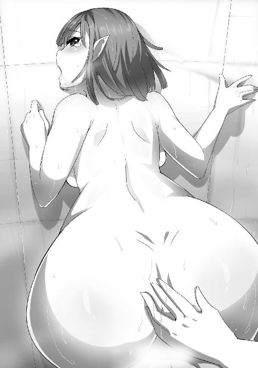

| ダンジョン暮らしの元勇者 2 ダンジョン暮らしの元勇者シリーズ (ビギニングノベルズ) | |
| 峰崎龍之介 | |
| (2016) | |
※本作品の全部あるいは一部を無断で複製・転載・配信・送信したり、ホームページ上に転載することを禁止します。本作品の内容を無断で改変、改ざん等行うことも禁止します。また、有償・無償にかかわらず本作品を第三者に譲渡することはできません。
※本作品は電子書籍配信用に再編集しております。
冷たい水で顔を洗うと、目の奥で凝っていた眠気が少し解けた気がした。
「......こんなものか」
フレデリカ・パームは呟き、用意しておいた手拭で顔の水気をさっと拭った。それから顔を洗うために桶に張っていた冷水を、壁際の溝に捨てる。溝は微妙に斜めになっているらしく、水を止めることなく部屋の外に運んでいった。
その行き先は、フレデリカにはわからない。なにせ彼女はここ──元魔王城たるダンジョンに住まう者としては、一番の新入りだ。廃棄された水の行方など知りようもなかった。
（まあ、そもそもあまり興味もないが）
どうということのない気分で呟き、フレデリカは振り返った。そこには、壁一面と言ってもいいほど巨大な姿見が設えられている。キエト王国の大貴族、パーム家の息女たるフレデリカも、流石にこのサイズの鏡は見たことがなかった。
恐らく魔王城であった頃の名残なのだろうが、いくらなんでも大きすぎないかと、彼女は思っていた。
「よし......おかしなところはないな」
鏡を見つめ、確認するように呟く。鏡にはいつもと同じ姿が映りこんでいた。二十歳そこそこの、赤毛の女。どうということのない平服の上下を身に纏い、本来はつり目がちな目元をやや眠そうに歪めている。
（いかんな。しゃっきりせねば。元よりそれほど、大した女でもないのだ）
鏡に映った自分に、戒めを投げつける。他人の意見を鵜呑みにするなら、こんな男女でもそれなりの美人ではあるらしいのだが──フレデリカはいまいち、その評価を信用していなかった。
王都にいた頃は眉が凛々しいねとか、泣き黒子がセクシーだねと言われていたが、その評価を主に下していたのは歳の離れた兄たちだったのだ。かなり身内びいきが入っているだろうと、フレデリカは睨んでいた。
「......顔立ち、か。わたしがまさか、こんなことを気にするようになるとはな」
ふと、彼女は苦笑した。王国騎士として職務に励んでいた頃は、自身の容姿など歯牙にもかけていなかった。それがいまは起床して顔を洗った途端に鏡の前に直行し、情けないことになっていないか確認している。その変化が、どこかおかしかったのだ。
「......まあ、色々あったからな」
数日前に自身に降りかかった災難を思い出し、フレデリカは苦い顔をした。上級騎士カトレア・リッケルを始めとした同僚たちからの嫌がらせと、このダンジョンのトラップによる陵辱の数々。いま思い出しても顔から火を噴きそうな記憶だ。
「......っと。いかんな」
よくない方向に傾きかけた思考を、頭を振って散らす。それから彼女は、早足で扉の方に向かった。この部屋にはふたつ扉があるのだが、フレデリカが向かったのは出口──王座の間に繋がっている方だ。もうひとつは浴室に繋がっている。既に数回使わせてもらったが、フレデリカの実家並みに豪華な浴室だった。
ともあれ、フレデリカは部屋を出た。元々決めていた予定通りに足を進める。向かう先はブラムの部屋だった。
「そろそろわたしも、タダ飯食らいは辛いからな」
早足で歩きながら、呟く。思い浮かべるのは、現在の彼女の境遇についてだ。
フレデリカは数日前の悶着の末、このダンジョンに留まることになった。ブラムの所有物──または部下としてだ。本来なら馬車馬の如く働かされていても不思議はない立場である。
だが彼がまず命じたのは、ここでの生活そのものに慣れろということだった。結果フレデリカは数日かけてこの場所──ダンジョンの住人にとっては生活スペースとなる二十五階層を、じっくり見て回っていた。
正直に言えば、最初の二日ほどはずっと驚きっぱなしだった。当たり前だが、ここは地上のどことも違う、ダンジョンの奥底だと思い知った。
まずそもそも太陽が見えない。時間を知りたければ時計があるが、それが昼なのか夜なのかまではわからないのだ。一応、王座の間を照らしている魔法の光の強度から読み取れなくはないのが救いだ。
他に貴重な体験としては、数時間に一度はインプが目の前を横切ったり、新顔の存在を面白がって後頭部に蹴りを入れてきたりした。妙な愛嬌があるのでとりあえずは放っておいたが、しばらく続くようなら一度叩き落としてやるつもりだった。
また、このダンジョンは地の底に似つかわしくないほど高い水準の生活が可能なのもわかった。先ほど思考にのせた浴室もそうだし、異様に道具の揃った台所にも驚かされた。
（......とはいえ、な）
フレデリカは回想を閉じ、胸中で呟いた。新鮮な気持ちでいられた日々は、そう長くは続かなかったのだ。いかに広々としていても、数日ずっと見て回れば隅々まで把握できてしまう。結果フレデリカは、昨日あたりから暇を持て余し始めていた。
こんな朝っぱらからブラムを訪ねようとしているのは、そのせいだった。昨日のうちに、ブラムと約束していたのだ。今日からフレデリカも、なにかしら仕事をさせてくれるようにと。
そんなことを考えているうちに、ブラムの部屋の前に到着した。フレデリカは少しだけ緊張しつつ、そっとノックをした。
だが返事がなかった。なので彼女は少しだけ強めに、何度かノックを繰り返した。だがやはり、部屋の中からの返事はなかった。
「むう。まだ寝ているのか」
フレデリカは唸り、腕組みをした。無理に起こすのは忍びない気がしたのだ。
「......おや？ そこにいるのはフレデリカさんかい？」
不意に背後から呼びかけられ、彼女は腕組みを解いた。声は朗らかな調子の、男性のものだ。
「その声......アルカノン殿か」
心当たりを口にしながら振り返った。視線の先では思った通り、黒いローブに身を包んだ金髪の青年が、にこにこと笑って佇んでいる。整った顔立ちだが、どうも幼い雰囲気が付きまとう男だった。
魔導師、アルカノン・ロイゼ。かつて勇者ブラムを支えた仲間であり、魔王討伐の立役者のひとりだ。そして現在においては、このダンジョンを亡き魔王に代わって運営しているダンジョンマスターでもある。
「早いね。流石に騎士だっただけあって、生活が規則正しい。なによりだよ。どこかの寝ぼすけも見習えばいいのにね」
青年は小さく肩をすくめながら、そんなことを言ってきた。目線はフレデリカの背後、ブラムの部屋に向いている。
フレデリカはそれに、曖昧な笑みを浮かべた。返答に困ったわけではなかった。ただ、彼女の知るアルカノン・ロイゼと、目の前の彼とが上手く結びつかなかったのだ。
（......ザヴァクの麒麟児。魔道の全てに祝福された暗闇の御子。同じ世代だとは聞いていたが、このような優男だったとは）
偏見ではあるが、もっと卑屈そうな小男か、じめじめとした陰湿そうな人物を想像していた。だが数日前あの男に──ブラムに紹介された彼は、ご覧の通りのきらきらした美青年だった。その大きすぎるイメージのずれは、数日では修正できなかった。
なんにしろ──フレデリカは心を落ち着け、若き魔導師に向かって告げた。
「......仕方あるまいよ。ブラムは連日、ダンジョン内に『出勤』している。物見遊山程度にしか動いていないわたしとでは、疲労の度合いが違うのだろう」
「まあ、彼が忙しいというのは否定できないかな。昨晩も夕食中に慌ただしく出ていってたし」
「ああ。あれは『飯くらいゆっくり食わせろ殺すぞ』という顔だったな」
連絡係のインプの顔を鷲掴みにし、悪態を吐きながらダンジョンに向かっていったブラムの顔は、こう言ってはなんだが悪鬼もかくやという怖ろしさだった。インプはまるでこたえた様子もなく、楽しそうだったが。
「ま、それはともかく。こんな早朝から男の部屋の前で棒立ちなんて、朝駆けでもするつもりだった？ だとすると僕はとんだ間抜けってことになるから、早々に退散するけれど」
アルカノンが楽しげに告げてきた。軽妙な、しかしやや下品な軽口。
「いや、違う。単に用があっただけのこと。返事がないならそれまでだ」
残念ながら軽口に応じるだけの語彙がないので、フレデリカは素直に否定を口にした。
「あ、そうなの？ なんだ、残念」
なにが残念なのかは知らないが、彼はそう言って肩をすくめた。それから、すたすたと歩み寄ってくる。というか、フレデリカを追い越して扉のノブに手をかけてすらいた。
「どうせインプに叩き起こされてぶち切れるんだから、いま起こしたって構いやしないよ。鍵も開いてるし、入りなよ」
彼はあっさりそう言うと、本当に扉を開けてしまった。いくらダンジョンマスターだとはいえ、それはいいのだろうか。
「じゃ、僕は一足先に朝食に向かうから。ふたりを起こしたら食堂に連れてきてね」
「ふたり？」
聞き返したが、その時にはアルカノンはひらひらと手を振り、立ち去り始めていた。
と、彼は一度だけ振り返り、告げてくる。
「ああそれと。起こす時は遠巻きにね。直接触るのは危ないから、お勧めしないよ」
彼は一方的にそれだけ告げると、止める間もなくすたすたと歩き去っていった。
「行ってしまったか。しかし......いいのだろうか」
阻むもののなくなった部屋の入り口をチラリと見て、フレデリカは呟く。部屋の主に許可を取らずに侵入するのは、なんだかんだで常識人なフレデリカには躊躇われる無作法だ。
（しかし......まあ、開いてしまったし。それに、あいつの寝顔は少しだけ興味があるしな......）
良心の疼きと好奇心を天秤にかけると、あっさりと好奇心が勝った。フレデリカはどきどきしつつ、足音を殺して部屋に侵入した。
◇
ブラムの部屋は、意外なことに散らかってはいなかった。というより、物がそもそもない。灰色の絨毯にテーブルと椅子のセット、魔法の品らしき照明。そして大きめの寝台。あるのは精々そんなものだった。なにか変わったものはないかと細部まで目を向けてみるが、テーブルにはなにも載っていないし、本の類も見たところない。宛がわれた部屋をそのまま使っているような様子だ。
（薄々感じてはいたが、あいつはえらく無欲だな......）
思いながら、フレデリカはひとまず寝台に足を向けた。大人が四人は眠れそうな、立派な寝台。その真ん中に、シーツに包まった膨らみがぽつんと鎮座している。よく見ると、はみ出た黒い頭も見えていた。ブラムの頭だろう。
フレデリカはその頭に向かって、やや控えめに声をかけた。
「おーい、ブラム。朝だぞ」
その声に反応したか、シーツの膨らみがもぞもぞと動いた。だが、奇妙なことに黒い頭は微動だにしない。
なんにしろ、ブラムはまだ目覚めていないようだ。なのでフレデリカは、少し声を大きくして再び呼びかける。
「おーい！ 朝だぞ！」
「......うるさいですね」
「へ？」
二度目の呼びかけに返ってきた声は、ブラムのものではなかった。それどころか男の声ですらない。涼やかな女の声だ。
フレデリカがぎょっとして一歩後ずさっていると、シーツの膨らみがのそのそと起き上がった。
「あ、え──イレーネ殿!?」
起き上がってきたのは、銀色の髪と長い耳を持つ、ぞっとするほど美しい女だった。彼女はフレデリカの大声を歯牙にもかけず、眠そうに目元を擦った。
「なんの騒ぎですか？ まさか、こんな朝っぱらから侵入者がどうのなんて言わないですよね。これ以上この人をイラつかせると、流石の私も犯し殺されかねませんよ」
冗談なのか素なのかいまいちわからないことを言って、女──イレーネはこちらに視線を向けてきた。それから、あらと小さく呟く。
「フレデリカさんでしたか。おはようございます」
言って、彼女は小さく頭を下げた。すると、かろうじて体に引っかかっていたシーツがはらりと落ちる。そして見えたものに、フレデリカはまた声をあげた。
「ちょ、イレーネ殿！ 前、前がはだけているぞ！」
イレーネはなぜか裸だった。絵に描いたような美しい形の乳房が、お辞儀の動きに合わせてふるふると揺れている。同じ女ではあるが、思わずフレデリカは赤面した。
だがイレーネはまるで気にした様子もなく、淡々と告げてきた。
「ああ、朝食の時間なんですね。わざわざありがとうございます。私たちだけだと昼前までろくに起きられないので」
「あ、いや......どういたしまして」
あまりにもイレーネが堂々としているので、フレデリカはとりあえずそれだけ答えた。それから、恐る恐る訊ねてみる。
「その、イレーネ殿。......なぜ、裸なのだ？」
言ってみてから、その問いがかなり間抜けなものだと気づいた。男の寝台で、女が裸でいる理由。そんなものはひとつしかない。
「なぜと言われましても。抱かれるのに服を着たままでは不便でしょう。まあ、そういうのが好みな方もいますが、ブラム様は特にそういう癖はありませんし」
イレーネは小首を傾げつつ言ってきた。怜悧な美貌にはそぐわない幼い仕草だが、彼女がやると不思議と愛嬌のある姿に見える。
まあなんにしろ、イレーネの返答は予想通りではあった。フレデリカはそれに、胸中で呟く。
（ただならぬ、という雰囲気ではあったが。......そうか、やはりそういう関係か）
これもまた、予想していたことではある。ブラムとイレーネが、男女の関係にあるというのは。
というより、あの空気を見て気づけないのはよほどの阿呆だろう。そしてフレデリカは阿呆ではない。
（......なんだろう。予想していたのに、なんだか落ち込むな......）
もやもやした感情が胸中で渦巻くのを自覚する。だがそれを態度に出すのは憚られて、フレデリカは細く嘆息した。それから、一歩前に出た。膝立ちで寝台に上がり、ブラムを起こしにかかる。
とりあえず、元々の用件を済ませようという判断だった。と、その瞬間。
「あ。フレデリカさん、迂闊に近寄ると──」
「え？」
イレーネが忠告のようなものを投げてきたが、もう遅かった。フレデリカの手がブラムに触れかけた途端、これまで微動だにしていなかったブラムが、弾かれたように動き出した。驚いて硬直している間に、腕を取られて引きずり倒される。
「え、ちょ、うわっ!?」
叫ぶが、どうにもならなかった。なにをどうされたのかもわからないまま腕の関節を極められ、フレデリカはうつ伏せの体勢からまったく身動きできなくなる。
「死ね」
やや寝ぼけたような、しかし殺意だけは明確に感じられる声が降ってくる。フレデリカはぞわりと肌をあわ立たせた。
「──ストップです。彼女は敵ではありません。どうどう」
反射的に目を瞑って身をすくませていると、危機感があるのかないのかわからないイレーネの声も聞こえた。
すると──
「............」
ブラムは返事はしなかったが、とりあえず極めていたフレデリカの腕を解放した。
呆然としたまま、体だけ起こした。背中に刺さった声の鋭さに、まだ肌があわ立っている。
「い、いまのは......？」
苦労して声を絞り出す。だがブラムはまだきちんと目が覚めていないのか、頭をふらふらさせている。結果、問いに答えてきたのはイレーネだった。
「この人、あらゆる能力値が戦闘に特化しているんですよ。なので不意に触れられると、寝ていても体が反応するんです。ほら、人を見ると吼える犬っているでしょう。あんな感じですよ」
「......そ、そうなのか」
そんな平穏な喩えで間に合う物騒さではなかった気がしたが、ひとまず頷く。と、そうこうしている間に、ブラムが意識を覚醒させた。
「......あん？ なんでフレデリカがここに......」
呟く彼の目はかなり眠そうだが、頭の揺れは止まっていた。
「起こしに来てくれたんですよ。ほら、しゃんとしてください」
イレーネが這い寄り、ぺしぺしとブラムの頬を叩いた。彼は鬱陶しそうに目を細めたが、止める気はないらしく、されるがままだ。
「............」
なんとなく。本当になんとなくだがそれを見ているのが辛くなってきて、フレデリカはのそのそと寝台を這い出た。
「......先に食堂に行く。わたしに仕事をくれる件を忘れないでくれよ」
言うだけ言って、フレデリカはブラムの部屋を出た。胸中に渦巻くもやもやとしたなにかは、ひとまず無視した。
◇
「なにを怒ってるんだよ」
むっつりと黙り込んだままあとをついてくるフレデリカに、ブラムは振り返らないまま告げた。場所はダンジョンの地下六階層、中ほどのところである。
フレデリカはその言葉に、小さく『別に』とだけ答えてきた。その声に含まれていた不機嫌さに、ブラムは顔だけ振り返った。
「あのなあ。今朝の件なら謝っただろ。反射とはいえ関節を極めたのは悪かったってよ」
「だから、別に気にしていない」
フレデリカはそう言って眉を寄せた。どう見ても気にしている顔ではあったが、本人がこうも頑固だとどうしようもない。
今朝起き抜けにあった出来事のあと、フレデリカはどうも様子が変だった。気になって訊ねてみても、いまのような反応しか返ってこない。
（ったく、なんだってんだ。イレーネも妙なこと言ってやがったし）
ブラムとフレデリカを転移魔法で送ってくれたイレーネは、いまこの場にはいない。彼女はメイドとしての仕事もあるので、今日はそちらに専念している。その彼女がブラムたちを転移させる時に、小声でなにやら囁いてきたのだ。
『釣った魚には、きちんと餌を与えてください。それが飼い主の責任でしょう？』
（......まあ、心当たりがないとは言わねえが）
思いながらも、ひとまずその件は思考から追い出した。代わりに別のことを口にする。
「まあそれはいい。とりあえずは仕事の話だ」
「ああ」
フレデリカはこくりと頷いた。それを確認してから、告げる。
「基本的な部分は、昨日だか一昨日だかに話したな。このダンジョンを運営していくためには『負の魔力』が必要で......俺たちが干上がっちまわないためには、常にそれを集めてなきゃならない」
「そうだな。それは聞いた。『ギグスの胃袋』だったか？ 魔法の道具を使うのだろう」
フレデリカはすっと表情を引き締めて、答えてきた。元が真面目な騎士だけあって、仕事のこととなると切り替えができる性質らしい。ブラムはそれに頷きかけつつ、懐から件の魔法の道具──『ギグスの胃袋』を取り出した。
「そうだ。基本的には罠にかかった獲物にこいつを向けて、負の魔力を失敬する。だが実のところ今回は、罠とは別口のところからいただくケースなんだが」
「そうなのか？」
ブラムは聞き返してくるフレデリカに、『ギグスの胃袋』を手渡した。彼女はおっかなびっくり受け取る。
「そうだな。具体的な説明をする前に、とりあえずお浚いするか」
ブラムは言って、ぴっと指を一本立てた。
「第一に、このダンジョンには無数の魔物が巣を作り、好き勝手に生きている。それは君も知っているな？」
「ああ。魔王の加護を求めて、近隣どころか大陸中から集まってきたのだろう。奴らは瘴気を好むから、魔王の近くは居心地がいいというのも理由だったか」
模範的な答えを口にして、フレデリカは歩くペースを上げてきた。並んで歩く形になる。それを横目で見ながら、ブラムは指を二本に増やした。
「じゃあ次だ。これは質問と言うよりクイズに近くなるが。......魔王が存命の頃といまと比べた時、このダンジョンの魔物の数はどう変化したと思う？」
「それは......減っただろうな。彼らも言わば、生きるために寄り集まっていたわけだし。魔王という絶対的な存在が消えた以上、留まるメリットも減ったわけだから」
フレデリカは迷いなく答えてきた。内容もしっかり的を射たものだ。
「流石にいいところのお嬢さんだ。ある程度は家庭教師にでも教わったか？ ま、そういうことだ。現在のこのダンジョンは、罠に関してはかなり復旧している。だが同じように守りの要であった魔物たちは、結構な数が外の世界に散っていった。俺が魔王をぶち殺したおかげで、盗掘屋どもは前にも増して深くまで潜っただろうからな。それまでに比べると、格段に危険な住処になっちまったわけだ」
フレデリカは聞きながら、こくこくと頷いた。胸中でアルの受け売りだけどなと舌を出しつつ、ブラムは続けた。
「しかし、そこでまたひとつの変化が起きた。アルが最奥に辿り着き、ダンジョンコアの所有権を得た。この辺は魔法がらみで色々と難儀したらしいが......まあ、それはいまは関係ないな。とにかく、ダンジョンは新たな主を得て再度稼動し始めたわけだ。するとどうなったか」
「......魔物がそれを嗅ぎつけて、戻ってきたと？」
フレデリカが先を引き取り、呟いた。訂正する部分もないので、頷いておく。
「そうだ。住むのに都合のいい......つまり、外敵に襲われにくい場所として、このダンジョンを再度評価し直したわけだ。だが、そこでちょいと面倒があってな。出ていった連中がいれば、反対にここに残り続けていた連中もいる。でもって、そうやって頑固に場所そのものに拘った連中が、出戻りの連中をどう思うかは......想像がつくよな」
「......快くは思わないだろうな。そこは人間も魔物も、大差ないということか」
納得したように、フレデリカは頷いた。それから、ふと顔を上げて訊ねてくる。
「それで......そのことと仕事と、どう関係するのだ？」
「それがな」
と、ブラムは苦笑を挟んだ。馬鹿馬鹿しいことだがと前置きしつつ、
「今回向かっている場所は、とある魔物が長いこと縄張りにしている場所でな。そこに別の魔物が出戻りで紛れ込んだんだ。そして面倒なことに、そいつらはある一点において敵対する要素を持っていてな」
「......？」
ピンと来ないのか、フレデリカは首を傾げた。なんのヒントもないので無理もない。なのでブラムは、さっくりと結論を告げた。
「そいつらの共通点ってのはな、つまりどちらも男を誘惑する種の魔物だってことなんだよ」
「誘惑......というと、淫魔のような？」
フレデリカは性交に特化した悪魔の名を口にした。ブラムはそれに、小さく首を振る。
「いや、奴らは悪魔ってわけじゃない。単なる魔物さ。傍から見てりゃ似たようなもんではあるがな。ただ、厳密に言えば男を誘う目的は種族によって違う。......それはまあ、仕事には関係ないから割愛するか。なんにしろ、こんな地の底でそんなもんを求めようとしたら、当然狙うものは決まってくるよな？」
試すように言うと、フレデリカはううむと唸ってから、答えてきた。
「ああ、そういうことか。......どちらの種族も、限られたリソース......潜り込んでくる盗掘屋を捕らえてどうこうしたいわけだ。結果望みがバッティングして、争いになると」
「ピンと来たか。つまるところ今回の仕事ってのは、その魔物たちに捕らえられ、哀れにも搾り取られようとしてる盗掘屋から、負の魔力を頂戴するってことだ。あとついでに、その魔物たちが喧嘩をこじらせないように......本格的に殺し合いを始めないようにするのも、一応仕事のうちではある。奴らだって貴重な防衛戦力ではあるわけだから、そんなもんで同士討ちされたらもったいねえし」
と、ブラムが投げやりに最後の説明を付け足した瞬間。ちょうど目的地に到着した。
そこは、六階層の最奥──つまり、七階層に続いている階段のすぐ手前の部分だった。侵入者が七階層に至るためには必ず横切る、かなり広々とした空間である。
その真ん中あたりで、魔物の群れが対峙していた。
上半身は人間に近いものだが、下半身は蛇の特徴を持つ魔物の群れ。それがふたつの集団に分かれて睨み合っている。
「あれは......ナーガか？」
フレデリカが魔物の名前を口にした。あまり自信がなさそうな様子だ。実際に見るのは初めてなのかもしれない。ブラムはそれに、にやりと笑って答えた。
「惜しいな。それだと半分だけの正解だ。片方は確かにナーガの群れだが、対峙しているのはラミアの群れだ」
「ラミア？」
フレデリカが首を傾げた。無理もない反応だった。ナーガはともかく、ラミアは王国領だとほとんど見かけないからだ。
「ラミアってのは遠目にはナーガと大差ない、蛇の魔物さ。まあ似てるだけで根本的なところではまったく別の生き物なんだが。......あと、実は見た目もよく見ると違う。ま、それは実際近づいてからで──」
そこでブラムは、ふと言葉を止めた。ナーガとラミアの群れの他に、なにか動くもの──人影が見えたからだ。
「......あれが今回の獲物だ、フレデリカ」
小声で囁きかけながら、ブラムはその人影を観察した。
見えたのは、三人の男たちだった。全員革製の鎧や小さな盾──バックラーを装備し、剣も持っているようだ。だが、それが役に立っているようには見えなかった。
男たちは、ナーガとラミアの群れの間に挟まれ、怯えた様子で尻餅をついていた。
「蛇に睨まれた蛙、ってところだな。いや、もう体半分くらいは飲まれてるか？」
「言っている場合ではないだろう。食われてしまったら負の魔力を回収できないぞ」
「ごもっともで。んじゃま、お仕事といきますかね。......とりあえず、今回は俺が交渉やらなにやらをやってみせる。君はよく見て、流れを掴んでおいてくれ」
「今日は見学、ということか。わかった。しっかり見させてもらう」
生真面目に頷くフレデリカに、小さく苦笑しつつ。ブラムは魔物たちの方に歩みを進めた。
◇
「──ん？ なんだ、貴様らは」
ある程度近づいたところで、ブラムから見て右側の集団から声が上がった。ナーガ群のうちの一体である。険の籠もった声音だったが、彼女はブラムの姿を確認すると、おやと小さく呟いた。
「なんだ、ブラムかい。そうならそうと、声をかけておくれよ」
「......し、喋った？ いや、それよりも......ブラム、知り合いなのか？」
フレデリカがこっそりと言ってきた。ブラムは苦笑し、頷く。
「言葉が人間だけのものだと思うのは傲慢ってもんだぜフレデリカ。知能と声帯がありゃ、どんな種族だって口を利くさ。あと、知り合いなのは当然だ。何度か盗掘屋を受け取りに来てるからな」
肩をすくめつつ、ブラムはいつもの調子で軽く手を上げた。
「よう、ヘイル。今日も男漁りか。精が出るな」
「馬鹿をお言いでないよ。精を出すのはこいつらじゃないのさ」
ヘイル──ここのナーガ族の長──は、ふんと鼻を鳴らして告げた。同時に細長い舌が、唇からちろちろとはみ出ている。これはナーガの特徴のひとつだ。ぱっと見は人間そのものの上半身だが、所々に蛇の器官が備わっている。舌の他は目も蛇のものだし、肩のあたりには鱗もいくらかある。
そしてなによりわかりやすいのは下半身だ。腰あたりから下は、完全に蛇の姿だった。顔立ちは文句なく美女のそれだが、その部分が目に入れば誰でも魔物だとわかる特徴である。
とはいえ敵対せずに眺める分には、彼女らの容姿は美しいものではあった。背中を越えるほど長い黒髪は、人間の美女を探しても中々お目にかかれない艶がある。むき出しの乳房も実に形がよく、加えて大きさも中々のものだ。
「そりゃ失敬。──で、こいつはどういう騒ぎなんだ？ お仲間と餌を挟んで睨み合いってな、穏やかじゃないが」
「仲間？ あいつらラミアとあたしらとが、仲間だってのかい？」
ぎろりと、爬虫類の目でヘイルが睨みやってくる。と、そこに。
「──おんしはなんじゃ。急に出てきて話の腰を折りおって」
ラミアの群れの中から、一体が進み出て言ってきた。恐らくは、あの群れの頭だろう。
進み出てきたラミアは、シルエットだけはナーガ族と大差ないものだった。だがフレデリカにも言ったように、細部はかなり違っている。
まず舌はちろちろとはみ出たりしていないし、目も人間のものとまったく変わりない。肩にも鱗などはなかった。そしてなにより、彼女には股というべき部分が備わっているのだ。蛇の特徴は、太腿あたりから始まっている尻尾の部分くらいのもので、他は全て人間と大差ない形をしていた。
そしてやはりというかなんというか、顔はかなり整っている。間違いなく美女の類だろう。どこかの貴族だと言われれば頷いてしまいそうな黄金の髪と、男を誘ってやまない大きな乳房は、実に見事なものだった。しかもそれは個体による話ではなく、ラミア族は元々美しい金髪と豊かな乳房を持って生まれてくる特徴があった。
「ま、また喋った......」
フレデリカが背後でうろたえているが、ブラムはひとまずそれを無視した。進み出てきたラミアに向かい、告げる。
「こういう場合、まず自分から名乗る方が円滑だぜ」
「......ふん。小僧が抜かしおる。まあよい、わっちはイニス。こやつらの長じゃよ」
イニスと名乗ったラミアは、背後のラミア族たちを示して告げてきた。ブラムは頷き、答える。
「あんたは新顔だな。俺はブラム。ブラム・ディルモンド。......あんたらには、『勇者』と言った方が通りがいいかもしれんがね」
「なんじゃと？」
イニスはなにを馬鹿なという顔をした。無理もない。彼女らが大樹と思い縋った魔王を殺害した当の本人が魔王城に居座っているなどと、普通に考えるとない話ではある。
だがブラムが泰然と見返し続けていると、やがて眉を寄せて告げてきた。
「......本物なのかえ？」
「どうすりゃ信じる？ 魔王をぶち殺した聖剣で、頸を落とされりゃ満足か？」
「............」
イニスはしばらく黙り込んだ。そして、ヘイルの方に視線を投げる。ヘイルは無言で鼻を鳴らした。
このやりとりは、数週間前に彼女と交わしたものと同じだった。その時のことを思い出したのかもしれない。
なんにしろ、その反応である程度信じることにしたのか、イニスは声の棘を落として告げてきた。
「......それで、その勇者がなんの用じゃ。これはわっちらとナーガどもとの話。......この殿方たちをどちらが迎えるかという、ただそれだけの話じゃ」
言って、彼女は話の流れがわからない──あるいは恐怖で聞こえてもいない──盗掘屋たちを指差した。するとヘイルも、追随するように言ってくる。
「そうさ。別にあんたらに迷惑のかかる話じゃないだろう」
「ま、確かにそうだ。そこの盗人どもがどうなろうが、俺の知ったこっちゃねえ」
ブラムは気楽に頷いた。だが、直後にすっと目を細めもした。
「だがよ、ヘイル。以前言っておいたことがあるだろう。精を搾り取るだけ搾り取ったら、残りかすはこっちに寄越せと。だってのに、いまのあんたらの剣幕を見てると『こいつらに渡すくらいなら引き裂いてやる』って風にしか見えないぜ。俺が欲しているのは残りかすであって、死体じゃねえぞ」
「どっちも変わらん気がするが......」
フレデリカがまたぼやいたが、無視した。一方イニスとヘイルは、それぞれ似たような表情を浮かべていた。つまりは、図星を指された顔ということだが。
「やっぱりそういうノリだったか。......ったく、ちったぁ譲り合いの精神ってのを持てよ」
嘆息しつつブラムが言うと、ヘイルは鼻を鳴らした。
「はん。だったらなおさら退けないね。あたしらはずっとここに住んでいたんだ。見苦しい出戻り女どもに譲るものなんて、なにひとつないね」
その言葉に、彼女の群れのナーガたちは『そーだそーだ！』と騒ぎ立てた。すると、イニスがぽつりと呟く。
「器の小さい女じゃのう」
「ああ？ なんだって!? 鱗もろくに生えてない半端者が、意見するってのかい!?」
「おーおー、つまらんことでよう吼えおるわ。蛇というより犬じゃの。少しはわっちらの淑やかさを見習ったらどうじゃ？」
ラミアの群れが、『ほんにそうじゃ』と追従した。
それを皮切りに、ふたつの種族は口々に罵倒やら皮肉やらを飛ばし始める。
「都合よく出戻ってきたくせに偉そうな！」
「頭の固い時代遅れどもが囀るでないわ！」
「死ねあばずれ！」
「なんじゃと淫売！」
女三人寄れば姦しいと人間界では言うが、魔物でもそれは変わらないらしい。しかもこれだけ集まると、もはや姦しいというレベルではなくなっていた。
「............」
ブラムは無言でそれを見やると、すっと腰に手をやった。躊躇いなく聖剣を抜き、手近な壁に向けて叫ぶ。
「光よ、穿て！」
瞬間、掲げた聖剣の切っ先から、夥しい光が発せられた。それは破壊力を伴った光の棘となって空を裂き、やがて壁に突き刺さると凄まじい轟音を立てて爆裂した。
『きゃあああああああ!?』
巻き起こった爆風と轟音、目を焼くような光の濁流に呑まれ、蛇女たちが一斉に悲鳴をあげてひっくり返る。なぜかフレデリカの悲鳴も混じっていたが、それはとりあえず無視した。
爆発のあとには、先ほどの姦しさが嘘のような静寂が舞い降りていた。その中でかちりと音を立てて納剣し、呟く。
「ごちゃごちゃ言うな。次に喧嘩始めたら、いまのを直接ぶち込むぞ」
『......はい』
あんまりにもあんまりな言いようだったが。
ひっくり返った魔物たちは、とりあえずこいつには逆らわない方がいいと本能的に悟ったのか、消え入りそうな声でそう呟いた。
ブラムはそれに満足げに頷くと、さっと振り返ってフレデリカに告げる。
「よっしゃ。とりあえず交渉の入り口には立てたぞ。いいかフレデリカ、交渉の基本はまず舐められないことから──っておい。どうした？」
振り返った先には、フレデリカの姿はなかった。と、ふと足元に、ふらふらと揺れる頭が見えた。
「......ブラム。次から無茶をする時は、まずわたしに教えてくれ......」
しゃがみ込んだフレデリカはぐったりと頭を抱えながら、呻くようにそう言った。
◇
「まあ、気を取り直して」
ひとりだけ元気なブラムは、ぱんぱんと手を叩いてそう言った。ぼちぼち回復し始めたヘイルとイニス、そしてフレデリカからは不満そうな視線が殺到するが、一切気にせず続ける。
「とにかく、あんたらが自分で喧嘩をやめられないなら、この場は俺が仕切らせてもらう。いいな？」
「......ああ」
「......うむ」
ヘイルとイニスはまだ不満そうだったが、とりあえず頷きはした。
と、その時だった。
「うわあああああああああ！」
叫び声が聞こえた。えらく悲痛な悲鳴である。つられて見やると、これまでろくに喋れてもいなかった盗掘屋のひとりが、必死の形相で走り出したところだった。彼は一直線に、ブラム目がけて走ってきている。
「あ、お前！」
「逃げるつもりかえ!?」
ヘイルとイニスが叫ぶが、男はどうにか蛇女の群れの間をすり抜け、ブラムの目の前にまで到着した。
「た、助けてくれ！ 礼はする！ 今日の収穫を全部やってもいい！」
収穫──つまりは、魔鉱石ということだ。盗掘屋同士が窮地に助け合うのは珍しいケースでもない。謝礼があるならもっと確実になる。
──もっともそれは、相手が盗掘屋であればの話だが。
「寝言は寝て言え、馬鹿たれが」
ブラムは呟いて、足元に縋り付こうとしていた男の足を払った。不意を打たれ、男は悲鳴をあげて転倒する。ブラムはうつ伏せに転んだその背中を容赦なく踏みつけた。
「ぐえっ。な、なにするんだよ！ 謝礼か？ 謝礼が足りないのか？」
男はじたばたと暴れて喚いた。が、ブラムはとりあえずそれを無視して──ついでに重心を変えて男を押さえつけて──ついと他のふたりの男に視線を向けた。
（ふむ。連中の中じゃ、こいつが一番若いな。逆境で走り出せる胆力もある）
観察しつつ思考して、ひとり頷いた。それから、ことの成り行きを見守っていた蛇女たちに告げる。
「よし、こうしよう。この一番元気な男はこれから行う勝負の結果によって、どちらかに引き渡すことにする」
「......勝負？」
と、これを訊いてきたのはフレデリカだった。だがそれは、ナーガ族やラミア族たちも同じ気持ちのようだった。疑問を隠せない顔で、一斉に首を傾げている。ついでに言えば、蛇女に挟まれているふたりの男は顔面蒼白だったが......まあそれはどうでもいい。
「勝負の内容は簡単だ。そこのふたりから、それぞれひとりを選べ。そしてそれぞれの方法で、精を搾り取るんだ。そうだな、回数は三回くらいでいいだろ。で、より早く達成した方の勝ちだ。簡単だろ？」
ブラムが説明すると、ヘイルとイニスはぱちくりと瞬きしたあと、同時ににやりと笑った。
「なるほど、面白いね」
「ほほ。もらったも同然の勝負じゃな」
どうやら意図は伝わったらしく、ヘイルとイニスは気絶している男ふたりのところに這い寄っていく。そして、それぞれ男を選び始めた。
「あたしらはこっちにしよう。いい無精ひげだ。濃いモノを溜めているはずさ」
ヘイルが言い、ひげ面の屈強そうな男を群れの方に引きずっていった。男は引きつった悲鳴をあげたが、誰も聞いてはいなかった。
「ではわっちらはこちらを。細身じゃがよい筋肉よ。まぐわうにはいい案配じゃて」
続いてイニスも男を選び、ずるずると群れの方に引きずっていく。こちらも悲痛な悲鳴をあげたがやはり聞いている者などいないので、虚しく響き渡るだけだ。
（ふむ。自分で嗾けといてなんだが、ひどい絵面だな）
呟きながら改めて数えてみると、ナーガ族は全部で十二体、ラミア族は十体いた。その中に男がひとりきりで引きずり込まれていくのは、どこか捕食を思わせる光景だった。
「っと。忘れてた。服はまだ脱がすなよ。それも込みで勝負だからな。合図までちゃんと待てよ。ああそれと、この勝負の審判は俺がやる。だから俺から現場が見えるように場所を空けとけ。それから、一回射精させたらその都度申告すること。申告がない場合は問答無用で無効だからな」
ブラムの説明に、『はーい』と同意の言葉が返ってくる。ご馳走を前にしているからか、どちらの種族も少し機嫌が回復しているようだ。
「なんだこれ......」
「ま、気持ちはわかるがな。だが、これがここの日常だ。まともなことなんざひとつもねえ。早めに慣れた方が身のためだぜ」
「これに慣れたら、騎士どころか人として違うところに行ってしまう気がする......」
フレデリカがぼやく──と同時に、足元の男がまたじたばたと暴れた。
「ちくしょう！ なんなんだよあんた！ なんで魔物と仲よさそうなんだっ!?」
「うるせえ。別にあいつらとつるんでるわけじゃねえよ。単にお前らの敵なだけだ」
言いながら片足だけで、男の抵抗を封じる。そこでふと気づいた。
魔物たちが静かになり、じっとこちらの合図を待っていた。ブラムは視線をそちらに向け、深く息を吸い──声を張った。
「よし──始めろ！」
その合図と同時に。男に餓えた二種類の蛇女たちは、一斉に犠牲者を貪りにかかった。
◇
「ひぃぃぃぃ!?」
「た、助けてくれー！」
男たちが悲鳴をあげると、そのたびに革の鎧やらベルトやらインナーやらが、次々と放り出されて宙を舞った。十数秒も経つ頃には、男たちは見事に全裸にされていた。
「早いな。流石に常に男を襲っている種族だけある」
気楽に呟いていると、フレデリカが背後から歩み寄ってきて、問いを投げてきた。
「なあ、ブラム。奴らが精を求める理由がそれぞれ違うと、さっき言っていたが......具体的にはどう違うんだ？」
「なんだ、案外むっつりなのか？」
からかい混じりに言うと、フレデリカはぐったりと答えてきた。
「......なにも喋らずにあれを見てると、いよいよどうにかなりそうなんだ」
「はは、なるほど。そんじゃまあ、気休めがてら話すとするかね」
苦笑して、ブラムはまずナーガの群れの方を指差した。そこではひげ面の壮年の男が仰向けに寝かされ、男根をしゃぶられて仰け反っている。
「な、なんだこれ!? 長細いのがうぞうぞと......！」
ひげ面の男が引きつった声で喚いた。ナーガは細く長い、しかもかなり自在に動く舌を持つから、人間の口淫とはまったく違う感覚があるのだろう。雑に推測しながら、ブラムは口を開いた。
「見ての通り、ナーガの性技は口か手によるものがほとんどだ。まあこれは、体の特徴からしてそうなるようになってるんだが。いまは見えないが、彼女らの性器は人間とは違うところにあるらしい。具体的には、あの尻尾の真ん中あたりだな。しかもかなり小さい穴らしくて、人間の男根じゃろくに入らないそうだ」
「......？ じゃあ、なんで子種など欲しがるんだ？」
フレデリカは順当に質問してきた。ブラムは頷き、続ける。
「ナーガが精を求める理由は、一言で言うなら『美味いから』だそうだ。つまり、食料として精を求めてるわけだ。......いや、主食ってわけじゃないから、『おやつ』と言う方が正確かもしれないな」
「お、おやつ？」
フレデリカは軽く身を引いて呟いた。と、その時。
「ぐ、ぐああああっ!? で、射精る！」
ひげ面の男が思い切り仰け反り、そんなことを叫んだ。すると男根をしゃぶっていたナーガ──どうやらヘイルのようだ──が、ちゅぽんと口を離して笑顔になる。
「ひっぱつめ！ もらったぁ！」
彼女は口いっぱいに白濁を頬張ったまま、実に満足そうな声で言ってきた。審判に対する申告だろう。軽く手を上げて応じた。
「......な？ 美味そうな顔してるだろ。まあ味覚なんてそれぞれだしな。人間の中でも好みなんて千差万別だ。彼女らが精の味を気に入ってるのにケチをつけるのは、不粋ってもんだろうさ」
「......そ、そうか」
頬を引きつらせて、フレデリカ。馴染みがない知識なので無理もないだろう。
ブラムはその肩を叩きつつ、今度はラミアの群れに指を向けた。そちらもまた、蛇女による陵辱が進行中だった。ただしこちらはナーガとは違い、口での奉仕はしていない。彼女らには股が──人間に対応した性器があるので、それを使って精を搾ろうとしている。つまりは、単純にセックスを楽しんでいるということだが。
細身の男を犯しているラミア──イニスは尻尾を使って腰を浮かせ、あるいは沈めて自在に抽挿している。股はあっても開かない構造なので、能動的に犯すにはあの動きが最適なのだろう。
「うわあああっ！ こ、腰が勝手にっ」
細身の男が絶叫しながらじたばたと暴れた。というよりも、どうやら自分から突き上げ始めたようだが。相手が魔物の女とわかっていても、射精の欲求には勝てなかったらしい。
「ああ......よいぞ、人間っ。ほれ、もっと腰を使って、わっちを楽しませい！」
かなりの勢いで突き上げられながらも、イニスは余裕の表情だった。それどころか自分からもさらに腰を振り下ろし、あるいは捻って男根を刺激している。
するともはや限界だったのか、細身の男が痙攣のように震えた。射精したのだろう。
イニスはぶるりと震えつつそれを堪能すると、すっと腰を上げた。するとその股から、ぼとぼとと白濁が垂れ落ちてくる。
「ふう、やはりまぐわいはいいのう。さて、これで一回目じゃ。審判、しかと見たか？」
満足げな表情で言ってくるイニスに、ブラムは軽く頷いた。
「ああ。だが急げよ。ナーガと十秒ほど差が開いてるぞ」
言うと、イニスはひくりと頬を引きつらせた。そして慌てて振り返り、群れの連中に次々かかれと命令を下した。男はもう射精ないと泣き言を言ったが、ラミアたちに聞く耳はないようだった。
それを他人事の温度で眺めつつ、ブラムは説明の続きを口にした。
「で、ラミアの話だな。彼女らは見ての通り、人間に近い股──つまりは性器を持っている。でもって、感じる快楽も似たようなもんだそうだ。だが、多少似てるといってもしょせんは別の生き物だから、孕むことは絶対にない。だからああやって、なんの心配もなく快楽だけを貪っているわけだ。言わば彼女らなりの娯楽......『遊び』だな」
「............なんか、頭痛い」
フレデリカは呻き声を漏らし、表情もそれに倣って歪んだ。なまじ上半身は人間に見える上、言葉も通じる蛇女たちだ。つい人間の価値観で考えてしまったのだろう。
「ま、深くは考えんな。俺たちはただ、勝負の結果を受け止めて行動すればいい」
「......うーむ」
フレデリカはそれでも、難しい顔で呻いていたが。どのみち彼女を納得させる時間はなかった。
「にはつめぇ！」
「こっちもじゃ！」
蛇女たちはほぼ同時に、二回目の射精を宣言してきた。いよいよ勝負も大詰めである。
「次に射精させた方が勝ちだ。気張れよー」
気のない応援など送ってみる。まあそんなものがなくても、彼女らは一心不乱に男を犯しにかかっているが。
だが、三回目の申告は中々こなかった。連続で射精させられて、流石に男たちの男根も萎えているようだ。
と、ナーガの方で動きがあった。中々勃起しないのに業を煮やしたか、群れの一体がひげ面の尻の穴に舌をねじ込んだのだ。ナーガの舌は蛇に似て細いので、それほど苦労なく入り込んでいったようだ。
だがいくら細くとも、男が後ろの穴になにかをぶち込まれたらどうなるかは──まあ言うまでもない。
「ぎゃあああああ!? うお、おおおおおおおおお!?」
ひげ面の男はびっくんびっくんと大仰にのた打ち回ると、あっさりと勃起した。そのまま派手に白濁を迸らせてすらいる。前立腺を舌先で刺激されたのかもしれない。
「よっしゃあ、三回目ぇ！」
「なんじゃと!?」
ヘイルの宣言にイニスが叫ぶが、もう遅かった。ブラムはしっかり、ナーガ側が三回目の射精を促したのを見ている。
「そこまでだな。──勝者、ナーガ陣営！」
言って、まだ踏んだままだった若い男の襟首を掴んだ。そのまま引っ張り上げ、無理矢理立たせる。
「んじゃ、早速賞品の贈呈だ。──受け取れ！」
ブラムは男の背中を思い切り押し、ナーガの方に突き飛ばしてやった。
「え？ あ、ちょっ。ちょっと待ってくれぇぇぇ!?」
男は喚いたが、急には止まれないようだった。そのままぼすんと、待ち構えていたヘイルの胸に顔を埋める。
「ふふふいらっしゃい。さああんたも、あたしらと愉しいことしようねぇ？」
「ひいいいいいい！ い、いやだぁ！ 助けてくれぇぇぇぇぇ......ぇぇ......」
男の悲鳴は、殺到するナーガの群れの中に取り込まれ、段々小さくなっていった。それを確認してから、ブラムはひとり頷く。
「よし。納品完了」
「鬼......」
フレデリカがなにか言ったが、ブラムは肩をすくめるだけで済ませた。
「フレデリカ。『ギグスの胃袋』を開けて、あのひげ面に向けてみな」
「え？ あ、ああ。そういえば預かったままだったな」
彼女は言って、大の字で白目を剥いているひげ面の男に近づいた。そして、持たせていた小箱──『ギグスの胃袋』の蓋を開ける。
すると男の体から、黒い靄のようなものが立ち上った。それはふわふわと空中を漂い、やがてフレデリカの持つ小箱の中に収まる。これこそがブラムが仕事として集めている、『負の魔力』である。
「量は......まあまあだな。ま、カトレアがむしろ異常な量だったんだ。こればっかりは仕方ないか」
フレデリカの手元を覗き込み、その肩を叩いた。
「この際だ。もう片方も君がやれ。いずれ俺の手が塞がるような状況になったら、君にこういうことをしてもらうわけだからな。何事も経験するに限る」
「......なんだろう。なにもしていないのに、心が汚された気分だ」
ぶつくさ言いながらも、フレデリカは細身の男の方に歩いていった。
と、そこに。
「......ぬう。ナーガ如きに遅れを取るとは......」
イニスが渋面で近寄ってきた。彼女は納得いかない、という顔で言ってくる。
「審判。最後のは反則ではないのかえ。あれでは搾り取るというより押し出す形ではないか」
「言葉遊びだろそりゃ。ケツにぶち込むなとは言ってねえぞ」
「そうじゃが......」
イニスはなおも納得いかないという顔だったが、途中でふと思いついたように手を鳴らした。それから猫撫で声で──蛇女が『猫』撫で声というのも奇妙だが──言ってくる。
「のうブラムとやら。お主もよく見れば、中々めんこいではないか。どうじゃ、一回くらい味わわせてくれんかのう？」
その提案に、ブラムはすっと目を細めた。美しい金髪を揺らし、大きな乳房を見せ付けて流し目を送ってくる──少なくとも上半身は──美女。なるほど魅力的なお誘いだ。
だがブラムは、乾いた声で呟いた。
「......そういや、蛇って焼いたら食えるよな」
「──あ、いまのなしで。うむ、冗談じゃよははは......」
イニスはずざっと後ずさりながら呻いた。それを半眼で追いかけると、イニスはだらだらと冷や汗を掻き始めた。そうなってからようやく、ブラムは肩をすくめて嘆息した。
「......ま、出戻りとはいえ、あんたらをぞんざいに扱う気はねえよ。......そうだな。次にいい獲物が見つかったら、優先的に斡旋しよう。それで今回は手打ちだ。......いいな？」
「む、本当か？ なんじゃ、案外話がわかるではないか。うむ、今回はそれで手を打とう」
イニスは目を瞬かせたあと、あっさりと頷いた。
交渉のごく基本的な部分......可能な譲歩は出し惜しまない。アルの受け売りではあるが、上手く機能したようだ。
と、そこでフレデリカが戻ってきた。それを確認して、ブラムは男を貪るのに夢中なナーガたちに声をかけた。
「愉しむのは結構だが壊すなよ！ そいつにはまだ用がある。搾りかすはちゃんと、いつもの場所に提出するように！」
「あいよ」
「わかってるよー」
「若いチンポ、やっぱ美味しいわねー」
ナーガたちはまばらに返事をした。一部ただの感想だったりもするが、理解しているならそれでいい。
「あの様子だと、しばらくかかりそうだな。ま、いいさ。この際近い階層を軽く見回ってこよう。戻ってきた頃には、流石に搾り取られてるだろ」
「......うーん」
フレデリカはまだ慣れないのか小さく呻いていたが、きっぱりと聞き流してやった。
夕刻。ダンジョンの最奥にて。
「......疲れた」
フレデリカは自室に入るなり、ぐったりと愚痴を零した。そしてそのまま、ぼすんと寝台に身を投げる。思い出すのは、今日一日で『見学』した仕事の数々──つまり、侵入者たちが陵辱される姿である。
本日の犠牲者は六階で蛇女たちに捕らえられていた例の三人組の盗掘屋の他、五階で壁の穴に上半身を呑まれて尻丸出しになっていた女がひとりと、同じく五階で擬態獣に下半身を犯されていた若い男、最後に七階にてオークに追いかけ回されていた女盗掘屋のふたり組といったラインナップだった。
ブラム曰く、『今日は女が多いな』という比率だったそうだが、正直フレデリカにしてみれば、別にどっちでもいい話だった。
（『ギグスの胃袋』が十全に機能を発揮するために、ああいった陵辱が必要なのは説明を受けたが......なんともなあ）
呟く。やや陰鬱に。ここでブラムに尽くして生きていくと決めた彼女だが、流石にあんなものを連続で見せられては、ぐったりくるのは仕方なかった。元は清廉な騎士を志していた彼女なので、ああいう卑猥かつある意味むごい光景は、中々慣れるものではない。
（まあ、やるしかないだろうな。ブラムとて、元々は『勇者』......誇り高い戦士だったはずだ。それが平気な顔で職務に勤めているのだから、わたしが音をあげるわけにもいかない）
実際にはブラムが高潔であった時期など一秒もないのだが、細かい事情を知らされていないフレデリカにはそれが真実だった。
（......よし。顔でも洗ってしゃきっとしよう）
フレデリカは気合を入れるように呟き、のそりと寝台から降りた。
と、その時。
「──フレデリカさん。部屋にいらっしゃいますか？」
涼やかな女の声と丁寧なノックの音が、部屋に飛び込んできた。聞き覚えのある声──イレーネの声だ。
「ああ、いま開ける」
言って扉を開けると、そこには予想通りイレーネがいた。今朝と違って、きっちりとメイド服を着こなしている。彼女はさらさらの銀髪を揺らして会釈し、言ってくる。
「お仕事お疲れ様でした。これから湯浴みをしようと思うのですが、一緒にどうですか？」
「む。それはありがたいな。今日は随分歩き回ったからな」
匂いが気になるほどではないが、汗をかいた自覚はあった。夕食の前にさっぱりできるのは、非常にありがたい。
「ちょっと待ってくれ。着替えを用意する」
フレデリカは衣装棚を適当に漁り、着替えを引っ張り出した。女ものの平服の上下と、下着とだ。
これはごく最近、ダンジョンマスターであるアルカノンが用意してくれたものだった。なんでも、定期的に取引している行商人が複数いるらしく、たまたま最近取引した者がこれらを卸していたらしい。
イレーネはフレデリカの準備が整ったのを見て取ると、整然とした動作で振り返って言ってきた。
「では行きましょう」
「うむ」
そうして女性ふたりは、揃って浴場に向かった。
◇
（......やはりこの鏡は大きすぎるな）
浴場の手前の部屋で──今朝顔を洗っていた場所だ──汚れた服を脱ぎながら、フレデリカはぼんやりと呟いた。
壁に設えられた姿見が大きすぎて、部屋のどこで脱衣しても姿が映ってしまうのが、どうも気になっていた。別に自身の裸体が見るも無残なものだと思っているわけではない。ただ今回は比較対象が隣にいるため、どうにも複雑なのだ。
「......？ どうかされました？」
その比較対象が小首を傾げて言ってきた。既に下着のみの姿になったイレーネである。
「......いや、なんでもない」
「そうですか」
イレーネは頓着せずに呟いて、静々と脱衣を進めた。最後の砦──下着が取り払われ、完全な裸体となる。
率直に言って、美しい裸体だった。体つきそのものも素晴らしいが、肌の綺麗さはそれこそ人間離れしている。同性のフレデリカですら思わずはっと息を呑んだほどだ。正直これの横で裸になるのは、なにかの罰かと思えるほどである。
（......やめよう。考えると泣きそうになる）
ぐったりと呻き、無心で脱衣を終えた。それから、イレーネとともに浴場へ繋がっている扉を潜った。
そして──
「お、来たか」
「............は？」
──なぜか浴場に突っ立っていたブラムの姿を見つけて、ぴしりと身をすくませた。
「あ......え？ なんで!?」
一瞬の硬直から解放されたフレデリカは、かっと顔を赤くしながらイレーネの体の陰に隠れた。なにしろこちらは全裸だ。異性に見られて平気なわけがなかった。
まあ、もっとひどい場面を見られた経験もあったが──それはそれ、これはこれである。
「なんでもくそも、風呂入るんだろ。沸かさないと寒いだろうが」
と、彼は水の張られた浴槽を指差して──湯気がないのでお湯ではないようだ──よくわからないことを言った。すると見かねたのか、イレーネが説明してくる。
「ここは地下ですので、長時間火を使うわけにはいかないんですよ。なのでお風呂は、マスターかブラム様がいないと沸かせないんです。普段は概ねマスターの魔法で手早く沸かすんですが、今日はえらくお忙しいようでしたので、ブラム様に頼みました」
「た、頼みましたって......そういうのは、事前に言ってくれないと......。というか、ブラムが風呂を沸かすってどういうことだ......？」
フレデリカはぶつぶつと呟いたが、ブラムは聞いてもいないようだった。肩などすくめつつ言ってくる。
「まあちょっと待ってろ。すぐ用意してやるから」
えらく軽い声だった。目の前に全裸の女がふたりいる状況を、さして気に留めていないようだ。
そして──次の瞬間、彼はなぜか腰の聖剣を引き抜いた。
「......ブ、ブラム？ なにをしているんだ？」
浴場で服を着ているのも変だったが、剣を抜いた姿は輪をかけて異様だった。だが彼は頓着した様子もなく、淡々と呟く。
「光よ、滾れ」
その瞬間、聖剣が柔らかい燐光に包まれた。そして彼はその輝く聖剣を、おもむろに浴槽に突っ込んだ。すると──
じゅわっ、という、肉でも焼いているような音がした。同時にもわっと湯気が立ち上ったりもした。無論、浴槽に突っ込まれた聖剣からである。それに、フレデリカはふと嫌な予想をしてしまった。
「......まさか。まさかとは思うが......。なあ、ブラム。それ......なにしてるんだ？」
頼むから予想と違うことを言ってくれと思いながら、告げる。
だが、現実とは常に非情なものである。
「なにって、風呂沸かしてんだよ。聖剣の攻撃補助技──灼光刃を使ってな」
彼は気楽に言って、広い浴槽の周囲をゆっくりと歩き回り始めた。聖剣で水を掻き回したりもしている。どうやら、温めた水を全体に行き渡らせようとしているようだ。
「............」
フレデリカはその光景に、思わずその場に崩れ落ちた。裸を見られる羞恥も忘れ、頭を抱える。と、そんなことをしている間に。
「──よし。こんなもんだろ。あんまり熱いと体に悪いしな」
ブラムはお湯の温度に納得したのか、聖剣を引いた。それから軽く水気を切って、鞘に収めた。と、同時にこちらを見て言ってくる。
「どうした、フレデリカ。頭なんか抱えて。ん？ ああ、そうか」
ブラムはこちらの様子に首を傾げると、なにかを思いついたようにぽんと手を打った。
「安心しろ。聖剣は予め洗ってあるし、事前に灼光刃を使って高温消毒してある。衛生面はばっちりだ」
「............」
フレデリカは返事をしなかった。無論、ブラムの言ったことが気になったからではない。キエト王家の至宝たる聖剣が、風呂を沸かすのに使われている事実。それがあんまりにもあんまりだったので、立っていられなくなっただけだ。
──と、そうして言葉を失っていると。イレーネが足元の桶を取り上げつつ言ってきた。
「この際、ブラム様も一緒にどうですか？ また温めるのも手間でしょうし」
「ん？ ああ、まあそうだな。そうすっか」
彼は気楽に頷いて、すたすたと浴場から立ち去っていった。着替えを取りに、部屋に戻るつもりなのか。
──それをぼんやりとした思考に乗せた瞬間、フレデリカははっと気づいて顔を上げた。
「え、あ、ちょ......！ 一緒に入るって、ブラムがか!?」
「ええ。なにか不都合があります？」
「そ、それは、イレーネ殿は問題ないだろうが......！」
今朝の悶着を思い出しつつ、呻くように言う。あからさまに男女の関係にあるふたりは一緒に入浴するなど茶飯事なのだろうが──こちらはそうもいかない。
「せ、せめてその、心の準備くらいさせてくれ！」
動揺して喚くと、イレーネは瞬きしつつ首を傾げた。
「それはつまり、準備が整えば肌を見せるのに否やはないということでしょう？ なら、遅いか早いかの違いがあるだけでは？」
「......え？」
フレデリカはわたわたと動かしていた手を止めた。言われてみれば、いまの発言はそう取れないこともない。彼女は慌てて、再び手を振った。
「い、いや！ 違うぞ、決して！ 別にあいつの腹筋割れてるのかなーとか、わたしのことはどう見えているのかなーとか、まったく思っていないからな！」
「フレデリカさん。訊いてもいないことまで漏れてますよ」
「う、ぐ......」
言われて、フレデリカは呻いた。それに、イレーネは微笑した。
「......もっとお堅いお嬢様かと思いましたが、案外可愛らしいですね。そういうところ、もう少し彼にも見せてみたらどうです？」
「お、大きなお世話だ。......？ あれ？」
イレーネの言い方が気になり、ふと冷静になった。
「イレーネ殿、なぜそんなことを？ 貴殿はあいつの女なのだろう。こう言ってはなんだが......他の女など、寄せ付けたくないはずでは？」
気になったのはそこだった。まるでフレデリカを嗾けているように聞こえたのだ。
イレーネはそれに、すぐには答えず苦笑した。
「その問いに答えるのは吝かではありませんが......いつまでも裸で立っているのも間抜けです。まずは湯に浸かりましょう」
彼女は泰然と告げると、持っていた桶で浴槽の湯を掬った。そしてそれを、肩から浴びた。つまりは『かけ湯』である。それから桶をフレデリカに渡して、ゆっくりと湯の中に入っていった。
（......なんだろう。この溢れ出る余裕を見ていると、女としていかにも負けているという気になるな......）
思いつつも、フレデリカはイレーネに倣って『かけ湯』をし、浴槽に入った。ほどよい温度の湯に肩まで浸かる。じんわりと染み入ってくるような、いい湯だった。
「いい具合ですね」
「ああ......」
ふたりはしばらく、ほっと吐息して風呂を堪能していた。が、やがてイレーネが、ふと口を開く。
「それで......私と彼の関係の話でしたっけ」
「あ、ああ。その、イレーネ殿の言いようだと、まるでわたしを嗾けているように聞こえてな。それがどうも引っかかるというか......不思議なのだ。あなたは奴を、独占したいとは思わないのか？」
改めて問うてみる。するとイレーネは、ふっと微笑してみせた。
「そういう考え方では、あの人の相手なんてしていられませんよ。独占もなにも、いまの時点で手に余っていますから。むしろどうやって負担を減らすかを考えないと身がもちません。昨日も例の如く、ろくでもない目に遭いましたし」
イレーネは言うと、美貌の中に困った表情を溶け込ませ、細く嘆息した。フレデリカは思わずその『ろくでもない目』を想像してしまい、ごくりと生唾を飲んだ。
「......ち、ちなみに。昨日は......なにをされたんだ？」
訊くとイレーネは天井など見上げつつ、指折り数を数え始めた。
「まずお尻に筆を──」
「あ、やっぱりいい。ひとつ目でそれだと、わたしにはたぶん早い」
あっさり折れて、フレデリカは首を横に振った。イレーネはそれに苦笑しつつ、言ってくる。
「もしもあなたが私に気を遣っているなら、それは取り越し苦労というものですよ。それに......少し真面目なことを言うなら、私が所持している『ブラム・ディルモンド』は半分だけです。同時に、彼が所持している私も、半分だけなんです」
「半分？」
よくわからず、聞き返す。イレーネはまあ喩えですけどと呟きつつ、小さく顎を引いた。
「私たちは臆病で、全てを預け合うようなことはできないんです。だから、半分だけお互いを預け合っている。どれだけ体が欲に溺れても、もう半分の自分はずっと相手を見つめているんです。打算と肉欲。......それが、私と彼の関係の全てです」
そう語るイレーネの顔は、どこか陰があるようにも見えた。あるいはそれは、単に気のせいだったのかもしれない。元よりイレーネの美貌は、陰を背負った雰囲気を纏ってもいる。だが、少なくともこの瞬間のフレデリカは、イレーネがどこか寂しそうだと感じていた。
しかし、それを口にはしなかった。していいものだとも思えなかった。彼らの間には、フレデリカでは入り込めないなにかがある。そういうものに部外者が口を出すのは、筋が違う気がした。
そこでイレーネが小さく嘆息した。それから軽く頭を振り、言ってくる。
「......まあ、そういうわけですので。あなたがどうしようと、私はそれほど気にしませんよ。むしろ応援してもいいくらいです」
「いや、応援されても......」
「具体的には──このあと彼が戻ってきたら、背中なんか流してあげたらいいでしょうね」
「具体的に言われても」
「いきなり言い出すのが難しいなら、私がまず先陣を承りましょう。場を整えますので、あとから入ってきてください。その流れでうっかり的にナニを握れば満点ですね。合体待ったなしでしょう。あとは野となれ山となれ」
「あまつさえそんなこと言われても......」
本気か冗談かわかりにくいトーンに、とりあえず呻く。
その時だった。浴場の扉が開く音が聞こえ、続いてぺたぺたという足音が聞こえてくる。噂をすればなんとやら。ブラムが戻ってきたようだ。
そう間もないうちに、うっすらと視界を覆っている湯気を掻き分け、ブラムが姿を見せた。無論、完全に裸体である。そしてこれも当然だが、話に出ていたナニもしっかり見えている。
フレデリカはそこまでまじまじ見てしまってから、風呂の温度以外の要素で顔を赤くしつつ、呟いた。
「......うっかり的に握る......」
「......なんの話だ？」
ブラムは不思議そうな顔で首を傾げていたが。当然ながら、誰もその疑問には答えなかった。
◇
（......なんなんだ、あいつ）
肩まで湯に浸かり、ぼんやりと天井を見上げつつ。
ブラムはこっそりと嘆息した。ちらりと視線を転じると、フレデリカがやや距離を隔てて座っている。だがどうも様子が妙だった。有り体に言って挙動不審である。
ちらちらとこちらを見てくるわりに、目が合うとざぶんと湯に潜って隠れるのだ。ちょうどいまも、不意に視線が絡むと湯の中に逃げていった。子供か君はと胸中で突っ込みつつ、ブラムはまた視線を転じた。
「......イレーネ。あいつ、どうしたんだ。飼い主に殴られた犬みたいになってんぞ」
すぐ隣にいるイレーネに問いを投げる。だが彼女はそ知らぬ顔で髪を弄りながら言ってきた。
「さて。私にはわかりかねます」
実に平然とした声音だったが──ブラムは知っていた。彼女が無駄に髪を弄っている時は、概ね嘘を吐いている時だ。
「......まあ、いいけどよ」
とりあえずそう呟いて、ブラムは肩をすくめた。もうひとつ知っていることがあったからだ。
（こういう時の彼女は、いくら追及しようがのらりくらりだ。俺の舌じゃ追いきれねえ）
思いながら立ち上がった。数分は湯に浸かっている。長風呂は趣味ではないので、さっさと体を洗って立ち去るつもりだった。
だが──
「あら、もう出るんですか？ では、背中を流しましょう」
浴槽から出たところで、そんなことを言われた。振り返って見やると、彼女はブラムと同じに浴槽から出たところだった。それにふと眉を眉を寄せる。
イレーネがブラムの背中を流すのは、実はそれほど珍しいことではない。だがいつもは、わざわざ口に出したりはしなかった。勝手に背後に回ってきて、勝手にことを始めてくるのだ。なのに彼女は、ことさら声を張ってまで意思表示をした。それがどうにも引っかかった。
しかしいまさら聞き返すのも野暮な気がして、ブラムは口を噤んだ。
（......まあ、いいか。とりあえず泳がせてみよう）
肩をすくめて歩き出す。向かう先は浴槽から少し離れた一画だった。体を洗うための器具や溶剤が、纏めてそこに置かれていた。
ブラムはいつものように、背もたれのない小さな椅子を引き寄せてそこに腰を降ろした。するとイレーネは壁際に置かれている容器──体を洗うための溶剤が入っている──を取り上げて、ブラムの背後に回った。これもいつものことで、彼女はブラムの体を洗う時、最初は手拭の類を使わない。溶剤を自分の体に塗して、抱きつくようにして擦ってくるのが通例だった。
「では、ご堪能ください」
案の定、イレーネは背後からそっと体を密着させてきた。くにゅりと、背中で乳房が押し潰される感覚がある。湯に浸かっていたためか、彼女の体は心地いい温度だった。そして心地いいのはそれだけでもない。
彼女が体に塗している溶剤は、かなり粘性の強い液体なのだ。それが彼女のきめ細かい肌によって塗り広げられる感覚は、率直に言ってかなり卑猥なものだった。
「......いつも思うんだが。こいつはどうも、誘われてるって気しかしねえな」
「ええ。だって誘っていますから」
軽口も、平然と切り返される。ブラムは苦笑して、背中に感じる甘美な感触を味わった。
このやり方の最も卑猥なところは、実のところここからだった。溶剤で滑りがいいとはいえ、乳房を何度も擦りつけていれば、彼女自身にも相応の刺激が跳ね返る。つまり、気分が出てきてしまうのだ。
いまもそうだ。柔らかい乳房の感触に、少しずつ硬い感触が混じり始めている。
「ん......ふ......」
頭のすぐ後ろから、甘い声が聞こえてくる。元より敏感なイレーネだ。こうなるのはわかっていたはずだ。それでもやめるつもりがないということは、まあそういうことなのだろうが。
「あ......んん......」
背中に感じる硬い蕾の感触は、いよいよ明確になっていた。もう勃起していると言っても文句は出まい。そしてその頃には、ブラムの方も『その気』になってきている。聞き分けのないムスコが顔を上げ始めている。
「......あら、今日は随分早起きですね」
イレーネが動くのをやめて、手を伸ばしてきた。勃起し始めている男根を、そっと指先で撫でてくる。それからやわやわと握り、軽く上下に動かしてきた。乳房の感触と相まって、男根はあっさりと臨戦状態にまで誘い込まれる。
「仕方のない人ですね。もうこんなにして」
「誘ったのは君だろ。責任は取ってくれるんだよな？」
苦笑して告げる。するとイレーネは、耳元でそっと囁いてきた。
「そうしても構いませんが...今日は少し疲れていますので。助っ人を呼ぶことにします」
彼女は言うと、すっと体を離した。それから声を張る。
「フレデリカさん。ちょっといいですか？」
「は、はひ!?」
と、浴槽の方でばしゃんと飛沫が上がった。フレデリカがすっ転んだせいらしい。彼女は溺れているんじゃなかろうかと心配になるような動きで、しかしどうにか浴槽から上がってきた。
「な、なんだイレーネ殿」
近くまで寄ってきたフレデリカが、どもりながら言う。イレーネは例の溶剤が入った容器を差し出しつつ、告げた。
「ひとりだと大変なので、手伝ってください。それを体に塗って、前から彼の体を洗っていただければ結構ですので」
「わ、わかった。手伝いだからな。仕方ないな！」
フレデリカはぶつぶつ言っていたが、結局溶剤を体に塗り始めたようだった。その間に、イレーネが告げてくる。
「ここからはふたりがかりです。座ったままだと動きにくいので、立ち上がってください」
手を引かれ、とりあえずブラムは立ち上がった。すると妙にぎくしゃくした動きのフレデリカが、前に回ってくる。
「......そ、そんなにじろじろ見るな」
フレデリカはいまさらながら、さっと乳房と股間を隠した。だがここまできて目を逸らしてやるほど、ブラムは紳士的ではない。
何度も浴槽の中に潜ったりしていたせいか、彼女の燃えるような赤い髪はずぶ濡れだった。加えて言えば、瞳もどこか濡れて見える。つまり、恥ずかしさのあまりちょっと泣きそうだった。
さらに言えば、体がぷるぷると震えてもいる。乳房はそれほど大きくないものの、その震えに合わせて動く程度には存在を主張していた。ぬるぬるの溶剤が塗されていることもあって、かなり卑猥な状態だった。
まあなんにしろ。フレデリカは、どうやら物凄く恥ずかしがっているようだった。
「......あのよ。震えるほど恥ずかしいなら、やめてもいいぞ」
「い、いや！ 大丈夫だ！」
フレデリカはやけくそのように叫び、ずいと距離を詰めてきた。そのまま一気に抱きつこうとして、ふと意気地が挫けたように動きを止めた。
「......ま、まずは手から......」
しおしおと勢いをなくし、彼女はそっと手を伸ばしてきた。
「や、やっぱり腹筋は割れてるんだな......」
よくわからないところに食いつきながら、指先で腹に触れてくる。ブラムは肩をすくめた。
「腹のたるんだ『勇者』じゃ、いくらなんでも格好つかねえだろ」
「......そうだな」
フレデリカはくすりと笑った。少しだが緊張が解れたようでもある。彼女はそのまま、ブラムの脇腹に触れ──む、と小さく呟いた。
「ここ......傷があるな。いや、他にもたくさんあるが、これだけ妙にはっきりと見える」
（......げ）
ブラムは内心でだけ呻いた。よりにもよってそこに注目するのかよと。
「お前がこれほどの傷を負うとは、よほどの強敵だったのだろうな。......もしや、これは魔王に？」
「......そんなところだ」
いや、それは君の親父が『訓練』の時出力を間違えて、ガチで死にかけた時の傷だ──無論、そんなどうしようもない真実など言えるはずもない。ブラムは苦労して誤魔化した。
──と、そこにイレーネが割り込んできた。
「そろそろ始めましょう。これで風邪でも引いたら大間抜けですよ」
「む、そうだな」
フレデリカは言うと、おずおずとだが体を寄せてきた。体の前面がぴたりと合わさる。そうなれば無論、男根もまたフレデリカの体に触れることになる。いまはちょうど、フレデリカの腹にぐりぐりと押し当てられている。
裏筋が腹に撫でられているような按配だった。イレーネほど極端なものでもないが、フレデリカの肌もかなり綺麗なので、中々甘美な刺激が男根から伝わってきている。
「......す、凄いな。こんなに、硬くなるのか......」
「もっと硬くなりますよ。この人、二回目からが本領発揮なので」
言いながら、イレーネが迷いなく体を密着させてくる。結果ブラムは、女体にサンドイッチにされるという、奇怪な状態に陥っていた。
その状態はしばらくの間続いた。するとブラムは、段々この刺激では物足りないと感じ始めた。仕方のないことではあった。フレデリカの肌は心地いいが、いかんせん刺激としては弱い。
「──そろそろ、射精したいですか？」
イレーネが小声で囁いてきた。何度も交わっているからか、そのあたりの呼吸は弁えているらしい。
「そうだな。ぼちぼち理性が駄目になり始めてる。あまり焦らされると、ふたりとも押し倒しかねないぜ」
「それは大変。では、そうなる前に手を打ちましょうか。......フレデリカさん。ちょっと失礼しますよ」
イレーネは言うと、ブラムとフレデリカの体の間に手を差し込んだ。そして男根の根元をそっと握る。彼女はそのまま、根元から真ん中あたりまでを上下に擦り始めた。
刺激が強まり、男根が反応する。それが伝わったのか、フレデリカもまたぴくりと肩を震わせた。
「あ、いま......お腹を叩かれた？ わ、わたしのお腹、気持ちいいのか？」
「その言い方だと、俺がとてつもなくニッチな変態のように聞こえるな。......ま、心地いいのは否定しねえけど」
言って、フレデリカの背中に手を回した。そのまま抱き寄せる。よりいっそう、密着が強くなった。するとイレーネが心得たようなタイミングで、男根を強く扱き始める。
根元から真ん中をイレーネに扱かれ、先端付近の裏筋と亀頭はフレデリカの腹に擦り付けている──異様な状況だったが、悪くない官能だった。
「射精るぞ」
呟き、射精した。フレデリカの白い腹にどくどくと勢いよく、白濁をぶちまけていく。
今日最初の射精だからか、かなりの量が出た。
「あ......凄い、びくびくって......」
フレデリカが呆けたように呟くのを聞きながら、ブラムは彼女を抱いていた腕を解いた。
洗体用の溶剤に塗れていたところに白濁が重なり、彼女の体はひどく卑猥な状態にあった。よく見ると、いつの間にか乳首が勃ってもいる。あるいは、この異様な状況に昂りを覚えているのかもしれない。
そしてそれは、ブラムとて同じだった。
「......フレデリカ」
呟き、一歩進む。イレーネはいつの間にか背中から離れていた。邪魔をしない配慮だろう。こういうことにはとことん優秀な女である。
「......あのよ。ここまでしといていまさら言うのもなんだが。俺はいま、かなり昂ってる。正直、もう押し倒しちまおうかなとすら思ってるところだ」
「............」
フレデリカは無言だった。ブラムは構わず、続けた。
「だが、君は俺の部下でもある。それを無理矢理犯すってのは、どうにも気が乗らん。だから問う。君は俺に抱かれても平気か？ 元は敵の男に体を許せるか？ 嫌なら嫌と言っていい。首を横に振ったからといって、君をここから追い出したりはしない。それを踏まえて......よく考えてくれ」
「......本当にいまさらだな」
フレデリカは呟いて、苦笑した。
「お前はあの時、『俺のものになれ』と言っただろう。そしてわたしはそれに、頷いた。......頷いたんだ」
フレデリカはブラムの手を取り、続けた。
「......だから、いいんだ。わたしを......ちゃんとお前のものにしてくれ」
◇
「......だから、いいんだ。わたしを......ちゃんとお前のものにしてくれ」
覚悟はある──そういう雰囲気を纏ったフレデリカの言葉を聞いて、ブラムはゆっくりと手を伸ばした。
「......言ったな。もう引き返せねえぞ」
呟いて、そっとフレデリカの体を抱き寄せた。そのまま口づける。
彼女はわずかに身を硬くしたが──抵抗はなかった。重ねるだけの口づけを数秒続けた。一度顔を離し、ブラムはフレデリカの瞳を覗き込んだ。
濡れた瞳。勘違いでなければ、すっかりその気になっている。それを確認して、ブラムはもう一度唇を重ねにいった。今度は舌を出し、挑発するように下唇を舐めてやる。フレデリカはぴくりと肩を震わせたが、やはり抵抗はしない。
「ん......ふあ......」
舌が絡んだ。唾液が混ざる。顎を掴んで逃がさないようにしながら、それを啜った。
するとフレデリカの体から、徐々に力が抜けてくる。感じているのかもしれない。
彼女はやがて、立っていられなくなった。ぺたんと床に座り込む。
「おいおい。前戯で腰を抜かすなよ」
言いつつも、悪い気はしないがと苦笑する。
フレデリカは唇を指で撫でながら、ぼそりと呟いた。
「......凄い、な。男女の睦みは、こういうものなのか......」
その呟きに、ブラムはふと違和感を覚えた。この口ぶりだと、まるで──
「──野暮なことを訊くが......。もしかして、経験がないのか？」
「............」
フレデリカはそれに、もごもごと口を蠢かせた。が、やがて観念したようにこくりと頷く。
「......マジか」
どうやら彼女はまだ生娘らしい。つまり彼女は、まったく免疫がないままダンジョンのトラップに陵辱され、カトレアの嫌がらせに晒されていたということになる。
（......そりゃ、処女があんな目に遭えばきついわな）
頬を掻きながら胸中で呻く。それから屈み込み、告げた。
「いまからでも場所を移すか？ 初めてがここの床じゃ、流石に味気ないだろ」
ことを始めてしまえば、こういう気遣いもできなくなる。ゆえに事前に提案したのだが、フレデリカは首を横に振った。
「......いや、いい。......白状すると、いまの時点ですり切りいっぱいだ。仕切り直したら、たぶんわたしは逃げる。だから......」
言いながら、フレデリカは顔を真っ赤にしながら仰向けに横たわり、そっと足を開いた。しっとりと濡れた赤い恥毛と、秘めやかに閉じた秘所とが晒される。テカテカと光沢を放っているのは、洗体の溶液に塗れていることもあるだろうが──まあ、それだけでもあるまい。
その卑猥な姿を見つめて、ブラムは呟いた。
「君がそう言うなら、止めはしないがな。......俺もいい加減、我慢が利かなくなってることだしよ」
ブラムはフレデリカの腰を掴み、引き寄せた。そして一度射精したにもかかわらず、またガチガチに勃起している男根を秘所に押し当てる。フレデリカはぴくりと腰を震わせた。
「わかるか？ これがいまから君の膣内に入る。個人差はあるらしいが......たぶん痛いだろうな。言っとくが、入れちまったら男はただのケダモノだ。覚悟はしててくれ」
「......だ、大丈夫だ。やってくれ」
どう見ても強がりだったが、指摘するのは野暮だった。ブラムは小さく苦笑して、ゆっくりと腰を進めた。
フレデリカの膣口は、やや小さめのように思えた。それに張り詰めた亀頭が押し入っていく。そしてそこまでいけば、挿入の完遂は目の前だ。いよいよ、破瓜の時である。
「いくぞ」
一思いに貫く方が、まだマシだろう──思いながら、一気に腰を進めた。ほんの少し進んだ段階で、ぶつりとなにかを引き裂く感覚があった。そしてその瞬間。
「いっ──。っぅ......！」
くしゃりと、フレデリカの表情が歪んだ。やはり痛かったらしい。
だが、こちらもそれどころではなかった。痛みに反応したのか、フレデリカの膣内が強烈な締まりを発揮したのだ。しかも経験がないだけあって、その締まりは無秩序で容赦がない。率直に言って、心地いい感触だった。
また生娘を貫いたという事実は、精神的な官能をも生んでいた。目の前の女──穢れを持たなかったはずの処女。それを汚してやったという征服感があった。
無論、こんなものは錯覚だ。わかっていたが、腹の底には熱が生まれていた。このまま犯せという衝動。白濁で子宮を染めてやれという獣性。苦労して飲み下した。
挿入したら男はケダモノ──そうは言ったが、流石にあまりにも辛そうなフレデリカに、いくばくかの理性が働いていた。
「大丈夫......ではなさそうだな」
気を抜くと遮二無二腰をぶち込んでしまいそうなのを堪え、告げる。フレデリカは口をぱくぱくと動かしたが、声はなかった。その余裕もないらしい。額には珠の汗が浮かんでいる。
彼女はしばらく空気を求めて喘いでいた。だが、ややあって。
「......死んだかと思った」
「大げさだな......と言いたいところだが。その様子だと、相当痛かったみたいだな」
喋りながら心を落ち着け、ブラムはフレデリカの背中に腕を回した。繋がったまま抱き起こす。
そのまま抱き締めた。体の前面をぴったりとくっつけ、掌で背中を撫でる。
「う、動いてもいいんだぞ？ ほら、膣内でぴくぴくしているし」
しばらく背中を愛撫していると、フレデリカが震える声で言った。ブラムはそれに、苦笑する。
「俺より自分の心配をしろ。声が泣きそうじゃねえか。......いいんだよ。今日はここまでだ。真実君をモノにした──まずはそれでいい」
「し、しかし......」
フレデリカはなおも食い下がろうとした。と、その時。
「では、こういうのはどうでしょう」
これまで状況を傍観していたイレーネが、唐突に口を挟んだ。それからフレデリカの背後に回り、後ろから抱きとめるような格好になる。
「......イ、イレーネ殿？」
困惑して、フレデリカ。イレーネはそれに、微笑して答えた。
「ごめんなさい。まさか生娘だとは思いませんでしたので。わかっていれば、もう少しマシな嗾け方をしたのですが」
言いながら、イレーネはフレデリカの体の前面に手を伸ばした。そのまま汗に塗れた乳房を揉み、乳首をそっと指先で弾く。
「あ......」
ぴくんと、フレデリカの体が震えた。繋がっている男根にも、膣内の蠢きが伝わってくる。
「お詫びと言ってはなんですが、お手伝いしましょう。大丈夫。破瓜の痛みはなくならなくとも、気持ちいい感覚がまったくないわけでもないのです。せっかく男に抱かれるのですから、少しはその愉しさを知ってください」
イレーネは言いながらも、手は止めていなかった。乳房だけではなく、鎖骨や臍、腋などにも手を伸ばして愛撫していく。フレデリカは困惑しつつも、その繊細な指の動きに徐々に甘い声を漏らし始めた。
──そんな中で。ブラムはふと、イレーネからアイコンタクトを送られた。意図はなんとなくわかった。苦笑して、フレデリカの唇を奪いにかかる。
「あ、ブラム......んん......ん、む......」
舌は絡めたが、激しい口づけではなかった。氷を徐々に溶かすように、少しずつフレデリカを蕩かしていく。しばらくして唇を離すと、彼女は眦を下げたメスの顔をしていた。
そしてそのタイミングで、イレーネの愛撫が次の段階に進んだ。指先がそっと、フレデリカの陰核に向かう。皮は剥かないまま、上から優しく撫で回されていく。
元より少し大きめで、弄りやすいフレデリカの女の弱点。それはこんな状況であっても、少しずつ彼女の体を火照らせていく。
「ふあ......あ、んっ......んんっ」
甘い呻きが聞こえた。膣内に残る破瓜の痛みとは別に、陰核による官能の炎がしっかりと灯ったのだろう。それはフレデリカの体をどんどん赤くさせていき、やがて痛みと混ざり合って不可思議な感覚を彼女に与えた。
「あ、ああ......イレーネ殿、それ、ダメだ......。ダメ、ダメだ......」
痛みと性感が同時に襲ってくるという初めての感覚に、フレデリカは呻いていた。なにがダメなのか、恐らく自分でもわかっていないまま繰り返している。
「──ダメ？ そんなに声が蕩けているのに？ 嘘はいけませんよ、フレデリカさん」
イレーネはやや白々しく言って、フレデリカの陰核をくにくにと皮ごと揉んだ。フレデリカはまた甘い声を漏らし、びくびくと肩を震わせる。
「ほら、どんどん顔が可愛くなっていますよ。......彼に見せてあげるといいです」
イレーネがフレデリカの耳元で囁いた。するとフレデリカは、恥じ入るように首を横に振った。
「み、見ないで......」
薄っぺらな拒絶だった。当然、ブラムにそんなものは通じない。
「いい顔だ、フレデリカ」
意地の悪い笑みなど浮かべて、彼はフレデリカの目を見つめた。
「うう......味方がいない......」
フレデリカは泣きそうな声で呻いた。
──そして、その瞬間。
「いまです」
と、イレーネがブラムに向かってぼそりと告げた。ブラムは頷いて、不自由な体勢からごくゆっくりと腰を動かし始めた。上下にではなく、前後に揺するように。
「んっ......うあっ!? な、膣内が、押される......！」
「ええ。それが、この人の雄の部分です。どうです？ あなたの雌の部分は、しっかりそれを味わえていますか？」
「......あ、ああ......まだ痛いけど......少しだけ、気持ち、いい......」
フレデリカは言って、目を閉じた。官能に集中するように。あるいは、こうなったら楽しんだ方が楽だと開き直ったか。
それを見て取って、ブラムは少しだけ腰の動きを強めた。射精のための動き。
イレーネの愛撫で誤魔化しているとはいえ、あまり長く繋がるのは酷だという判断だった。そろそろ、終わらせてやるべきだろう。
「......射精るぞ」
不自由な体勢なので、少し手間取ったが──どうにか射精感に手をかけた。ぐりぐりとフレデリカの奥をいじめながら、告げる。
「初めてだと少しショックだろうが──受け止めろ」
「......っ」
フレデリカはそれに、息を詰めながらもこくりと頷き──そして。
ブラムは制御していた射精感を解き放った。男根がひとつ大きく脈打ち、それを皮切りに白濁が迸る。ほんの少し前まで無垢だった膣内が、熱い精に蹂躙されていく。
「うあっ......あ、あああっ」
フレデリカは叫びながら、膣内を染められる感覚に打ち震えた。そしてそれを追い打つように、イレーネがフレデリカの陰核をきゅっと摘む。すると──
「く、ひぃっ!?」
いっそう膣内を蠢かせて、フレデリカが仰け反った。絶頂とまではいかなくとも、鋭い官能を得たのだろう。すると彼女はもう、体の置き場所にも困ったようだった。イレーネを振りほどく勢いで、思い切りブラムにしがみついてきた。受け止めたが、あまりの勢いに押し倒される形になる。
フレデリカはそのまま、覆い被さるようにしてこちらの唇を奪ってきた。なんというか、やけくそ気味ではあった。
なんにしろ、ブラムはこれも受け止めた。先ほどよりも荒っぽい舌使いで応じてやる。
くちゅくちゅと卑猥な音が鳴り、唾液が混じった。それはやがてふたりの口から零れ落ちていく。口の周りがべたべたになった。だがふたりとも、気にもしなかった。元より汗だくで、しかもここは風呂場だ。いくら汚れようと構いはしない。
体の深いところで繋がったまま、ふたりはしばらくそうしていた。だが、やがて。
「......はあ、はあっ......」
加減のない口づけで息を切らしたフレデリカが、ふらりとブラムの体から身を引いた。ずるりと男根が抜ける。すると栓が抜けた形になり、フレデリカの秘所から赤色の混じったブラムの精が、どろりと顔を見せた。
「......あ、これ......」
絶え間なく零れ落ちてくる白濁を見下ろし、フレデリカは瞬きした。
「......そうか。わたし、ブラムの女になったのか」
「ああ、そうだな」
ブラムは身を起こすと、頷いた。すると彼女はふっと微笑して、告げてくる。
「......不思議だ。あんなに痛かったのに、いまはどこか幸せな気さえする。これが、女になるということなのかな」
「さてな。そればっかりは、俺にはわかんねえ」
「それもそうか」
言って、フレデリカはまた笑った。と、その直後。彼女はふとなにかに気づいたように、こちらを見た。
「......お前、それ......」
視線の先には、まだ暴れ足りないとばかりにそそり勃っているブラムの男根があった。彼女は流石に、やや呆れたような口調になる。
「英雄色を好むとは言うが......二回射精して、まだそんななのか。......なるほど、イレーネ殿が苦労するわけだ」
彼女はひとり納得したように頷くと、今度は困ったように呟いてくる。
「その......もう一回、するか？」
「やめとけよ。破瓜に限らず、慣れないことは体に負担がかかる。やせ我慢が悪だとは言わないが、ここは意地を張る場面じゃねえだろ。......ま、気持ちはありがたいがな」
告げて、フレデリカの頭を撫でる。彼女は満更でもない顔になったが、それでも食い下がってきた。
「しかし、これほど張り詰めていると......む。そうだ」
と、フレデリカはなにか思いついたように、ぽんと手を打った。それから彼女には珍しい、にやりとした笑みを浮かべてくる。
「──ここはひとつ、先輩の手管を見学するというのはどうだろう」
「え？」
──と。
しばらく傍観者の立場でのほほんとしていたイレーネが、不意を突かれたような声をあげた。だがフレデリカは構わず続けた。
「わたしはもう限界だが──ほら、ご主人様がこんな調子だろう。これでは忍びない。不出来な後輩で申し訳ないのだが......あとを頼めないだろうか、イレーネ先輩？」
「え、あの。フレデリカさん？」
イレーネがじりじりと後退しつつ呟いた。こちらも珍しく、ややうろたえている。
それにブラムはほほうと呟き、フレデリカと同じくにやりと笑った。
「──そうだな。部下の不始末は上司の、後輩の粗相は先輩の責任だ。そこんとこどう思う？ イレーネ」
悪ノリではあった。論も適当極まるものである。しかし、フレデリカとふたりしてじっと見つめていると──
「......私としたことが。のんびりしてないで逃げるべきでした......」
イレーネは諦めたように嘆息して、小さく肩を落とした。
◇
「......では、どういたしましょうか」
イレーネは意地の悪い笑みを浮かべたブラムとフレデリカに見つめられ、色々なことを諦めつつ言った。するとブラムは、ふむと呟いて腕組みなどする。
「そうだな。フレデリカ、君はどうするのがいいと思う？」
「わたしが決めていいのか？ ふうむ、そうだな......」
フレデリカはきょとんと聞き返してから、ブラムと同じように腕組みをした。
（素っ裸で並んで、なにをしているのやら......）
思うが、口にはしなかった。余計なことを言うと、もっとろくでもない状況になりかねないからだ。
「......よし、ではこういうのはどうだろう。イレーネ殿。こちらへ」
フレデリカはなにか思いついたらしく、イレーネの手を引いた。逆らえる状況ではないので素直についていくと、壁際に誘われる。
それから彼女は言ってきた。
「ここに手をついてくれ。こう......お尻を突き出す感じで」
言われるままに、壁に手をついて尻を突き出した。そしてそうなってから、イレーネはぼやいた。
「......この体勢......後ろから、ということですか」
「ああ。挿入っているところが、これだとよく見えるだろう。自分がされていると、俯瞰する余裕などなさそうだからな。この機会に勉強させてもらう」
「破瓜のあとだというのに、案外元気ですね......」
どこか楽しそうなフレデリカの様子に、ぐったりと呟く。すると彼女は、ブラムには聞こえないようにするためか、こっそりと耳打ちしてきた。
「......イレーネ殿の指は、確かに気持ちよかったが。同じくらい、恥ずかしかったのだ。だからな、これはちょっとしたお返しだ」
悪戯を目論む子供のような声だった。彼女はくすくすと笑って、続けてくる。
「しかし、まあ。イレーネ殿の気概なら、このくらいは平気だろう。性技に関してえらく達者なようだし」
「............」
イレーネはふと、返事に詰まった。実のところ、いまの状況が恥ずかしくないかと言えば、そんなことはまったくない。というより、イレーネはそもそも羞恥を超越した精神など持った覚えはなかった。表情に出にくい性質なのと、男女の営みに関して一定の自信があるので、なんとなく平然として見えるだけだ。
つまるところ......この後ろの穴まで晒したどうしようもなく無防備な格好は、イレーネとて結構恥ずかしいのだった。
だが──
「......まあ、そうですね。問題はありません」
（......ああ、中途半端な見栄が恨めしい）
思わず言ってしまってから大いに後悔し、イレーネはそっと嘆息した。
と、そうこうしているうちに。
「......そろそろいいか？」
ブラムが言って、イレーネの秘所に男根を押し付けてきた。既に二度射精しているというのに、十分以上に怒張している。
（......まったく、節操のない......）
思うが、やはり口にはしなかった。このぼやきには、既に見えている切り返しがある。
ブラムの男根が嬲るように撫でてきている彼女の秘所は、もう濡れていたのだ。他人の欲情をどうこう言える状態ではなかった。
だからイレーネは、もう一度だけ嘆息した。もはや退路はない。この恥ずかしい体勢で、しかもフレデリカの前で乱されることを受け入れるしかなかった。
「......いつでもどうぞ」
告げると、背後でブラムが動いたのが気配で知れた。腰が掴まれ、いよいよ本当に逃げられないようにされる。
そして次の瞬間には──
「はぁっ。あ、あああっ」
──彼の男根が容赦なく、イレーネの膣内に入ってきた。
「あ、くぅん......いきなり、奥まで......！」
甘い声を漏らし、イレーネは仰け反った。ブラムの男根を受け入れるのはもう慣れたことのはずだったが──だからといって、反応を止めることはできなかった。
「相変わらず締まるな、君の膣内は」
呟きながら、ブラムが抽挿を開始した。ゆっくりと男根が引き抜かれ、かと思えば最奥まで一気に突き込んでくる。
カリの返しに膣内を抉られ、一番弱い奥の壁を突かれる。それがゆっくりと、しかし確かな力で延々と繰り返された。
「あうっ、うああっ。ひっ、くぅ......！」
イレーネの嬌声に混じって、肉を打ちつけ合う音が浴場に響いた。単純な抽挿だが、体勢上繋がりが深く、襲ってくる官能は鮮烈だ。イレーネは早くも膝を震わせて、じわじわと内股になっていく。すると膣内の締まりにも変化があったのか、ブラムがうお、と呻いた。
「......危ねえ。三回目だってのに、暴発するかと思ったぜ」
彼は苦笑混じりに呟いて、抽挿を一度止めた。それから、最奥まで男根を押し込んでくる。股間が密着するほどの深い挿入。鋭い性感ではないが、これはこれで堪える状態だった。
「......凄いな。慣れた者同士だと、こんな感じなのか」
間近でこの交わりを観察していたフレデリカが、ごくりと生唾など飲みながら言ってきた。だが、イレーネにはそれに反応する余裕などない。膝から崩れ落ちないように踏ん張るのがやっとだった。
「──いや、見物なのはこっからだぜ」
ブラムがなにやら不吉なことを言った。背筋にぞくりとしたものが走る。これは間違いなく、ろくでもないことを考えている声だ──思うが、もう遅かった。次の瞬間には、ブラムは行動を開始していた。
彼はイレーネの尻を鷲掴みにすると、ぐいと横に割り開いたのだ。すると当然、逃げ場のない恥ずかしい穴──菊門が、どうしようもなく晒される。
「......ブラム様、お戯れがすぎますよ......！」
無駄だと知りつつも、イレーネは呟いた。だがやはりというかなんというか、ブラムはまるでこたえた様子もない。それどころか、気楽な声で注釈など挟み始めた。
「よく見てろよ。こうして奥までぶち込んでから、角度をつけると......」
彼は言いながら、イレーネの膣内に完全にはまり込んでいる男根を、さらに押し込んできた。上に──つまりは背中側の壁に、亀頭をぐりぐりと押し付けてくる。その激しくはないが確実な刺激の変化に、イレーネの体は即座に反応してしまう。
「ぁ、やぁ、ん......」
体が意図せず、ぴくりと震えた。そして、どうにか刺激に耐えようとした結果──
「......おお。お尻の穴がきゅうとなった。凄いな。ひくひくしていて、こう言ってはなんだがとても卑猥だ......」
と、フレデリカが頼んでもいないのに、イレーネの変化を事細かに口にした。これには流石の床上手も、ぷるぷると震えて羞恥に打ちひしがれた。魔族の象徴たる長い耳が、先まで真っ赤になる。
「ば、馬鹿なんですか？ 破瓜を済ませたばかりの娘に、なにを教えているのです」
「その小娘の陰核を捻って悶えさせていたのは、さて誰だったかね？」
苦し紛れの言葉も、あえなく切り返される。そして、イレーネの受難はこれだけではなかった。
「......なあ、ブラム。これ......触ってもいいかな」
「............え？ フレデリカ、さん？」
イレーネはぞっとして、思わず呻いた。だが事態は、イレーネの困惑など勘定に入れてくれなかった。ブラムは苦笑しつつ、しかし断固とした口調で告げた。
「いいぞ。俺が許す。ただし優しくな。その方が、彼女が好む刺激になる」
「わかった」
背後のふたりは、当の本人たるイレーネを放置して、そんなやりとりをした。そして、次の瞬間。
「っ、ひぁっ。あ、フ、フレデリカさんっ。それは、やめて......！」
菊門に襲いかかってくるもどかしい刺激──指で撫でられる感触に、イレーネは悶えた。これまでも十分に乱れている自覚があったが、これは本当に素の反応だった。
イレーネは特別、後ろの穴を弄られるのが好きなわけではなかったが──恥ずかしいという感情は、彼女を最も昂らせる要因だった。そして本来人目に触れることすらない穴を撫でられている状況は、無論のこと恥ずかしい。それも目一杯にだ。結果として、イレーネはがくがくと膝を震わせてしまった。
その恥辱とも言える責めは、しばらくの間続いた。イレーネは段々と力が抜けて立っていられなくなり──少しずつ崩れ落ちていく。
「......そうか。イレーネ殿はお尻も気持ちいいのだな。では、もっとしっかりと......」
と、フレデリカはそんなことを言った。らしくないといえばらしくない物言い。しかしよくよく考えれば、そもそも彼女がここに留まることになった一件の中で、このような態度の片鱗を見せてはいた。
（ああもう。味方を増やすつもりだったのが、完全に裏目です......）
呟いている間に、イレーネは床に這いつくばって尻を上げるような体勢になった。当たり前だが、これも非常に恥ずかしい格好だった。
しかもそんなになっても、与えられる刺激は変わっていなかった。ブラムは超人的な足腰の強さを無駄遣いして、挿入を保ったままにしていたのだ。さらにフレデリカも、律儀にイレーネの菊門を追って、指を這わせてきている。
（こ、このコンビ......予想以上に面倒！）
呻くが、もうどうしようもなかった。ブラムは犬のような体勢となったイレーネの腰を、がっちりと掴み直している。激しい抽挿の前触れ──止めを刺す準備段階だ。
「はは。しっかり反撃されちまったな。ま、この借りはいずれまた、君自身でフレデリカに返してやるといい」
「......あれ？ なんでわたしだけ？」
ブラムとフレデリカはそんなことを言い合いつつも、いよいよこちらを追い詰めてきた。体を貫き通されるような強い抽挿と、あくまで優しい菊門への愛撫。それらが同時に、かつ絡み合って襲ってくる。
「やっ。あ、ああああっ！ あん、ん、んんっ！ ひあ、ああんっ！」
仰け反り、恥ずかしい声を張り上げて。イレーネは絶頂の淵にまで追いやられた。あとはもう、ほんの少しの力で背中を押されれば、ぽっかり開いた官能の坩堝に真っ逆さまだ。
と、まさにその瞬間だった。
激しい抽挿の動きによって、ずれてしまったフレデリカの指。それが図ったように、思い切りイレーネの菊門の中心に向かっていったのだ。すると......まあ当然の流れとして。

「ひぃっ!? そ、それダメぇ！」
つぷりとフレデリカの指が第一関節ほどまで、イレーネの恥ずかしい穴の中に埋め込まれてしまった。そして、それが止めにもなった。
「いく......！ イク！ あ、あああああっ！」
絶叫し、イレーネはがくがくと全身で震えた。予感していた官能の坩堝に、頭から放り込まれる。
するとそれに反応して、イレーネは膣内を猛烈に蠢かせてしまった。技能というより雌として当然の反応として、ブラムの男根を徹底的に扱いていく。
「う、おっ。こいつは──駄目だ、もう止まらん。このまま射精すぞ！」
言葉が早いか射精が早いか、という状態で、ブラムは絶頂の最中にいるイレーネの膣内に、思い切り射精してきた。三度目だというのに、子宮まで直にぶっ叩くような勢いだった。
「あうっ。うう、はぁああっ！」
熱い迸りに追い打たれ、イレーネはまた震えた。菊門でフレデリカの指をぎゅうぎゅうと締めつけ、口の端からは涎すら零し──ここ最近でも、最も派手にイってしまっていた。
その圧倒的な波が去るのに、一分以上は要した。イレーネは肩で息をしながら、ぐったりと浴場の床に横たわる。
「......えぐい射精だったな。流石に、俺のきかん坊も寝付いたようだ」
くだらないことを言いながら、ブラムが男根を引き抜いた。同時に菊門の圧迫──フレデリカの指も抜ける。
ようやく体を燃やす官能から解放されて、イレーネはふらふらと視線を彷徨わせた。
「イレーネ」
と、ふと優しい声が聞こえた。ぼんやりとしたまま声の方を向くと、ブラムに抱き寄せられた。さらに背中を撫でられる。心地いい刺激だった。
（......ああもう。これだからこの人は）
撫でられるごとに、辱められたような感覚が薄れていく。ただの情事だったように思えてくる。無論、それは錯覚というか、丸め込まれているだけだが。なんにしろ大きな手が背中を撫でる感覚には逆らいがたく、イレーネはそっと嘆息した。
それから、彼女はついと視線を上げた。所在なさげに立っているフレデリカに告げる。
「......フレデリカさん。これでたぶん、わかったと思いますが......この人はこういう感じです。毎回。ええ、毎回こんな感じなんです。これからはあなたもその一部となります。気分はどうです？ ハッピーですか？」
『次はあなたのお尻をいじめてあげます』と、暗に視線に込める。フレデリカはそれに、うぐと呻いて一歩下がった。
「......そ、その。お手柔らかに......」
「......ええ。それはもう。この手がふやけて柔らかくなるまで、じっくりたっぷりいじめてあげます」
「......ちょ、調子に乗りすぎたか......？」
フレデリカは頬を引きつらせた。なにをされるか想像したのだろう。
その姿に少しだけ溜飲を下げつつ。イレーネは今日何度目かの嘆息を、そっと呼気に混ぜ込んだ。
王国側と帝国側にひとつずつある巨大な階段──元魔王城の入り口は、一般的に言ってごく静かな場所である。理由はいくつかあるが、最も大きなものは実に単純なことだった。
このダンジョンは十数年前、キエト王国とザヴァク帝国の国境を跨いで建造されて以来、両国の支配下から零れ落ちている場所だ。魔王の降臨という未曾有の事態で大陸中がひっくり返っている間に、魔王に掠め取られたとも言える。
そしてそれは、半年と少し前に魔王が討たれてからも、変わっていない事実でもある。なにしろ十数年に及び、大陸全土が混乱していたのだ。両国とも自国の統治を立て直すのに手一杯で、王都や帝都からは遠く離れている場所のことなど気にしていられなかった。結果、このダンジョンは十数年前と変わらず、国家の統治から外れた場所のままだった。
つまりここは権利者のいない空白地帯であり──やろうと思えば誰でも国境を越えてしまえる無法地帯なのだ。その扱いは当然ながら、非常にデリケートなものになる。
もっともそれは、国家にとってはという話だが。実際のところは盗掘屋などの無法者たちが、わりと好き勝手に踏み入ってはお宝探しに精を出している。言うなれば領土侵犯の常習犯である。
本来なら見つかり次第処刑台に送られかねない所業だ。だが王国も帝国も、彼らに対して強く出ることはそうそうない。逮捕のために何度も大勢でダンジョンに近づけば、すわ侵略戦争かと緊張が走ってしまうからだ。
なので結局盗掘屋などに関しては、両国はいまのところ捨て置く処置を採っている。無論あまり派手に動いた者──専門業者による大規模な盗掘など──に関しては、その都度少数精鋭によって排除されることになるが。
言うなれば公然の秘密だ。静かにやる分には......個人単位で侵入する程度のことなら見逃してもらえるグレーゾーンというのが、最新のこのダンジョンの評価だった。
──そう。間違っても......どう勘違いしたとしても、大きな声で騒ぐような場所ではないのだ──
◇
──そのはずなのだが。どこにでも例外というのはいるものである。
「だーっはっはっは！」
「おーっほっほっほ！」
遠慮のない大笑いと高笑いが、ダンジョンの入り口に──帝国側の方だ──響き渡っていた。これは比喩でもなんでもなく、本当に周囲にまで響き渡る声量であり、端的に言って非常にやかましい。
（......なんだかなー......）
その非常にやかましい声に背中を小突かれつつ、キルス・ロードレイはぼんやりと呟いた。地べたに胡坐をかいた体勢で、空など見上げている。今日は晴天で、抜けるような青空が広がっていた。
ふと意識してみると、そよそよと心地いい風が吹いてもいる。それはキルスの黒髪を優しく撫でながら、背後へと通り過ぎていった。
「ぬはーっはっはっはっは！」
「ほーっほっほっほ！」
（あー、うっせうっせ）
現実逃避気味の頭をまた馬鹿笑いに小突かれて、キルスはぶつぶつと呟いた。
（ロイの旦那のアレ、いつものこととはいえ長ぇよな。そろそろ、またぞろニーナ嬢ちゃんが爆発して──）
と、ちょうどその時だった。
「あー、もう！」
キルスの背後で、そんな声があがった。馬鹿笑いとは別の声で、距離も少し近い。
（......遅かったか）
思いながら、キルスはごろんと後ろ向きに倒れた。なんだかもう、振り返るのも億劫だったのだ。
天地がひっくり返った視界の先には、ひとりの少女がいた。
ニーナ・デトルム。少し癖のある栗色の長髪と、ややきつい目元が特徴の、十代半ばほどに見える少女だ。実際はもう十八歳になるはずなので、れっきとした成人なのだが──身長が低く手足も短いので、いまいち大人の女性には見えない。
身につけているのは黒を基調とした上衣と、膝丈のスカート。そしてやはり黒いローブ。さらに片眼鏡などつけている。どこから見ても魔導師、という格好である。というか、実際彼女はかなりの腕を持つ魔導師で、黒い衣装もそれに起因したチョイスらしいのだが。
キルスがぼんやりその姿を眺めていると、ニーナは短い手足をちょこちょこ動かして、先ほどの声の元凶──並んで立っているふたりの人物に歩み寄っていた。
「ロイ隊長！ それにマリー副長！ いい加減、その馬鹿笑いをやめてください！」
彼女が怒鳴ると、まだ馬鹿笑いの途中だったふたりのうち、片方がはたと笑いを止めた。濃い茶色の髪を逆立てた、異様に大柄な男性である。歳は見た感じ四十すぎの雰囲気──キルスが彼を『旦那』と呼ぶのはそのせいだ──だが、実際にはまだ二十八歳の青年だ。
彼はニーナの視線に気づくと、ふんっと鼻息を吹いた。
「馬鹿笑いとは失礼であるな！ これは我がハーレン家に伝わる、神聖な戦の儀式である！ なあ妹よ！」
男──ロイ・ハーレンはオークの如き巨体をふんぞり返らせて、先ほどの笑い声と大差ない声量で叫んだ。すると彼に呼ばれた濃い茶色の髪の女が、彼と同じくふんぞり返って頷いた。
「ええ、その通りですわお兄様！ 哄笑、嘲笑、呵呵大笑──あらゆる笑いで敵を呑むのが、私たちの流儀！ さあ、気を取り直してもう一度！」
女──マリー・ハーレンは煽るようにそう叫ぶ。もう二十歳にはなる彼女だが、立ち振る舞いがどうにも軽薄で、傍目には三歳ほど幼く見えた。
しかも彼女は、これからダンジョンに挑もうという時だというのに、なぜかドレス姿だった。
もっと言えば、髪型もなにやら毛先をくるくると捻った奇特な形で、その上羽根付きの帽子など被ってもいる。総じて物見遊山にきたどこぞのお嬢様というのが、彼女の見た目だった。
まあなんにしろ。ロイはうむと頷き、ぐっと拳を突き上げた。
「だーっはっはっは！ ぬはははははっ！ はーっはっはっはっは！」
「素敵ですわお兄様！ 乗せられると際限なく図に乗るその性格！ よっ、天下一のお調子者！」
「ふはははは！ そうだろうそうだろう！」
再び響き渡る馬鹿笑いと、褒めているのか怪しい合いの手。それにニーナは、こめかみをひくつかせつつ、
「あーもう！ やめろって言ってるでしょう！ おふたりとも帝国軍人なら、少しは節度を弁えてください!!」
絶叫した。
それから彼女は、背伸びしてつけているせいでいまいち収まりの悪い片眼鏡がずれるほど地団駄を踏み、ぜえはあと荒い息をつく。
それを寝転がったまま眺めて、キルスは頬を掻いた。
（......あのふたりがそんな程度で止まらないのはそろそろわかってるだろうに。ニーナの嬢ちゃん、損な性格してんな）
他人事の温度で呟く。そのあたりで、向こうの様子に変化があった。暴れ疲れたのか、ニーナがぐったりと肩を落としたのだ。
だがその直後に──
「むう。ニーナはなにを怒っているのだ。我輩たちは、ただ士気を高めているだけなのに」
「ああ、お兄様。それは言ってはなりませんわ。女の子には、月に一度どうしようもない日が──」
「違ぁぁぁぁう！」
失礼極まりない──というか下品すぎる言いがかりに、ニーナはまた絶叫した。その拍子に片眼鏡が吹っ飛び、首に引っかけている補助具の鎖の先でぷらぷらと揺れた。が、彼女は気にせず、続けて怒鳴り声をあげる。
「わかってるんですか!? 本当にわかってるんですか!? いま！ 私たちがやろうとしていることは！ 極めて重要な任務なのですよ！」
「うむ。承知している。だからこそ気合を入れるための儀式をだな」
ロイが顎を擦りながら言う。ニーナはずいと身を乗り出し、
「わかっているなら、もう行きましょう！ 時間がないんです！ さあ、早く！」
びしっとダンジョンの入り口を指差し、叫ぶ。しかしロイは不満顔になり、なにやらぼそぼそと呟いた。
「むう。まだ十三通りほど、笑い声のバリエーションがあるのだが......」
「嫌ですわお兄様。十三通りではありません。イントネーションを変えれば倍以上に増やせるではありませんか」
馬鹿ふたりはそんなことを言って、同じタイミングで腕など組んだ。ニーナはそれに、いよいよ堪忍袋の緒が切れたようだった。
「やかましいです！ いーからさっさと荷物を担いで！ さあ、さあ、さあ！」
ニーナがまくし立てる。するとふたりはまだぶつぶつと呟いてはいたが、とりあえずそれぞれの荷物を担ぎにかかった。
（お。今日はわりと素直に引き下がったな）
事態が収束に向かったのを見て取って、キルスはぽふぽふと気の抜けた拍手をした。と、その音が聞こえたのか、ニーナがぐったりと肩を落としながら、ちらりとこちらを見た。
「......キルス・ロードレイ。お前もさっさと立つのです」
「あれ？ 俺も年上のはずなんだけど。なんで俺だけそんな感じで呼び捨て？」
寝転がったままなんとなく抗弁した。するとニーナは嘆息して、つかつかとこちらに歩み寄ってくる。そのままキルスの頭上にまで来ると、半眼で見下ろしてきた。
「うるさいです。もうわたしの我慢は品切れなのです。まったく誰も彼も、神聖な任務をなんだと思ってるですか！」
収まりきっていない苛立ちが、今度はこちらに矛先を向けたようだ。キルスは寝転んだまま、器用に肩をすくめてみせた。
（神聖なる任務、ねえ。流石に若いというか......幼いな。なんにしろ、真っ直ぐなこった）
皮肉な気分で呟く。この部隊の目的は、とある人物──現在不敬罪に問われている魔導師、アルカノン・ロイゼの暗殺にあった。しかもその罪の内容に関しては、末端の兵士であるキルスたちには伝わっていない。つまり『理由は言えないけど、とりあえず人をひとり殺してこい』という命令だ。それを神聖などと口にするのは、キルスには到底できそうもなかった。
（魔物を相手にするのとも、実際に村を襲って地獄を生んでる賊を相手にするのとも違う。......どうにもすっきりしねえ命令だよな）
思ったが、キルスはその感情を飲み込んだ。ニーナに言ったところで意味もない。だから彼は、まったく別のことを口にした。
「ところでニーナ嬢ちゃんよ」
「なんですか？」
怪訝な顔で、ニーナ。キルスはにやりと笑って、
「下着まで黒なのは、ちょいと背伸びがすぎないかね？」
そよ風に煽られてはためいている、ニーナのスカート──その中身をぼんやりと見やりつつ、キルスは告げた。
「は？ ......あ！」
一瞬眉を寄せたニーナだが、言われている意味はすぐにわかったらしかった。一気に頬を紅潮させて、スカートを押さえる。
「死ぬですヘンタイ！」
彼女は言って、こちらの顔を踏もうとした。だが靴が迫ってくる前に、キルスはその場で跳ね起きた。ニーナの脚が目標を失い、虚しく地面を踏みつける。
「ああもう、避けるなー！」
「生憎、顔に靴跡をつけて歩く趣味はないんでね。それに──ほれ。旦那方も準備ができたようだぜ。こっちも準備しないと」
ニーナの背後では、既に荷物を担ぎ終えたハーレン兄妹が、のろのろとこちらに歩いてきていた。
「うぐ......うううー」
ニーナはそれを見やって呻いた。しかしやがて諦めたのか、とぼとぼと自分の荷物を拾い上げにかかる。キルスはそれを、肩をすくめて見送った。
（俺もぼちぼち動くか）
呟いて、近くに置いてある自分の荷物を視線で探った。荷物と言っても、そう大きくもない担ぎ袋と、愛用の槍があるくらいだが。
「あれ？」
ふと呟いた。纏めて置いてあったはずの荷物が、一式全てなくなっている。ちょうどいい切り株の上に置いていたので、場所に間違いはないはずだが──と、思い浮かべた瞬間。
「............」
濃厚な気配とともに、横合いからぬっとなにか棒状のものが伸びてきた。見覚えのある、金属製の棒。正確には、キルスが愛用している槍の持ち手部分だった。
「──ああ、あんたか」
槍の出所を探ると、全身鎧に身を包んだ誰かが、キルスの荷物を全て持ち、じっと佇んでいた。悪いなと呟いて受け取ると、その全身鎧はこくりと頷き、さっと一歩下がった。
「あんた──ベス、とかいったか。一言も喋らないが、そんなに俺が嫌いかね？」
全身鎧──ベスは、小さく首を横に振った。だが、あくまで声は発しなかった。
（......旦那が連れてきてから、いくらか経つが......顔はおろか声すらわかんねえままだな）
なにか拘りでもあるのか──あるいは、相応の事情があるのかもしれない。なんにしろ、キルスは早々に諦めた。
「......ま、いいけどよ」
言っていると、ハーレン兄妹やニーナが、準備万端の態で近寄ってきた。これでようやく、ハーレン隊が勢揃いということになる。
「──ようし！ 各々覚悟はできておるようだな！」
隊長であるロイが全員を見回し、声を張った。それから彼は、びしっと指をこちらに──キルスの方に向けてきた。
「では、キルスよ！ 先鋒は任せた！ 道案内、くれぐれもよろしく頼むぞ！」
「あー、へいへい。わかってますよ、旦那」
手をひらひらさせて応じた。道案内というのは、キルスの特殊な出自に起因することだった。
彼は元々盗掘屋だったのが、ひょんなことからロイに拾われて帝国騎士になったという、かなり特殊な経緯を持っていた。だからいくらかは、ダンジョンのことを知っているのだ。この部隊に組み込まれたのも、そういう経緯ゆえのことだった。
（つっても、もう五年以上前の話だし......魔王がおっ死んでからは、近寄ってもいねえんだよな。しかも最高記録は十五階ってとこだから、案内できるのはそこまでだ）
呟く。まあこのことはロイも了承済みなので、こちらとしてはそう力むことではない。
できることだけやればいい、無理は人生の毒物だ──それがキルスの人生哲学である。
（ま、しょうがねえ。ニーナ嬢ちゃんがまた爆発する前に、お仕事を始めるとしますかね）
あくまで気楽に呟きながら、キルスはダンジョンの入り口──怪物の口のような階段に、脚を向けた。
◇
当たり前だが、ダンジョンというのはひどく暗い。所々に魔法の設備らしき照明がある以外には、地下特有のひんやりした暗闇が広がっている。壁はつるつるとした素材であり、ぱっと見には石なのか金属なのかも判断できなかった。ただ、それでも苔が生えるのを防ぐことはできないようで、あちこちに深い緑色がへばりついていた。
（このへんは、別に変わったところはねえな。五年前と同じだ）
ハーレン隊の面々を後ろにつけて歩きながら、キルスは内心で呟いた。既に一、二階層は踏破し、いまは三階層にいるのだが、いまのところ行程は順調だった。罠の配置がキルスの記憶している通りでしかなかったのと、妙に魔物が少ないのがいい具合に作用している。
「──おっと。こいつは......」
曲がり角に差しかかったところであることに気づき、脚を止めた。声を抑え、鋭く囁く。
「旦那、止まってくれ」
「どうしたのだ、キルス」
言われたが、キルスはひとまず曲がり角から慎重に顔を出し、先を見渡した。そして予想通りの光景を見て取り、嘆息しつつ顔を引っ込める。
「オークだ。ここは通さねえとばかりに腰を落ち着けてやがるぜ。下に進むには、連中の後ろにある階段を使うしかねえんだが」
キルスが言うと、ロイはふむと頷いた。その背後から、マリーがなにか言ってくる。
「数はどうですの？」
「全部は見えなかったが、たぶん二十はいる。普段なら中隊以上の規模で挑む相手だわな」
「あら、剣呑な」
「......本当にそう思ってるですか？」
いまいち危機感のないマリーの声に、追いついてきたニーナがぼそりと呟く。それから彼女は、目を細めつつ言ってきた。
「やり過ごせないですか？」
「無理だな。がっつり階段の前に居座ってる。やるしかねえ位置取りだよ」
言うと、ニーナがごくりと生唾を飲んだ。彼女は優秀な魔導師だし、実戦経験がないわけでもないだろうが──この暗い中屈強なオークの群れとやり合うというのは、楽しい想像ではない。キルスとて、遠慮願えるものならその方がいいと思っていた。
だが──
「構わん。肩慣らしである」
ロイが断固とした口調で呟いた。視線が集まる。彼は腕組みして続けた。
「無闇に消耗するのは下策であるが──さらに下層で強大な敵に当たった時、肩が冷えているのでは話にならぬ。ここはひとつ、弾みをつけようではないか」
正論というか、非常にもっともらしいことを言うロイ。入り口でのおふざけが嘘のような真顔だった。まあただふざけているだけでは、帝国騎士など務まらないが。
なんにしろ、その意見に対する反論はなかった。キルスはそもそも同感だったし、マリーがロイに逆らうはずもない。ニーナもきゅっと小さな手を握っているあたり、覚悟を決めたようだ。ベスは......そもそも発言自体がないので肯定と扱っておこう。
「オーケー、旦那。そいじゃ、手順を決めようか──」
キルスは当然の流れとして、戦術を確認しようとした。......したのだが。
「不要である。ふはははは！」
ロイは豪快に笑いつつ、すたすた角を曲がっていった。
「あ、馬鹿、旦那！ こーいうのは普通、奇襲で一体でも減らすところだろ！」
飛び出しそうになるのを堪え、呻く。だがその直後、マリーまでロイのあとを追い、オークたちの方に歩いていってしまった。
「......帰りてえ」
「......私の苦労、わかったですか」
同情するような視線で、ニーナが見上げてきた。キルスはなにも言わずに嘆息した。それで頭を切り替える。
「......出ちまったもんは仕方ねえ。いくぞ嬢ちゃん」
言って、ロイのあとを追う。彼らはもう、オークたちにかなり近づいていた。
改めて見やると、オークは二十どころか三十体近くいた。暗がりの上、彼らの肌が緑なので見落としていたようだ。
先を行っていたロイとマリーが同時に足を止めた。その存在に気づいたらしいオークたちが、にわかにざわめく。
──と、その瞬間。
「我輩はッ！ ロイ・ハーレンであぁぁぁぁるッ！ 貴殿らを屠る者の名だ！ 冥土の土産に刻むがよい！」
「そして私はマリー・ハーレン！ 覚えなくてもいいですよ？ どうせこのあと死んじゃいますからね！」
（なんでそういう口上、さらっと出てくるかね。普段から練習してんのか？）
思っていると、オークたちの方に動きがあった。
「ニンゲンカ」
「メスモイル」
「ウマ......ソウダ」
片言の人語が聞こえた。彼らは普段、独自の言語で話しているが──人間に出会った時には、恐怖を煽るために人語を扱う。
そうして知識を引っ張り出していると、オークの群れの中から数体が前に進み出てきた。
「グブ」
「グブブブ、グブ」
「グブブブブ......」
彼らは緑がかった肌の巨体を揺すって、そんな声をあげていた。唸り声に聞こえるが、実際は違う。これは笑い声だ。彼らなりの威嚇であり──脅しでもある。人語を扱うのと同じく、恐怖を与えるためのものだった。
だが──そんな彼らに向かって、欠片も怯んだ様子のないロイが、びしっと指を突きつけた。
「ふはははははっ！ なんだそのへなへな笑いは！ 片腹痛いっ！ よいか、笑いとはな──」
彼はいまいちピントの合っていないところに突っ込みながら、ぐっと膝を曲げた。
「──こうするのだ！ ──だーっはっはっはっはっは！」
彼はけたたましい大笑いとともに、凄まじい勢いでその場から飛び出した。そのまま先頭のオークに踊りかかり、殴りつける。その砲弾のような拳撃を受けたオークは、冗談のような勢いで後ろ向きにひっくり返り、固い床に後頭部をぶつけた。
「ゴボッ......!?」
短く拙い悲鳴があがる。オークはそのままぴくりとも動かなくなった。
普通に考えれば有り得ないことではある。オークが素手の人間に撲殺されるなどということは。
だが残念ながら、ロイは普通ではなかった。
彼は拳士という、武器を用いない特殊な戦士だった。特別な鍛錬を積んだ拳打や蹴りは、それこそオークだろうがトロルだろうが問題なく殺害する。
「──ッ!? キ、キサマァ！」
「ヨクモ──！」
同胞の無残な死にはっと我に返ったオークたちが、一斉に武器を構えた。棍棒だの刃毀れした斧だのと貧弱な装備だが、彼らの武器は膂力そのものだ。武器の質はあまり関係ないのだろう。
なんにしろ、派手な合図とともに乱戦が始まった。一斉に襲いかかってくるオークの群れを、しかしハーレン兄妹は笑って迎え撃つ。
「ぬはははっ！ 手緩い！」
ロイが振り下ろされたオークの棍棒を払いのけ、立てた指でオークの目を穿った。オークが悲鳴をあげてよろめく。ロイはさらに、蹴りで追い打ちした。ごぎんと嫌な音を立てて、オークの太い首がへし折れる。
「おーっほっほっほ！ 遅い遅ーい！」
今度はマリーが笑いながら、腰に提げている二本の剣を抜いた。両刃の双剣。それで、手近な二体に手早く斬りかかる。ドレス姿というふざけた格好の彼女だが、剣捌きに迷いはなく、走る剣閃は鋭く速い。一撃の威力は低いのだが、彼女は巧みに脚を斬っては機動力を削ぎ、腕を斬っては武器を取り落とさせている。そして動きが鈍くなったのを正確に把握して、喉を突いて絶息させていた。
「......これだからなあ」
キルスはぼやきながら、おっとり刀で戦線に参加した。愛槍の穂先から鞘代わりの布を外し、とりあえず手近なオークのこめかみをぶち抜いてやる。当然そのオークは即死して、槍を抜くとその場に崩れ落ちた。
「......無茶なやり方だと思うんだけどなぁ。まあ、それでもどうにかするのが旦那だって言われりゃ、ぐうの音も出ねえけど」
言いながら、死角から掴みかかってきたオークの腹に石突を叩き込む。唾と胃液が飛び散り、緑色の巨躯がぐらりと傾いだ。
そしてそこに──
「紅蓮よ。勇猛なる紅よ。我が敵に熱き死を──紅焔！」
やや離れたところで詠唱を口にしていたニーナが、容赦なく火炎魔法を放った。
キルスの一撃でよろめいていたオークは、火球をもろに食らってひっくり返った。しばらくはじたばたと暴れていたが、やがて熱された空気に肺を焼かれたのか、ぴくりとも動かなくなる。
「......嬢ちゃんもこの活躍だし。っと、そういやベスはどこに──」
発言がないので忘れかけていたが、仲間はもうひとりいる。キルスはニーナの方に行こうとしていたオークの膝裏に穂先をぶち込みつつ、視線を巡らせた。
するとロイやマリーに混じって、最前線で暴れている全身鎧が視界に入った。細身の剣を巧みに操り、ふたりのフォローをしているようだ。
「......この調子だと、あと十数分もありゃ終わるな」
その呟きは、残念ながら外れていた。
──十数分どころか数分後には、三十近くいたオークの群れは、一匹たりとも生き残ってはいなかったから。
◇
「生き残りは......望むべくもないな」
──ブラムは目の前に広がる惨状を、端的にそう評した。それから、ふと踏みかけたもの──オークの死体から、すんでのところで足を退ける。
「......魔物っつっても、死んじまったもんを足蹴にするのはどうもな」
彼は呟きつつ、改めて惨状に目を向けた。
インプの報告を受けて駆けつけた、ダンジョンの比較的浅い階層──第三階層。その中でも最も奥まった、四階層へと続く階段がある広間は、まさしく地獄絵図のような有様だった。
見渡す限りにオークの死体が転がっていて、夥しい量の血が床を濡らしていた。それこそ足の踏み場もないほどだ。独特の悪臭もかなりきつく、あまり長い時間留まるのは得策ではなさそうだ。
唯一の救いはオークが魔物であり、流れる血が見慣れた赤色ではないことだろうか。どこか現実離れした青色は気味こそ悪いが、身近な色でないというだけで気の重さはだいぶ違う。
（......それでもこれだけ死体が積み重なってりゃ、惨状の度合いとしては大差ねえか......）
「ひどい有様ですね。よほど一方的に攻められたのでしょうか」
「......う、うむ......」
と、傍らのイレーネが平然と呟き、反対側のフレデリカが顔を顰めて小さく呻いた。それを交互に横目で見やりつつ、ブラムは呟く。
「大丈夫か？ 言っとくが、別に無理に付き合う必要はねえぞ。気分が悪いならしばらく離れてろよ」
言うとフレデリカは一瞬頷きかけて、しかし途中でやめた。
「......いや。大丈夫だ」
そう告げる彼女の視線は、ブラムを通り抜けてイレーネに向かっていた。彼女はこの惨劇の中でも、いつもの調子を崩していなかった。
メイドが平然としているのに、元王国騎士たる自分が退くわけには──と、その視線からは読み取れた。
（......こんなもん、慣れてないならそれに越したことはねえんだけどな）
思ったが、口には出さなかった。本人が決めたことなら、こちらが強いるのも妙な話だ。なので小さく顎を引き、改めて周囲を見回した。
（しかし......どうするかね。予定がだいぶ狂ったが）
呟く。ブラムたちはこんな血生臭い現場に、散歩しに来たわけではなかった。
十数分前、いつもの如くインプが敵襲を知らせてきたので、迎撃に出てきたのである。
報告があった時点では、侵入者はオークと交戦中とのことだった。急げば間に合うかと思い、こうして馳せ参じたわけである。
もっともその時は、どちらかというと侵入者の方を心配していたのだが。
なにせオークは加減というものを知らないので、放っておくとせっかくの燃料──負の魔力を回収する前に、敵を全滅させかねない。そういう判断だった。
だが、イレーネに頼んで転移してもらった瞬間に見えたのは、ご覧の通りの惨状だった。負の魔力がどうこう以前に、オークの方が皆殺しの憂き目に遭っていた。
（......ま、仕方ねえか）
手近なオークの死体の近くに屈み込んだ。見る限り、最も斬り傷の多い死体だ。
（......俺も随分殺してきた方だが。思えば死体そのものと向き合うのは、そう多くなかったな）
ふとバツの悪さを感じて──墓でも暴いている気分だった──ブラムは胸元に手をやった。そこで揺れているペンダント──『レクルの大声』に触れる。ひんやりとした感触は心地いいが、気休めになるかは微妙なところだった。
そこで頭を振り、すっと表情を引き締めた。
（悪いが、仕事でな。弔いもなしで不躾だが、情報をもらうぜ）
ブラムは軽く敬礼をして──人間の礼など、彼らは鼻で笑うかもしれないが──オークの死体をじっと観察した。
（......浅い傷が四肢に数箇所。重量のない刃物を使うのが、連中の中にいるな。しかも......傷の感じからすると、右利きと左利きが両方。いや......違うか。推測される太刀筋が異様に似てる。たぶん二刀使いだ）
判断を修正しつつ、隣の死体に視線を向けた。そちらは他のものに比べると出血が少なく見えたが、代わりに頭部──顔面の損傷が著しい傾向があった。
「......これは、鈍器かなにかで殴られたのかな？」
フレデリカがふと言ってきた。片手で口元を覆いながら、無残にひしゃげたオークの顔を見やっている。
ブラムは軽く首を横に振り、答えた。
「いや、たぶん違う。信じがたいが、これは素手で殴られた痕だ」
「......素手？ オークの顔を素手で？」
フレデリカがそんな馬鹿な、という調子で呟くのには、ひとまず嘆息で応じた。それから補足する。
「俺も半信半疑ではあるが......こんだけきっちり拳の形に凹んでると、そう言わざるを得ねえよ」
オークの頑丈な頭蓋骨を正面から拳で砕くというのは、そう有り得ることではない。単純に膂力に優れているだけでは、これほど見事な痕はつかないだろう。特殊な訓練を受けた、特別な戦士──素手での戦闘に特化した変わり者でもなければ。
「......覚えがないでもないな」
呟き、ブラムは嘆息した。心当たりを口にする。
「拳士か。となると、奴さんらは帝国の人間なのかもな」
「知ってるのか？」
「ああ。帝国の武術の中に、補助ではなく本命の武技として発達したものがある。拳技ってやつだ。もっともかなり古い戦闘法だから、いまじゃそうそうお目にかかることはないが......」
「ふうん......でも、ブラムは知ってるんだな。戦ったことがあるのか？」
小さく首を傾げて、フレデリカが問いを重ねてくる。ブラムは肩をすくめた。
「いいや。やり合ったことはない。だが使い手をひとり知ってはいる。......というか、君だって知ってるはずだぜ？」
「......？」
赤い頭がまた傾いだ。心当たりがないという顔だ。それに苦笑して、答えを口にした。
「俺が知ってて君が知ってる人間となると、そういないだろ。......アルだよ。奴は魔導師であると同時に、特異な体術を扱える戦士──拳士でもある」
「アルカノン殿が？」
「マスターが？」
と、フレデリカとイレーネが同時に言い、顔を見合わせた。まったく考えもしなかったという表情だった。
「なんだ、フレデリカはともかくイレーネまでそういう反応なのか。......ま、あいつが自分から話したとも思えねえし、仕方ねえか」
確かに考えてみれば、いかにも魔導師然としたアルの様子からは、意外なことかもしれない。だがブラムは、アルが肉体的にも優れた戦士であることをよく知っている。なにせこのダンジョンを攻略する側だった頃は、何度もその体術に背中を預けて戦っていたのだから。
「白状すれば、素手で殴り合ってあいつに勝つ自信はねえくらいだ。百回やったら九十九回負けるだろうな」
「............むう。とてもそうは見えないがな......」
フレデリカはまだ信じきれないのか、眉を寄せた。その隣から、イレーネがふと訊いてくる。
「ちなみに......百回やって一回勝てるという根拠は？」
「そりゃ簡単だ。俺が勇者だからさ」
「......はあ。よくわかりませんね」
イレーネは肩をすくめた。そしてそれきり、追及はしてこなかった。
ブラムはそれに苦笑した。出会った敵を殺すということにかけて、勇者以上に優れている者はいないという皮肉だったのだが──まあ、伝わらないならそれでもいい。
「ま、無駄話はこんなとこでいいだろ」
言って、オークの死体に目を向けた。先ほど観察したものの他に、こめかみをなにか鋭いもので貫かれた死体や、焼け焦げている焼死体がぱっと目に付く。
「槍を使うのと......あとは魔導師もいるな。インプの報告だと五人組って話だったから、ひとり余るが......それはとりあえずいいか」
呟いて階段の方に意識を向けた。インプが最奥部に報告に来るまでの時間を含めて計算すると、侵入者がここを発ったのはそう昔の話ではない。
（追えば追いつけるか。──っと、そういえば）
判断した瞬間、ふとあることを思い出して眉を寄せた。それから立ち上がって、告げる。
「イレーネ。悪いが、一度最奥に戻ってくれ」
「はあ、構いませんが。なにか忘れ物ですか？」
「ああ。大事なもんを忘れてきた。......『ギグスの胃袋』だ。アルがまた『儀式』をするってんで、預けたままなんだよ。あれがないと仕事にならねえ」
ブラムは苦笑し、胸で揺れているペンダント──『レクルの大声』に触れた。
「こっちは持ってきたんだがな。まったく、肝心な方を置いてきちまうとはな。どうにもボケてやがる」
「わかりました。では、マスターから受け取ってきましょう」
イレーネは頷いた。それから口の中で呪文を呟き、あっさりと転移魔法を完成させ、瞬きの間に姿を消す。いつものことだが見事な手際だ。
ブラムはイレーネを見送ると、さてと呟いてフレデリカを見やった。
「彼女が戻るまで、ぼうっとしてるのもなんだしな。作戦会議でもするか。そうだな......議題は、奴らをどう料理するかについてだ。男女が混じってるっぽいし、前のと同じってわけにもいかなそうだからな」
「うぐ......その、ブラム。あの時の話は、あんまり......」
呟くフレデリカの顔は、ほんのりと赤かった。先日の悶着で味わった恥辱を思い出したのかもしれない。
「そう嫌がらず、ポジティブに考えようぜ。君が味わったものが屈辱だったのなら、奴らを同じ目に遭わせてやれば効果的だってことだろ？」
「......そうかもしれんが、それをブラムに言われるのは、なにか違う気がするぞ」
ややむすっとして、フレデリカ。まあ、加害者が被害者に言うことではないのは確かだった。
──なんにしろ。ブラムは仏頂面になったフレデリカを宥めつつ、イレーネの帰りを待つ態勢に入った。
◇
──そこは、ダンジョンの最奥だった。表向き行き詰まりと思われている二十五階層よりもさらに深い、真の最奥。
アルはその、そう広くもない玄室にひとり佇み、静かに目を細めていた。彼の持ついくつかの顔の中でも最も強い一面。魔導師としての顔だった。
そんなアルの視線の先には、ダンジョンの中枢──魔力炉があった。
（......もう少しだ）
彼は胸中でだけ呟き、すっと手を掲げた。その掌の中には、人間の負の側面──負の魔力を蓄えた小箱、『ギグスの胃袋』がある。彼はその蓋を開くと、もう口に馴染み始めている呪文を囁いた。
「──悪徳よ。渦巻く黒よ──」
朗々と続く詠唱。魔法を確実なものにするための、準備のようなものだった。
──魔法とは、魔力によって世界を歪める業だ。世界という曖昧な存在に対して、願い請うものだとも言える。ゆえに、訴えかける言葉は多い方がいい。簡単な術式であれば世界への介入言語である『真言』のみでも行使できるが──これから扱うものは、そうはいかない。
なにせこれは、世界にとっては体の一部とも言える『純粋な魔力』を、強引に濁らせるための魔法だ。人間に喩えれば、血に毒を混ぜるけどいい？ と訊いているようなものである。当然その説得は、一筋縄ではいかない。
（こんなもの──人間には思いつけない領域だ。流石、魔道の王謹製の術式だよ）
思いながら、アルは詠唱を続けた。そして、世界と繋がった手ごたえを掴んだところで──
「黒よ、在れ」
呪文の末尾を呟いた。この魔法の『真言』だ。
煌々と青白い光を放っていた魔力炉の魔力が、半分ほどまで黒く染まった。すっと帳が降りるように、部屋の光量が落ちる。
「............」
魔法は成功した──その手ごたえはあった。だがアルは気を緩めることなく、魔力炉をじっと見つめた。
（ここまでは成功......でも、今日はそれだけじゃない）
呟きながら魔力炉との繋がりに──契約路に意識を向ける。この魔力炉には自我も意識もないが、契約によって主を定めるという機能があった。それは言わば、魔王が設けていた防衛機構だ。強大な力を持っていたかの魔道王も、無敵を約束するこの魔力炉だけは、誰にも侵されたくなかったらしい。
だがその契約も、永久不滅のものではなかった。魔王と魔力炉の契約は、彼自身の死によって断ち切られている。そしてその『おこぼれ』はいま、アルの手中にあった。
（......来い。僕はここだ。お前の力をもっと、主に寄越せ──）
念じる。静かに、かつ強引に。すると契約路に、相応の変化が訪れた。膨大な魔力の奔流が、契約路を伝って流れ込んでくる。
「......っ」
歯を食いしばり、その圧倒的な魔力を受け止めた。契約路を使っての魔力供給は初めてではないが──今回は求めた量が量だった。
魔力路が急激に広げられ、破れそうになるのを自覚する。もしそうなれば、待つのは魔導師としての死──あるいは、単純に生物としての死だ。
（......流石に、無茶だったかな......！）
と、呻いた瞬間だった。魔力炉から供給される魔力量が、がくんと一気に落ちる。アルが求めた水準まで魔力を放出した──魔力炉が、そう判断したのだろう。
「............」
汗の浮いた額を拭うことも考えられず、無言で目を瞑った。知らず荒れていた呼吸を整える。時間をかけて、じっくりと。
しばらくそうしていて──アルはふと肩の力を抜いた。
「どうにかなった、か。でも、二度とやらない方がよさそうだな......」
彼は苦笑しつつ呟いて、『ギグスの胃袋』を懐に仕舞った。それから改めて、視線を魔力炉に向ける。
「......最も不安だった二十階層も、ある程度復元した。魔物もかなり戻ってきている。......その上で、僕自身もひとつの段差を昇りきった。上々だ。ダンジョンは順調に、僕の楽園に近づいている」
現状を思い浮かべ、呟く。だがその口調は、どこか自身に言い聞かせているような響きがあった。彼はそれに気づいていたが、あえて思考を正そうとはしなかった。
この焦りは必要なものだった。彼の目的のために利用できる感情だった。
「もう少しだ」
今度は口に出した。誰にというわけでもなく続ける。
「......ミオン。それに、ベアトリス様。約束を果たせるまで、もう少しのところまできた。......たぶん、間に合うんじゃないかな」
暗い部屋でひとり拳を握った。脳裏に浮かぶのは一夜の夢と──交わした約束。そして、己自身に課したひとつの務め。
──それがきっかけだったわけでもないだろうが。
「......っ。まずいな」
目の前の景色が歪んでいく感覚を得た。眩暈を自覚して、片手で顔を覆う。
心臓が激しく脈打った。嫌な汗が出る。悪寒が全身を駆け巡る。指先が痺れ、膝から力が抜けていく。
（この衰弱......あの術式の負担だけじゃないな。魔力路を無理矢理広げた反動がきてる。......やっぱり無茶だったな）
その場に膝をつき、アルは自嘲気味に口元を歪めた。と、その時。
「......マスター？」
玄室の階段から、イレーネが姿を見せた。彼女はいかにも衰弱した様子で蹲っているアルを怪訝な顔で見つけると、さっと駆け寄ってきた。
「どうされたんですか？ ──その汗、何事ですか？」
こちらの顔を覗き込んで、彼女はそう言った。普段は億劫そうな青い瞳に、心配の色が過ぎる。
（......感情、前よりわかりやすくなったかな。ブラムの影響なんだろうけど）
ふと関係のないことを思い浮かべてから、小さく苦笑しつつ答える。
「ちょっと、秘密の特訓をね」
「特訓？ ──っ。マスター、この魔力量は......」
彼女はアルの体を見て、目を見開いた。
「マスター、あなた......魔力路を？」
彼女の言葉は疑問の態ではあったが、同時に窘めるような声でもあった。
魔力路というのは魔導師が──というか『魔』を扱う生物が持つ、特有の器官のことだ。文字通り、魔力が通る路のことでもある。一般的には血管に似た構造を持つと言われているが、物理的な臓器として存在するわけではない。それどころか、素養のない者には存在を知ることすらできない独特の器官なのだ。
だがイレーネは魔族だ。他人の魔力を感じることができるのは当然として、大雑把になら魔力路の走行を知ることもできなくはないだろう。だから彼女には、アルの体に起きている変化──先ほど阿呆のような量の魔力を一気に押し込まれ、無理矢理に魔力路が拡張されていることもわかったはずだった。
......そして。それがどれほど馬鹿げた行為なのかも、わかっていることだろう。
「──あなたという人は。いくら天才的な魔導師だといっても、体は人間のものなんですよ？ 死ぬ気ですか？」
「耳が痛いな。......ついでに軽く吐き気もしてきた。悪いけど、お説教はあとにしてくれると助かるな」
「......もういいです。とにかく、ちゃんと呼吸していてください」
イレーネは言って、アルの背中を撫でてきた。断ろうとも思ったが──思いのほか気が楽になったのを感じて、されるがままになる。
その状態でしばらく蹲り、数分待った。すると少しずつだが、体の悪寒が抜けていく。
「もう大丈夫だよ。ありがと」
言いながらその場で立ち上がった。まだ少しふらつくが、歩くくらいは問題なさそうだ。
「......で？」
と、イレーネは半眼で言ってきた。言ったというより音を発しただけのようだったが。なんにしろ、それだけでも意図そのものは伝わってくる。
──ひとりで無茶な訓練なんてして、死にかけている理由を説明しろ馬鹿マスター──とまあ、そんなところだろう。
「そう怖い顔しないで。ほら、笑顔笑顔」
アルは渾身の力で、へらへらと笑ってみせた。が、イレーネの視線の温度は変わらない。零度を下回ったままである。
「......あー、はいはい。悪かったよごめんってば。『すまねえ』と『申し訳ない』もおまけしようか？」
イレーネの視線に気圧されて、というわけでもなかったが。また軽口を口にした。こちらは意図してというより、単に素だった。
「......はあ」
やがて彼女は嘆息した。それからずいと寄ってきて、こちらの手を取ってくる。
「部屋にお連れします。......言い訳の続きは、寝台に放り込まれてから存分になさってください」
「え、いやいいよ。まだやることあるし──」
「いいから行きますよ。──空間転移」
いつになく強硬なイレーネは、問答無用で転移魔法を発動した。一瞬景色がぶれ、そして次の瞬間には、アルは自室の寝台の横にいた。
「......なんか、色々強引じゃない？」
「うるさいです馬鹿マスター。馬鹿なことをやったお馬鹿は、馬鹿みたいに寝台でひっくり返っていてください。馬鹿」
「うわ、かつてない罵倒──って、わぷ」
呻くように呟くと同時に、ぽいと寝台に放り出された。お陰で柔らかい枕に熱く口づけするはめになる。
「うーん。おかしいな。僕ってご主人様的なポジションにいたはずなんだけど」
とりあえず仰向けになり、言ってみる。だがイレーネはそれは無視して、まったく別のことを言ってきた。
「──マスター、『ギグスの胃袋』はお持ちですか？」
「え？ ああ、うん。さっきまで使ってたからね」
彼女の言葉に、アルは懐を探って黒い小箱を取り出した。イレーネに手渡す。そして同時に、ふと気づいて告げた。
「それが必要ってことは......侵入者がいるってこと？」
言うと彼女は頷いた。受け取った小箱を指先で突きつつ、
「ええ。しかも三階のオークが全滅するような相手です。ブラム様も強敵だと分析していました」
「......へえ。あそこのオークが」
アルは顎を擦った。三階層の魔物の勢力図は、ごく最近に変化があった。最近ダンジョン全体によく起こる、かつてここを住処にしていた魔物の再流入によってだ。全滅したというオークの一団は、元々いた三階層の魔物を追い出して、見事出戻りを果たした手合いだった。単純に種として強力なだけでなく、集団での戦闘に慣れていた証左だ。それが全滅したとなると、敵の戦力を侮るわけにもいかない。
それでも、ブラムが負けるとは欠片も思わないが──
「よし、わかった。そんな相手なら僕も現場に──」
言いながらもぞもぞと寝台から降りようとした。が、すぐにイレーネに押し戻される。
彼女は呆れたような顔になって、ぴしゃりと窘めてきた。
「却下します。......私はこれから『ギグスの胃袋』をブラム様に届けに行きますが......すぐに戻りますから、大人しくそこで寝ていてください」
「えー。でも......」
「............」
白銀のメイド魔族はまた無言になった。しかし視線の温度はまたぞろぐんと下がっていて、そろそろ空気中の水分くらいは凍りそうな冷たさになっていた。
「......はいはい。わかりましたよ。寝てますってば」
流石に諦めて嘆息した。するとイレーネもまた嘆息する。
それを見ながら、ふと口を開いた。
「......あのさ、イレーネ。これは悪口のつもりではないんだけど......君、最近ちょっと変わったね」
彼女がこれほど他人に干渉するのは、これまでないことだった。常に一定の距離を保ち、そこからは決して踏み込まない。それが彼女のスタイルだったはずだ。
だが彼女はこうして、仮にも主を強引に寝台に蹴り込むということさえやってみせた。以前のクレバーな彼女からは、かけ離れていると言ってもいい。
だが。イレーネは銀髪をふわりと揺らして、首を横に振った。
「いいえ。私は変わってなどいませんよ」
彼女は目を瞑り、間を取った。なんのための間かは、いまいちわからなかったが──どのみち彼女はすぐに開眼した。
「なにも変わっていませんよ。私はブラム様の女で──あなたのメイドでもある。それだけです」
彼女はそれだけ早口に告げると続けて呪文を口にして、空間転移を発動した。姿が掻き消える。
「......いいや。やっぱり君は変わったよ。最後の躊躇の仕方、ブラムにそっくりだ」
苦笑は呟きとなって漏れ出て、自身の耳にだけ届いて用を為し、部屋の空気に溶けて消えていった。
◇
「──アルカノン殿が倒れた？」
「はい」
イレーネが頷くのを見ながら、フレデリカはぱちくりと瞬きした。隣では、ブラムが『あの馬鹿が』と毒づいている。
やや不機嫌と見えるメイド魔族はそれにも頷きかけてきながら、黒い小箱──『ギグスの胃袋』をブラムに手渡した。
「そういうわけですので......私はこのあとすぐ、マスターのところに戻ります。見張ってないとなにをするかわかりませんし」
彼女はそう言うと、申し訳ありませんと付け加えて小さく頭を下げた。ブラムはそれに、軽く手を振る。
「いや、その判断で合ってる。あいつがぶっ倒れるほどなにかに集中するってのは、たぶん普通の状態じゃねえ。ったく、前々から様子が妙だとは思ってたが......」
また毒づき、ブラムは頭を掻いた。フレデリカは、アルの様子に妙なところなど感じなかったが......そこは付き合いの長さの違いだろう。伊達に三年も背中を預け合っていたわけではないということか。
「しかしそうなると......プランは練り直しだな」
「ま、そうだな」
フレデリカが呟くと、ブラムは小さく顎を引いた。
イレーネが戻ってくるまでの間に、フレデリカとブラムはふたりして、侵入者を撃退するプランをいくつか考えていた。
それらは全て、イレーネの空間転移がある前提で組んだものだった。つまりはどこにでも一瞬で移動でき、万が一撤退が必要な場合も安心だろうというプランである。
まあ......『遊び』の部分が多分に入ったくだらないプランではあったが。
誘い込んで卑猥なトラップに蹴り込むだの、特殊なスライムを用意して浴びせてやろうだの、発想のレベルで言えば子供の悪戯のようなものばかりだった。
なんにしろ──空間転移という前提が崩れた以上、それらのプランは完全に破棄して考え直さなければいけない。
「ブラム、どうする？」
「そうだな......」
ブラムは目を閉じた。考えているらしい。邪魔にならないようしばらく黙っていると、彼はすっと開眼した。
そして、さらりとこう告げた。
「しゃあねえ。普通に全員ぶっ殺そう」
「......え？」
唐突に物騒なことを言われて、フレデリカは目を瞬かせた。が、彼は気にせず続けてくる。
「小細工して怪我するのも馬鹿らしいからな。追いかけて皆殺しにしよう。負の魔力は勿体ねえが......じっくり責めてる暇はなさそうだしな」
ブラムの様子は、なんというか......夕食を肉料理にしようと提案している程度の気楽さだった。
「いや......待て待て待て！ いくらなんでも大雑把すぎるぞ！」
「つってもな。下手にちょっかいかけてばらばらに逃げられると面倒だろ。こっちはふたりしかいねえんだ。イレーネの転移魔法があるなら行く先々に転移してやりゃ済むが、そういうわけにはいかなくなったんだし。だったら最初から殺しにかかって、纏まってるうちに殺っちまった方が後腐れなくていいだろ？」
「いや、そんな勝てる前提で言われても......」
呻く。そもそも実力があると既にわかっている相手である。むしろ散ってくれた方が各個撃破できていいのではと、フレデリカなどは思うのだが──ブラムはきょとんとした顔で言ってきた。
「そりゃ勝てるだろ。大人数を同時に抹殺するのは、『勇者』の得意分野だぞ」
「『勇者』という言葉に、そんな凶悪な要素はないと思うが......」
また呻き、イレーネの方に助け舟を求めてみる。しかし、彼女は処置なしとばかりに首を横に振った。
（駄目か）
フレデリカは仕方なく、小さく嘆息した。頭を抱えそうになる。
（というか......ブラムの中で『勇者』という言葉は、どう分類されてるんだ？）
そんなことがふと気にはなったが、とりあえずその疑問は脇に置いた。このままだと、なし崩し的に皆殺し路線に向かってしまいそうだ。
フレデリカとて元騎士──つまりは軍人なので、人の命を奪ったことがないでもない。魔王の降臨によって人心が荒れきっていた頃は、いくらでも湧いて出る賊を何度も誅殺している。しかしそれでも人死には、決して気分のいいものではない。
（とはいえ......どうするべきか。実際、わたしの方になにか案があるかといえば、そうでもないし......というかわたしはまだ、このダンジョンをそれほど知らないしな......む？）
と、フレデリカはふとあることを思い出した。確かに自分は、それほどこのダンジョンを知らないが──一箇所、最近案内されていた。
（六階層......。あそこには確かナーガとラミアがいたな。ふむ......）
思いつきは、やがてひとつの案に纏まっていった。フレデリカはそれにひとり頷いて、ついとブラムを見上げた。
「ブラム。わたしに考えがあるのだが」
「うん？ ......ほう、その顔......」
彼は一瞬眉を寄せたが、すぐににやりと笑った。
「いいぜ、思う通りにやってみな。俺が駒として必要なら、可能な限り忠実に動いてやる」
「わかった。任せてくれ」
言って、今度はイレーネに視線を向けた。
「ではイレーネ殿。アルカノン殿のところに戻る前に、我々を六階層に連れていってくれ」
「わかりました。......ところで、フレデリカさん」
「なんだ？」
ほんのりと笑みを浮かべて言ってくるイレーネに、聞き返す。彼女は小声で囁いてきた。
「......悪い顔してますよ」
「......そうかな？」
言われて、ぺたぺたと自分の顔を触ってみるが──それで表情などわかりはしなかった。
「......段々、ブラム様に似てきてますよ。......おめでとうございます。これであなたも、『悪の魔導師一味』の仲間入りですよ」
それは果たして、喜ぶべきことなのかどうか。それはわからなかったが。
（まあ......ブラムに似てきたというのは、そんなに悪い気分でもないかな）
フレデリカは苦笑し、内心でだけそっと呟いた。
◇
ニーナ・デトルムは早足で歩きながら、額に滲む汗を拭った。
ダンジョン攻略は順調だった。罠の類は先頭を歩くキルスが事前に見つけてくれるため、いまのところ脅威にはなっていない。魔物に関しても三階のオークの集団以降は、特に目立って危険な種には遭遇していなかった。おかげで現在、既に六階層まで攻略が進んでいる。
「っと。どうした嬢ちゃん。遅れてるぜ」
順調な行程の功労者──先頭を歩くキルスが足を止めて言ってきた。それにふと顔を上げると、確かに最後尾を歩いているニーナと他の四人との間に、少し距離ができている。
小柄なニーナは歩幅が狭いので、意識していないとこうして遅れが出てしまう。彼女は小走りになって、前の四人に追いついた。
「......大丈夫であるか？」
汗だくの様子が気になったのか、隊長のロイが言ってきた。ニーナは心配無用ですと口にしかけて、喉が上手く動かず口をぱくぱくさせる。情けないことだが、疲労しているのは間違いないことだった。
するとロイはふむと頷き、キルスに目を向ける。
「キルス。ここで休むのは戦略的に問題ないか？」
「んー？」
キルスは気のない声をあげると、あたりをざっと見回した。それから、小さく顎を引く。
「......まあ、特になにかあるわけでもなし。いいんじゃねえかな。それに、もうじき七階層に続く階段に出くわす。三階でのこともあるし、いったん腰を降ろすのもアリはアリだ」
キルスは槍の石突で床を小突きつつ言った。ロイはそれに力強く頷く。
「そうか。──では、小休止である！ 各々体を休めるがいい！」
「あいよ」
「はーい」
ロイがそう言うと、キルスとマリーが各々適当に返事をした。それからキルスは壁にもたれかかって腕組みなどし、マリーはハンカチを床に敷き、そこに腰を降ろした。そしてベスはといえば、立ち止まった場所でぼけっと突っ立ったままである。だが、よく見ると姿勢が『休め』の状態ではあった。ベスなりの休憩があれらしい。
それらを見やってから、大柄な隊長はのっしのっしとこちらに歩み寄ってきた。
「ニーナ。お主も休むのだ」
「いえ、しかし......」
自分の体力のなさに合わせて隊が足を止めることに罪悪感があり、ニーナは躊躇した。だが、ロイはにかりと笑って言ってくる。
「遠慮は無用である。先は長いのだ。休める時には休む......それも戦士の仕事であるぞ」
「......はいです」
隊長にそこまで言われてしまうと、これ以上抗弁するのはかえって憚られた。ニーナは力なく頷くと、壁際に歩み寄った。そのまま腰を降ろす。すると、思いのほか体が気だるいことに気がついた。
（こんなに消耗するなんて......）
呟きつつ、片眼鏡を外して胸ポケットに仕舞った。ぐったりと呟く。
（大したことはしていないですのに、情けない......）
いくら拭っても湧いてくる汗を恨めしく思いつつ、壁に背中を預けた。と、その時。
目の前になにか筒状のものが差し出された。見上げるとキルスが立っていた。差し出されたのは、どうやら水筒のようだった。
「安心しろ。これは予備の方だ。口はつけてねえ」
「......どうもです」
妙な気遣いには返答しかねたが、水分は非常にありがたかった。ニーナは水筒を受け取って口をつけると、一息に半分ほどまで中身を喉の奥に流し込んだ。
「いい飲みっぷりだ。遠慮なくいけ」
彼は苦笑して、そのままどかりとニーナの前に腰を降ろした。それから、顎を擦りながら言ってくる。
「ところで、嬢ちゃんよ。......今回の任務、どう思う？」
「......？ どういう意味ですか？」
よくわからず、聞き返す。するとキルスはちらりとロイに視線を向けてから、小声で言ってきた。
「......いや、な。末端の兵士が気にすることじゃないのはわかってるが、どうもきな臭い感じがしてよ。あのふたりは......旦那とマリーはあんな調子だから、あんまり気にしてないみたいなんだが」
「......はあ」
曖昧に頷く。今回の任務──つまりは魔王討伐の英雄、アルカノン・ロイゼの抹殺のことだ。
「別に、どうというほどの感想はないですが......。彼が問われているのは『不敬罪』です。つまり、皇族かそれに準ずる貴族への背信があったということ。それは文句なく重大犯罪ですし......死をもって贖われるのは妥当では？」
とりあえず、一般的な感性での話をしてみる。キルスはうーむと唸った。
「そりゃまあそうだがよ。だが、この人選は妙だと思わねえか？ だってよ......」
彼は段々と声のトーンを落とし、最後には囁くように言ってきた。誰かに聞かれないかと憚るように。
「......旦那は本来、第二皇妃様の親衛隊隊長なんだぜ？」
「............」
言われて、ニーナは口をへの字にした。それから、ちらりと視線をロイとマリーの方に向けた。
ロイ・ハーレン。そしてマリー・ハーレン。彼らの本来の職務は、確かに第二皇妃の親衛隊だった。奇怪な言動からは想像しにくいことだが、あれでかなりのエリートなのである。
つまるところ現在『ハーレン隊』として活動しているこの隊は、本来の形ではない。誰かしらお偉いさんから任務を賜ったロイが、実働部隊に相応しいと判断した面々を自ら選んで結成した、新たな隊なのだ。
だからニーナは──どころか、目の前のキルスもだが。本来はハーレン隊に所属しているわけではないのだ。
「それにだ。もっと妙なことがある。地方で泥んこになって魔物やら賊やらぶっ殺してた俺が呼ばれたのは、まだわかる。元盗掘屋だから、ダンジョン攻略隊に組み込むのは理屈に合ってるしな。それに......そもそもロイの旦那に見出されて仕官したわけだし、頼まれりゃ断れねえ。だが嬢ちゃんは流石に妙だ。こればっかりは、未だに解せねえんだよな」
「......それは、まあ」
これには、曖昧ながらも即座に頷いた。
──実のところ。ニーナはそもそも、正規の軍人ではないのだ。
デトルム家──つまりはニーナの実家は、代々多くの宮廷魔導師を輩出してきた名門ではあるが、軍人の家系ではない。しかも得意としているのは、代々医療系の魔法である。
正直、デトルム家当主──父を通じてこの任務のことを聞かされた時は、耳を疑ったほどだ。なぜ軍属ではない自分に、そんな任務が回ってきたのか不思議で仕方なかった。
それでもニーナがこの任務に従事すると決めたのには、理由があった。
──アルカノン・ロイゼが犯した罪。不敬。表にはまったく出ていないその内容を、ニーナはある偶然から知っていた。そして彼女はこれまた偶然から、ある皇族──『不敬』の被害者である第三皇女に対して、並々ならぬ敬意を持っていた。
（アルカノン・ロイゼ。......ああ、思い返すも腹立たしいです。英雄となったのをいいことに、ミオン様の純潔を奪うなんて......なんてうらやま......いえ、不届きな！）
苛々と、彼女は自分の『理由』を呟いた。だが流石にそれは、キルスに聞かせるような話ではなかった。
なのでニーナは、しばらく次の言葉を探すハメになった。ややあって苦しいながらも言葉が見つかり、口にする。
「......天上人たる皇族の方々になにかしらの累が及んだのです。帝国臣民として立ち上がらないわけにはいかないでしょう」
模範的──というか、やや白々しい言い回しではあった。まるで政治家のようである。
「......ふうん」
キルスは悪く言えば疑念たっぷりの視線でこちらを見てきた。だがしばらくすると嘆息して、肩をすくめる。
「......ま、いいさ。最初にも言ったが、下々の者たる俺にはやんごとない事情なんざわからねえしな。ただ、嬢ちゃん」
彼は言葉を切ると、すっと目を細めて言ってきた。
「あんたの事情も、俺はまったく知らん。だが確実なことがある。あんたは軍人じゃない。任務に殉じてあの世逝きなんてな、あんたの死に方じゃないんだ。そういうのは俺の仕事だ。それだけは覚えておいてくれ」
言ってくるキルスの顔は、これまでで一番真面目なものだった。彼には彼で、なにか信じるところがあるのだろう。ニーナはこくりと頷いた。
「......お前も、そういう顔ができるのですね」
「あれ？ わりとマジに決めたつもりなんだけど、そんな感じ？」
そうやって茶化さなければ、もう少し素直に尊敬してやってもいいのだが──と、思わず苦笑してから。
「う......飲みすぎたです」
急激に尿意を覚えて、ニーナは呻いた。なんというか、締まらないのはお互い様のようだ。
「スカートなんかで地下迷宮に来るからだよ。......あー、そうだな......」
キルスはふと、顎を擦った。それから、ついと明後日の方向を指差して言ってくる。
「あっち。あの脇道の先は、確か行き止まりになってる」
言われてキルスの指を追うと、確かに脇道と思しき細い道があった。これで行き止まりになっているなら、人目にはつきにくいだろう。そしてキルスたちがここにいる限り、用を足している最中に誰かが来ることもないはずだ。ニーナは頷き、立ち上がった。
と、その時。
「............」
無言で、ベスが近くに寄ってきた。顔も見えない鎧姿がじりじり寄ってくるのは、中々異様ではある。
「......？ なんだ、あんたも催したのか？」
キルスが訊くと、ベスはふるふると首を横に振った。それからニーナを指差して、両手で大きくバツを作る。
「ええと。単独行動はダメ、ですか？」
言うと、ベスが頷いた。それからベスは、つかつかと脇道の方に歩いていく。どうも付き添ってくれるらしい。
ニーナはなんとなくキルスの顔を見上げた。彼は微妙な面持ちだったが、やがて肩をすくめた。
「ま、自分から言い出したんだ。中身はたぶん女だな。厚意に甘えとけばいいんじゃねえの？」
「......ですかね」
なにやら甘やかされているというか、過剰に気遣われている気はしたが。なんにしろ尿意が差し迫っていたので、ニーナは小走りでベスのあとを追った。
◇
「......」
「......」
ダンジョンの、本筋からは逸れた細い道を、ベスとともに歩いて数十秒。がちゃがちゃという鎧が擦れる音だけが響く時間に、ニーナは早くも気まずさを覚えていた。
「......えっと。......ベスは、女性なのですか？」
尿意を誤魔化すついでに、気になったことを訊ねてみる。キルスは中身は女性だろうと言っていたが、本人に確認したわけではない。
「............」
ベスは無言で頷いた。ニーナはほっと息をついた。
（よかった。こうなったらいまさらですが、男性の傍で下着を下ろさずに済みそうです......）
ちょうどそのあたりで曲がり角に行き着いた。そしてそこを曲がってみると、数メートルもないところで、行き止まりになっているのが見えた。キルスの言っていた通りだ。
ベスは立ち止まると、すっと行き止まりを指差した。
「あっちでしてこい......ですか？」
問うと、ベスはこくんと頷いた。そしてやはり無言のまま、がちゃがちゃと鎧の音を立てて来た道を数メートルほど引き返し、立ち止まって仁王立ちになる。
どうやら見張りをしてくれるらしい。会話はしないが、気遣いはできるようだった。
（......っと。せっかく気遣われたのですから、早く済ませないとダメですね）
ニーナははたと我に返り──ついでに急激な尿意を思い出し──ぱたぱたと道の突き当たりに走った。急いでスカートの中に手を入れる。そして下着に手をかけてずり降ろした。
（セーフですね）
彼女は間に合ったことに安堵しつつ、スカートをたくし上げて静かにしゃがみ込んだ。
「はあ......」
準備万端となり、ほっとして吐息する。それから、呟いた。
「間に合った......」
──ところで。ニーナがいまいる場所は、盗掘屋にとっては御馴染みのスポットである。特に実力のある女盗掘屋──長時間ダンジョンに潜っていられる手合いには、人目につかず用を足せるスポットとして、よく知られていた。それはここだけの話ではなく、ダンジョン内にはこういったスポットが、探せばいくつか見つかる。
時間をかけてダンジョンの奥まで潜りたい連中にとっては、実にありがたい場所なのだが──しかし、ダンジョンを管理する側にとっては、ひとつ問題が発生する事柄でもある。
たとえ強く見目麗しい女だったとしても、出したものは出したものである。積み重なり放置されていれば、それなりの悪臭が発生してしまうのだ。
それは現在のダンジョンマスターであり、元々は攻略する側でもあったアルカノン・ロイゼも既知の事実だった。そして彼は自らの城が汚れすぎるのを嫌い、とある対策を採っていた。
まあつまり。それがどういうことかというと。
──ぼとっ、と。
唐突に──まったく唐突に。外気に晒されているニーナの股間の前に、なにかの塊が落ちてきた。
「っ!?」
引きつった悲鳴をあげて、ニーナは肩を震わせた。大声で叫ばなかったのは、叫べばベスが駆け戻ってくるだろうと思ったからだ。なにせこちとら排尿寸前──尻丸出しである。女性だとわかったからといって、軽々に見せられる醜態ではない。
ニーナは落ちてきたその塊を驚愕したまま見つめた。そして観察してみれば、それはどこか見覚えのある物体だった。
「これ......大口獣......!?」
口にしたのは、とある魔物の名前だった。
大口獣。爬虫類に似た体を持つ動物系の魔物だった。遠目には鰐にも見えるが、戦闘能力はほとんどない。加えて名前の由来にもなっている大きな口には、牙と呼べるものが一切なかった。
上から落ちてきたところを見ると、天井にへばりついていたのがなにかの拍子に落ちてきたのだろう──と、魔導師としての癖でつらつらと考えてから、ニーナははっと気づいた。
大口獣は短い手足をのろのろと動かして、ニーナに──というかニーナの股間に近づいてきていた。
「や、やめるです。あっち行くですっ」
あまり声が大きくならないように、鋭く囁く。大口獣は比較的危険の少ない魔物だが、いまはこちらの状況が悪かった。
彼女はいま恐らく人類が持ち得る中で、最も無防備な状況──排泄の直前なのだ。羞恥による混乱は、魔法で追い払えばいいということすら、彼女の脳裏から消し去っていた。
しかし大口獣は当然というかなんというか、人間の都合など気にも留めていなかった。のそのそと近づいてくると、その大きな口をぱかりと開けてくる。
......ちょうど、ニーナの股間の前で。
「え......？」
意味がわからず、呻く。当然ではあった。これではまるで、これから放出されるであろうものを、口で受け止めようとしているかのようだ。だがニーナの知る限り、大口獣にそんな特性は──人間の尿を滋養とする生態はない。彼らの食料は噛み砕く必要のない小さな虫や、微生物の繁殖した水だけである。自らの知識と現実との乖離に、ニーナは面食らっていた。
──実のところ。この大口獣は、ダンジョンという定期的に人が訪れる場所で生活するうちに、食料の定義が大きく広がっている個体だった。正確には、そういう特性を持つに至った群れの中の一匹だが。
その特異かつ面白みのある変化は、ダンジョンマスターのアルに快く受け入れられ、彼らの住まいはこうした『用足しスポット』の近くに、アルが自ら魔法で作っていた。
結果、大口獣は餌に困ることが少なくなり、ダンジョンは必要以上に汚れなくて済むというわけだった。
だが、そんなことは当然知らないニーナである。彼女にとっては、自らの排泄物が魔物に飲まれようとしているという、耐えがたい羞恥心だけが重要なことだった。
「あ、ちょ......そ、そこを退けるですっ。なんなんですか、あなたは！」
ニーナは困惑したまま精一杯手を伸ばし、大口獣の上顎を引っ叩く。しかし彼──彼女かもしれないが──は、びくともせずにそれを受け止めた。
それどころか、ぐいぐいと口を迫らせてきて、最終的にはニーナの股間にぱくりとかぶりつく格好になる。牙はないので痛みはないのだが──生暖かい魔物の口内は、おぞましい感覚しか生まなかった。
「ひっ。や、やめろですっ。お願い離れて......！」
大口獣の口を掴み、どうにか引き剥がそうとしたが──いかに戦闘力のない魔物といっても、不自由な体勢にある女魔導師では、悲しいが腕力不足だった。
（ふ、振りほどけない......！ もう、なんでこんな......う）
と、呟いたニーナを、大波のような尿意が襲った。下着を下ろして準備万端になってから十数秒は経っている上、おぞましくとも温かい口内の感触に股間を包まれては、無理もないことだった。
もはや万策尽きていた。このままするしかないだろう。ああ、だが、しかし──魔物の口の中で粗相するなど、そんなこと。ぐるぐると思考が空回った。
（出る......も、もう出る......！）
哀れなほど赤面し、ぷるぷると震えてスカートの裾をぎゅっと掴む。我慢できそうにないとわかっていても、羞恥が彼女を押し留めていた。
──と、いつまでも餌が手に入らないのに焦れたのか、大口獣に動きがあった。ニーナの股間にかぶりついたまま、ぺりぺろと秘所を舐め始めたのだ。やや分厚めの、ぬめりを帯びた魔物の舌。やはりおぞましいが──それでも。
「うっ......うう......やめて......で、出る......」
呻きながら、ニーナはぺたんと後ろ向きに倒れた。いよいよなにも抵抗できなくなる。尿意はとうに限界で、その上敏感な花弁を舐めしゃぶられているのだ。どうしようもなかった。
「──だめ、だめですっ。出る、出る、出る......。────あ」
と、しばらく魔物の舌に翻弄されていて。
ニーナはついに、決壊の時を迎えた。尿道口がひくりと動いたのを皮切りに、ぷしっと小水が迸る。そしてそうなってしまえば、もう放出が終わるまでは止まらない。
放尿は長かった。大口獣の名前通りの大口の中に、絶えず注がれていく。
大口獣はそれを全て受け止めた。しかもその間も、催促するような舌の動きは止まっていなかった。
放尿しながらの敏感な部分への愛撫。気持ち悪いだけのはずだが──しかし。
「ふあっ。あ、ああああ......」
我慢しなくていい解放感は、股間への愛撫の感覚と交じり合い、奇怪な官能を生んでいた。その上で羞恥が心を炙り、ニーナを追い込んでいく。
（さ、最低ですっ。もう、早く終わるですよ......！）
ニーナは胸中で叫んだ。早く終わってくれないと、まずい気がしていた。これは下手をすると、この奇怪な愛撫でイってしまうかもしれない。それは避けたかった。
「あ......やんっ」
ニーナは思わず甘い声を漏らした。大口獣の舌が、陰核に触れたのだ。彼にそういう意図はないのだろうが──なんであれ極上に敏感なその果実は、あまり嬲られると本当にイってしまう、女の弱点だ。
（終わって......早く、早く......）
祈るように呟いていると、ようやく放尿が終わった。ニーナはそれに、ほっと息を吐いた。
だが残念なことに──大口獣の食事はまだ終わっていなかった。彼はずっとここで女盗掘屋を襲い、餌を得て生きていたのだ。『獲物』を最後の最後まで味わう術は、しっかり心得ていた。
じゅるっ、と。大口獣が、ニーナの股間を吸い立てた。尿道に残ったものすら逃がさないという、ニーナにとっては悪夢の刺激である。
「ひぃっ。や、やめるですっ。す、吸わないで......や、舐めるのも、一緒、なんて......！」
股間を吸われ、分厚い舌で秘裂と陰核を舐めしゃぶられ──ニーナは堪えきれずに喘いだ。そして、それが十数秒も続くと、軽い絶頂すら覚えてぴくんと体を震わせた。
ちょろろ......と。くったりと脱力したニーナの股間から、最後の一滴まで小水が零れ出た。大口獣は満足そうにそれを啜ると、ぱっと口を開ける。
そして彼は、なにやら前足でニーナの腿を叩いた。強いて翻訳するなら、『ごっそさん。それじゃ』といったところか。それから尻尾を振りつつ、壁に張り付いて天井へと上がっていった。
それを絶頂直後の気だるい体で見送って、ようやく気づいたのだが──天井にはなにやら小さな穴が空いていた。ちょうど大口獣が一匹通れるかどうか、という程度の穴だ。
彼はそこから悠々と去っていった。これではもう、魔法で攻撃して溜飲を下げることもできない。
「............」
無言で、ニーナは天井を見つめた。見つめ続けた。散々に舐めしゃぶられた股間が丸出しで、スカートは盛大にまくれ上がり、顔は怒りと羞恥で弾けんばかりに赤い。その姿は、まるで陵辱された乙女であった。いや、実際大いに陵辱されたわけだが。
やがてニーナはのろのろと身を起こした。それからハンカチを取り出して股間を拭い、少し考えてからぽいと捨て、下着を穿き直す。
最後に彼女は、持ち得る中で最も低い声を出し、呻いた。
「......殺す。アルカノン・ロイゼ、絶対殺すです......！」
ぶつけるところのない怒りは、とりあえずそこに向かっていた。
まあ、なんにしろ。
ニーナ・デトルムが若き外道魔導師を許せない理由が、これでまたひとつ増えたようではあった。
ダンジョンの六階層の、奥まった広間にて。
（さて......そろそろかね）
ブラムは泰然と腕組みをして、声に出さずに呟いた。それから、ふと視線を左右に──広間の壁際に向ける。そこでは太めの柱が数本そそり立っていて、天井を支えていた。そしてその柱は、いまに限って言えば別の役割も果たしていた。
（流石に元々ダンジョンに住まう魔物だけあるな。大した隠行だ。まるで狩人だな。......いやまあ実際、普段からこうして獲物を狩ってるんだろうから、あながち間違いでもねえのか）
呟き、ブラムは苦笑した。その視線の先──柱の陰には現在ナーガとラミアの群れが、息を殺して身を潜めている。具体的にはブラムから見て右がナーガの群れ、左がラミアの群れといった具合に、それぞれ分かれて待機している状態である。
だがぱっと視線を向けただけでは、彼女らの姿はよく見えなかった。なにせ柱の陰に物理的に隠れている上、そもそもダンジョン内はひどく薄暗いのだ。そこにいることを知っているブラムですら、かろうじて『なにかいるかも』と思える程度だった。
ちなみにフレデリカはいま、ナーガの群れの中に混じっている。ブラムの位置からでは見えないのだが、まあ柱のどれかの陰にはいるだろう。
と、そんなことを思い浮かべた時だった。
（......お出ましか）
複数人分の足音を聞き取り、表情を引き締めた。
徐々に姿が見えてきたのは、現在このダンジョンを攻略中の、五人の侵入者だ。彼らが相当な実力を持つことは、既にわかっている。
（......無手の大男に、二刀を提げたドレス女。槍を担いだ男と、魔導師らしき少女。......まあおおよそ、さっき分析していた通りだな。予想がつかない不確定要素なのは、あの全身鎧の奴だけか）
考えながら腕組みを解いた。静かに聖剣を抜き、低く告げる。
「──そこで止まれ」
それと同時に、近寄ってきていた侵入者がぴたりと足を止めた。距離にして二十歩以上。襲いかかるには遠い距離だ。
「......人間？」
と、先頭を歩いていた黒髪の男──槍を担いだ皮肉げな顔立ちの戦士が、怪訝な顔で言ってきた。その視線はこれ見よがしに抜き放たれた、聖剣の鈍い輝きに向けられている。
剣──つまりは、敵対の象徴。それを、同胞である人間が握っている。外の世界ならそう不思議でもないことだが、ダンジョンの中ではかえって珍しいことだ。
（だからこそ注目する。警戒する。周囲に隠れている魔物たちから意識が逸れる。......いいプランだ、フレデリカ）
内心で呟く。それから彼は、すっと剣を掲げてみせた。
「ここから先は、悪いが通行止めでね。どうしてもってんなら、俺を殺してから屍を踏み越えてくれ」
「......ダンジョンの番人、ということですか？ 人間のあなたが？」
言ってきたのはドレス姿の女だった。どういうつもりのチョイスかは知らないが、羽根つきの帽子なども被っている。
なんにしろ、ブラムは静かに頷いた。精々『ダンジョンの番人』に見えるように、堂々と告げる。
「あんたらの素性なんざ知らねえし、興味もねえ。が、こっちはこっちで仕事なんでね。通せんぼさせてもらう」
「......旦那。どうする？」
先頭の槍使いは、ダンジョンには珍しい『人間の敵』に困惑したか、判断に困ったようだった。背後の大男に確認を取っている。
それで連中の関係がなんとなく知れた。大男が頭なのだろう。それなりに重要な収穫だった。
「ふうむ」
言いながら、大男が一歩進み出てきた。
「よくわからんが──これは任務である。行くか行かぬかという選択肢であれば、採るべき道はただひとつであろう」
断固とした口調だった。それに、ブラムはこっそりと眉を寄せた。
（任務、ね。ってことは、やっぱただの盗掘屋じゃねえな）
呟いていると、大男はごつい手で顎を擦った。それからすっとこちらを見据え、言ってくる。
「貴殿、名は？」
「ブラム・ディルモンド」
即答した。どうせ王国の連中には居場所がばれているのだ。いまさら隠す意味もない。
「......むう。勇者がここにいるなどと、情報にはなかったが......」
と、告げた名に覚えがあったのか、大男が目を見開いた。怪訝な調子で呟いている。その背後にいる連中も、似たような反応だった。
その反応に、ブラムは自身の推測が間違っていなかったと確信した。王国からの刺客であれば、ブラムがここにいると知らないはずはない。だとすれば、彼らはやはり帝国の人間だ。そしてそこに、さっきの『任務』という言葉を加味すれば──彼らの狙いは自ずと見えてくる。
（アルの客、か。俺もそうだが、やっぱあいつもろくでもないのにモテるんだな）
まあ、なんにしろ。よくも悪くも連中の注目はこちらに集まっている。それを確認して、告げた。
「信用ならないってんなら、ひとつ芸を見せてやろうか。──光よ」
命令と同時、聖剣の刃が光を放った。薄暗いこの場所では、眩くすら感じる光。
勇者の名前とはセットで覚えられている、聖剣の輝き。それは強力な引力を放って、侵入者の目を引いた。
──そして、その瞬間だった。
侵入者たちの背後から──つまりは、蛇女たちの中から。ひとつの影がさっと飛び出した。その影は素早く侵入者たちに忍び寄ると、最後尾で聖剣の輝きに気を取られている魔導師少女を羽交い締めにした。
「わあ!?」
少女が叫び、じたばたと暴れた。が、しょせんは魔導師の腕力である。何というほどの抵抗にはなっていない。
「──む!?」
「嬢ちゃん!?」
わずかに遅れて前列の連中が振り返るが、もう遅かった。侵入者を急襲した影──フレデリカは片手で魔導師少女を押さえつけながら、もう片方の手で抜き身の剣を握っている。
「動くな。この体勢でも、首に刃が食い込めば死は避けられんぞ」
フレデリカが暴れる少女に囁きかける。すると少女は、ひくりと頬を引きつらせて黙り込んだ。ブラムはそれに、にやりとして告げる。
「──いい飛び出しだ、フレデリカ。なにかスポーツでもやってたか？」
「ああ。王国で騎士を少々な」
侵入者越しに軽口を交換して、ふたりはにやりと笑みを浮かべた。
──フレデリカの提案した策。それは囮がまず姿を見せ、注意を引いてから奇襲するという、実に明快なものだった。奇襲としては極めて小奇麗な部類──陳腐と言い換えてもいいレベルのものではある。だがそれも、囮が上等なら十分効果があった。
（聖剣を携えた『勇者』が囮じゃな。我がことながら餌としちゃ最上級だろうよ）
苦笑しながら呟く。だが、やられた方は笑い事ではないのだろう。槍使いが渋い顔で言ってくる。
「くそ、人質かよ......！ 『勇者』じゃなかったのか、あんた！」
まっとうな指摘だった。だがブラムは、小さく肩をすくめて告げてやる。
「実を言うと、そんなもん自称して歩いた覚えはないんだがな。ま、なんにしろ。罠の本番はこれからだぜ」
「ああ!? これ以上、なにがあるってんだよくそ──って、おいおいおい！」
と、槍使いが周囲を見回して喚いた。実にいいリアクションである。
侵入者の周囲からは、ナーガとラミアが──それぞれ十を超える魔物の群れが、整然と並んで姿を見せていた。それはやがて、三百六十度全てが覆われる、完全な包囲にまでなった。
「──こっちは任せな。ただし、約束を忘れるんじゃないよ」
「──ナーガと共闘なぞしたくはないが、極上の雄が褒美とあってはのう」
と、魔物たちの中から、特に見覚えのあるふたりが進み出た。ヘイルとイニス。本来仲が悪いはずのふたりだが、この時ばかりは喧嘩を始める様子もない。
（こんなこと、よく思いついたよな。......魔物と共闘するなんて発想、貴族出身のフレデリカには、一生ないはずのものだったろうに）
『──要は、逃がさない状況を作ればいいんだろう？』
ここに転移してきた時、彼女が真っ先に言ったのがそれだった。そして彼女は、まったく迷うことなく行動を開始した。このあたりを餌場にしている魔物──ナーガとラミア。その族長であるヘイルとイニスを相手に、共闘を持ちかけたのである。
『上手く生け捕りにできれば、獲物はくれてやる。オークの群れを壊滅させた実力者だ。わたしにはピンとこないことだが──あなたたちには、これ以上ない報酬だろう？』
それが、共闘するに当たってフレデリカが掲示した条件だった。ヘイルとイニスは、人間との共闘という未知の選択肢に困惑していたようだったが──それでも上等な報酬への欲求には勝てなかったのか、最終的には揃って首を縦に振った。
なんにしろ。フレデリカは見事、侵入者が逃げられないように完全に包囲し、厄介な魔導師を引き剥がして無力化した。策はほぼ成功したと言ってもいい。あとは、最後の仕上げをするだけだ。
「──フレデリカ。ここで画竜点睛を欠くってのは間抜けだ。さっさと仕上げちまおう」
「ああ。そうだな。──では、任せたぞ！」
と、フレデリカはほんのりと楽しそうな声をあげると、拘束していた魔導師の背中をどんと押し、ナーガの群れの方に突き出した。
「......へ？」
ナーガの豊かな胸に抱きとめられた少女は、困惑したような声をあげた。が、それはすぐに悲鳴に取って代わる。
「きょわああ!? な、な、なにするですか!?」
少女が悲鳴をあげた。無理もなかった。彼女はナーガ数匹に取り押さえられた挙句、服を脱がされ始めていたのだ。
「は？ いや、おい。なにしてんだあんたら!?」
「なにもくそも、これはそういう罠なんだよ」
言っている間に、魔導師の少女は完全に服を脱がされていた。そして小柄な裸体が、四方から迫る無数の手に弄ばれ始める。
「え、あ、ちょっ......！ や、やめるですー！ ああもう、なんで私ばっかりこんなー!?」
少女の叫びの意味はわからなかったが。なんにしろ、ブラムは続けた。
「これでルールは理解できただろ。......負けた奴から順番に、ああやって陵辱されるんだよ。ああちなみに、男だからって無事では済まねえぞ。いや、むしろ男の方が手酷くやられるな。なんせあいつら、本来は無類の男好きだ」
言いながら一歩前に進んだ。改めて聖剣を構える。
「さてどうする。相手は『勇者』だぜ。四人がかりで潰しにかかってみるか？ その場合、最低ひとりは背後から斬られるが。......まあそもそも──俺を殺すなら、最低十倍は必要だがな」
傲慢とも言える自信を滲ませ、ブラムはにやりと笑ってやった。
◇
（......くそ。やべえぞ、こりゃ）
握った槍が手汗で滑るのを自覚しつつ、キルスは内心で呟いた。視線は目の前の敵──勇者ブラムを名乗る男から逸らさないまま、独白を続ける。
（思いっきり囲まれてる上にニーナ嬢ちゃんが戦線離脱。挙句......魔導師アルカノンを殺しに来たら、勇者ブラムと出くわしましただと？ くそったれ。三流の吟遊詩人だって鼻で笑うぜ、こんなもん......）
キルスはうんざりと呟きながら、やや前方にいるロイに問いかけた。
「......どうするよ、旦那」
ロイはその問いに、すぐには答えなかった。だがやがて、ぬんと鼻息を吹く。
「やるしかあるまい。ニーナを見捨てて尻尾を巻くわけにはいかぬ。......ベス。後ろの娘を任せるのである。実力は不明だ。ぬかるでないぞ」
その言葉に、ベスはこくりと頷いた。それから振り返り、赤毛の若い女と対峙する。それが見えたわけでもないだろうが、ロイはひとつ頷いた。
「よし。──キルス、マリー。我らは前だ。......勇者というのが真実であれば、あの言いようは傲慢ではなく事実である。努々油断はするな」
「はい、お兄様！」
ロイの言葉に、マリーがにこにこ笑って二刀を抜いた。キルスはその場違いなまでの明るさに、ぐったりと呟く。
「......なにをどう捉えりゃ笑ってられるんだ？」
「あら。だって勇者ブラムですのよ。手合わせする機会なんて、そうないではありませんか」
「したくねえよ普通。出会ったら死ぬ類の相手だぞ。永久に別のところでぬくぬく生きていてぇよ......」
ぶつぶつ呟いていると、マリーはその間にくすくす笑って一歩進み、ロイに並び立った。
「大丈夫。だって彼は人間ですもの。皮膚があって肉があって、その下には真っ赤な血もある。そしてそれが噴き出せば、やがて死に至る......」
歌うように、彼女は言った。うむとロイが頷く。
「然り！ 勇者ブラム、恐るるには足る！ しかし、退くには足りぬ！ ゆえに我らは！」
「ええ、私たちは！」
（え、嘘だろこいつら。この状況でもアレやんの？）
キルスは嫌な予感を覚えて呻いたが、もう遅かった。馬鹿ふたりは、このどうしようもない窮状においてすら、いつもと変わらず──
「だーっはっはっはっは！」
「おーっほっほっほっほ！」
──馬鹿笑いと高笑いを、綺麗にユニゾンさせた。
「............なあ、そこの槍使い。帝国じゃ、こーいうのを放し飼いにしてんのか？」
『勇者』ブラムが言ってくる。流石に予想外の反応だったか、表情が怪訝な気配を帯びていた。
「言うな、頼むから。......ああくそ、死に戦かもしれねえのに締まりもしねえ」
声に出して呻き、がりがりと頭を掻いた。それから色々なものを諦めつつ愛槍を構える。
同時に馬鹿ふたりの笑いも収まった。そして──
「ロイ・ハーレン──推して参る！」
「マリー・ハーレン──同じく参りますわ！」
──散々かき乱した場の空気を、またぶち壊しつつ。ハーレン兄妹は矢のように駆け出した。
「あ、待てよおい！ くっそ、いるよなこういう奴ら！ さんざふざけといて、美味しいところだけ先に行きやがる！」
最後まで苦労人の役割を押し付けられつつ、キルスもまた勇者の下へと駆け出した。
◇
（──来たか）
凄まじい勢いで突撃してくる男女とやや遅れて駆けてくる槍使いとを見据えて、ブラムはすっと聖剣を構えた。
（まずは捌くか）
呟きながら敵の動きを見る。ロイと名乗った拳士と、マリーと名乗ったドレス姿の二刀使いは、ほぼ並んで突撃してくる──ように見えるが、その実少しずれている。リーチのことを考えてか、ロイがほんの少しだけ先行していた。
「ぬうん！」
気合の声とともに繰り出される拳を、足捌きで避けた。傍目には頭が少し揺れた程度にしか見えない、ごく小さな動作。余裕の回避──そう見える動きだ。だがブラムは、内心舌を巻いていた。
（──思ったより速い。巨体の鈍重さは考えるべきじゃないな）
脳内で敵の評価を修正しながら、聖剣を二回振るった。ロイの攻撃後の隙を潰すように飛び出してきたマリーが、二刀で首と胴を同時に狙ってきている。それを弾くためだった。
（こっちも、格好の悪ふざけは無視するべきだ。──スカートで足捌きが見づらい。狙いはそこか）
また呟き、今度はやや大きめにステップを踏んだ。右に一回。その瞬間、数瞬前までブラムの頭があった場所を、槍の切っ先が通り過ぎる。舌打ちが聞こえた。キルスと呼ばれていた槍使いのものだ。
「ふははは！ やはりやるな、勇者！」
どこか楽しげに叫んで、ロイがまた拳を打ち込んできた。いや、体勢からそう見せかけて、実際には違うことを狙っている。
（ドレス女がいない）
判断して、回避の動作をぐっと堪えた。すると拳を振りかぶったロイの体の陰から、ぬっと剣が飛び出てきた。いつの間にか回り込んでいたマリーのなぎ払い。剣で弾きたくなったが、後退してかわした。
（──まだだ。槍が来る）
視線を動かさないまま剣を掲げた。がぎんと金属音が鳴る。振り下ろされていたキルスの槍を、刀身が受け止めていた。
（悪くないな）
思いながら──槍を受け止めている剣を引いた。
「うおっ!?」
呻き、キルスが体勢を崩した。大きな隙。逃がす手はない。ブラムはキルスの腹に、膝を打ち込んだ。急所──鳩尾狙いの膝蹴り。
「がっ......」
キルスが息を詰まらせて倒れる。だが手ごたえはいまひとつだった。筋肉で上手く受け止められた印象。鳩尾には当たらなかったか。判断して、倒れたキルスの顎を踵で狙った──と、その時。
「マリー！ カバーするのだ！」
「はい、お兄様！」
ロイの短い指示で、マリーが素早く突っ込んできた。だが間に合わないタイミングだった。こちらはもう、足を振り上げている。
しかし結論から言えば、ブラムは結局その足を振り下ろすことはできなかった。なぜなら──
「──ばあ！」
ふざけたかけ声とともに、マリーがドレスのスカートを盛大に捲り上げたからだ。薄い橙色のひらひらした布が宙を舞い、その中身──妙に扇情的なデザインの下着が晒される。ちなみに黒である。
（なんだそりゃ）
どう考えても、戦闘中に見える光景ではなかった。また、行為そのものも意味不明である。しかしだからこそ意味があった。
戦い慣れていればいるほど、そのロジックは強固で頑固になる。戦闘にまったく関係のない行動は雑音ノイズとなり、冷徹な判断を曇らせる。
実際、ブラムは一瞬硬直した。そしてその硬直は、直後にしっかりと見咎められることとなる。
ふわりと浮き上がったスカートから、きらりと光る何かが飛び出してきた。マリーの剣の切っ先だ。スカートのやわな生地など容易く貫いて、ブラムの顔目がけて突き込まれてくる。
「ちぃっ」
流石に慌てて、地に着いていた片足だけで後ろに跳んだ。マリーのスカートがひらりと元に戻り、キルスがむせながら立ち上がる。仕切り直しだ。
「黒か。いい趣味だな」
苦笑して軽口を叩いた。まさかあんな手で来るとは思わなかったからだ。してやられた、という感覚は否めない。
「いやん。勇者様ったらスケベですわね。口に出さなくてもよろしいのに」
マリーはふざけた調子で体をくねらせつつ、軽口に応じてきた。格好もそうだが、言動も舐めくさっている。だがブラムは、それにかえって警戒心を高まらせた。真っ直ぐな実力者より、なんでもしてくる曲者の方が厄介に決まっているからだ。
（......ま、なりふり構わない戦い方ってのは、個人的には好ましいがね）
呟いていると、キルスが槍を構え直し、マリーの横に立った。ロイもその反対側にすっと進み出てくる。
「準備はできたか？ んじゃま、再開するかね」
告げて様子をうかがった。攻めてもよかったが、敵はやはり実力者だ。なにかの拍子に反射で殺してしまいかねない程度には、危ない相手だった。せっかくフレデリカが場を作ったのに、それではいかにもナンセンスだ。
（まあ、このまま対応型の戦いをしても大丈夫だろ）
内心で呟く。先ほどの打ち合いで、相手の傾向はある程度読めていた。
ロイ。言動や見た目の印象とは反対に、愚直なまでに正統派の拳士だ。動きに無駄がなく、打ち込みは常にシャープ。
マリー。器用な剣捌きにも目を見張るべきだが、本命は別のところにある。結果のために手段を選ばない迷いのなさこそが、彼女の真の刃だろう。
キルス。視野が広い。前に突っ込みがちな他のふたりの動きをよく見ている。合わせているのは彼だろう。だがその分、他のふたりとワンテンポずれている。
──そう思い浮かべているうちに、相手の方で動きがあった。じりじりとだが、ロイとキルスが移動を始めている。正面から時間差で打ちかかるのでは、ブラムを倒せないと踏んだのだろう。
（囲んで一気にカタをつける気かね。......ま、いいさ。受けてやる）
呟いている間に、ロイたちの布陣が完成していた。正面にマリー、左にロイ、右にキルス。三角形を描くような布陣。
沈黙があった。機をうかがう沈黙。だがそれも、長くは続かない。
「──いざ！」
「──勝負！」
ロイとマリーがそう叫び、同時に床を蹴った。遅れてキルスも突っ込んでくる。数秒もないうちに、三人が肉薄してきた。
（──この気迫。迂闊な対応では凌げない）
脳裏に冷静な言葉が過ぎった頃には、体は既に反応していた。
左腕でロイの拳打を捌きつつ後退し、振り下ろされかけていたマリーの二刀の前に押し出す。マリーは一瞬の判断で手を止めた。それを確認して、ロイの脇腹に膝を打ち込む。
「ぬがっ！」
屈強な大男も、流石にこれは効いたか。ロイが悲鳴をあげて体勢を崩し、どさりと倒れ込む。
（次だ）
ブラムはそのまま、剣を止めたせいで半端な体勢になったマリーに狙いを定めた。聖剣を強く二度振る。強打によってマリーの剣が、二本とも手から弾かれた。くるくると寒々しく回転しながら、離れた位置に飛んでいく。それを目の端に捉えながら、ブラムはわずかに首を横に倒した。キルスが放った刺突が、こめかみの横数センチを通り過ぎる。
「っ。これも避けんのかよ!?」
「でなきゃ死ぬだろ」
当たり前のことを呟いて、ぎょっとした表情のキルスに肉薄した。そのまま左の拳を放つ。懐に潜られた槍使いには、荷が重い速度の拳打。先ほど膝蹴りの時は外したが──今度は間違いなく、鳩尾に直撃する。
「ぐ、お......」
呻いて、キルスが槍を取り落とした。からんと乾いた音が鳴る。彼はそのまま、腹を押さえて蹲った。
（こいつはもう終わりだな。......とはいえ、放置して回復されても面倒だ）
判断すると、視線をちらりと横に向けた。やや遠巻きでこの戦闘を見ている、ラミアの群れが目に入る。
「獲物が一匹弱ったぜ。──さあ、貪り食いな！」
『──待っておったぞ！』
ブラムの声に、彼女らは嬉々として反応した。蛇の下半身とは思えない速度で這い寄ってくると、一斉にキルスの体に群がっていく。
「どわ!? くそ、マジかよ！」
キルスは喚いていたが、武器を取り落とすほどのダメージを受けた体では、どうにもならないようだった。抵抗も虚しく、淫乱な蛇女たちに取り押さえられる。ほどなく陵辱が始まるだろう。
──と、ちょうどその時。
「ぬおおおおおお！ まだだぁ!!」
ブラムの背後で気合の声があがった。振り返ると、ロイが立ち上がっていた。脇腹に膝が思いっきり入ったはずなのだが、丈夫なことだ。
とはいえ、もう状況は詰みだった。彼は拳士で──ブラムは『聖剣の担い手』だ。そしてこの距離は、ブラムの距離だった。
「いいや、もう終わりだよ」
ブラムは呟きながら、聖剣を振りかぶった。剣の間合いではないが、構わなかった。聖剣はただの剣ではないのだから。
「光よ──奔れ！」
命じながら剣を振り下ろした。すると刀身から光が溢れ、一条の帯となって空を裂いた。
聖剣技、光破飛燕。衝撃波を飛ばす技だった。似た技に爆砕棘光というのがあるが、それよりは加減の利きやすい技でもある。
ともあれ、光の帯はそのままロイに向かって疾駆し、直撃した。そして内包していた衝撃波が炸裂し、ロイを派手に吹き飛ばす。
「があああっ......!?」
悲鳴とともに、巨躯が凄まじい勢いで後方へとすっ飛んでいく。彼は綺麗な放物線を描いたあと、どさりと着地した。しかも着地した場所がよりにもよって、ラミアがの群れがいるところだった。
そして──キルスと同じく、既に相当なダメージを追っているロイである。それがそんなところで無防備に転がっていればどうなるかなど、火を見るより明らかだった。
「ぐおおおおお!? な、なんであるか!? 視界が三百六十度肌色ではないか!?」
殺到してきたラミアにもみくちゃにされ、あっという間に半裸にされたロイが喚く。彼が手酷く搾り取られるのは、そう遠い話ではないだろう。
「お兄様!?」
ロイのある意味悲惨な姿を見やって、マリーが叫ぶ。ブラムはその隙に、マリーの背後に駆け寄った。そのまま聖剣の切っ先を、彼女の背中に突きつける。
「チェックだ、マリー・ハーレン」
「......う」
背中で告死の気配を感じ取ったか、マリーはぴたりと動きを止めた。それから、ごくゆっくりと両手を上げる。勝ちの目がないのを悟ったらしい。
「いい子だ。余計なことをしなけりゃ、無駄に怪我することもない。──ただし」
ブラムは途中で言葉を切った。こちらの戦闘が終わったのを見ていたのか、ナーガが数体這い寄ってきていたのだ。拘束するのを──陵辱するのを手伝ってくれるらしい。
ブラムは彼女らに小さく笑みを向けてから、続けた。
「──ただし、ちょいと恥ずかしい目には遭ってもらう。さっきの魔導師のガキみたいにな。ちなみに執行人はもう来てる。──さあ、始めようか」
言いながらナーガたちに目で合図する。彼女らは頷いて、マリーを取り押さえにかかった。
「お、おほほほほほ......。あの、ナーガの皆さん？ お手柔らかにお願いしま──ああ、もう半分脱がされてる!?」
喚くマリーは、言っている間にスカートを引き裂かれて半裸にされていた。それを見るともなしに見やって、呟く。
（とりあえず、こっちの三人は片付いたか。あとはもう、ナーガとラミアに任せていれば問題ないな）
ブラムは肩をすくめつつ、聖剣を鞘に収めた。
◇
ダンジョンの最奥。アルの私室にて。
（──手を抜かれてるな）
寝台の上に持ってきた『イーシャの鏡』で六階層の戦況を眺めていたアルは、心の中でそう断じた。
といっても、それはブラムの話ではなかった。そちらはむしろブラムの方こそ本気にはなっていない。フレデリカが立案したらしい侵入者の生け捕り作戦を遂行すべく、ほどよく戦闘をコントロールしている。
（部下が頑張ったから自分も張り切る、ね。思ったよりずっと、フレデリカさんを気に入ってるな。......いや、のほほんと評価してる場合じゃないか）
ふと関係のないことを思い浮かべてから、思考を修正する。いまはそのフレデリカが、あまりよくない状況に陥っていた。
『イーシャの鏡』に映っているフレデリカの戦況は、先ほど思い浮かべた通りだった。全身鎧に身を包んだ戦士に、ずっといいようにあしらわれている。
（彼女だって、元は戦闘訓練を受けた正当な騎士だ。腕が悪いわけじゃない。いや......パームという家名を加味すると、一定の水準は間違いなく超えている。それでもこの有様となると、相手は相当の手練だな）
──と、そう思い浮かべた時。戦況に変化があった。ブラムの方だ。戦いが決着している。
「......流石、頼もしい限りだよ相棒。三人がかりを一蹴とはね」
これでひとまず、フレデリカの心配をすることもなくなった。すぐにブラムが加勢するか交代するかするだろう。そうなればなにも心配はいらない。
（本格的にまずそうなら、空間転移で加勢しに行こうかと思ってたけど──必要なさそうだな。イレーネにどやされる理由が減ってなによりだよ）
思いながら視線を横に転じる。すると──
「......なんですか？」
ちらりと視線を送ったのを見咎めて、イレーネがじと目を向けてきた。『イーシャの鏡』を使うかどうかで先ほどひとしきり揉めたので、機嫌があまりよくないようだ。
「......マスター。あまりにゴネるから許可しましたが、そろそろご自愛を。わかっているでしょう？ 『イーシャの鏡』を使うのだって魔力を消費するんです。本当にひっくり返りますよ」
イレーネはそう言って、また湿度の高い視線を向けてきた。
「わかってるよ。......そうだね。ちょうど戦況も落ち着いたし、いったん休もうかな」
そろそろ本気で怒られそうな雰囲気を感じて、『イーシャの鏡』への魔力供給を止めた。すっと鏡面に闇が降り、映像が途切れる。それから鏡を脇に置いて、横になった。
（それにしても──）
──と、体は休めても脳を休める気にはならず、黙考した。先ほど目にした鎧の戦士のことが、まだ気になっていた。
彼──もしくは彼女は、重厚な鎧の重量もさほど苦にならないのか、かなり機敏な動きでフレデリカを翻弄していた。それだけでなく、細剣の扱いも極めて達者だった。
（僕も結構武人の類を見てきたけど......細剣使いとしては一番に近かったぞ。あんな奴、帝国にいたかな？）
ふと疑問を覚えて呟く。連中は帝国の人間である可能性が高いというブラムの推測は、先ほどイレーネから聞いている。だがアルの記憶には、あれほど達者な細剣使いは存在していなかった。
（僕らがこのダンジョンに挑んでいる間に芽を出した......ってのは、まあ考えられなくもないけど。でもそれならそれで、やっぱり名前くらいは聞いていないと変だよな）
仮にも宮廷魔導師として国に仕えていたアルだ。情報はそれなりに握っている。無論知らないことの方が多いだろうが、それでもあのレベルの戦士が軍にいれば、噂くらいは耳に入っているはずだった。
魔王が討たれる直前の時期──つまり大陸の混乱の末期には、ザヴァク帝国もキエト王国も、とにかく英雄を欲していた。勇者が魔王を討つまでの繋ぎ──あるいはその後の保険としてだ。
荒れきった人心を安定させるためには、物語が必要だったのだ。たとえ規模が小さくとも、誰かが活躍して窮状を打破したという......英雄の物語が。
（でも......細剣使いの新しい英雄譚なんて聞いたことないし。うーん、謎だ......あれ？）
──と、不意に脳裏を過ぎったひとつの記憶に、アルはぴたりと思考を止めた。それどころか呼吸すら一瞬止まり、嫌な汗が背中から噴き出してくる。
（......そういやあの人、元々は剣士だったよね......）
思い出したのは一夜の夢をともに謳歌した、ある女性のことだった。あまりにも鮮烈だった印象は、まだ脳裏に残っている。
（──そういえば）
むくりと起き上がり、アルは顎に手を添えた。
（ブラムの相手に混じっていた、やたらでかい拳士とアホみたいなドレス女。思い出したぞ。確かあのふたりは──）
思いつきを核として、それを補強する情報が次々と脳裏に閃いては消えていく。そのたびに口の中が乾いていった。苦い味がする。導き出した結論の味。
（──ロイ・ハーレンと、マリー・ハーレン！ 第二皇妃の──あの人の親衛隊筆頭！）
口の中の苦味を噛み締めながら、アルは立ち上がった。イレーネが怪訝な表情で見てくるが無視した。急がなければ間に合わない──そういう予感があった。
（馬鹿なことだ。本当に馬鹿なことだ。でもあの人の性格ならやりかねない。なお悪いことに──彼女の実力は本物だ。ブラムを本気にさせかねない！）
これまでの人生で二番目くらいに焦りながら、アルは大急ぎで契約路に意識を向けた。魔力炉との繋がり。先ほどより強固にした切札。忙しないことだが、早速出番が来てしまった。
「我が前に無きもの。望むがままに至る路。ならば拓け、我が覇道──」
「マスター!? なにをして──！」
イレーネの制止を無視して、詠唱を諳んじた。そして告げる。
求める魔法の真言──起動呪を。
「──空間転移！」
瞬間。珍しく血相を変えているイレーネを置き去りにして、アルは求めた場所へと転移していった。
◇
時間を、少し巻き戻して──
（手加減されている）
鎧と兜で全身を覆った戦士と剣を交えること数分。フレデリカが感じ取ったのは、そういう気配だった。
（腹立たしいが......実際わたしの攻めはいまいち機能していない。ほとんど体捌きだけでやり過ごされている......）
兜でろくに顔も見えない相手を見据えて呟く。鎧の戦士──ベスとか呼ばれていたか──は、先ほどからずっと防戦一方だった。ただしそれは攻め手に困っているからというわけではなく、単にそうするのが億劫だという気配が滲んでいた。
（......妙だな。仲間と分断されたんだ。勝てると踏んだならなぜ攻勢に出ない？ ......向こうで暴れてるのはブラムだ。加勢はいくらでも必要だろうに）
ちらりと横に視線を向けると、聖剣を抜いたブラムが大立ち回りを披露しているのが見えた。数の上では三対一と不利な状況なはずだが、見えている光景からするととても負けそうになかった。
（流石というか......やはり化け物の類だな。っと、いかん。見ている場合ではないな）
フレデリカは相方がいまにも勝ちそうなのを見届けると、自分の敵へと意識を戻した。
だがその敵の方も、どうも向こうの戦闘ばかりが気になっているようだった。手にした細剣を構えるでもなく棒立ちになっているその姿は、戦闘に集中しているようには見えない。
あるいは、仲間が心配で気もそぞろになっているのか──そう思いもしたが、こう無視されていると腹も立ってくる。
「いつまでも余所見していられると思うな！」
叫んで走り出す。狙うべきは関節部分だ。重厚な鎧を纏った者には、普通に斬りかかっても意味は薄い──教科書通りに思い浮かべて、ろくにこちらを見ていないベスの肩に白刃を打ち込んだ。
だがベスは、急にこちらを向いた。すっと躊躇いなく手甲を差し出してくる。打ち込んだ刃が受け止められた。
「く......！」
このまま力で押し込んでやる──そう思って両腕に力を込めたが、ベスの腕はびくともしなかった。それどころか押し返してすらきた。雑な動きだが、その腕力は異様に強い。
「この......馬鹿力が！」
呻きながら後ろに跳んだ。するとベスが億劫そうにこちらを見て、とんと床を蹴った。これまでのだらけた動きから一転、凄まじい加速でこちらに向かって突っ込んでくる。
（速っ......！）
あまりの速度に対処が遅れた。狙いを定める余裕すらなく、フレデリカは剣を横なぎに振るった。だがそれも容易く手甲に阻まれる。同時にベスの細剣がこちらをぴたりと捉え──
（殺られる!?）
ぞっとして内心叫んだ──その時だった。ベスが急に動きを止めて、ぱっと後ろに跳んだ。
「な......なぜ？」
意味がわからず、思わず呟く。すると──
「──個人戦はともかく、団体戦で負けたっぽいのはもうわかってるから。せっかくの美人を殺しちゃうのは勿体無いじゃない？」
ベスが唐突にそんなことを言った。これまで口を利いてすらいなかったのが、えらく軽い口調だった。加えて言えば、中身はどうやら女性のようでもあった。声に艶がある。兜でくぐもっていてなおわかる、滴るほどの艶。
「それにさ。彼氏クンが怖い顔してこっち来てるし」
「え？」
言われて視線を転じると、ブラムがすぐ傍にまで近づいてきていた。その背後では、ナーガとラミアによる侵入者の陵辱も始まっている。いつの間にか完璧に勝ちきっていたらしい。
「......彼氏ってな、まるで十代のガキみてえな言い草だな」
彼はそんなことを言いながら、フレデリカの横に並んで立った。それから言ってくる。
「......手こずってたな。代わろうか」
「いや、大丈夫──」
言いかけて、言葉を止めた。
ベスとの実力差は歴然としている。勝てるビジョンなど欠片も見えていない。そんな状態では、これ以上戦っても無意味だろう。
「......そうだな。任せていいか？」
苦い顔で告げた。ブラムの力になれないのは悔しいが、これが正解の判断だろう。
「そんな顔をするな。ここまででも十分な仕事量だよ。......あとは任せな」
「......う、うむ......」
彼はぽんとフレデリカの頭を撫でると、気負うことなく前に出た。フレデリカはその大きな背中を見ながら、内心呟く。
（......そういうことは、帰ってからにしてくれないかな。気が緩んでしまうじゃないか）
彼女はそんなことを思いながら、にへらと緩んでしまった口元を引き締めた。
◇
「......選手交代だ。まさか卑怯だとは言わないよな？」
フレデリカと交代して前に出たブラムは、気楽に言って聖剣の鞘を払った。するとベスはこくりと頷いてから、なにか言ってくる。
「もちろん。だってそれを待っていたのだしね。......聖剣の担い手ブラム。こんな機会でもないと手合わせなんてできないもの」
まるで狂戦士のような言い草だった。しかも声が軽やかで、緊張感もいまいち薄い。纏っている兜や鎧が無骨なだけに、ちぐはぐな印象を受ける。
（フレデリカを手玉に取っていた以上、実力は確かなんだろうが......それにしたって妙な奴だな）
呟きながら軽く膝を曲げ、斬りかかる準備をする。
──と、その時。
「んー......全開で動くにはちょっと重いなー。あと暗いし。ごめんちょっとタンマ。脱皮するわ私」
ベスはそんなことを言うと、細剣を一度鞘に収めた。それからひょいと気楽な仕草で兜に手をやり、留め具を弄り始める。やがて留め具が外れたのか、かぽんと兜が脱げた。
そうして見えたベスの顔は、率直に言って美形だった。兜で蒸されていたためか汗だくだが、それでもはっきりと美人だとわかる顔立ちだ。
ぱっと見は二十代後半ほど。あるいは三十路を越えているかもしれないが、真偽のほどはわからない。
「あー、空気がおいしいわー。いや地下だけどさ。それでも籠もりっぱなしの兜脱ぐと違うわねー」
彼女はこれまで過剰なまでに無口だった反動とばかりに独り言を呟いた。それから髪を纏めていた頭巾を雑に取り払う。やや湿気を帯びた、しかし綺麗な金髪がばさりと零れ落ちた。頭巾で封じる前に紐でくくっていたらしく、馬の尻尾のように後頭部に垂れ下がっている。
「......おいおい。それが敵の前ですることかよ。律儀に待ってやる義理はないんだぜ」
あまりに堂々とした振る舞いに呆気に取られてから、なんとか口にする。だがベスは軽く肩をすくめると、流し目など送ってきながら告げた。
「じゃ、剣を持ってもない女をなますにしてみる？ ......君はそういうの、得意じゃなさそうだけど」
捉えようによってはこの上なく舐めくさったことを言いながら、彼女は鎧の方にも手を伸ばした。手甲を外し、具足を放り投げ──やがて胴当てすら外して脇に落とした。
（......なんなんだ、こいつ）
相手のペースに巻き込まれている。それは自覚していた。しかし実際、こうまで隙だらけだとかえってやりにくいのも事実だった。
結果ブラムは剣を抜いたまま時間を持て余すという人生初の経験を強いられ、ひたすらに困惑していた。
「......ブラム。なんだろう、この時間......」
背後からのフレデリカの声。まったく同感だった。
「......知らん。俺が知りたいくらいだ」
他にどう言うこともできず呻き、なんとなくベスの様子を観察する。
彼女は鎧そのものどころか鎧下──何枚もの布を重ねて縫った特殊な衣服──すら脱ぎ散らかしていた。結果、胸の部分を覆う上衣と膝丈の下穿きという構成の、肌にぴったりとくっついたインナーだけの格好になる。
体のラインがくっきりと浮き出るため、見ようによっては卑猥だが──なぜか彼女の場合はただひたすらに『綺麗』だった。
「よーし。万全」
彼女はその身軽な格好に満足したのか、にこりと笑ってそう言った。それからこちらに向き直り、唯一残していた装備──細剣を改めて抜いた。
「お待たせ。さ、戦りましょうか」
待ち合わせした男と、食事にでも行こうかという口調だった。あまりにも気楽で自然体だ。
ブラムはそれに、かえって強烈な警戒心を持った。先ほどのマリー・ハーレンもそうだったが──一見阿呆に見える手合いは、案外手強いことも多い。それになにより、構えから漂ってくる気配は紛れもなく手練のものだ。気を抜ける相手ではない。
「......退がれ、フレデリカ」
「む......うむ」
鋭く命じると、フレデリカは即座に従った。そうなってから、改めて聖剣を構える。
「お、ちゃんと一対一にしてくれるんだ。いいねいいね、滾ってくるじゃない。──それじゃ行くわよ？」
ベスは散々待たせたと思ったら、今度は拙速とも思えるタイミングで床を蹴った。
気ままな女だなくそが──内心でだけ罵倒した。口に出す余裕はなかった。
鎧を脱いだ彼女は、異常なまでに速かった。一歩での加速が尋常ではない。十歩分はあった距離が瞬く間に詰まる。
ピュォッ──細剣がこめかみの横を通り過ぎていく音は、そんなようなものだった。それが連続して聞こえてくる。
つまりベスの攻撃は連撃であり──ブラムは反撃できずにいるということだ。
（なんだこの速度──）
内心舌を巻きながら、最小限の動きで細剣の切っ先をかわす。一度だけ体を掠めた。左肩の皮膚が裂け、わずかに出血する。
「やるじゃない」
一度距離を取り、彼女。かなりの運動量だったはずだが、まだ余裕があるようだ。速いだけでなくスタミナもある。じわじわとこちらの体力と血を削るつもりなのか。やはり厄介な手合いだった。
だがブラムも、ただ守勢に回っていたわけではなかった。避けながら対処は考えている。
（──細剣。一撃の殺傷力は低い。それを手数で補っている──と、見せかけている。こいつの本当の刃はそこにはない。そんな生温いものじゃない）
思考が加速した。いつの間にかスイッチが切り替わっている。完全な戦闘態勢へとシフトしていく。
そうあることではなかった。意識せずにこれほど集中するというのは。つまりこの敵は、それに値するだけの脅威だということか。
肩の傷に意識が向いた。掠り傷とはいえ、この体が血を流すのはいつぶりだろうか。思い出せるのは魔王と殺し合ったのが最後だ。
──殺さねば殺される。肩の傷が、流れる血がそう言っていた。
ならば──
（──すまん、フレデリカ。策が台無しだが......こいつは殺す）
かちりと音がした。殺戮者に切り替わる明確な音。
「──目つきが変わった。ぞくぞくするわね」
ベスは笑っていた。ブラムは笑わなかった。ただ静かに呼吸する。肉食獣が獲物を見定めるように。
「──行くわ」
うっすらと笑いながら、ベスが突っ込んでくる。待ち受けた。誘い込んで殺す自信があった。
ベスの刺突が乱舞した。正確な狙いで四肢を貫きにかかってくる。だが正確さゆえに怖さはなかった。出がかりの向きを把握していれば避けるのは難しくない。
「疾ッ！」
──と、しばらく刺突の雨をやり過ごしたあと。息吹とともに放たれたひとつの刺突に、ブラムは目を細めた。そうしながらやや大きな動作でかわした。狙われたのは喉。体の末端を狙う連撃の中で、時折必殺の気配が混じってくる。
（虚実の織り交ぜは見事だが──見分けるのは難しくない）
内心で呟く。時折彼女の目に過ぎる輝き。獲物を狙う獣の眼光。それが合図だ。
勘で戦っている手合い。そう判断する。
同時に彼女の目が細まった。早速獣性が顔を見せる。細剣が突き出された。
反射的に左手を動かした。剣を握っていない左手。心臓の上で一瞬待機し、即座に握り込む。
掌が少し抉れたが、構わなかった。肝心の物は掴み取っている。
「──嘘ぉ!?」
握った細剣を引き寄せると、驚愕の声があがった。だが無視した。来るとわかっていれば、細剣を掴んで止めるくらいは造作もない。勇者とはそういうモノだ。
「死ね」
引き寄せた細剣にくっついてきて体勢を崩したベスに向け、聖剣を振るった。無造作に、かつ無慈悲に。一撃で首を刎ねる。それが可能なタイミングだった。
──そのはずだった。
「嫌」
──ベスはこの期に及んでも愉しそうに笑い、挙句ブラムの予想を上回ってきた。掴み取られた細剣に自ら手刀を打ち込んでへし折り、崩れた体勢から片足で思い切り跳んだのだ。流石に狙いの修正が間に合わず、振るった聖剣が空を切る。
直後に背後で、とんとんと軽い音が鳴った。足音。ベスが距離を取る音だった。獣じみた敏捷性──もはや人類のものとは思えない。
「やー、死ぬかと思った」
半ばほどで折れた細剣をぷらぷらと振って、ベス。流石に肝が冷えたと見えて、顎の先から汗を滴らしている。
「............」
ブラムは無言でベスを見つめた。
『まだやるか？』普段ならそう訊くところだった。だがそうしなかった。訊くまでもなかったからだ。
ベスは続きを所望していた。目が爛々と輝いている。もっと愉しませて──そんな幻聴が聞こえるほどだった。
ブラムは無言のまま、膝を軽く曲げた。今度はこちらからしかけるつもりだった。敵はリーチを半減させた。攻めきるならいまだ。
「おいでよ坊や。熱いのを頂戴？」
ベスの挑発。それに乗ったつもりはなかったが──
「────」
走り出した。無心に床を蹴る。
──もはや思考は必要なかった。
愉しげなベスの顔が近づいてきた。剣の間合いまであと三歩。
──相手は強烈な野生を持った戦闘技能者──言わば獣だ。
ベスが笑みを消して、獣の目になった。あと二歩。
──ならばこちらも獣になるべきだ。経験則の獣に。
聖剣を振りかぶった。ベスが腰だめに細剣を構えた。あと一歩。
そう──あと一歩だった。ブラムがベスを確殺するまで、あと一歩のところで。
「──あ、ごめん。邪魔するよ」
──唐突にアルの声が聞こえ、しかもなぜか足を引っかけられて。
ブラムは盛大にすっ転んだ。
◇
「どおおおおおおおおおあああああああ!?」
ついぞあげたことのない素っ頓狂な悲鳴をあげて、ブラムは二回三回と床を転がった。走り込んだ勢いがまったく殺がれず回転に加わっているためか、かなりの距離を転がっていく。
（うお、くそいってえ......！ 死ぬほど頭ぶつけたぞ!?）
わけがわからないまま、とりあえず胸中で喚く。それから怒りに任せてぱっと跳ね起き、拳を握って叫んだ。
「──てめえ、アル！ 人がシリアス決めてる時になにしやがんだ！ つーかどっから湧いて出た!?」
「あ、うん。ごめん。ちょっとこっちも余裕なくてさ」
アルはかりかりと後頭部を掻きながら言った。──と、そこではたと気づいた。いまさらだが、ベスはどうなったのかと。
「おい、アル。ベスはどこに──」
「ベス？ ──ああ、あの人のことか。それならあっちだよ。ほら、いい感じに気絶してる」
言われてアルが指差すほうを見やると、少し離れた位置にベスがいた。豪快に大の字で床に寝そべっている。アルの言葉を鵜呑みにするなら、気絶しているらしいが。
「......お前が打ったのか？」
「うん。転移した途端に修羅場だったから、余裕がなくてやりすぎたけど......まあ仕方ないよね」
「仕方ないって......お前な」
ブラムは溢れそうになる様々な言葉を、ひとまず飲み下した。それからひとつ深呼吸する。それで落ち着いて──ということにして──改めて口を開く。
「......言いたいことは色々あるが、とりあえずこれに答えろ。......なんでわざわざ止めた？」
ひとまず敵は無力化されたが、アルの行動は意味不明だった。そもそも先だって無茶をしてひっくり返っていたはずの男が、またぞろ空間転移などという無茶をした時点で文句のひとつも言いたいところではある。だがそれにも増して、全開の戦闘態勢にあるブラムの前に転移してくるというのは、アルの性格から考えると有り得ない無茶だ。
「んー、そうだね。流石に説明しないわけにはいかないか......」
アルは困り顔でそう言うと、ついとベスを指差した。
「......彼女。ブラムはベスって呼んでたけど。それはたぶん、偽名なんだ。彼女の本当の名はね──」
アルはそこで言葉を切ってから、なにか言いにくそうに口ごもった。だがブラムが痛む後頭部を──転んだ時にぶつけた──さすりながら半眼を向けると、頬を掻きながら続けた。
「彼女──いいや。あの御方の本当の名は、ベアトリス。──ベアトリス・エルト・ザヴァク」
「──おいちょっと待て。......ザヴァクって......おいおいマジかよ」
聞き覚えのある──というか知らなければおかしいレベルの字面に、ブラムは頬を引きつらせた。
しかしアルは構わず、決定的な言葉を口にした。
「彼女はザヴァク帝国の──第二皇妃だ」
◇
しばらくして──
「言いたいことだけでいいぞ」
ブラムは脳裏に浮かぶ様々なことを飲み込んで、それだけを告げた。
「そりゃありがたいけど──さて、そういう基準だと話すことはなにもないな。困った困った」
やや疲れた顔のブラムの視線の先には、そう言って肩をすくめているアルがいる。動作は気楽そうで、表情もいつもの如く朗らかだ。
だが──
（ふざけてるわりには声が弱いな。顔色も異様に悪い。......やっぱり相当の無茶をしやがったんだな、この馬鹿が）
ひと目でわかるほどの薄っぺらな虚勢に、内心で呟いた。声にしなかったのは、指摘したところで認めやしないだろうなと思ったからだ。
それでも視線にだけは、無言の抗議を込めた。半眼でアルを睨みやる。だがアルはまるでこたえた様子もなく、ブラムの眼光を受け流した。
（......調子が死ぬほど悪くても、俺に腹芸で負けるほどじゃない、か）
嘆息し、頭を振る──と、その時だった。ブラムとアルの間の空間が歪み、次いでイレーネが姿を現した。空間転移だ。
「──マスター！ まったく無茶を──」
イレーネは珍しく声を荒らげて、そう言いかけた。だが途中で言葉を止めてすっと眉を寄せる。沈黙している男ふたりの雰囲気に、なにか感じるところがあったのかもしれない。
「......ブラム様。どういう状況なんですか？」
「とりあえず修羅場は凌いだ。だがどうも、より厄介な状況になりかけてはいるな。......そいつをいま問い質していたところさ」
言いながらふと思い出して背後を振り返った。ちょうどそこに、背後で待機させていたフレデリカが歩み寄ってくる。彼女は困惑でいっぱいの顔で、言ってくる。
「......ブラム。なにがどうなってるんだ？ ベスが本当はベアトリスで......ザヴァクの皇妃だなんてことが聞こえたが......」
「この状況でよく聞いてたな。花丸をやろう。だが──生憎こっちも、ことの正否は不明のままさ。知ってるのはアルと......彼女自身だけだろう」
言いながら、視線をアルの背後に向けた。
そこには未だ床に大の字で寝たままの、金髪の女性がいた。アルの言葉を鵜呑みにするなら、彼女はザヴァク帝国の第二皇妃だという。
（ベアトリス・エルト・ザヴァク......）
改めて字面を思い浮かべると、聞き覚えがないでもない。ザヴァクの現皇帝ゲオルド・ライル・ザヴァクが、正室の妻以外に娶った唯一の女性。
（そんな『やんごとない御方』が、なんだってこんな地の底にいやがるんだか。しかもてめえ自身で剣まで持ってよ。......面倒事の予感しかしねえ）
思いながら、ブラムはアルに歩み寄った。いまは誰もが混乱している。あるいはアル自身ですら。しかし──
「アル。言いたいことがないなら、言うべきことを言え。お前が頭だ。俺はそれに従う」
「......ん。そうだね」
アルはやや無理のある微笑を浮かべると、ざっと周りを見回した。そこでは蛇女たちによって、侵入者が陵辱を──ダンジョンの洗礼を受けている。
「......ま、いつかは来るとわかっていたことだし......言わなきゃならないとも思ってはいた。少しばかりタイミングが悪いのは確かだけれど......なんとかなる、かな」
思考を整理するように呟いてから、アルはこちらに向き直った。
「侵入者たちに関してはこのままでいい。貴重な防衛戦力であるオークを殺られた以上、補填は必要だ。せめて負の魔力くらいはいただこう。──これはそうだね、フレデリカさん」
「む？」
急に話を振られて、フレデリカが唸った。
「ナーガやラミアと話をつけたのは、確かあなただったね。いい案だと思うよ。そこでこれに関しては、あなたに一任しようと思う。せっかく生け捕りにしたんだ。放っておいて責め殺してしまってもナンセンスだし、監視と管理をお願いしたい」
「......うむ。発案者の責任ということだな。心得た」
状況はまるでわかっていないはずだが、フレデリカはきっぱりと頷いた。このあたりは元騎士なのがいい方に作用しているのだろう。騎士はとにかく、命令に従うことが前提だ。
「それから、イレーネ。うろうろさせて悪いんだけど、僕とブラム、それからベアトリス様──そこで寝ている彼女を僕の部屋へ転移させてくれ。あとは、フレデリカさんの補佐をお願い」
「............わかりました」
イレーネの返事が遅かったのは、命令の内容が億劫なものだったから──ではないだろう。珍しく声を荒らげる程度には心配しているのに、まるで休もうとしない主に苛立っている。
「ごめん。いまは無理を通すべき時なんだ。僕にとってはね」
イレーネの心情には気づいていたらしく、アルは苦笑混じりに呟いた。そしてそれから、こちらに視線を送ってくる。
「そして......ブラム。君には話しておくことがある。部屋に戻ったら......彼女が目覚めたら、必要なことは全て話そう。いいかい？」
言ってくるアルの目。なにかの覚悟を固めている目だった。なにを言われるのか──どんな面倒事が待っているのか。それはわからなかったが。
「従うと言ったろう。いまさら遠慮をするなよ」
ブラムはそう言って、肩をすくめた。
人間には、抗いがたい欲求がいくつかある。代表的なのは食欲、睡眠欲、性欲だ。三大欲求──そんな言い方もあるらしい。
腹が減れば胃袋を満たしたくなるし、眠ければ柔らかい寝台と友情を誓いたくなる。それはごく当然の願望であり、また生きるために必要な欲でもあった。
そして三大と言うからには、必要な欲はもうひとつある。
性欲。これは個体が生きるためには不要だが、種が存続するという生物そのものの根源的な欲求である。ある意味前のふたつよりも、駆られてしまえば抗いがたいことかもしれない。
まあつまり、なにが言いたいのかというと──
（──やっぱり、奥まで突かれるのいいわー）
──この呟きも、決して悪ではないのだという、ただそれだけのことだった。
（にしても......夢でまで言い訳してるとか、私結構気にしてた？）
ベアトリスは苦笑して──それこそ夢なので、気分だけだが──また呟いた。それから自身の体を穿っている、熱いなにかを意識する。
なにか。曖昧な表現だ。それがなんであるかなど、知らないわけでもないだろうに。
だがこれは夢だ。だから全てが曖昧になる。思考もばらばらで、行ったり来たりを繰り返している。わかっているのは自分が裸であること......そして目の前に、愛おしい男がいるということだけ。
『──余所事を考えている余裕があるんですね』
朗らかな若い声。愛おしい響き。それが実際に言われてもいないことを訴えてくる。
あの夜、彼に──アルカノン・ロイゼに体も心も持っていかれた夜には、そんな余裕などなかった。だからこれは夢の副作用で......知っている声を使って、ベアトリス自身が彼を動かしているにすぎない。
夢の中の彼が、ベアトリスを抱き寄せた。口づけられる。舌の裏側まで蹂躙された。整った顔立ちと穏やかな雰囲気に反して、彼の責めは苛烈だった。
あるいはそれが、彼の本性なのか。望んだものを根こそぎ奪おうという強欲......。
構わなかった。むしろこのまま、全てを奪われてみたかった。あの夜はそんなことばかりを考えていた。
（どうせ──もう使いようのない体だしね）
自嘲気味な呟き。これはあの夜と同じだった。
その時、奥を突かれた。何度も何度も。そのたびに体が震えた。口から嘘が零れ落ちた。
『もうやめて』『休ませて』『ひどい男ね』──全部嘘だった。真意はそれらの裏返しだった。彼はそれを理解していた。だから構わず、彼はベアトリスの体の全てを蹂躙した。
叫んだ。喘いだ。汗だくの体を捩り、何度も奥で白濁を受け止めた。
そこで夢がねじれた。彼の顔を見つめていたのが、客観視に変わる。自分ではない女が、彼に組み伏せられていた。女と言うより、少女と言うべきかもしれないが。
彼は自分にそうしたように、その少女を蹂躙した。あらゆる場所に触れ、奥を穿ち、体も心も奪っていった。少女はそうした行為が初めてだったので、最初は痛がっていたようだが──やがて自ら腰を動かすようにすらなった。
（気位の高いあの娘が......あんなになるなんてね）
苦笑混じりに呟く。彼に抱かれている少女。自分ではない女。だが嫉妬はなく、愛おしさだけがあった。少女は自らの分身なのだから、そう不思議なことでもない。
少女──ミオン。ミオン・レクト・ザヴァク。愛しい娘。
（母子揃って......まあ見事にやられたわよね）
呟いていると、彼が微笑んでこっちを見た。
『夜はまだ長い。次は三人でどうです？』
魅力的な誘い。断る理由はなかった。だがいいようにされっぱなしというのも癪で、ベアトリスはにやりと笑って彼に這い寄った。
『いいわよ──でも、次は私たちが君を泣かせるから』
それに彼は笑った。愉しそうに。娘が彼の下で不満げに身じろぎした。負けず嫌いは見事に遺伝している。
娘と一緒になって、彼に挑んだ。結果は、まあ。悔しいので秘密だが──
『迎えに来ますよ、きっと。取り返しがつかなくなる、その前に』
ことの最後。そう呟いた時の彼の笑みで、母子揃って本格的にやられてしまった。
ああ、このあと彼と本当に会えるのか、それはわからないが──それでも私とこの娘とは、ずっと彼の女なのだろう。
ベアトリスはその時、そう思わされたのだ──
◇
「──つまりこの第二皇妃様が、前に言ってた母子丼の相手だと？」
アルの私室。イレーネによって運ばれてきてから数分後。まず語られた事実に、ブラムは寝台を親指で指して呟いた。
「......そういうことだね」
アルは苦笑混じりに頷いた。ブラムはそれに、嘆息する。
「......んで、その話が現状とどう繋がるんだ？ 彼女がお前の女なのはわかったが、だからって皇族がカチコミかけてくる理由にはならねえだろ」
寝こけている──というか気絶したままのベアトリス皇妃に改めて視線をやって、目を細める。
ブラムが久しぶりに手傷を負い、本気で殺しにかからねばと思わされたほどの女。実力は確かだった。だがだからと言って、皇族が自らダンジョンに挑んでくる理由にはならない。
アルは困ったように微笑した。それから言ってくる。
「......んー。それは、この人だからとしか。なんというか、無茶と気ままが服着て歩いてるような人だからさ。......ただまあ、予想できている部分はあるよ。でも確信じゃない。だからそれは、彼女が起きたら直接訊いて──」
──と、アルがそう言いかけた時だった。
もぞもぞと、ベアトリスが身じろぎした。そして数秒後にはぱちりと目を開ける。
「......お目覚めですか、お姫様」
アルは意識を取り戻したベアトリスに歩み寄ると、屈み込んでそんなことを言った。彼女ははしばらくぼんやりしていたが、やがて苦笑した。
「お姫様って歳でもないわよ、もう。立場的にも皇妃だし、姫ってのは合わないわ」
「その様子だと、前後の記憶ははっきりしてますね。......やりすぎたかと肝を冷やしましたよ」
慣れたやりとり──そう見えた。アルの話では彼女との関係は一度きり......『一夜の夢』だったそうなので、この気安さは元々の性格によるものなのかもしれない。
ブラムがそんなことを思っている間にも、やや歳の離れた男女は言葉を交わしていく。
「久しぶりね、アル君」
「ええ。とんだ再会になりましたが......ひとまず会えて嬉しいですと言っておきましょう」
アルが言うと、ベアトリスはふっと微笑した。それからついと視線をずらし、こちらを見てくる。
「そっちは......ブラム・ディルモンド君でいいのよね？」
「ああ。でもって、あんたはベアトリス皇妃殿下だ。なんだってこんな地の底にいるのかは知らんが」
言いながら肩をすくめた。するとアルが、すっと立ち上がって口を開く。
「──さて。積もる話がないでもないところですが......まずはこれを訊いておきましょう」
「わーかってるわよ。......『なにしに来たんだこの馬鹿』でしょう？」
ベアトリスは苦笑して呟いた。馬鹿をやった自覚はあるらしい。彼女はゆっくりと身を起こしながら、続けた。
「まあ確かに、ロイやマリーに任せてもよかったんだけどね。でも私はこんな性格だし。可能なら自分でやりたかったのよ。......それに、あまり時間もなかったしね」
彼女がそう言った瞬間。アルの表情が変わった。真面目な──というよりも、どこか焦ったような表情。
（珍しい──いや、初めてじゃねえか？ こいつがこんな顔するのは......）
それなりに付き合いは長いつもりでいたが、見たことのない顔だった。だからブラムは、話には入らずじっと様子を見守ることにした。
アルはしばらく無言でいた。だがやがて、ゆっくりと口を開く。
「......では、ミオンが？」
告げた言葉の意味は、ブラムにはわからなかった。わかったのは、人名らしきその響きを発する時、アルが拳を握っていたということだけだった。
ベアトリスはその言葉を受けて、こくりと頷いた。先ほどまでのおちゃらけた空気はもうない。歳相応の、あるいは皇妃という立場に相応の落ち着いた雰囲気で、彼女は呟いた。
「ええ。先日レムトールに、帝都へ帰還せよと便りが届いたわ。ご丁寧に迎えを用意するとまで言ってきてる。それが到着したら、突っぱねるのは難しいわ。そして遅くとも一週間後には、迎えの部隊がレムトール入りするでしょう。そうなったら、私にはもうどうすることもできない。だから、いまだったの。馬鹿げているとわかっていながら、君に会いに来た」
「............」
アルは黙っていた。だが無論、話を聞いていないわけでもないだろう。つまりアルは、言うべき言葉が見つからないから黙している。あれほどよく回る舌を持つ男が、大人しく黙り込んでいる。
ベアトリスはそんなアルを見つめて、小さく微笑した。それから肩を叩き、柔らかい声で告げる。
「......その様子だと......間に合わなかったみたいね。約束したところには......『行き場のない者たちの楽園』には届かなかった？」
彼女のその言葉に、アルは目を閉じた。だがすぐに瞼を上げ、ぼそりと力なく呟く。
「......ええ。正直、タイミングとしては最悪に近い。最後の仕上げ......僕自身の強化を、さっき終えたばかりなんです。これは結構な無茶で......馴染むまで、一時的に僕はひどく衰弱する。いまはどうにか誤魔化しているけれど、半日後には立ち上がることもできなくなる」
「......そっか。......うん、そっか。仕方ないわよ。元々無茶苦茶な話だったんだから。あの娘だって、アル君を恨んだりはしないわ」
ベアトリスは言って、また笑った。諦めたような笑み。元が美形だけに絵になるといえば絵になるが──傍で見ているブラムには、いまいちしっくり来ない表情だった。
（......なんだってんだ、こいつら。人をほったらかしで底なしに暗くなりやがって）
思うが、口にはしなかった。アルがなにかを言うのが聞こえたからだ。
「......いえ。まだです。まだ手はあります。......できれば使いたくはなかったけれど」
「？」
ベアトリスは首を傾げた。アルは苦い顔でそれを見やってから、ゆっくりと視線を動かした。横に──つまりはブラムの方に。わけがわからないまま見返した。すると──
（......おいおい。なんて顔だ、アル）
──彼はまた、見たこともない顔をしていた。『縋る顔』。強いて言うならそんな表情だった。傲慢なまでの自信を持ち、それが許されるだけの実力を持った魔導師の顔では、決してない。
はっきり言って、気に入らない顔だった。だがやはり口にはしなかった。その前に、弱々しい表情のアルが言ってきたからだ。
「......ブラム。話がある」
彼は部屋の端──扉の方を指差した。外で話そう、ふたりきりで。そういう仕草。
「............わかった」
ブラムは口元を引き結んだまま頷き、先に扉に向かって歩き出した。
わざわざふたりきりで話す必要のあること。果たしてそれは、どんな内容なのか。それはわからなかったが。
（まあたぶん、ろくなことじゃないんだろうな）
それだけは確かなことだろう。思いながら、部屋の扉を開いて外に出た。
◇
──なにかを頼もうとしている。部屋を出てすぐ、ブラムはアルの胸中に気がついた。
それは別に、ブラムの洞察力が優れているとか、そういう話ではなかった。なぜならアルは──
「あーっと......その、ね」
言いたいことがある。しかし言いづらい。そういう仕草をずっと繰り返していた。こんなもの、子供でも真意に気づけるだろう。
「アル。もじもじしてねえでなにか言えよ」
はっきりしない態度にやや苛立って、急かすように言う。するとアルは、一度ぴたりと動きを止めた。
「そうだね。そうするべきだ。......べきなんだけど......」
だがまたすぐにもじもじが再開する。いい加減鬱陶しくなってきた。
しかし同時に、興味が湧くのも感じた。アルは必要だと思ったことは、なんであれ迷わず口にする。それがこうまで言いよどむというのは、その内容が相当にろくでもないものだからだろう。
（......そして、そこまで言いづらくても言わなきゃならない。それがわかってるから、一対一の状況を──自分を逃がさない状況を作ったんだろうな）
矛盾しているようにも思える行動。アルらしくない不合理。それはそのまま、彼が追い詰められていることを示している。
──と、そんなことを考えていると。
「......あー、うん。よし。覚悟完了。殴られる準備もできた」
アルがそんなことを言って、ゆっくりとこちらに歩み寄ってきた。ブラムの真正面に立ち、ぐっと視線に力を込めて見上げてくる。
まだ『縋る顔』ではあった。だが目の力はいくらか戻っていた。それを無言で見つめ返した。
そしてアルは、意を決したように口を開き──
「ブラム。頼みがあ──」
「引き受けた。で、なんだ？」
──食い気味に即答されて、『あ』の口のまま固まった。
（うわすっげえ面白い顔）
思わず笑いそうになった。そのくらい、硬直したアルの表情は間抜けだった。
彼はしばらく固まっていたが、やがて訝しむ顔で──あるいは少し怒った顔で言ってきた。
「ブラム。これは冗談で済むことじゃないんだ。僕が言うのは筋違いなのはわかってるけど、それでもそんな安易に頷いちゃ駄目だ。僕は君に、ろくでもないことを頼もうとしている。君が大嫌いな『生贄』にも等しいほど危険なことに巻き込もうとしている。ちゃんと聞いて、よく考えてくれ」
捲し立ててくるアル。その表情は真剣そのものだ。それを見れば、彼が真摯に考えた結果を話しているのはわかった。
そして、それだけわかれば十分だった。
正直、状況や事情など欠片もわかっていない。アルとベアトリスの意味深な会話の内容など、頭からつま先まで意味不明だった。だが構わなかった。なぜなら──
「勘違いするなよ。俺は馴れ合いでお前の『頼み』を聞くわけじゃない。俺たちの間にあるのは『信用』であって『信頼』じゃないからだ」
にやりと笑って言葉を切った。それから、アルの胸に指を突きつける。
「思い出せ。俺たちはなんだ。ただの友達か？ ただの元仲間か？ 違うだろう。大事なところを忘れてる。一番新しい関係を忘れてるぜ。──お前が上司で俺が部下。それが最新のステータスだ。つまりお前は俺に『頼む』んじゃない。『命令』するんだ。それならなんの不都合もないだろう」
「......それは屁理屈だよ」
「だが理屈ではある。わかってるだろう？ なにせこいつは、本来お前の得意分野だ」
「......む、むう......」
もごもごと、アル。信じがたいことだが、自分の弁舌に押されていた。
思わず喉の奥で笑った。まさか口で彼を上回る日が来るとは思わなかった。
だが、アルはアルだ。どこかで冷静になられたら切り返されかねない。この勢いで押し切る必要があった。
ゆえにアルの胸倉を掴んで引き寄せ、至近距離で詰めの言葉をぶつけにかかった。
「事情を聞いて欲しけりゃ聞いてやる。だが聞くだけだ。俺はもうスイッチが入ってる。主人の命令を待つ猟犬になっている。いつまでも待たせたら噛み付いてやるから、そう思えよ」
アルはその言葉に、しばらく絶句していた。だがやがて、なにかを諦めたように苦笑した。
「......無茶苦茶だ。屁理屈ですらなくなったじゃないか。それはもう脅迫の域だよ」
「人聞きが悪いな。これほどの忠犬はそういないぞ。むしろ感謝しろよ」
「あー、はいはい。......まったく、これじゃどっちが主人だか」
そう呟くアルの声は、いつの間にか普段の調子に戻っていた。纏う雰囲気──意味もなく垂れ流しの自信も元に戻っている。
「......わけを話そう。猟犬だって、噛み付く相手くらいはちゃんと教えなきゃ仕事にならない。短くはないけど聞いてくれるかい？」
「ああ。聞くだけだけどな」
ブラムはまたにやりと笑ってそう言って、掴み上げていた胸倉を解放した。
◇
「なにから話したものかな」
アルはそう口火を切ってきた。ブラムは肩をすくめて、注文をつけた。
「最初からにしろ。正直俺はなにひとつとして状況を把握してない」
「それもそうか。オーケー、そうしよう。しかし、最初からか。ならまずはこれかな。......ブラム。僕がこのダンジョンを、『僕の楽園にする』と言っていたのは覚えてる？」
「ああ」
それがなにを意味する質問なのかはわからなかったが、ひとまず頷いた。
「それは嘘ではなかったけど......正確でもなかった。僕は最初から、『行き場のない者たちの楽園』を目指して、このダンジョンを乗っ取ったんだ」
「行き場のない者たちの楽園......？」
言葉を繰り返す。聞き覚えがある──というか、先ほどベアトリスが口にしていた言葉だ。だがそれだけでは、やはり状況は見えない。ブラムは黙って先を促した。するとアルはこれ見よがしな嘆息など挟んでから、また続けてきた。
「ただまあもちろん、僕は聖人でも救世主でもない。無制限に誰かを助けたいわけじゃなかった。僕は僕が助けたい人だけを助ける。あの人......ベアトリス様はそのうちのひとりだった。......そしてもうひとり、僕が走り出したきっかけになった娘がいる」
「......なるほど。それがミオンとやらか」
先ほど聞いた名前をふと思い出し、そのまま口にする。アルは頷いた。
「そう、ミオンだ。ミオン・レクト・ザヴァク。帝国の第三皇女。ベアトリス様の娘だよ」
「これまた『やんごとない御方』だな。......で、その皇女様がどうしたんだよ。言い方からすると、お前の『助け』が必要な状況なんだろうが」
いつまでも状況が不透明なのに焦れて、急かすように言う。アルは頬を掻いて苦笑した。
「んー、そうだね。大雑把に言えばその通りだ。彼女は彼女自身にはどうにもできない問題に直面している。そしてそれはベアトリス様も同じだ」
「皇妃と皇女なんて高貴な連中が、揃って困り果てる問題ねえ。......なんだ、ザヴァクで内ゲバでも起こったか？」
それは当てずっぽうでしかなかった。気のない軽口程度のつもりだった。だがアルは、困り顔でそれに頷いてきた。
「......おいおい。マジかよ」
「残念ながらマジだよ。ザヴァクでは一年ほど前から──つまり魔王が存命の頃の混乱、しかもその末期のものに乗じる形で、次期皇帝を争うお家騒動が盛んになっててね。継承権の第一位である第一皇子ヘクトル、第二位の第三皇子アクトラスを筆頭に、結構無茶な戦いが頻発してる。もちろんこれは政争というべき暗闇での争いで、戦火が上がるような派手なものではないけれど」
喋るごとに、アルの調子は上向いていた。魔導師の性だろう。それはいいことだったが──ブラムはふと不穏なことが気になり、訊ねた。
「......なんとなく予想はつくけどよ。継承権の順序、おかしくねえか。第二皇子はどこにいった？」
「......あー、それね。......上か下、かな」
曖昧な表現で、アルは答えてきた。だが意味などすぐにわかった。天国か地獄。第二皇子が向かったのはそのどちらかだろう。そして政争の真っ只中に起きたそれは、物騒な単語を容易に想起させる。
（暗殺......か）
けったいなことだった。魔王専任の元暗殺者であるブラムが言うのもなんだが。
「......で、第三皇女がその政争に巻き込まれていると？」
訊くと、アルは頷いた。それで少しだけ、ブラムにも事情というものが見えてきた。
（つまりこういうことか。こいつの女がお国の事情なんてクソくだらないことでくたばりかけてる。アルはそれが我慢ならない。──ああそうか。それで『行き場のない者たちの楽園』なのか）
途中でふと腑に落ちて、言葉を付け足す。それから口を開いた。
「やけに急いでダンジョンを育てたり、馬鹿みたいな無茶を重ねたのはそれが理由か。......ああそういや、お前は最初に言ってたな。『王国だろうと帝国だろうと手出しできない、無敵の楽園にする』と。こいつはつまり......あの時からもう、少なくとも帝国となにかしらの形でやり合うことは腹の中で決めてたわけだ」
「そうだね。その通りだ」
アルが訂正もなく頷いた。ややバツの悪そうな顔で。だがおどけて舌を出したりもしている。ふざける余裕が戻っていた。
まあ、なんにしろ。これで概ね事情は聞けた。具体的なプランはこれから詰めることになるだろうが──しかしその前に。
「さてアル。予告通り話は聞いてやった。今度はお前の番だぜ」
告げると、アルは苦笑した。だが構わず、ブラムは悪ふざけを続ける。
「命令を寄越せよご主人様。いまは動けない、間の悪いお前の代わりに走ってやる。欲しいものを奪ってきてやる。さあ、願いを口にしろ」
わざとらしく跪く。猟犬というより王に傅く騎士のようだった。もっともこの場合はふたりとも邪悪すぎるので、魔王と黒騎士といった風情だが。
アルは苦笑を重ねた。だが愉しそうに、悪ふざけに乗っかってもきた。
「──いいだろう。ならば命じる。我が右腕よ。美しき姫を──ミオン・レクト・ザヴァクを攫って参れ。あれは、余の花嫁にこそ相応しい」
本当に魔王であるかの如く、アルは命じてきた。ブラムはにぃと邪悪に笑い、大仰に畏まって寸劇を締めくくった。
「仰せの通りに。──我が魔王」
馬鹿ふたりが悪ふざけをしている頃。
「どこから見ていこうか」
ダンジョンの六階層、薄暗い中──
フレデリカは腕組みをして呟いた。その隣には、いつものメイド服姿のイレーネもいる。
すっと背筋を伸ばした美しい佇まいの彼女は、ついとこちらを見やりつつ言ってくる。
「どこから──と言いましても。状況のろくでもなさは大差ないでしょう？」
彼女は嘆息を堪えるように目を細めると、ゆっくりと視線を巡らせた。フレデリカもそれを追って、周囲を見回す。
現在この広間では、見るも無残な陵辱が行われていた。その憂き目に遭っているのは、ブラムとフレデリカに敗北した男女混合の侵入者たちだ。彼ら彼女らはそれぞれ複数のナーガやラミアに取り囲まれ、思い思いの『お仕置き』──つまりは性的な責めに晒されている。
「あれ？」
と、イレーネが不意に首を傾げた。それから不思議そうに呟く。
「気のせいでしょうか。責めているナーガとラミアの布陣が偏っているような。女性の側、妙にナーガが多くないですか？」
言って、彼女はこちらを見てきた。解説を求める目。そう判断して、フレデリカは口を開く。
「ああ、それは気のせいではないよ、イレーネ殿。そうするように頼んでいたんだ」
「なぜそんなことを？」
小さく首を傾げるイレーネ。フレデリカは肩をすくめた。
「彼女らは男を見ると目の色が変わるからな。放っておくと男にばかり殺到するだろう。だから事前に、『今回ご馳走にありつける面子』を決めてもらったんだ」
「......なるほど。では、女性の側にナーガが多いのにもなにか理由が？」
「うむ。無論ある。といっても、これは私が指示したことではないが。というのもな、以前彼女らに会った時、ブラムが約束していたそうなんだよ。『次にめぼしい男を見つけたら、ラミアを優先して斡旋する』とな。だから男を責めるのはラミアが優先。ナーガは話し合いで決めたごく少数だけが『ご馳走』にありつけたわけさ」
「はあ、なるほど。把握しました」
イレーネは静かに頷いた。そしてそれから、くすりと笑って続けてくる。
「それにしても......フレデリカさんも、本当に外道仕事に慣れてきましたね」
「......まあな」
フレデリカは呟き、腕組みを解いた。なんとなしに胸元に手をやる。冷たい金属の感触が指先に触れた。ブラムがアルとともにここを去る前、連絡用にと渡してきた『レクルの大声』だ。
それを指先で弾きながら、フレデリカは苦笑した。
「......まあ、これがいいことなのかはわからないがな。もっとも、慣れただけで気が乗らないのはそのままだが。──ともあれ、仕事は仕事だ。手際はいいに限る」
「それもそうですね。ではそんな現場主任に訊きましょう。まずはなにから始めます？ さっきも言いましたが、どっちから取りかかってもろくでもないのは大差ないですよ？」
肩をすくめて、イレーネ。フレデリカは『現場主任』という言葉にまた苦笑を零しつつ、然るべき順番を考えた。
「そうだな......魔導師のところからにしよう。あそこは獲物にありつけなかった『外れ組』だ。やつあたりで無茶をしないとも限らない」
「心得ました。......では、『気が乗らない仕事』を始めましょうか」
そんなことを言い合いながら、ふたりは女性陣──魔導師少女の方に向かった。
◇
「どんな調子だ？」
イレーネを伴ってその場所──魔導師少女とドレス女が『お仕置き』されている場所に近づくと、フレデリカは手近なナーガの肩を叩いてそう問いかけた。
「ん？ ああ、人間の雌──じゃなかった、フレデリカかい」
そのナーガはわりと気さくに応じると、体をずらして場所を譲ってくれた。よく見ると、それは族長のヘイルだった。
「む。ヘイル殿は『外れ組』か。族長でも関係ないとは、公平なことだ」
「まあ、仕方ないさね。長には長の苦労があるのさ」
ヘイルは小さく笑みを浮かべた。フレデリカは笑い返してから、視線を奥に──蛇女が密集しているあたりに向けた。
そこには目的の魔導師少女が、大勢のナーガに囲まれてがちがちに拘束されていた。
彼女の有様は、有り体に言ってひどいものだった。といっても別に殴られて傷を負ったとか、そういう話ではない。彼女の格好のろくでもなさは、もっと別のところにあった。
まずニーナは小柄で体重が軽いのが災いして、ナーガに抱え上げられている状態だった。羽交い締めで上体を持たれ、両脚を抱えられて持ち上げられている。そしてがっちりと抱えられている関係上、両脚は見事なまでに開かれていた。そして一番最初に敵に捕らえられ、真っ先に陵辱を受け始めていたニーナである。その体は既に素っ裸に剥かれていた。
そしてそんな状態で大股開きなど強要されればどうなるかなど、火を見るより明らかである。
ニーナの真正面に当たる場所から見ているフレデリカには、小ぶりな尻とこれまた小ぶりで愛らしい秘所、恥ずかしさのあまりきゅっと締まっている菊門まで丸見えだった。
ちなみに、彼女が身につけていた片眼鏡だけはなぜか残されていた。ただし目元には装着されず、補助具の鎖の先で──『ふくらみかけ』程度の乳房の間でぷらぷらと揺れているが。その体を隠すには何の役にも立たないものだけが残っている様は、かえって全てを取り上げられるよりも卑猥に見えた。
「ううむ。わたしが言うのもなんだが......大惨事だな」
見えた光景をとりあえずそう評すると、背後でイレーネが苦笑した。それこそ『お前が言うな』という気配だった。
フレデリカは肩をすくめ、その仕草だけで返答とした。それから蛇女たちの間を歩き、無残な姿の侵入者たちの前に立った。すると──
「お、お前は！」
ニーナがこちらの姿を認め、怒鳴った。しかし格好が格好で、しかも顔が哀れなほど真っ赤なので欠片も迫力はない。
「──催しは気に入ってもらえたかな？」
「ふざけるでないです！ 不意打ちなんて卑怯ですー！」
じたばたと暴れつつ、ニーナが叫ぶ。見ている角度が角度なので、まるで尻が喋ったようにも見えた。それに妙なおかしさを感じつつ、言葉を続けた。
「確かに、正々堂々とはいかなかったな。だが必要な措置でもあった。貴殿らは活きがよすぎたのだ。まともに戦えば皆殺しにする他なかっただろう。しかし──それでは割りに合わないのでな」
「割りに合わない......？ なんのことですか！」
意味がわからなかったのか、ニーナが叫んでくる。フレデリカは手をひらひらさせつつ答えた。
「──貴殿らが討ったオーク。魔物ではあるが、このダンジョンに住まうものであった以上、我々とは共存関係があった。つまり......貴重な防衛戦力を殺がれたのは痛手なのだよ。ならば相応の罰と補償が必要なのは自明だろう。貴殿らの格好は、その一環だ」
王国の騎士であった頃の癖で、段々言葉が堅苦しくなってくる。自覚して苦笑しそうになるが──菊門まで丸見えの女の前で真面目ぶっているのがおかしかった──どうにか飲み込む。するとその恥ずかしい格好のニーナが、また声を荒らげて言ってくる。
「そ、そんなの知らないです！ だいたい、人間が魔物と共存なんて聞いたこともないですよ！ 魔物は全て悪です！ 相容れません！」
（......馬鹿。この状況でそれを言うか）
フレデリカは内心舌打ちした。冷静さを失っているのは仕方ないとして、生殺与奪の権限を明け渡した状態で──しかも彼女の言う『悪』である魔物に囲まれた現状でそんなことを言うのは、はっきり言って自殺行為である。
実際ニーナが悪罵を口にした瞬間、周囲のナーガがざわついた。
「......言ってくれるじゃないか」
これは族長──ヘイルの声だった。いつの間にか近くに寄ってきている。
するとナーガたちの中から、明確な舌打ちなども聞こえてきた。族長が怒りを見せたので、それが伝播したのかもしれない。最悪の空気だ。
（......こちらを先にして正解だったかな）
思いながら、フレデリカは一歩前に出た。ヘイルが苛立ち紛れで乱暴なことを命じる前に、手を打たなければならない。
「ほう。この状況で見上げた根性だ。だが立場は弁えろよ」
意図して声を低くする。場の注目が、ニーナからフレデリカに移った。それを意識して、気を引き締める。ブラムの代理である自分は、行動の全てを見られている。やるべきことをきちんとやるのが重要だ。──平たく言えば空気を読んで行動しなければならない、ということだが。
（この場合は......まあ。これが正解だろうな）
内心呟き、手を伸ばした。ニーナのささやかな膨らみ──小ぶりな乳房を指先で撫でる。
「さ、触るなです！」
ニーナが身を捩った。無視した。ふたつの膨らみの、桃色の頂点──乳首を軽く指先で摘んでやる。軽く勃起していた。別に感じているわけではなく、底冷えするダンジョンで全裸にされているせいだろうが。だが理由はどうあれ勃ってしまえば感覚は鋭敏になる。
「う、うううー......」
指先でくりくりと乳首をいじめてやると、ニーナはくぐもった声を漏らした。まだ性感には遠いだろうが──大勢の前で愛撫される羞恥が、彼女の喉を凍らせている。
それを見ながら、指を滑らせた。小柄なニーナの体、前面を優しく撫で降りる。下腹で一度手を止めた。指を立てて恥丘を撫でる。くすぐったさからか、ニーナがまた身を捩った。
「や、やめるです。なんでこんな......」
あくまでも優しい触れ方に、ニーナは困惑したようだった。だがフレデリカはそれを無視して、今度は内腿を撫でた。秘所に近い、性感と紙一重の場所。特に優しく撫でてやった。
（もう一押しか）
ニーナの様子からそう判断する。内腿を撫でるのをやめ、今度は両手を使うことにした。その場で屈み、ニーナの小ぶりな尻を鷲掴みにする。
「や、やめるですっ！ どこ掴んで......ひぃっ!?」
──と、ニーナは言葉の途中で声を裏返らせた。無理もないが。なにせフレデリカは、掴んだニーナの尻を思い切り横に割り開いたのだから。
「な、な、なんてことするですか!?」
ただでさえ丸見えだった菊門をことさらに晒され、彼女は絶叫した。羞恥のあまり涙目にすらなっていた。しかしフレデリカは気にせず、皺がなくなるほど割り開いた桃色の穴に、ふぅと息を吹きかける。生暖かい人間の呼気を浴びたニーナの菊門は、きゅうと締まって恥じらいを見せた。
そしてその頃には、周囲の雰囲気は変わり始めていた。ニーナの悪罵に眉を寄せていた魔物たちから、怒気が薄れ始めている。恥じ入る様子に溜飲が下がったのもあるだろうが、根本は別のところにあった。彼女らは男を弄んで精を搾った経験は豊富だが、女を悶えさせた経験というのはほぼないのだ。だから目の前で行われるこの行為──辱めに特化した陵辱に、好奇心を刺激されたのだろう。
それを肌で感じてから、フレデリカはゆっくりと口を開いた。
「──魔物は全て『悪』だと言ったな。とすると、それに与するわたしも『悪』だろうか？」
「と、当然です......うう......そこで喋られると息がかかるぅ......」
毅然と言ってから、へなへなと力を抜くニーナ。順調に心が揺さぶられているようだ。
「なるほど。貴殿は随分強固な正義をお持ちのようだ。......では質問だ」
フレデリカは言いながら、ニーナの尻から手を離した。そして代わりに、股間を指先でひと撫でする。すると──
「あっ」
不意を打たれた様子で、ニーナが声を漏らした。そして直後に、ただでさえ赤面している顔をさらに赤くする。漏らしてしまった声の甘さに恥じ入ったのだろう。それににやりと笑いかけながら、フレデリカは言った。
「──『悪』であるわたしに触れられて、どうしてそんな声が出る？」
「っ......！」
ニーナが言葉に詰まった。どうにか顔を背けようとする。それを見ながら、何度か股間で指を蠢かせた。ニーナがきゅっと目を瞑り、刺激に耐えようとする。それを見て取って、フレデリカはこっそりと指を引いた。素早くその指を舐め、唾液をつける。それから告げた。
「......『悪』であるわたしにたったこれだけ触れられただけで、どうしてこんなに蜜が出る？」
「え？」
目を開いてこちらを見てくるニーナの顔。そんな馬鹿なという顔だった。まあ正しい反応ではある。実際ニーナはまだ濡れていない。だが──
「......不思議そうな顔をしても、もう誤魔化しは利かないぞ。この指が証拠だ」
不正に用意した証拠は、裁判では使えんがな──内心で舌を出しつつ告げる。ニーナはそれに、困惑したようだった。
「う、嘘ですっ！ そんなはず......そんなはずは！」
喚くニーナだが、声には自身への疑念があった。遠目にはフレデリカの指を濡らしているものの正体などわからないからだ。もしかしたら本当に濡らしてしまったのかも──考えているのはそのあたりだろう。
そして、そこまで持っていければ十分だった。フレデリカは声を張り、周囲のナーガたちに向かって演説した。
「──見ての通りだ。我らを『悪』と吐き捨てた女は、その『悪』の愛撫で股を濡らす淫乱だ。しかし彼女は、まだそれを認めようとはしていない。ならば──すべきことはわかるな？」
問うと、ナーガたちは顔を見合わせた。それから同時ににやりと笑う。
「......ふーん。男じゃないからやる気なかったけど、これはこれで愉しそうだねえ」
「ああ、変わった玩具と思えば上等かもしれないね」
「よし、やってみるか」
最初のふたつはニーナを拘束しているナーガたちの声で、最後のはヘイルの声だった。
そして族長たるヘイルがノリ気になってにやにや笑うと、周囲のナーガたちも影響を受けたようだった。長がそう言うなら──そんな集団心理が働いたのかもしれない。
なんにしろ、拘束されているニーナの体に無数の手が伸びた。周囲でたむろしているナーガのものだ。彼女らは魔物だが、一部のパーツだけ見れば美女ばかりでもある。手は全て細く繊細な指を持っていた。それが一斉に全身を──性的な部分もそうでない部分もだ──撫で回し始めたのだから、ニーナとしてはたまったものではないだろう。
「ひぃぃぃっ!? そ、そんないっぺんに！ や、やめてくださいぃ！」
乳房、秘所、菊門──全てをしなやかな指に撫で回され、ニーナはがくがくと震えた。腋や首筋、耳の裏まで同時に蹂躙されている。ただし触れ方はあくまで優しく、決して彼女に苦痛を与えるものではない。
「......なるほど。見本を見せたのはあれが狙いですか」
ふと、背後のイレーネが言ってきた。フレデリカは振り返らないまま、静かに頷く。
「女性を責めた経験が少ない以上、先に見せればそれに倣うだろうからな。よほどのことがない限り、乱暴なことはすまい。......なんにしろ。これであとは、堕ちるのを見守るだけだよ」
悪辣な思考だった。本当に慣れてきたものだと苦笑する。ついでに言えばやり口はブラムにそっくりだった。それも自覚して、フレデリカは苦笑を重ねて頬を掻いた。
◇
わけがわからない──
ニーナは全身くまなくもみくちゃにされて、胸中で泣き言を呟いた。体中を這い回る無数の手の感触は、彼女から冷静な思考力を奪い続けている。
「あっ......う、うあっ......」
──と、秘所をむにむにと揉まれて、ニーナは思わず甘い声を出した。魔物に嬲られてあげる声ではない。そう思い、恥ずかしくて必死に口を閉じようとするが──
「ひあっ......そ、そこは......」
這い回る手のうちのひとつが陰核を撫でてきたことで、また声が漏れてしまう。魔物のくせにひどく繊細な指使いだった。
「浅ましいねえ......」
ふと、一匹のナーガが言ってくる。反射的に見上げると、にやにやと笑っている美女の顔が見えた。といってもナーガは漏れなく美形の顔を持つので、どこを見ようが美女しかいないが。
なんにしろ、そのナーガ──ニーナは知らないが、これがヘイルである──は、愉しげに喉の奥で笑った。するとニーナの陰核に、撫でられる以外の感触が生まれた。皮ごとそっと摘まれ、くにくにと揉まれる感覚。
性的な経験が少ないニーナにとって、そこは唯一開発が進んでいる性感帯だった。そのせいか、じわじわと甘い疼きが込み上がってくる。魔物に触れられている恐怖すら上回って、少しずつ股間が熱くなってくる。じゅんと淫らな液が秘所を濡らしていくのが、ニーナ自身にもなんとなくわかった。それに、ナーガはふうんと鼻を鳴らす。
「新品同様のおま○このくせに、ここだけはしっかり感じてるねえ。このぬるぬる、気持ちいい時のあれだろう？ ラミアどもが時々股から垂らしてやがるのを見たことあるよ。......この小さいのはあたしらにはないものだけど、そんなに弱点なのかい？」
ナーガは腰を震わせるニーナに目を細めると、そんなことを言ってきた。ナーガの下半身は人間と違うので、陰核は存在しない。だからか、小さな蕾を弄るだけで過敏に反応するのが面白いらしい。
「ち、違うです。気持ちよく、なんか......あっ」
図星を指され、焦って否定しかけるが──きゅっと陰核を摘まれると言葉が止まった。最後まで言えないまま、また腰を震わせてしまった。するとナーガはますます調子に乗り、言ってくる。
「くくく。これはこれで愉しいものだね。そんなにイイなら、もっといじめてやろうじゃないか。......この小さい豆みたいなの、皮を被っているね。ってことは、中身が本体だ。こいつをいじめたら、あんたはどんな顔をするかねえ？」
「や──やめてください！ そ、それだけは......！」
小さな体を目一杯に捩り、叫ぶ。しかしナーガはくすくすと笑うだけで、願いを聞いてくれる様子はない。それどころかぐっと顔を近づけてきて、細長い蛇の舌を見せつけながら言ってくる。
「あたしらの舌はこの通り、あんたらのとは比べ物にならないくらい細い。それにとても器用なのさ。これなら、あんたの大事なお豆を優しくいじめてやれるよ。ふふふ、楽しみにしてな......」
ナーガは言うと、ひょいと顔を引っ込めた。そしてしゃがみ込み、姿が見えなくなる。つまりは、ニーナの股間の前に移動したということだが。
「ほーら、皮をどけて......」
声だけが聞こえてくる。同時に、指が陰核の皮を──最後の守りを奪い去るのも感じ取れた。そして、次の瞬間──
「んひぃっ!? あ、ああああ......！」
細い舌が陰核を舐める感触は、強烈な衝撃となってニーナの背筋を駆け上った。
（しゅ、ごい......気持ちいい......）
かくかくと腰を震わせて、思わず呟く。反射的にとはいえ気持ちいいと認めざるを得ないほど、その感触は甘美だった。
ただ甘美なだけでもなかった。触れる面積が少ないからか、感覚が異様なまでに鋭敏になっているのだ。ちろちろと細い舌先が触れてくるたびに、どうしようもなく腰が震えた。
電気が走るような感覚があった。体が痺れる錯覚があった。なのに触れ方そのものは異様に優しくて、痛くも苦しくもない。ひたすらに気持ちいい。
「蛇の舌、気持ちいいかい？」
耳元で、ナーガの声。これは先ほどの個体とは別の声だった。ニーナを羽交い締めにしている者の声だ。
ニーナはそれに、答えなかった。というよりも、図星を指されているのですぐには声にできなかったのだ。するとそのナーガはそれを肯定と受け取ったのか、艶やかな声で囁いてくる。
「だったら......どこもかしこも舐めてやるよ......」
「や、やめ......」
やめて、とすら言わせてもらえなかった。四方からニヤニヤ笑いの顔がいくつも近づいてきて、一斉にニーナの体を舐め回し始めたのだ。陰核だけでもイってしまいそうなのに、容赦なく体中をいじめられる。
「あ、ああああ......そんなにしないでくださいぃ......」
声がどんどん弱くなっていた。彼女に自覚はなかったが──体は少しずつ『開いて』いた。彼女は先ほどの戦いの前にも、ある辱めを受けていて、しかも軽くとはいえ絶頂までしている。かすかな官能の残り香が、ここにきて一気に花開いていた。
「ああ......そんな、腋、なんて......」
──両腋の窪みで、細長い舌が暴れ回った。縁から順番に、丁寧に這い回ってくる。中央は念入りに、ぐりぐりといじめられた。あまりのくすぐったさと、汗を舐められる恥ずかしさに身を捩る。
「うあ......ち、乳首も......？」
──かすかな膨らみの頂点、桃色の愛らしい乳首が両方同時に吸われた。優しいリズムで吸われていると、元より寒さで勃起していた乳首が、誘われるように勃起を強めた。ナーガの口の中で勃ち上がっていき、少女の見た目に反した卑猥な状態になっていく。
それを今度は、蛇の細長い舌がいじめてきた。控えめな乳輪からじわじわと、円を描くように舐められる。思わず甘い吐息を漏らした。『気持ちいい』と言葉にすらしてしまった。するとナーガは気をよくしたか、細い舌を乳首に巻きつけ、きゅっと搾った。少しだけ強い刺激。しかしやはり痛くはない。認めたくはなかったが──もっとして欲しいと思うような、優しい刺激だった。
「ひっ......お、おへそまでぇ......」
細い蛇の舌は、ニーナの愛らしいへそにすら侵入していた。舌先が、普段絶対に触れられることのないところをくりくりといじめてくる。奇怪な感触だった。くすぐったさとも官能とも違う、不快感と紙一重の刺激。それは表現の追いつかない感覚で、しかしニーナの体は反応してしまう。それが異様なまでに羞恥心を刺激してきた。
そして、それらの刺激で大いに燃え上がったニーナの体に、いよいよ止めの刺激が訪れる。
「あ......しょ、しょこ吸われ、たら......！」
股間に、ナーガが吸いついてきた。陰核を丸ごとしゃぶられる。
ちゅ、ちゅうぅ......っ。そんな音が鳴った。優しく、だが確かな力で陰核が吸い出される。その感覚だけでも、もうイってしまいそうだった。
──いや、むしろこれは......。
「──い、いくっ！ いやなのに、我慢できないぃ......！」
びくんと、ニーナの小さな体が跳ねた。陰核をナーガに吸われて、惨めにイってしまったのだ。
だが、それだけでは終わらなかった。一回の絶頂など、彼女の地獄にとっては入り口でしかない。
「いや、いやぁ！ もう離してください！ もう吸わないでぇっ！」
イったばかりの──いや、まだイっている陰核が、ずっと吸われたままになっていた。それどころか、全身への愛撫もそのままだった。ずっと腋をいじめられ、ささやかな乳房を蹂躙され、へそを舌先で穿たれている。ナーガたちは、ニーナが悶える姿がよほど気に入ったらしい。
──と、そちらの刺激にふと気を取られた、その瞬間だった。
「──あ」
吸い出され、皮を剥かれて完全に無防備になった陰核が、細いなにかに刺激された。それはひどく優しい、合図のような刺激だった。
これから本格的に責めるから覚悟しろ──そんな、絶望的な瞬間へ誘うための合図。
細い舌が、器用に動いて陰核に巻きついた。根元からしっかりと。先ほど乳首をいじめられたのと同じ形。しかし責められる突起の敏感さは、先ほどの比ではない。
（だめ......そこ、それされたら死んじゃうぅ......）
呟きは内心だけだった。お願いだからやめて。そう叫ぼうとした。これ以上強い刺激で、その突起をいじめないで。そう言おうとした。
──できなかった。その前に、地獄の釜の蓋が開いてしまっていた。
きゅっ、と。巻きついていた舌が締まった。動作で言えばそれだけだった。だがそれがもたらすあまりの刺激に、ニーナは──
「──きゃあああああ！ いや！ いやぁ！ いく、いくのぉ！ そんなの、無理に決まってます！ む、無理ですぅ！」
かくかくかくかく......見た目には間抜けな腰の動きが起こった。だが不可避の動きでもあった。散々準備されたニーナの体は、容易く絶頂という中空に放り投げられてしまった。
そして......そのまま降ろしてもらえなくなった。
「あああああああっ！ や、やああああっ。きゃああああ、うああああああ！」
陰核への強い刺激がスイッチになったかのように、何度も何度もイった。嬌声はいつの間にか悲鳴になっていた。
もう、恥ずかしいという感情はどこかへ消えていた。代わりに恐怖が鎌首をもたげてくる。長すぎる絶頂地獄に、死すら幻視していた。
無論、そんなものは錯覚だ。しかし冷静さが全て焼き切れてしまっている彼女に、その判断はできなかった。
啼いた。鳴いた。泣いた。ひたすらにイかされ、声と涙と涎を垂れ流しにした。
全身が真っ赤になった。ぬるぬるになるほど汗だくになった。体を目一杯に反らし、あるいは拘束された手足をじたばたと暴れさせて、彼女はいつまでも悶え狂った。
「やら......もうやらぁ......」
やがて彼女はぐったりとし始めた。そうなってようやく、一度責めが止まる。
「うあ......あえぇ......もうやめへ......お願いれす......」
回らない舌で呻く。ナーガの口から解放された秘所からは、ちょろりと失禁もしている。乳首は哀れなほど勃起していて、菊門がぱくぱくと収縮している。
もうどうしようもない体だった。これ以上は無理だと心の底から思った。
だが──
「なに言ってるんだい。まだまだ休ませないよ。ふふ、女を喘がせるってのも、見世物としちゃあ悪くないねぇ」
ナーガは言いながらニーナの股間に口づけすると、またしゃぶりついてきた。今度は舌先で陰核をちょんちょんと突き、焦らすようにしてくる。
（もう......いや......）
びくびくと、陰核に触れられるたびに震えながら呟くが──どうにもならなかった。
ニーナは以後数十分に渡って、そのまま延々とイカされ続けた──
◇
「......あの様子だと、もう放っておいてもよさそうだな」
魔導師少女──ニーナが堕ちるのは時間の問題。乱れ狂う様を見て、フレデリカはそう判断した。
「ふむ......よし。次に行こう。時間は有限だ。きびきび動かねばなるまい。そうだな......次はドレス女にしよう」
独白で考えを纏めると、次のターゲットと定めたドレス女──マリーの所在を視線で探り、存外近くにいるのを見つけて歩き出した。
「ちなみに、順番にはなにか意味があるんですか？」
と、あとをついてくるイレーネから質問が飛んできた。フレデリカは振り返らないまま、肩をすくめて答えた。
「特には。ただ、責め手が偏っているからな。女性の方はナーガばかりだ。ならば先ほどのやり方がそのまま使えるし、効率的だろう」
「はあ。なるほど」
気のない返事である。フレデリカはふと足を止めた。振り返り、告げる。
「イレーネ殿......先ほどから特に興味もなさそうなことを訊いてくるのは、もしや」
言いながら目を細める。するとイレーネは、露骨に視線を逸らした。
「いえそんな。『このまま助手役やってれば楽そうだなー』なんて、思ってもいませんよ？」
「やっぱりそういうことか......」
クールな見た目に反して意外とちゃっかりしているイレーネに、嘆息する。だがまあ、それを口に出してしまうあたりは茶目っ気も感じるので、不快でもない。
（このあたりがブラムを搦め捕っている秘訣なのかな。......っと、これは余計な思考か）
馬鹿なことを考えながら、歩みを再開する。ほどなくナーガが密集している場所──つまりマリーが拘束されている場所に辿り着いた。
「おお......これは......うん。ひどいな」
思わず呟く。見えたマリーの状態は、それに値する程度にはひどいものではあった。
彼女は肌の露出こそニーナには及ばないが、ドレスの所々をぞんざいに破られて部分的に肌が晒されている状態だった。具体的には右肩がむき出しで、胸のところも少し破かれている。その隙間からは淡い色づきの乳首も、ちらりと顔を見せていた。加えてスカートが引き裂かれて生脚が大胆に見えている。こちらはまだ下着には手をかけていないのか、黒い布がちらちらと覗いていた。
いかにも『陵辱されています』という雰囲気である。全裸にされているよりも、かえって生々しい色気があった。
......なのだが。
「......あら？ あなたは確か、『勇者様』と一緒にいた方ですわね？」
こちらの存在に気づいたマリーが、見た目の悲惨さとはまったく釣り合わない気楽な声で訊いてきた。小さく首を傾げてもいて、どうにも悲愴さや真剣さに欠ける雰囲気だった。
「......なんだか、余裕っぽいですよ？」
「あ、ああ。そのようだな」
イレーネが耳打ちしてくるのに、曖昧に頷く。それから、一歩前に出た。
「──わたしはフレデリカ。これから貴殿を蹂躙する者の名だ。よく覚えておけ」
とりあえず、脅すような口調で言ってみる。しかしマリーはぱちくりと瞬きしただけで、怯えた様子はまったく見せなかった。
それどころか──
「あら怖い。怖ろしい蛇女に捕らえられて身動きできない私。ああ、なにをされてしまうのでしょう。集団暴行？ 強姦？ それとも両方？ 気になるその内容は──待て次回！」
「お前はいったいなにを言っているんだ」
瞳をきらきらさせながらよくわからないことを言うマリーに、ぐったりと呻く。すると彼女を拘束しているナーガたちが、困り顔で言ってきた。
「こいつさー。ずっとこの調子で」
「服破られてもへらへらしてるし」
「あちこち弄っても、わざとらしく『いやん』とかしか言わないし」
どうもマリーの扱いに難儀している様子だった。無理もないが。普通に考えれば、この状況で平気な顔をしている女などいない。フレデリカがマリーの立場だったら絶望すら感じるだろう。
しかしマリーはまったくそんな素振りを見せない。軽薄とすら言える態度で、適当なことをぺらぺらと喋っている。
「演技......か？ しかし、必死に取り繕っている感じでもないし......イレーネ殿、どう思う？」
困って背後のイレーネに問う。彼女は眉を寄せて答えてきた。
「......見た目では、演技と素の区別はできませんね」
どうやらイレーネも同じ感想らしい。フレデリカは頬を掻いた。
（......まあ、とにかく始めるか。絶頂するところまで責めれば、案外ころっと堕ちるかもしれないしな）
マリーの精神性がどうあれ、女であることには違いない。責めが進めば綻びが出る可能性は低くないだろう。
（羞恥は味わって初めて骨身に染みる。わたしがそうだったようにな）
嫌な記憶をあえて思い出す。晒した肌、繰り返した絶頂、そして失禁──つい最近生まれた暗黒の記憶。フレデリカにとってはいまでも赤面ものの記憶だが、同時に武器でもあった。自分がやられて嫌だったことは、そのまま流用すれば大抵の女に通じる。そのくらいの目に遭った自信があった。情けない自信だが。
「──ここからはわたしが指示を出す。だができないことは言わないつもりだ。従ってくれるな？」
ナーガたちに告げる。彼女らは一瞬顔を見合わせたが、すぐに頷いてきた。自分たちの手には負えないと判断したのだろう。
「よし。では始めるぞ。......その軽薄な顔。すぐに泣き顔に変えてやる。覚悟することだな」
フレデリカはもう一度脅しをちらつかせつつ、素早く黙考した。
（どの程度耐えるか、段階的に見よう。そのためには──）
──まずはもう少し肌を晒させる必要がある。そう黙考を閉じて、手の空いているナーガに視線を向けた。
「彼女の下着を剥いでくれ。ただしゆっくりとな。乱暴にはするな」
細かく指示する。脱衣の瞬間というのはひとつめの関門だ。見せたくないからこそ秘しているのだから、それが晒されるのは無論のこと恥ずかしいはずなのだ。
「......なんで？」
と、命じられたナーガは意図がわからないのか首を傾げた。まあ、常に乳房を晒して生きている──つまり体を衣服で隠す文化のない魔物には、ピンと来ない感覚かもしれない。
「人間には効果的なんだ。......こやつに通じるかはまだわからんが」
「ふーん。まあいいや。そうするよ」
ナーガは曖昧に頷くと、もぞもぞと尻尾を動かしてマリーに這い寄った。手を伸ばし、ずたずたに引き裂かれたスカートの隙間から手を差し込む。
すると──
「ああ、ついに脱がされてしまうのですね。そして開帳される禁断の花びら......」
余計なことを言わずにはいられない性質なのか、マリーがくねくねと腰を動かしながら言ってきた。動作も相まって非常に鬱陶しい。
「ええい、やかましい。黙って脱がされていろ」
言いながらナーガに目線で合図した。彼女はこくりと頷き、マリーの黒い下着を摘んでゆっくりと引きおろしていく。ほどなく腿を通り過ぎ、膝あたりまでずり下がった。
「そこでいい。一度止めてくれ」
命じて、改めてマリーの状態を見やった。羞恥の強度を段階的に上げて、反応をうかがうつもりだった。
マリーの格好は、先ほどよりもさらに恥ずかしいものになっていた。引き裂かれたスカートが前かけのようになり、かろうじて股間を隠してはいる。だが彼女が少し身を捩ると、髪と同じ濃い栗色の恥毛がちらちらと姿を見せるようになった。
フレデリカはその状態の彼女を、じっと見つめた。顔色に変化がないか確認する。
「？ なんでしょう赤毛の方。顔になにかついてます？」
マリーはまだ余裕があるというか、やはりふざけた調子で言ってくるだけだった。顔色どころか声にすら動揺が見えない。この程度の辱めではこたえないのか。
「......次だ。スカート......というかほぼ切れ端だが。それを捲ってくれ。これもゆっくりだぞ」
「はいはーい。......こんなんで効くのかねえ？」
ナーガは適当に返事をして、マリーのスカートの前かけのようになっている部分を掴んだ。それからじわじわと持ち上げていく。
「焦らしますわねぇ。減るものでもなし、じっくり見ても構いませんのよ？」
「............」
マリーの軽口は無視した。相手にするとどっと疲れてしまう。
答える代わりに視線を送った。見るべきなのは、秘部を晒された瞬間の彼女の顔だ。
そんなことを考えているうちに、ナーガが持ち上げていたスカートが一定のラインを越えた。つまりマリーの股間より上に行き、むき出しの秘部が晒された。
「いやん。恥ずかしいです」
また軽口を叩いて、彼女はくねくねと腰を動かした。気楽な声だ。状況を愉しんでいるようにすら思える、場違いな明るさがあった。
だが──じっと彼女の顔に注目していたフレデリカは、その変化を見逃さなかった。
わずかに......ほんのわずかにだが、マリーの頬が引きつっていた。それは一瞬のことで、ともすれば見逃しそうな小さな変化だったが。
（──少なくとも、まったく羞恥心を持たないわけではないようだな。軽薄な調子はやはり演技か）
かすかに手ごたえを感じ、呟く。だが同時に、この女は手強いだろうとも感じた。少なくともフレデリカが彼女の立場であれば、どれだけ虚勢を張ろうが笑えはしないだろう。先ほどのニーナのように怒るか、歯を食いしばって無言を貫くかしかできないに違いない。
だがマリーはずっとにこにこと笑っている。しかも無理のない自然体の笑みだ。
「大した平常心だな。なにか秘訣があるのか？」
思わず、責めとは関係なしに訊ねる。するとマリーは、おほほと笑った。
「秘訣ではありませんわよ。これは家訓ですの。ハーレン家に代々伝わる鋼の家訓。──『笑え。蹂躙して笑え。蹂躙されてなお笑え。笑みとは全てに勝る牙である。最後に笑えばいいのではない。常に笑うのだ！』。バーイお父様アンドお兄様。というわけですので失礼して──」
彼女は言うと、すっと息を大きく吸った。フレデリカは意味がわからず首を傾げたが──次の瞬間。
「──おーっほっほっほっほっほ！」
マリーは心底楽しそうに高笑いした。凄まじい声量である。それなりに広い広間中に響き渡るほどだった。
すると──
『だーっはっはっはっはっはっは！』
遠くから、やはり馬鹿みたいな声量の笑い声が聞こえてきた。驚いて思わず振り返る。イレーネも首をすくめていた。かなりびっくりしたらしい。だがとりあえずそれは脇に置いて、視線を広間の奥に向ける。
『ぬはははははははっ！』
また馬鹿笑いが聞こえてきた。発信源はラミアがたむろしているあたりのようだった。どうやら男性陣のどちらかが笑っているらしい。彼らは彼らで手酷く陵辱されているはずなのだが......聞こえてくる声はマリーと同じく、心底楽しそうだった。
「ああ、お兄様からお返事が！ ええ、マリーはまだ負けておりません。お兄様も頑張ってくださいませ。──ほーっほっほっほっほ！」
『がーっはっはっはっはっは！』
マリーが笑うと、また馬鹿笑いが返ってくる。マリーの言いようからすると、ロイのものであるらしい。
「こ、こいつら......笑い声で会話してるのか......？」
魔物であるナーガが、ドン引きした様子で呻いた。フレデリカも概ね同感だった。イレーネに視線をやると、呆れたように半眼になっている。これも同感だった。
（......ええと。とにかく気を取り直して）
この兄妹はどうかしている──そんなことを思い知らされつつ、フレデリカはどうにか状況を纏めた。
（......馬鹿みたいな展開だが......わかったことはある。彼女は羞恥心を持たない怪物ではなく、『家訓』を支えに耐えている人間の女にすぎない。奇怪な状況に目を瞑って考えれば、ルールは見えてくる......）
呟き、フレデリカは剣を抜いた。するとマリーが高笑いをやめ、しかしにこにことしたままこちらを見てきた。
無視して、ほとんど切れ端のようになっていたマリーのスカートを切断する。真実切れ端となった布が、はらりと床に落ちた。これでもう、彼女は恥ずかしい場所を隠すことができない。
しかしそれでも、マリーは笑みを絶やさなかった。それを睨みやりながら、フレデリカは告げた。
「ルールは理解した。『家訓』を曲げてしまった時。笑みが凍りついた時こそが、貴殿の負けだとな。ならばわたしは、あらゆる手を講じてそれをしよう」
「構いませんわよ。さあ、どこからでもご随意に」
これはフレデリカではなく、ナーガたちに向けた言葉だった。彼女らは『お、おう......』と戸惑いつつ、こちらに視線を向けてくる。フレデリカはそれに、断固とした口調で告げた。
「構うことはない。思うように蹂躙してやってくれ。乳房を吸い、秘所をほじくり回し、後ろの穴すら弄ってやってくれ」
そこまで言い切ると、ナーガたちは顔を見合わせた。しかしすぐに頷きもした。そして彼女らは思い思いに手を伸ばし、あるいは細長い蛇の舌を出してマリーに襲いかかっていく。
こうして、ある意味二回戦とも言える戦いが始まった。心を折り、負の魔力を得るための戦い。
（なにが通じるかはわからんが......やってみるしかあるまい）
思いながら、フレデリカは本格的に陵辱され始めたマリーをじっと見つめた。
◇
「んっ。ん、う......」
破られたドレスの隙間から晒されている乳首を吸われ、マリーは甘い吐息を漏らした。
周りを取り囲むナーガの愛撫が本格化して数分。最初は戸惑い気味だった彼女らも、いまではそれなりの手管で体中を弄ってきている。
「ああん。そんなにされたら勃ってしまいますわ」
かすかに甘さを帯びた声で、軽口を口にする。そうしながら自らの体に意識を向けた。
ナーガの口の中では、乳首がはしたなく勃起し始めていた。口にした通りの反応。蛇の細い舌による愛撫はどこかもどかしい刺激だが、それがかえってマリーを昂らせていた。
「......いいですわよ蛇さんたち。ほら、もっと吸って......？」
マリーは微笑して、煽るように言った。すると乳首を吸っていたナーガは眉を寄せ、不思議そうな表情になった。
辱めているはずなのに、もっとしろとまで言われる。その矛盾に戸惑っているようだ。
いい傾向だ──思いながら股間に意識を向けた。そこではナーガの細い舌が踊り、栗色の恥毛の下で震えている陰核と、ぴっちりと閉じている秘所を舐め上げている。そして刺激はそれだけではなく、蟻の門渡り──菊門と秘所の間──にも、小さいが確かな刺激がある。そちらもナーガの細い舌による愛撫だった。ちろちろと触れては離れてを繰り返すもどかしい刺激。
下半身の中では最も敏感な場所へのその刺激は、当然ながらマリーの『女』の部分をちりちりと焦がしている。ほどなくじゅんと、淫らな液が秘所を濡らした。
魔物に嬲られて股を濡らす。誰しも恥辱を感じるはずの反応。だがマリーは、楽しげに笑って腰をくねらせた。
「あはっ。気分が出てきましたわ......ほらほら、もっと激しくしてくださいな？」
くすくすと笑い、淫乱な願いを口にする。するとナーガたちは、困ったように手を止めた。
「......なー、フレデリカー。こいつやっぱり、全然こたえないんだけど......」
そう言って彼女らは、指揮官──赤毛の女性に視線を向けた。
「......構わん。そのまま続けてくれ」
赤毛の女性──フレデリカというらしい──は、渋面でそう答えた。攻めあぐねて困っているという表情。それに内心ほくそ笑みながら、マリーはまた腰をくねらせる。するとフレデリカは、渋面を色濃くした。
「......まずは絶頂するまで続けてくれ。これもただの虚勢かもしれない」
フレデリカがそう言うと、ナーガたちは困惑顔を見合わせた。それから頷き合い、またマリーの体に群がってきた。官能の熱でほんのり赤くなってきた卑猥な体を、ナーガの手と舌が蹂躙していく。
（ふふ。なにをされても、私は折れませんわよ......）
再び全身を襲う甘い疼きに眉を寄せながらも、マリーの胸中は穏やかだった。このまま絶頂させられようが、どんな辱めを受けようが......『ハーレン家の家訓』が心の中にある限り、自分は何者にも屈しない。その自信があった。
（それに......ベアトリス様は目的を達せられた。気楽なものですわ）
内心で呟く。思い浮かべたのは、マリーが余裕を持ってこの辱めに耐えられる理由のひとつだった。
ハーレン隊の真の目的──第二皇妃の護衛という任務は、もう果たした。ベアトリスがアルカノン・ロイゼと顔を合わせていずこかへ消えるのは、ナーガに服を引き裂かれながらも確認していた。
つまり彼女が命をかけてでも達成すべき任務は、もう終わっているのだ。ならばもはや、この身がどうなろうが瑣末なことである。あとは自分自身の矜持──『家訓』に殉じていればそれでいい。ハーレン家の女として、常に不敵に笑っていればそれでいいのだ。
例えばこのまま殺されても、それはそれで構わなかった。最後の瞬間まで高笑いし、敵を呑んでやればハーレンの名は守られる。そしてそれは、色責めであろうと同じこと。
「あっ......」
──考え事の中、陰核を吸われて甘い声が漏れた。続いて細い舌が皮の中に潜り込んできて、敏感な果実をくりくりと弄んでくる。それにも体は反応した。
「うふふっ......ん、んん......あはっ」
ひどく卑猥な声だった。自分でもそう思うほど、はっきりとした嬌声。
心が折れないことと体の反応とは別だった。マリーの中の『女』は、もう崖っぷちまで追い詰められている。白状すれば、もうイキそうだった。
腰が震えた。いや、体中がぴくぴくとし始めている。止めようのない絶頂の前触れ。女にとっては最も見られたくないはずの恥ずかしい震え。
その時、追い打つように刺激が増えた。菊門にもどかしい感触が走る。尻をぐいと割り開かれ、きゅうと締まった菊門をナーガに舐められていた。
菊門への責めは、すぐにより強いものになった。舌が中に潜り込んで、うねるように暴れた。たまらない刺激だった。
「あはっ......ああ、んっ。そこ......いいっ」
ナーガたちにすれば、辱めようとしてのことなのだろうが──別に構いはしなかった。こちらはもう、この快楽を愉しむ気でいる。そうすることで心が守られている。
マリーとて羞恥心は人並みにあった。だが同時に、必要であれば無視する術を知っていた。自分自身にすらわからないほど深い部分に秘め、決して外に出さないでおく術を知っていた。
耐えようとするから恥ずかしいのだ。認めてしまえば──自分が『女』だときちんと理解していれば、なんの問題もなかった。誰しも持つ淫乱な一面を押し出してしまえば、その奥にある心の性感帯には誰も触れられない。
「いく......イキ、そう......！」
脚の力が抜けてきた。情けないガニ股になる。ぶるんと乳房が揺れた。すると横合いから手が伸びてきてぐにぐにと揉まれ、尖った先端を強く擦られた。
これでわかりやすく感じるところ、恥ずかしいところは全て触れられていることになる。いよいよ本当にイキそうだった。
だが構わなかった。なにをされようが構いはしない。裸に剥かれようが、恥ずかしい排泄の穴を嬲られようが、無理矢理にイカされようが──構いはしない。どれだけ無様に見えようと、淫乱と謗られようと知ったことではない。
ハーレン家の女として恥ずかしいのは、笑みを絶やしてしまうことだけなのだから。
「あはは......いくっ。イキますわぁ！」
ついに官能の臨界点を迎え、マリーは叫んだ。笑みの気配だけは絶やさずに、淫乱な声を高らかに張り上げた。
「ああっ......気持ちいいっ！ いく──また、いくぅっ！」
笑いながら──肉の悦びを体中で表現しながら、マリーは大きな絶頂を堪能した。
「............むう......」
──と、ふと気づけばフレデリカが困り顔でこちらを見ていた。呑まれている──マリーの笑みに圧倒されている顔。
「ふふ......さあ、お次は......なに、かしら？ なんでも、いいですわよ？」
マリーはフレデリカの困り顔を見上げて、艶やかに笑って告げた。
どっと溢れる愛液、きゅっと締まる菊門、哀れなほど勃起した乳首......あまりにも淫乱な姿を晒しつつも、マリーはずっと不敵に笑っていた。
◇
（圧倒されてますね）
眉を寄せたいかにもな渋面のフレデリカを横目で見やり、イレーネは胸中で呟いた。
目の前ではマリー・ハーレンがナーガの群れに拘束され、色責めに喘いでいる。
身につけている薄い橙色のドレスは所々が破れ、官能で赤くなった肌を大いに晒していた。その筆頭は破れた隙間から覗く桃色の果実──乳首だ。既に散々に嬲られ、勃起して存在感を増してもいる。しかもしゃぶり回されていたせいで唾液を纏っているので、ぬらぬらと光沢を持っていてこれ以上なく卑猥だった。
その下に視線を向ければ、無残に破られたスカートが目に入る。既に一度官能の頂点を味わった体はいくらか脱力し、情けないガニ股になってもいるので、とろとろと愛液を垂れ流す淫らな花弁も丸見えになっていた。
総じて......いまの彼女は、とてつもなく卑猥な姿であると言えよう。
だが──
「ふふ......どうしましたの？ 心地いい時間はもう終わりかしら？」
女であれば誰しも赤面して涙しそうな目に遭いながらも、マリーは不敵に笑っていた。その上挑発するように、汗だくの体をくねらせる。ただでさえ卑猥な状態の彼女がそんなことをすると、いっそう艶めいた雰囲気が周囲にばら撒かれた。
（大したものではありますね。羞恥心がないわけでもないでしょうに）
もう一度フレデリカの横顔を見る。相変わらずの渋面だった。彼女としてはそれなりにきつい責めをくれてやったつもりなので、どうにも次の手を決められないのだろう。そしてそれは、実際に責め苦を与えていたナーガたちも同じのようだった。『次どうすんの？』という顔でこちらをうかがっている。
（ふむ。長引きそうですね。......手を貸しておきましょうか）
艶やかな微笑を浮かべているマリーを見やり、呟く。それからイレーネは、フレデリカの肩を叩いた。
「お悩みなら、私がやりましょうか」
「......イレーネ殿が？」
瞬きして聞き返してくるフレデリカ。イレーネは淡々と頷いた。
「ええ。一応助手役ですし。そろそろ働くのも吝かではないなと」
イレーネは言うと、そっとフレデリカの耳に口を寄せた。それから囁きかける。
「後ろで見ていて、思いついたことがあります。恐らく彼女に通用するかと」
「......ほう」
フレデリカはこちらの言葉に、すっと目を細めた。それから頷いてくる。
「わかった。お任せしよう」
「ええ、任されました。では失礼して」
イレーネは小さく会釈すると、すっとマリーの前に出た。するとマリーが、小首を傾げて言ってくる。
「あら、今度は魔族のお姉さんですの？ まあ......誰になにをされても構いませんわ」
先ほどと変わらない余裕のある表情だった。格好とはまるで噛み合っていない。それに内心でだけ苦笑して、マリーに歩み寄る。
「『家訓』だからですか？ 全てに対して笑うという」
「ええ」
迷いなく頷くマリー。イレーネはそれに、ふっと微笑した。
「では、それをお手伝いしましょう」
呟いて、マリーの体に手を伸ばした。だが、性的な部分に触れたわけではなかった。イレーネが触れたのは、拘束されてがら空きになっているマリーの腋だった。
「......？」
意味がわからないのか、マリーが首を傾げる。周囲のナーガも同様に。しかし構わず、イレーネは行動を開始した。
マリーの腋に宛がった指を、細やかに動かす。ドレスの薄い生地越しに、しなやかな指がもぞもぞと這い回った。
──つまりそれは、『くすぐり』だった。
「は、あはんっ。あは、あははははっ！」
唐突に訪れたくすぐったさ。当然の反応として笑い声があがる。だがこれまでのものとは毛色が少し違った。
「ひゃんっ、ふ、ふふふ......あははははっ！ な、なにを......ひあっ」
「なにをと言われましても。ただくすぐっているだけですよ」
イレーネは言いながら、しばらくそうして『くすぐり』を続けていた。そしてマリーが息も絶え絶えになるほど笑い転げ、かくかくと膝が震え始めたところでようやく手を離した。
「はあ......はっ......」
くすぐりから解放され、マリーは空気を求めて喘いだ。それを確認して、イレーネは周囲のナーガに告げる。
「──これが次の方針です。さあ皆さん、よってたかっていじめてあげてください。──彼女は笑うのが大好きだそうですから、この際思い切り笑わせてあげましょう」
ナーガたちは顔を見合わせた。意図がわからないのだろう。だが他に案もない状況だからか、やがて頷いた。
「......んー、よくわかんないけど。ま、いっか」
そんなことを言いながら、ナーガたちは各々手を伸ばした。しなやかな指が、無数の責め手となってマリーに襲いかかる。
「あ、ちょっ──まだ、息が......あは、あはははははっ」
それはまさに蹂躙だった。上半身は耳に始まり首筋、乳房、腋、脇腹、へその周り。下半身は恥丘と尻の割れ目を筆頭に内腿、膝、膝裏、挙句に足の裏まで一斉に指が這い回る。責め手の多さがそっくりそのまま責めの強さにすり替わり、マリーに地獄のようなくすぐったさを与えていく。
「きゃはははっ。あ、んん、んふぅっ!? あふ、あははははっ」
絶え間ないくすぐり責め。マリーの笑い声もまた絶え間なかった。それを淡白な目で見据えながら、イレーネは告げる。
「既に一度使ったことのある手ですが......それだけに効果は実証済みです。じっくりとご堪能ください」
「こ、こんにゃことで......あっ。あははっ。ああんっ」
マリーはまだかろうじて出せる人語で反論してきた。
「『こんなこと』で、あなたは堕ちるのですよ。いいえ......あなただからこそ、これは効果的です」
「ひょんな、はひっ。こと......はぁっ、は......うふぃ、んっ」
丁寧に告げてやったが、その時にはもうマリーは人語を失っていた。言葉に笑い声が混じりすぎて意味が取れなくなっている。いや、あるいは酸素が足りずにオチかけているのか。
（──おっと。それでは意味がありませんね）
手数の多さゆえに加減が利いていない。判断して、ナーガの肩を叩いて回った。それで一度、くすぐり責めが止む。すると少しずつだが、マリーの呼吸がまともになってきた。
「く、ふぅ......んはっ......この、程度で......」
マリーが小さくなにかを口にする。だが無視して、イレーネは彼女の前に屈み込んだ。
そしてだらだらと愛液を垂れ流す秘所──『くすぐり』でも少し感じてしまったのか量が増えている──に顔を寄せると、そっと口づけをしてやった。
「今度は、ふあっ......なに、を......」
眉を寄せて、マリー。しばし放置されていた女の花びらをわずかとはいえ刺激されたことで、意識が官能に傾いたようだった。
その顔を見上げ、呟くように言った。
「休憩ですよ。途中で気絶されては台無しですから」
言いながらマリーの秘所に吸いついた。狙いは陰核だ。丸ごと口に含んでやる。それから誘い出すように優しく吸った。
「あっ」
かくんと、マリーの首が仰け反った。笑い声が収まり、代わりに甘い声が漏れ出てくる。
構わず続けて吸った。そして誘い出されてきた陰核を舐め上げる。ぴくんとマリーの腰が動いた。
「そんな、急に優しく──あんっ」
言わせなかった。ひくついている花びらにも舌を這わせていく。丁寧かつ優しく、時間をかけて。
「あ、んん......あ、やぁ......っ」
苛烈なくすぐり責めとのギャップに、マリーは困惑しているようだった。それが狙いだった。
スローペースの愛撫をしばらく続けていると、マリーは口の端から涎を零し、がくんと膝を折った。ナーガに支えられながら、仰向けに倒れ込む。
それでも股間を追った。しつこく舐めあげ吸い立て、指を膣内に潜り込ませていく。くちゅくちゅと音が鳴った。卑猥な水音。それでリズムを取った。絶頂へと誘い込む。
「──あっ」
マリーの腰が跳ねた。イった動きだった。細やかな震えがあとに続く。余韻が体中を駆け巡っている。
その震える体に、容赦なく手を伸ばした。また腋だ。くすぐる動きを前もって始めておく。
すると──
「──だ、駄目！」
──マリーが。
これまでどんな辱めも受けて立っていたマリーが。初めて拒絶の動きをした。
ナーガに腕を掴まれたままなので実際に効果が出ることはなかったが、確かに腋を守ろうとした。
「──いま、嫌がりましたね？」
「え？ あ......！」
しまった──マリーが浮かべたのはそんな表情だった。それを確認してから、イレーネは立ち上がった。口元の淫蜜を拭い、ナーガたちに目配せする。
「いまのを続けてください。たっぷり笑わせたら、過剰なまでに優しくイカせてあげて」
イレーネが言うと、ナーガたちは絶頂の余韻で震えているマリーをちらりと見た。それからこくこくと頷く。マリーの様子から、手ごたえがありそうな責めだと感じたのかもしれない。
「お、お待ちになっ──きゃはんっ。ふぅっ、あははっ、はああ......っ！」
マリーの制止は無論無視され、くすぐりが再開された。すると彼女は、これまでにない反応をまた見せた。
「や、やめてくださ、ひっ。──お願い、ひぅっ、は、離して！」
じたばたと暴れ、まるで生娘のように嫌がり始めたのだ。劇的な反応だった。
「......イレーネ殿、これは？」
──と、マリーがくすぐり地獄で悶絶しているのを見ながら、フレデリカが言ってきた。マリーの変わりようが不思議だったのだろう。
「彼女の支えを壊しました。心を守っていたであろう、彼女の『家訓』を」
「家訓を壊した......？」
意味がわからなかったのか、フレデリカは首を傾げた。イレーネはそれに、肩をすくめる。
「難しいことではありませんよ。彼女は自ら笑うこと──『ハーレン家の家訓』を最後の砦として持っていた。ならそれを崩せば、彼女はただの女に戻ります。この場合は自ら笑う余地を、こちらから笑わせて封じたわけです。その結果があれです」
淡々と解説する。するとフレデリカは、なんとも言えない表情でこちらを見てきた。
「......だいぶ慣れたつもりでいたが、『先輩』には敵わんな」
彼女は言って、心なしか気の毒そうにマリーを見やった。それからぶるりと震える。かつて自らが受けた辱めを思い出しでもしたのかもしれない。
「......わたしの責めで堕ちておいた方がよかったかもな。ほどほどで折れておけよ、マリー・ハーレン」
なにやら同情めいた響きで、フレデリカはしみじみと呟いた。
◇
苦しい。全身をくまなくくすぐられて、マリーはただそれだけを呟いた。
「あははっ──あひ、はは、あ、ぐぅ......！」
自分の口から零れ出る声──笑い。本来であれば自身を鼓舞する要素でしかないそれが、いまは刃となって彼女を切り刻んでいた。
くすぐったい──体中のどこもかしこもが、狂ったようにそれだけを訴えてくる。
「ひゃ、ひゃめぇ......腋、やめへ......！」
腋の窪みが、首筋が、乳房が、へそが。
「はひっ、足、嫌ぁ......」
内腿が、尻が、膝が、足裏が──全てがマリーを笑わせる。自ら笑うのではなく、無理矢理に声を絞り出させる。
苦しい、もう嫌だ──胸中にそんな言葉が過ぎった。『もう笑わせないで』とも。
有り得ない思考だった。有り得てはいけない弱音だった。
なのに──ああ、なのに。言葉はもう止まってくれない。
「嫌ぁ......も、もうやめて、くださいまし......！」
願いは無視された。それどころかくすぐったさがさらに増した。責めが効いていると、ナーガにばれてしまったのか。
──痙攣するように震えた。汗だくの体が跳ねた。呼吸ができなくなるほど笑い狂った。
だがいよいよ意識が遠のきかけると、責め苦がぴたりと止まる。そしてここからが、いまのマリーにとって最も苦痛な時間だ。
「ああんっ、んう、はああ......！」
くすぐったさの代わりに訪れる甘い疼き。
乳房が揉まれた。じんわりと胸全体が熱くなる。
乳首が吸われた。その上細い舌先が、ちろちろと刺激してくる。
陰核が皮ごと揉まれた。一番の弱点。ここを責められるとどうしようもない。
膣内が指に掻き回される。恥ずかしい収縮が、ナーガの指に食いつくのを止められない。
菊門が細長い舌に舐められ、奥もまた舐められる。先ほどは耐えられたのに、いまはもう恥ずかしくて仕方がない。
──そう、恥ずかしい。恥ずかしいのだ。
もう先ほどまでの余裕は微塵も残っていなかった。家訓が剥がれてしまったことで、マリーは自己暗示で封じていた歳相応の羞恥心を、取り戻してしまっていた。
（いや......崩れる......耐えられなくなる......！）
羞恥で焼け爛れた心が絶叫する。もう嫌だ、やめてくれと。
だが──
「あっ。あ、ああああ......ああうっ！」
ナーガは責めが通ると確信したのか、淀みない愛撫でマリーを蹂躙してきた。ただし刺激そのものは優しいままで、蕩けるような恍惚が体中で弾けた。
「いく......！ いってしまうっ──いくぅっ」
びくんと、不可避の震えがマリーを襲った。はしたなく腰が動く。乳房が淫らに震える。乳首が痛いほど勃起し、菊門がナーガの舌を締めつけた。
汗と涎で、顔がべたべたになった。きっとひどい表情にもなっているだろう。
しかし──それでもまだ、責めは続いた。
イったばかりの体を、また手が這い回った。くすぐりがまた始まる。耐えがたい責め苦が始まってしまう。もう、『笑いたくなんてないのに』。
──その思考が致命傷になった。心の底から『家訓』を否定してしまった彼女には、もうその加護は与えられない。あとはただ、死にたくなってしまうような快楽と羞恥に、ひとりの女として抗うしかなかった。
「やめてぇ！ お願い──もう、やめて！」
思わず絶叫していた。笑みなど欠片もない顔だった。ただ必死に訴える。もうやめてくれと。
「──本当に、もう嫌なんですか？」
──と、耳元で声が聞こえた。先ほどのメイド服を着た魔族の声。いつの間に回り込んでいたのかはわからないが──そんな瑣末ごとは、いまはどうでもいい。
頷いた。無心に何度も頷いた。
すると魔族の女は、すっとマリーの体を起こし、座らせた。そして耳元でまた囁いてくる。
「では、最後にしてあげます。それに......責めるのも私ひとりにしましょう。これから言うことをできたら、もうあなたにはひどいことをしません。いいですね？」
ぞっとするほど平淡な声だった。言う通りにしなければどうなるかわからない──暗にそう言われているような響きだった。マリーはまた、無言で頷いた。何度も何度も、泣きそうな顔で。
魔族の女はそれにくすりと笑い──しっとりとした声で言ってくる。
「......このまま自慰をしてください。ちゃんとイクまで、ね」
「......っ」
息が詰まった。周囲にはいくつもの目がある。魔物の無機質な蛇の目が。その前で自慰をするのは、いまのマリーには手酷い恥辱だ。
だが──
「わ、わかりましたわ......」
どんな辱めよりも、くすぐりの方が嫌だった。だからマリーは、羞恥で震える両手をそっと自らの股間に向けた。左手で皮を持ち上げ、右手の人差し指でむき出しの陰核を擦る。早く達して解放されたかった彼女には、それが一番の近道だった。
「あ......んう......あっ」
甘い呻き。恥ずかしくとも止めようがなかった。奥歯を食いしばりながら、マリーは無心で陰核を擦り続けた。
──その時だった。
「あ......」
マリーは手を止めた。不意に込みあがってきた感覚に、絶望的な心地になる。
「──駄目ですよ、手を止めては。......たとえ漏れそうだとしても、です。このままイクまで続けてください。でないと......」
魔族の女が、マリーの眼前に手を持ってきた。そのままわきわきと指を蠢かせる。くすぐりの動き。その動きだけでも、マリーは泣きそうになった。
「無理......無理ですわ......」
手が動かなかった。くすぐりは嫌だったが、それでも動けなかった。イったら絶対に漏れてしまう。わかっていたから、動けなくなっていた。
「──仕方ないですね。ではまたしばらく、くすぐりましょう」
魔族の女が冷酷なまでに淡々と言った。マリーはちょっと泣いた。
「あー、イレーネ殿。ちょっと待とう」
──と、ふと声が割り込んできた。赤毛の女性、フレデリカの声。
「......なんというか、見覚えというか身に覚えがありすぎてわたしまで泣きそうだ。......詰めはわたしに代わってくれ」
彼女は言いながら、魔族の女に代わって耳元に口を寄せてきた。囁いてくる。
「......こう言ってはなんだが。正直死にたくなるほど恥ずかしいが、死にはしないから安心しろ。ほら、手伝ってやるからもう折れてしまえ......」
フレデリカはよくわからないことをしみじみと言うと、マリーの内腿を優しく撫でてきた。それからハスキーな声で、また囁いてくる。
「......大丈夫。とりあえずわたしだけは笑わないから。もう限界だろう？ イって、漏らして、楽になれ......」
「ううううう......ひっ、うう......」
呻いたが、そうする他にないのはわかっていた。マリーはしゃくりあげながら、震える指先で陰核を擦った。
限界を超えた羞恥のせいか、思いのほか達するのに時間がかかった。だがフレデリカが暖かい手で、股間をくにくにと揉んでくると──
「......あ、ああああああああ......」
ぷしっという音が先か、イクのが先だったか。わからないくらい同時に、ふたつのことが起こった。
マリーはイっていた。何対もの目の前で、放物線を描いて放尿しながらイっていた。
「............」
びくんびくんと大きく震えて、最後の一滴まで放尿した。その間ずっとイっていた。だがもう声はなかった。
目の前がちかちかした。羞恥で脳がパンクしかけている。
「......わたしが言うのもなんだが。よく頑張った。花丸をやろう」
そんななんの慰めにもならないハスキーボイスを、最後に耳にして。
マリーはぽっきり折れた心のまま、気絶してかくんと首を落とした。
（あーこりゃ死ぬな......）
体中に走る様々な感触を極力無視しつつ、キルス・ロードレイはぼんやりと呟いた。
その目は諦観の光を湛えて、ダンジョンの天井を見つめている。表情もどこかぼんやりしていて、いまいち覇気がない。
まるで死に逝く者のような顔だった。そして実際彼は、かなり切実に死を予感していた。
（まあ、似合いの末路かね。魔物に殺られるってのはよ）
襲い来る脅威──魔物の存在をごく間近に意識しつつ、また呟く。予想はしていたのだ。どうせろくな死に方はすまいと。
生家のある農村が魔物の襲撃で半壊して、握るものを鍬から槍に変えた時には──なんでもない農夫の子からその日暮らしの盗掘屋に変わった時には、もうこの末路は決まっていたのだろう。
だからこれは運命だ。抗うことには意味がない......。
（へっ。いいさ。旦那のお陰で騎士なんて分不相応なモンにもなれたしな）
内心でだけニヒルな台詞を決めて、目を瞑る。あとはもう、裁きの時を待つのみだ。
「ほらほらおっぱいだよ。人間の雄は皆これが好きだろう？」
魔物の声が聞こえるが無視した。覚悟が決まった男には、もうどんな言葉も届きはしない──
「ぱふぱふー」
「............」
顔中に柔らかく甘美な感触が走った。しゃぶられている男根が硬さを増した。それでも頑張って無視した。
「無視すんなよ人間ー。しょうがないねえ。無理矢理ねじ込むか」
顎を掴まれて口になにかを突っ込まれた。舌にこりこりとしたものが触れる。男根は裏筋を舐められていた。意地でも無視した。
「はーい、おっぱいでちゅよー。吸いながらどぴゅどぴゅしまちょうねー」
無視......できなかった。亀頭を執拗に舐め回されて射精する。しかも力んだ拍子に口の中のこりこり──ナーガの乳首に吸いついてしまった。
「あんっ。なによぅ、やっぱり好きなんじゃないのさ」
ナーガの嬌声。艶っぽいが挑発も混じっている。だが実際射精した手前反論もできない。結果、夥しい情けなさだけが残った。
（あー......駄目だこりゃ。うん。誤魔化せねえ。こんなクッソ情けねえ状況じゃ死ぬに死ねねえよ......）
ぐったりと──とにかくぐったりと呟く。現実逃避気味に走馬灯など思い浮かべ、格好をつけてみたが......ナーガはそれすら許してくれないようだ。
本当なら頭でも抱えていたかったが、腕はナーガの尻尾にのしかかられて封じられている。キルスは色々なものを諦めつつ、現実に向き合うべく目を開いた。
もっともそれで見えるものなど、ナーガの乳房とドＳな表情だけだったが。
「お？ お寝んねは終わりかい？」
「うふへーほ」
口には乳首をねじ込まれたままなので、間抜けな声だけが出た。するとそのナーガはくすぐったそうに身を捩ったあと、くすくす笑った。
「んんっ......なんだい。言いたいことがありそうだね。でも駄目さ。あんたの仕事はちんぽをおっ勃てることだけ。それに次はあたしの番だもの。しっかり勃てて、濃いのを吐き出しておくれよ？」
彼女はそう言うと、ぱっと体を離した。口が解放される。
「ぷはっ。くそ、てめえら──うおっ!?」
そして直後、股間に──射精したばかりで萎えている男根に複数の刺激が走った。悪態を吐く暇すらなかった。竿には蛇の細い舌が這い回り、亀頭が指で強く擦られる。いましがた離れていったナーガが主導しての愛撫のようだった。
（うぐ、お......！ 容赦とか手心とかねえのかこいつら......!?）
呻く。声が出ないほど、強烈な刺激だった。不可避の反応として、少しずつ男根の硬さが増していく。
しかし──
「ん？ なんだい情けない。勃ち具合が半端じゃないか」
完全に勃起するところまではいかなかった男根に、ナーガは不満そうに呟いた。
「アホか！ 何発ぶっぱなしたと思ってやがる！」
盛大に毒づく。
キルスは既に、覚えているだけでも四回射精している。先ほどのを加えれば五発目である。半勃ちまでいっただけでも褒めて欲しいところだ。
だがナーガは半勃ちなどでは満足できないらしく、小さく鼻を鳴らした。
「仕方ないねえ。もっと色々してやろう。欲張りなちんぽだよ、まったく」
言葉の直後、男根にまた複数の刺激が走った。今度はふぐりにすら吸いつかれる。タマが転がされ、尿道口に細い舌先がちろちろと触れた。竿を扱くのも無論忘れてはいない。
疲弊した体も、これにはたまらず反応した。肉槍に血が集っていく。ほどなく完全に勃起した。代わりと言ってはなんだが心の方はへなへなと萎れた。この期に及んでまだ昂るのかと、自分に呆れるような心地である。
「ははっ。やればできるじゃないか。流石は槍使いだねえ」
「............」
股間の槍と武器は関係ねえよ──思わず思い浮かべてからげんなりした。アホが伝染している。
だが、いつまでもげんなりしてもいられなかった。過程はどうあれ勃ってしまえば、ナーガが採る行動はひとつだ。
「それじゃあ......いただきます」
律儀に──魔物にそんな文化があるのかは知らないが──食前の挨拶をして、ナーガはキルスの男根にしゃぶりついた。単純に真っ向から咥え、口をすぼめて竿を扱いてくる。ふぐりには指が添えられていた。時々皮を軽く摘んだり、指先で撫でてきたりする。無駄に凝った技巧だった。
何度も射精したあととはいえ、そうして徹底的に奉仕されれば込み上げるものがあった。残り少ないであろう白濁。少しずつせり上がってきている。また射精させられるのはそう遠くない──そう思った瞬間。
きゅっと、男根の根元がなにかに締めつけられた。別の個体が細い舌で締めたらしい。射精を促す愛撫とは正反対の刺激であり、射精を強引に止める圧迫だった。
「どわっ!? なにしやがんだ、くそ！」
仰け反り、怒鳴る──だが無意味だった。勇者ブラムに打ちのめされたダメージはまだ残っている。その上で何度も射精させられた。拘束を弾き飛ばすほどの力は残っていない。
「ふふふふ......何度も出して薄まってるだろうからね。ぎりぎりまで堪えてもらうよ。溜めて溜めて......あとにはなにも残らないくらい吐き出してもらうのさ」
「死ぬわっ！ その前に脳が焼き切れて死ぬわこんなもんっ！ ......うおっ、てっめなにしやがむがもご」
全力の突っ込みは、男根をしゃぶっているのとは別のナーガによって止められた。しかもまた乳房──乳首を口にねじ込まれてである。
「うるさい男は嫌いだよ。さてそれじゃあ、止めを刺すかねえ」
根元を圧迫されたまま、再び男根への愛撫が始まった。先ほどよりもさらに激しい動き。吸引しながら喉の奥まで咥え込まれる。狭い喉奥が亀頭を刺激した。
同時に舌も蠢いていた。裏筋を丁寧に這い回ってくる。
ふぐりを揉まれた。絶妙な力加減であり、射精を煽る刺激でしかなかった。
それが数十秒休まず続いた。白状すれば最初の十秒で射精感に手が届いていたが、根元を縛る舌に止められていた。
（ア、アホかこいつら──!?）
内心で喚く。──そしてその瞬間だった。
しゅるりと男根を縛めていた舌が失せた。同時に先端を思い切り吸われる。
（ぐあああああああっ）
声にならない声をあげ、腰を浮かせて射精した。その拍子にナーガの口の中、喉の奥に亀頭が入り込むが──彼女は咽せることすらなかった。
六回目だというのに、長く強い射精になった。ナーガはひと時も男根から口を離さず、迸る白濁を残らず受け止めていく。
そして十数秒後──本当に出すものがなにもなくなった男根が、ようやく解放された。
「あー、おいし。やっぱり若いモノは違うねえ」
満足げなナーガの声。しかしキルスには、それに反応する余裕はない。
（マ、マジでこの流れで死ぬかと思った......）
男根と一緒にぐったりと脱力して、呻く。もはや指一本動かすのも億劫な脱力感だった。
（......他の連中も、これと同じかよりひでえ目に遭ってるんだろ......？ 旦那も心配だが......くそ。女ふたりに手荒な真似してねえだろな......）
苦労人の性か、この期に及んでもそんな思考が脳裏に浮かんだ。
──と、その時だった。
「──だーっはっはっはっはっは！」
（──旦那!?）
聞こえた声に、キルスは目を見開いた。いつしか聞こえなくなっていたロイの馬鹿笑い。
これが聞こえるということは──
（なにがなんだかわからねえが──まだ詰んではいない......のか？）
普段はぐったりくるだけの馬鹿笑いだが──この時ばかりは、妙な頼もしさを感じた。
◇
時間を、少し巻き戻して──
黒い靄が立ち昇る。まるで小火騒ぎでも起きたかのようだった。
「......凄い量だな」
呟くフレデリカの視界は、その黒い靄──つまりは負の魔力でいっぱいだった。だがしばらくすると靄はしゅるりと一条の帯に纏まり、フレデリカの手元にある黒い小箱へと収まっていく。
すると火元......もとい魔力の発生源たるマリーが、靄の向こうから姿を見せた。気絶していてぴくりとも動かない。だが汗と涙でべたべたの顔は、意識がないにもかかわらず辛そうに歪んでいた。羞恥と恐怖が夢にまで食い込んでいるのかもしれない。
「......」
フレデリカはなんとも言えない気分で、マリーから視線を外した。
すると──
「さ、次に行きましょうか。ああその前に、さっきの魔導師からも貰うものを貰っておかないと」
「そ、そうだな」
悲惨な状況にもまったく動じていないイレーネにちょっとびびりながら、フレデリカは歩き出した。
（以前の風呂場での件......まだ報復されていないが、なにをされるんだろう）
関係のない、しかし個人的に切実なことを思い浮かべていると、ニーナの下に辿り着いた。
「お、戻ったかい。こっちは上々だよ、フレデリカ」
こちらの姿に気がついたヘイルが、にこにこと言ってくる。女をいじめるのが案外愉しかったらしい。
なんにしろフレデリカは軽く手を上げてヘイルに応え、ニーナの状態をうかがった。
ニーナへの陵辱はもう止まっていた。それどころか拘束すらない。その必要がなくなったからだろう。
「あ......ぅ......」
──と、ニーナがぴくんと震えて呻いた。マリーと違って意識はあるようだが、あまりにも絶頂を重ねられてろくに喋れもしないようだった。
彼女は先ほどと同じく全裸だった。その体は汗とナーガの唾液塗れで、しかも脚に力が入らないのか股が開いている。散々にいじめられてとろとろになった秘所が、上の口の代わりにひくひくと蠢いた。
小柄でわかりやすい色気からは遠い雰囲気の彼女だが、ここまでされていると非常に卑猥である。フレデリカは同性ながらぞくりとした感覚を覚え、生唾を飲んだ。
（なんだろう。彼女はもっといじめたくなるな......）
脳裏に過ぎった邪な考えを、頭を振って散らした。これ以上は仕事を通り越して趣味の域になる。
思いながら、そっと黒い小箱──『ギグスの胃袋』の蓋を開けた。するとマリーよりは少ないものの、かなりの量の靄が溢れてくる。
少し待って回収しきった。蓋を閉じて小箱を懐に仕舞う。これでひとまず、女性陣への『お仕置き』は終了である。
「あとは男どもか」
「ですね。とはいえ男相手は彼女らの本領。しっかり責めているでしょうから、様子を見るだけになりそうですが」
イレーネが淡々と次の手順を口にする。フレデリカはうむと頷いた。あの男たちは適度に痛めつけた上で、ラミアの群れの真っ只中に放り込まれている。そろそろ干上がるほど搾り取られているはずだった。
「さて、ではどっちから行こうか──まあ、近い方でいいか？」
ここまで来ればもう順番も関係ない気がしていた。イレーネも頷いてくる。
「よし。では行こうか」
気楽に言って、フレデリカたちは陵辱の現場に向かって歩き出す。
ある程度近づくと、見覚えのある姿が見えてきた。ラミア族の長、イニスの姿である。
フレデリカは一瞬イレーネと目線を合わせて頷き合うと、イニスの下に向かった。むき出しの肩を叩き、告げる。
「イニス殿。調子はどうだ？」
「んむ？ おお、フレデリカかえ」
振り返ったイニスは腕を組んでいて──その腕には乳房が乗っかっていた。重いのかもしれない。
（凄いボリュームだな......）
──と、場違いとわかりつつも一瞬目を奪われていると、イニスはしなやかな指をついとある方向に向けた。指を追って視線をずらすと、状況はそれだけで知れた。
それは端的に言えば惨状であった。筋骨隆々の大男──ロイが全裸で床に転がされていて、その裸体に無数の蛇女が群がっているのだから、他に喩えようもない。
ただもう少し具体的に言うとすれば、ロイはラミアに騎乗位で犯されていた。蛇が騎乗というのも妙な話ではあるが。
しかも犯されているのは男根だけではなかった。彼は口すら封じられていたのだ。ラミアに秘所を押し付けられ──顔面騎乗位というやつだ──むがむがと呻きだけを漏らしている。呼吸すら覚束ない状況なのは間違いない。このろくでもない状況にあって悲鳴すらあげていないのは、そういう事情があった。出したくとも声が出せないのである。
（そういえば途中から馬鹿笑いが途絶えていたが......こういうことだったのか）
内心で呟く。どうでもいいことではあったが。
「まあ、あの通りじゃよ。じゃんけんで勝ったものから順に魔羅を頂戴しておる。待ちきれん者は口を拝借したりもしとるの。......次はわっちの番なんじゃが、ちゃんと魔羅が勃つじゃろうか」
イニスは言いながら、自らの股にそっと触れた。そして指を見せ付けてくる。指にはきらきらとした液体が纏わりついていた。恐らく淫蜜だろう。
すると他のラミア──これもじゃんけんに負けたあぶれ組だろう──も、切なげに眉を寄せて嘆息など漏らした。中には乳房や股間を弄って自慰をしている者すらいる。待ちきれないらしい。
（も、物凄く明け透けだな......）
──と、イニスたちが性への奔放さを披露した、その瞬間だった。
「ひゅおっ、おほっ、んおおおおおっ。しゅごいぃっ」
ふと、そんな声が聞こえてきた。やや驚いて見やると、ラミア──現在進行形でロイを犯している個体が、凄まじい勢いで腰を打ち下ろしているのが見えた。
ぐっちゅぐっちゅという卑猥な音が、少し離れているはずのフレデリカにも明確に聞こえた。それほどの抽挿だった。
そのラミアはよほど気持ちいいのか、口が半開きになっていた。しかし腰を打ち下ろすのは決してやめなかった。
そんな乱暴とも言える腰の動きを十回は連続して行ってから、そのラミアはいっそう強く腰を沈めた。そしてロイの男根を根元まで蜜壷で飲み込み、ぐっと身を仰け反らせ──がくがくと全身で震えた。あまりにもわかりやすい絶頂である。
彼女はしばらく、その絶頂の余韻に浸っていたようだったが──やがてすっと腰を上げた。すると股間から、どろりとした白濁が零れ落ちる。どうもロイの方も限界を迎えて射精していたらしい。
「......ふむ。この様子だと、このまま任せていても問題なさそうだな」
なんの抵抗もできずに一方的に犯されている男を見やり、呟く。イニスがうむと頷いた。
「任せておくがよい。最後の一滴まで搾り尽くしてやるわい。......さあ、いよいよわっちの番じゃの。ほれほれ退けい！」
頼もしい──という表現が正しいかはわからないが──言葉を告げたあと、イニスは蛇の下半身をくねらせてロイの方に近づいていった。
「......元気だなぁ。──む？ そういえばナーガの姿がないな」
早速ロイの男根──射精直後だというのにえぐいほどに屹立している──を犯しにかかるイニスを見やって呟いてから、ふと気づく。この馬鹿げた宴に参加する資格を得た者がナーガにも数体いたはずなのだが、ロイの傍には一体もいなかった。
「それなら槍使いの方にいますよ。あちらはあちらでひどいものです」
イレーネに言われて視線を巡らせると、少し離れたところでナーガが三体ほど固まっているのが見えた。キルスの姿は彼女らの体に覆われて見えもしなかったが......それだけ密に蹂躙されているということだろうか。
「ご愁傷様......というところかな」
以前目にしたナーガが男を貪る様の凄まじさを思い浮かべつつ、視線をイニスに戻した。するとちょうど、イニスがロイの男根に跨がり、嬉しそうに腰をくねらせていた。
「おおっ。よい魔羅じゃっ。奥まで来おるわぁっ！」
ぶるんぶるんと大きな乳房を弾ませ、尻尾を器用に使って抽挿するイニス。煌びやかな金髪のうねりも、心なしか上機嫌に見えた。
「いーなー。イニス様、早くイって代わってくださ──」
ロイの顔に跨がっている個体が、羨ましそうに言う。と、その時。
「──はれ？ ん、んんっ？ 急に、舌使いが......はぁんっ!?」
ロイの顔の上にいたラミアが、突然びくびくと震えだした。
「あ、それ──いいっ。んん、う──あっ!?」
彼女はひとしきり喘いで震えると、くったりと脱力して床に倒れた。どうもイったらしい。
次の瞬間、また変化が起こった。ロイの腕を押さえつけていたラミアたちが、一斉に弾き飛ばされたのだ。
「なっ!? こやつ、まだこれほどの力が──？」
フレデリカはその動きに、咄嗟に腰の剣に手を伸ばした。だがそれを抜く前に、さらに変化が起きた。
「──よかろう。これが新たな戦であるなら......受けて立つのである」
「......は？」
ロイがなにやら、イニスを見つめて呟いた。だがフレデリカには意味がわからなかった。結果硬直して、成り行きを見守るしかなくなった。
困惑するフレデリカを尻目に、ロイは騎乗位で腰を振るイニスの腰をむんずと掴み、蜜壷を突き上げ始めた。恐ろしく激しい突き上げだった。
すると──
「ひゅおっ、おほっ、んおおおおおっ。しゅごいぃっ、壊れりゅぅっ!?」
──イニスは激しい抽挿に耐えかねたか、仰け反って絶叫した。繋がっている股間から夥しい量の愛液が飛び散り、ぽたぽたと床を濡らす。
「おおお、はぅぅぅぅんっ。おほっ、ぃひいっ。いく、いくいくいくいくぅ──!!」
ぷしゃあっ、と潮まで噴いて、イニスは大きな絶頂を迎えたようだった。額に浮いた珠の汗が飛び散り、首筋から胸にかけてが真っ赤になっている。それが昂ぶりの強さを物語っていた。
あまりにも淫猥な光景に、フレデリカは剣の柄に手をかけたままぽかんと口を開けた。
「ふ、ふふ......ふはははははははッ！」
と、ロイが笑った。そんな余力はないはずなのに、全力の馬鹿笑いだった。しかもイニスと繋がったまま、むくりと起き上がりすらした。
挙句──
「──ロイ・ハーレン、復活であぁぁぁぁぁるッ！」
──そんなことまで言った。いまの流れのどこに、体力が回復する要素があったというのか。
「はっ!? い、いかん！」
そこでフレデリカは我に返った。ひとまず抜剣し、立ち上がったロイを睨む。
「貴様──なんのつもりだ!?」
単純だが色々と含みのある怒声だった。まずそもそもどこに立ち上がる力が残っていたのか。そして立ち上がったのはまあいいとして、なぜイニスの腰を掴んだままなのか。もっと言えばなぜもぞもぞと後背位の体勢を取ろうとしているのか。本当に様々含んでいた。
だが──
「ちょっと待つのである！ まずはこの戦を終わらせねばならぬ！ 帝国男子として、いつまでも女子に組み敷かれてはおれぬのでなぁ！」
疑問を全てどこかへと投げ捨てながら、ロイがそんなことを叫んだ。それでまた疑問が増えた。この状況でなぜセックスを優先する？ というどうしようもない疑問が。
なんにしろ、ロイはぐっと腕に力を入れた。丸太のような腕がさらに太くなる。そして力強い抽挿が始まった。体勢的にさっきより自由だからか、凄まじい腰の動きである。
「きゅおおおおおおっ!? ひぅ、ひぃいいっ！ ま、まだイっておる、のにぃ!?」
ばちゅんばちゅんっ──聞こえてくるのは、強いて表現するならそんな音だった。水音と肉を打つ音の中間のような音。それだけでも抽挿の激しさはうかがえた。
「みゃ、みゃってぇ......死ぬ、これ以上はぁ、死にゅう......わっひ、死にゅのぉ......」
イニスはもう、ぐだぐだだった。整った顔が、汗と涎で卑猥にコーティングされていく。
「ふはははははッ！ そう遠慮するでない！ たっぷりと馳走するぞ！」
ロイは豪快に笑いつつ、抱えたイニスの体に思い切り腰をぶつけていく。ばしんばしんと、性交というより攻撃のような派手な音が響き渡った。そしてそのたびに、イニスの口から甘くも悲痛な声が迸った。
「きゅおおおっ。おう、おほおおおおっ！ イっておるぅ、もうイっておるのじゃっ。ちゅくのやめへぇっ！」
美しい金髪を振り乱し、イニスは絶叫した。ひと突きごとに豊かな乳房が揺れる。よく見るとその先端は卑猥に勃起していた。やはり相当に気持ちいいらしい。もっともそれが度を超えているから、このような乱れようになるのだろうが......。
「な、なんだこれは......」
目の前で行われる一方的なセックス──蹂躙じみた抽挿に、フレデリカはまた呆気に取られた。そしてそうこうしているうちに、ことはクライマックスを迎える。
「くははははははッ！ さあ、止めである！ 我が渾身の一撃を受けよ──墳ッ!!」
豪快な笑い方からはいまいち読み取りにくいが──どうも言いようからすると射精したらしい。するとイニスはびくんびくんと大きく震えて、ほとんどべそを掻きながら喚いた。
「りゃめじゃぁぁぁ......！ 孕むぅ！ わっちのおま○こ堕とされりゅううう！」
（えーと、ラミアと人間では遺伝子が違うから孕むことは絶対にない......よな？）
どうでもいいことが脳裏に過ぎった。場の空気がフレデリカをもアホにしていた。
なんにしろ、イニスの震えはしばらく続いていた。だがやがて、かくんと首を落として動かなくなる。気絶したか、それに近いくらい朦朧としているか。なんにしろ、もはや動けそうにはなかった。
「だーっはっはっはっは！ 成敗ッ！」
どうしようもなく乱れきった雰囲気の中、ロイが拳を突き上げて叫んだ。
──と、そうしている間に。族長を討たれた──性的にだが──ラミアたちが我に返り、ざざっと音を立ててロイを取り囲んだ。
「な、なにが成敗じゃ！」
「まだわっちらがおるぞ！」
「む？ なんだ、貴殿らも魔羅を所望か。──よかろう！ このロイ・ハーレン、来るものは拒まぬ！ 残らず昇天させてやるのである！」
よくわからないが、そういうことになったらしい。残っていたラミアたち数体がロイに殺到した。
だが──
「んほおおおおっ！ このちんぽしゅごいぃ！」
「イキ死んじゃうのおおおおっ」
「子宮ぅ、きゅんきゅんするぅ!?」
──十数秒後には全員、ものの見事に股間から潮を噴いて悶絶していた。
それに、フレデリカはごくりと生唾を飲む。
（やばい）
それだけを呟く。なにがなんだかわからないが、とにかくやばいという気しかしなかった。
なぜセックスで対決するなどという流れになっているのかはわからないが、別に構わなかった。この状況がやばいということだけわかっていれば、あとは余分だ。
「イレーネ殿。一度退こう。なんだか知らんがよくない状況だ。......イレーネ殿？」
呼びかけに返事がないのに首を傾げてから、フレデリカは振り返った。
すると──
「......？ あれ？ イレーネ殿!?」
振り返った先にイレーネの姿はなかった。綺麗さっぱり、どこにもいない。
「み、見捨てられた!?」
喚いている間にも、ラミアたちは次々と討ち死に──性的に──していった。そしてややあって。
「──待たせたな！」
全てのラミアを犯し倒して、ロイはにかりと笑った。股間の男根はまだ勃起したままだった。しかもそのままじりじりとこちらに寄ってきていた。極めて間抜けだが不可思議な恐ろしさがある。
「く、来るな馬鹿者！」
叫び、後ずさる。こちらはしっかり武器を持っているし、相手は疲労しているのだから怖れることなどないはずだが──異様な雰囲気に圧倒されてしまっていた。
だが、そんなフレデリカの動揺などどこ吹く風で、ロイはがははと笑った。しかもこちらに飛びかかろうと膝を屈めてもいる。
「まずは貴殿を打倒する！ 部下を助けねばならんのでな！ 悪く思うな！」
「きゃあああああああ!? 来るなあああああ！」
勃起した男根をぶるんぶるんと揺らして襲いかかってくるロイに、フレデリカは純粋な悲鳴をあげた。凛々しくハスキーな声がひっくり返り、乙女の絶叫が響き渡る。思わず目を瞑り、ぺたんと内股で座り込んだ。
まずいのはわかっていた。だが上手く剣を構えられなかった。いかに元王国のエリート騎士といえど、筋骨隆々の大男が変質者もかくやという格好で襲いかかってくれば、無理もない反応だった。
（殺られる──犯られる──？ どっちも最悪だ！）
間抜けだと知りつつ思い浮かべる。だがその時。
声が聞こえた。聞き覚えのある声。
「人の女に──」
声は上から聞こえた。反射的に目を開けて見やる。すると──
「──ナニにしてくれてんだ死ねええええええ！」
乱暴な怒声とともに跳び膝蹴りの体勢で空中に出現したブラムが、ロイの顔面を思い切り蹴飛ばすのが見えた。
「ぐおおおおおおおああああああああ!?」
ロイは派手に吹き飛び、どったんばったんとけたたましい音を立てて数メートルは転がっていった。それを見届けると同時くらいに、唐突に出現したブラムがすたっと着地する。
その後姿にどうしようもなく安堵して、フレデリカは叫んだ。
「──ブラム！」
◇
フレデリカの絶叫は、予想できていたことだった。ゆえにブラムは肩をすくめつつ、振り返らずに告げる。
「ようフレデリカ。悪いな、ほったらかしにしてて。だが間に合ったし......許せ」
言いながら、次の言葉を引っ張り出した。やるべきことと言うべきことが多すぎて、こちらもまだ混乱している。
「イレーネ。フレデリカを頼む。あの筋肉の説得......つーか伝言は俺がやる。婦女子にはきついだろ」
「はいはい。わかってますよ」
言うと、状況の変化を伝えてくれたイレーネが淡々と返事をした。それから半泣きのフレデリカを立ち上がらせにかかる。それを確認してから、ブラムは先ほど蹴飛ばしたロイに歩み寄る。
「ぬう。まるで顔を蹴られたかのように痛いな」
全裸でひっくり返っていたロイは、ある程度近寄るとやおら立ち上がって呻いた。その頑丈さにやや呆れながら、告げる。
「蹴られたかのようにじゃなくて蹴ったんだよ馬鹿野郎。ったく......光破飛燕が直撃、ラミアにさんざ犯された挙句蹴飛ばされて、なんでまだ動けるんだよてめえ」
「ふはははは！ 帝国騎士だからな！」
なんの説明にもなっていないことを渾身のドヤ顔で言われる。ブラムはこめかみを親指で突きつつ、嘆息した。
「はあ......まあ、それはいい。ロイ・ハーレン。あんたに言っておくことがある。『ダンジョン攻略ごっこ』はもう終わり......ベアトリスからの伝言だ」
「なに？」
ロイはぴくりと眉を動かした。それから言ってくる。
「それは真実か？」
「ああ。他の連中への責めももう終わらせる。手遅れかもしれんが......なんにしろここは撤収だ。それどころじゃなくなったからな」
その言葉に、ロイはまた眉を動かした。それきり黙り込む。なにかを考えるように。
だがややあって、彼はにかりと笑った。
「で、あるか。──よかろう。全てはベアトリス様の御心のままに」
騎士らしい言い回しで呟く彼は、それだけ見ればそれなりに思えたが──全裸ではいまいち締まらなかった。
「......そーいうの、服着てからにしとけよ」
ブラムは頭を掻きながら、とりあえずそれだけを言った。
「──というわけでな。あんたらには第三皇女誘拐を手伝ってもらう」
ブラムがそう端的に告げると、場には沈黙が舞い降りた。
「............」
なにも言えない──言うべき言葉が見つからない。彼らは概ねそのような表情だった。特にキルスとニーナはぽかんと口を開けて硬直し、『なに言ってんだこいつ』という目でこちらを見つめてきている。
ブラムはその視線をきっぱりと無視しつつ、場の空気が動き出すまでの時間を観察に費やすことにした。
そこは、それなりに広い室内だった。応接室というよりは会議室のような雰囲気の部屋だ。現在誰も住んではいない、地下二十五階層の空き部屋のひとつである。
部屋の真ん中には背の低いテーブルが置いてあり、それを囲むようにして大きめのソファがよっつ備えられている。ブラムがいるのはこのソファのひとつだった。ちなみにその背後にはフレデリカとイレーネが並んで控えている。
そしてその対面にはロイとマリーが、左側にはキルスとニーナがそれぞれ腰を降ろしている。
ちなみに、ハーレン隊の面々はそれぞれ先ほどまでとは違う格好をしていた。全員自前の服はナーガやラミアに引き裂かれてしまったので、替えの服を与えたのである。
キルスはブラム用の黒い服──体格が似ているのでさほど違和感はない──を着ていて、マリーは機能性重視のフレデリカ用の平服の上下、ニーナはイレーネ用のメイド服──体格は比較的近いが、悲しいかな胸はぶかぶかだ──である。ロイだけはサイズの合う服がなかったので、シーツを折りたたんだものを無理矢理纏って衣服の態にしていた。
「......あのよ」
──と、不意に沈黙が破られた。難しい顔をしたキルスの声だ。彼はがりがりと頭を掻きながら、ぼそぼそと言ってきた。
「なにがなんだかわからねえが......とりあえずこれだけは言わせてくれ。......なにが『というわけ』なんだ？」
「なにがもくそも、いましがた言ったこと以上の説明はねえさ。アルが帝国の皇女を欲しがってて、その母親──ベアトリスはそれを推奨してる。だから俺が出向いて皇女をかっぱらう。そんだけの話だよ」
身も蓋もない説明を改めて口にする。キルスは嘆息した。
「いや、そんなさも『これで説明は終わり』みたいな顔をされてもよ。......そもそもベアトリス様──ザヴァクの第二皇妃がここにいるということ自体、俺はいまいち飲み込めてねーぞ」
彼ははぐったりと言って、視線をずらした。それから頬をひくりと引きつらせ、なにやら複雑な表情になる。
（ま、気持ちはわからんでもないがね）
ブラムは苦笑して、その視線を追った。
そこには、金髪の美男美女がいた。男の方はまだ若く、魔導師風の黒いローブを身に纏っている。つまりはこれがアルだった。それは別に驚くことでもないし、複雑な表情を浮かべる理由にもならない。
問題はアルの体勢だった。彼は隣に座っている女性の腿に頭を置き、ソファに寝そべっていた。それだけでも『いいご身分だなこの野郎』という体勢だが、キルスたちにとってはさらに洒落にならない事実もある。
怜悧な美貌を穏やかな微笑で彩っている──その上慈しみに満ちた動作で男の頬を撫でてなどいるその美女。彼女の名が問題だった。
ベアトリス。ベアトリス・エルト・ザヴァク。肩書きは第二皇妃。文句なく貴人に類する人物であり──こんな地の底で『邪悪な魔導師アルカノン』を膝枕して微笑んでいるなど、どう考えても理屈に合わない。
とはいえ、これにも一応理由がないでもない。アルの体調は、現在洒落にならないところまで悪化していた。彼は呑気に美女の太腿を堪能しているのではなく、単に起き上がる体力すら底を尽きかけているのだ。
だがそれも、キルスたちにとっては知ったことではない。だから珍獣でも見るかのような目で、皇妃といちゃついている──ように見える──アルを見ているわけだった。
まあ、それはそれとして。ブラムは話を進めるために、ベアトリスに水を向けた。
「ベアトリス。こいつらには事情を話してなかったのか？」
「え？ ああ、うん。そうよ。万が一にも外に漏れたらまずいし、ロイとマリーにだけ伝えていたの」
ベアトリスはややバツが悪そうに言った。ブラムはまた肩をすくめ、今度はロイに視線を投じる。
「説明してやれ。こっちの話はあとでいい」
「うむ」
ロイは鷹揚に頷いた。それからキルスとニーナの方に体ごと向き直る。
キルスは嫌な予感でも覚えたか、ちらりとニーナの様子をうかがった。すると彼女と目が合った。困惑と不安が満載された視線が絡み合っている。
「──キルス、ニーナ。わけあって遅くなったが、言っておくことがある」
ロイはそんなふたりの胸中を知ってか知らずか、厳かな口調でそう前置きした。
「此度の任務はアルカノン・ロイゼの抹殺だと言ったな」
「ああ」
「はいです」
ふたりして固唾を飲んで頷く。するとロイはあっさりと告げた。
「あれは嘘だ」
「ぅおいっ！」
キルスが立ち上がりながら叫んだ。ニーナは言葉もないのか座ったまま頭を抱えている。こうなるともう口を利けるのはキルスだけである。だから──というわけでもないだろうが、彼はずびしと指を突きつけてまた叫んだ。
「展開からしてそうじゃねーかとは思ったが！ だって寝てるもんな！ 抹殺対象、思いっきり皇妃様の腿を枕にして優雅に寝そべってるもんな！」
と、これはこの騒ぎの中でも寝そべったままのアルを指差してである。
「落ち着けキルス。ベアトリス様の御前であるぞ」
「やかましいわっ！ あー、くそっ！ なんなんだよこの状況！ 『貴様にしか頼めぬことがある』なんて手紙が来て、大陸の端っこからのこのこやってきたらこれだよ！ アホか！ 無駄に発揮しちまった俺の男気を返せ！」
「いや、うむ。なんというかすまん」
流石のロイもこればかりは自身に非があるとわかっているのか、返事が曖昧だった。ブラムは叫び疲れたのかぜえはあと息を乱しているキルスを見やり、口の端を歪めた。
（......なんつーか、こいつはこーいう立ち位置なんだろうな）
苦労性というか、貧乏くじを引きやすい体質。本人にとっては洒落にもならないことだろうが、外から見ている分には笑いを誘われることでもある。
──と、ブラムが声に出して笑うのだけは耐えていると。
「......えっと、ごめんねキルス君。それにニーナちゃんも。あんまりロイをいじめないであげて。無理を通せる人材を集めるように頼んだの、私なのよ。だから怒るなら私に......ね？」
ベアトリスが片目を閉じて言った。その怒りは自分に向けろと。だがキルスは、ぴたりと動きを止めて閉口した。いくらなんでも皇妃相手に怒鳴り散らすわけにもいかないと思ったのだろう。ますます貧乏くじである。
そして代わりに、これまで黙っていたニーナがようやく口を開いた。
「その......ベアトリス様」
「ん？ なぁに、ニーナちゃん」
小首を傾げて、ベアトリス。ニーナはやんごとない身分の女性が相手だからかやや緊張した面持ちで、告げた。
「......第三皇女って、ミオン様のことですよね。それを誘拐するって......どういうこと、です？」
ニーナの質問は、結局のところ最初の疑問に通じることだった。第三皇女の誘拐。字面だけでも危険な香りがしている。しかもそれを母親であるベアトリス自身が推奨しているというのだから、これはただごとではない。
「そうね......そこから話をしましょうか。......キルス君も、いい？」
「............そりゃ、構いませんが......」
皇妃直々にそう言われては、否とも言えないのだろう。キルスは慣れていなさそうな敬語で言って、ひとまず座り直した。
それを確認して、ベアトリスは口を開いた。
「まず前提として──ミオンはいま、命を狙われかねない立場にいるの」
「ミオン様が!?」
早速、ニーナが身を乗り出して声を荒らげた。ベアトリスはそれに、小さく顎を引く。
「帝都ではいま、ドス黒い陰謀が渦巻いている。ややこしい上に面白くない話だから端折るけど、いわゆるお家騒動ってやつね。先頭に立って暴れているのは第一皇子ヘクトルと、第三皇子アクトラス」
キルスやニーナは、黙って話を聞いていた。ロイとマリーはそもそも事情を知っているはずなので、やはり無言で時折頷いている。
「継承権の順序や保有している地盤を考えると、このふたりのどちらかが次期皇帝になるというのは概ね決まっているわ。だから彼らはお互いを蹴落とそうと──あるいは単純にこの世から消してしまおうと常に蠢いている」
「あー、はい。質問」
と、ふとキルスが挙手した。彼はこめかみを親指で突きつつ、言った。
「だったら......そのふたりのどっちかが次期皇帝待ったなしっていうなら、ミオン殿下が狙われる理由はなくないか......あーっと、ですか？」
取ってつけたような敬語で放たれたその問いは、実のところブラムも気になっていることだった。ブラムにとって重要なのは主人の事情だけだったので、細かいところは訊きもしなかったのだ。
ベアトリスは苦笑すると、その笑みの表情のまま答えた。
「これは少し自慢というか、親バカも入る話なんだけれど。......ミオンはね、少し優秀すぎたの。というよりも、時代に適しすぎていると言うべきかもしれないけど」
「......時代に適しすぎている？」
これはブラム自身の問いだった。ベアトリスはひとつ頷き、言ってくる。
「皇帝に......国のトップに求められる資質って、時代によって違うものなのよ。ヘクトルやアクトラスは、治世においては名君になったと思う。能力はあるし、こう言ってはなんだけどそれなりに歳も重ねてるしね。......でもいまは、魔王による世の乱れがまだまだ残っている。キエトとの戦争が有耶無耶になっているのは救いだけど、とても治世とは呼べない時代だわ。かつてのブルンムほどではないにしろ、いまは乱世にあると言っていい」
彼女は言葉を切り、続けた。
「そんな時代に求められるのは、陰謀に長けた温厚な君主よりも、鮮烈なカリスマを持った英傑。キエトとの戦争の中で地位を確かにした現皇帝ゲオルド......つまり夫のような、ね。そしてミオンは、幸か不幸か英傑の器を持って生まれてきた。皇女の身......しかも当時十四歳で、大型魔物の討伐隊を指揮したり、前線で実際に魔物を仕留めもしてる。もちろん学問の面でも英才教育を受けてるし──あと美人だし」
「なるほど、大事なことだな。特に最後のが」
ブラムは肩をすくめた。言い方は茶化したが本心だった。なんだかんだ言っても、見た目が持つ印象の補整は馬鹿にならない。
「そんなわけでね。ミオンは継承権の順序こそ低いけど、筆頭候補のふたりからすれば確かな脅威なの。ただミオンにその気がないから、いままでは飼い殺しにされている程度で済んでいた。帝都にいなければ、勢力の地盤を作るのは難しいからね。でも......その予想すら覆して、状況が変わってしまった」
「......どうなったんです？」
これはニーナだった。ぶかぶかの胸元が悲しいのか指先で弄りながら、わずかに身を乗り出す。
「これはほんの数ヶ月前の話なんだけど。ミオンがいまいるレムトールで、小規模な戦闘があったの。野良の魔物がいくらか街に入り込んでね。それ自体はよくあることというか、他の街でだってあることなんだけど......。レムトールの長である地方領主、ケネス・コートルトが、あんまり軍事が得意な人じゃなくてね。対応がひどく遅れたの。そして重ねて面倒なことに、ケネスは第一皇子ヘクトルの息がかかった人だった......」
そこまで聞けば、なにが起こったかはなんとなく想像がついた。ブラムは苦笑して、呟くように言う。
「......で、優秀であらせられるミオン殿下がぶち切れて、代わりに面倒を解決したと。なるほど、そのケネスとやらもそうだが、それの背後にいる第一皇子の面子の立ちようがねえな」
「正解」
ベアトリスは苦笑した。娘を誇る笑みと、それによって起きた面倒を思う苦味が等分で混じっている。
「そうなると、まあ。起こるべきことというか、当然の反応があった。元よりカリスマを備えたミオンの指揮に触れた騎士たちが心酔し、危機から救われたレムトールの住民はミオンを篤く慕った。これがつまりは面倒の始まりかな。帝都からは遠いとはいえ、そんな派手なことしちゃったら目立ってしょうがないもの。結果として──泡を食ったヘクトルがミオンに帝都への召還を命じるのに、一月もかからなかった。ミオンはどこにいてもミオンで、見過ごせない脅威だと再認識してしまった」
ベアトリスは喋り疲れたか、ふっと細い息を吐いた。美形だけに絵になる動作だ。
「ま、なんにしろ。彼らのお膝元──帝都に行けば、どんな目に遭うかわからない。いまはそういう状況なの。だから私はここに来た。あの娘を助けてくれる......ううん。唯一助けられるアル君を頼ってね」
「で、でも......ミオン様は、そんなこと一言も......」
これはニーナだった。言いようからすると、なにかしら皇女と関係性があったらしい。ベアトリスは身を乗り出した少女に微笑を向けて、優しい声で言った。
「そりゃあ、ね。いくらニーナちゃんがあの娘の一番の友達だったといっても、『最近兄上に殺されそうでさーあっはっは』とはいかないわよ」
「そ、それはそうですが......」
ニーナは理解したが納得はできない、という顔で呻いた。しかし彼女の感情にだけかかずらっていると話が進まないので、ブラムは先を引き取った。
「で、あとのことはさっき俺が言った通りだ。間の悪いことにひっくり返っているウチの魔王に代わって、薄氷の上にいるお姫さんを奪い取る。そしてそのために、あんたらの協力が必要になってくる」
ブラムは言いながら、ゆっくりと立ち上がった。
「いまの話を聞く限りじゃ、レムトールの防衛戦力はそう強固じゃないが──それでもそれなりの規模の街だ。正面突破は難しい。だから一計を案じることにした」
視線をベアトリスに向けた。彼女は頷き、告げる。
「レムトールには私も同行する。それなら少なくとも、中に入ることそのものは円滑になる。ただ当然、ミオンを見つけて攫った時点で、街の外に出る術は強行突破しかなくなる」
「そうなると戦力──つーか、頭数がある程度必要でな。俺だけだと殺しすぎる。そいつはいかにもナンセンスだ。なんせ目的はお姫さんを連れ帰ることであって、街を焼くことじゃねえんだからな。んで、ベアトリスが一緒に来るってことは、当然──」
言いながらハーレン兄妹を見やる。彼らはほぼ同時に頷いた。
「無論、親衛隊たる我らも同行する」
迷いのない言葉だった。格好は間抜けだが、騎士らしい忠義だ。結構なことだった。
そしてそうなると、次に視線が集まるのはキルスとニーナである。
「......おいおいなんだよこの熱視線。そんなに見てもなんも出ねえぞ」
集まった視線に、キルスが降参するように両手を上げた。だがニーナの方はベアトリスをじっと見つめたまま──
「......事情は、わかったです。正直まだ困惑してるですが、でも......」
彼女はきゅっと眉を寄せ、決然と告げた。
「......でも、ミオン様のためになることなら、いいです。気にしません。私も......行くです」
「......おいおい。マジかよ......」
小さな体で決意を表明したニーナに、キルスは天井を仰いだ。それからぼそぼそと呻く。
「......こんな穴倉に人ひとり殺してこいって放り込まれたかと思ったら、次は自国のお姫様を攫うから手伝えだ？ もうちょいストーリーを纏めてこいよ馬鹿たれめ」
「気持ちはわかるがそうぼやくなよ。事実は小説より奇なりって言うだろ」
「使い方違うだろ、それ」
彼は大きく嘆息した。だがやがて、視線をロイに向けて呻くように言う。
「旦那。これが、『お主にしか頼めぬこと』か？」
「......うむ」
「......そうかい。......はあ。あーくそ、わかったわかった。付き合うよこんちくしょう」
彼の中でどういう葛藤があったのか、それはわからないが。なんにしろ苦労性の槍使いは、諦めたようにそう言った。
「決まりだな」
ブラムは言って、指を鳴らした。それからにやりと笑いつつ、こう言って話を締めくくった。
「──なに、難しい仕事じゃない。汚い仕事でもない。ちょいと囚われのお姫様を助けに行こうってだけの話さ。そう聞けば、ちったあやる気が出るだろう？」
◇
出立は明朝──最後にそう言い渡してから、ハーレン隊の面々を客室に案内した。といってもそれをしたのはイレーネとフレデリカであり、ブラムは会議をした部屋に居座ったままだったが。
そうしたのには理由があった。
「──アル。そろそろ狸寝入りはやめろ」
「......なんだ。ばれてたのか」
ガラ悪く足を組んで告げると、アルがのそのそと身を起こしにかかった。かなり消耗している様子だが、しばらく横になっていたからかいくらか回復してもいる。
「ちなみに、なんでわかったの？」
「人間は寝てる時、胸呼吸が顕著になるんだよ。しっかり腹式で呼吸してんのはここからでも見えてたぞ」
「あらら。そんなとこに魔導師の癖が出たか」
苦笑しながら──ついでに言えばベアトリスに手伝われながら、アルはようやく完全に身を起こした。介助が必要なほど弱り始めているのを見ると、早いところ寝台に蹴り込んでおきたいところだが──訊かなければならないことが残っている。
「......とりあえず、お前の女を帝国から引き剥がす見通しは立った。だが話はここでは終わらない。そうだろう？」
「んー？ ああ、君がいない間の守衛の話？ だったらフレデリカさんがいるじゃない。今回も大活躍だったし、イレーネと組ませれば問題ないはずだよ」
──と、アルは話をはぐらかした。というより、いつもの軽口のノリなのかもしれない。
「ここまで来て茶化すなよ。確かにそれも重要だし、フレデリカにはあとで改めて頼んでおくが......いましたいのはその話じゃねえ」
半眼になって告げる。先ほどは話がややこしくなるので保留したが、確認しておかなければならないことがまだあった。
「これから挑むのは仮にも軍が──地方領主が手ずから治める街だ。そこから皇族を奪われたとなりゃ、奴らはありったけの白刃を抱えて追いかけてくる。面子にかけてな」
第三皇女──つまりは皇族の誘拐。文句なく大罪だ。言い訳は通じず、情状酌量の余地もないだろう。ゆえにザヴァクは本気でこちらを殺しにかかってくる。それは間違いない。
「しかもだ。想定しなきゃならんのは街の戦力だけじゃない。タイミングを勘定に入れれば、皇女を迎えに来ている部隊も加わってくるだろう。文句なく『戦争』規模の戦力だ。ダンジョンはだいぶ強化されているが、それでもかつてほどの力はない。人海戦術を採られたらいつかぶち抜かれる。それはお前もわかっているだろう。......迎え撃つ策はあるのか？」
長々とした問いを言い終えて、ブラムはひとつ息を吐いた。それからアルの返答を待つ。
──もっとも、正直に言えば『ある』と答えるだろうことは予想していたのだが。そうでなければ、そもそもアルは動かなかったはずだからだ。
手に手を取っての『愛の逃避行』がしたいだけなら、ダンジョンに籠もって地道な作業を続けた意味がない。策があるからこそ、アルは動き始めたのだ。
だからこれは、単なる確認ではあった。ぎりぎりになって『ごめん忘れてた』などと言われたら目も当てられない。
アルはその問いに、んー、とひとつ唸った。それから青白い顔を軽く振り、告げてくる。
「大丈夫。考えはあるよ。今度こそ間に合わせてみせる。そこは任せてくれていい」
顔色はとことんまで悪いが、声には確かな強さがあった。確実に達成できるという自信が滲んでいる。
そしてそれがわかれば、確認としては十分だった。
「......オーケー。それに関しては全面的に任せよう。俺は俺の仕事をする」
言って立ち上がった。やるべきこと──最後の確認は終わった。あとは明日の出立に向けて体を休めるだけだ。
思いながら、扉に足を向けた。だがノブに触れる直前、ふと思い出して振り返る。
「アル」
「なんだい？」
「ちゃんと飯食って寝ろよ。いま思い出したが......お前最近、水と果物しか口にしてなかったろ」
「はは。まるで母親だね。ブラムママとでも呼ぼうか？」
アルは肩をすくめて笑った。それからひらひらと手を振ってくる。舐めくさった台詞だった。腹立たしいが、アルらしい台詞でもある。それに関してはある意味安心だった。
「抜かしてろ馬鹿たれが。......はあ。んじゃ、おやすみ」
いまさらながらぐったりと疲労を感じつつ、ブラムは自室に向かうべく部屋を出た。
◇
──扉が閉まった音が聞こえたのとほぼ同時。
「アル君」
「なんですか？」
アルが聞き返すと、ふたりきりの静かな空気を柔らかに裂いて、ベアトリスは言った。
「いい友達ね」
アルはその言葉に、しばらく閉口した。他人からブラムとの関係を評されるのが初めてで、妙に照れくさかったのだ。だからしばらく黙って、茶化すための言葉を探した。
だが──
「............はい」
──結局なにも言葉が見つからず、彼は苦笑とともに頷いた。
がたんと馬車が揺れる。車輪がなにかを踏みつけたようだ。
「結構揺れるわねー」
揺れた拍子にずれた尻の位置を調節しながら窓の外を見やって、ベアトリスがふと呟いた。
この街道はザヴァク帝国が管理している正規の道であるため、本来整備されているはずなのだが──馬車の揺れ具合から察するに、それほどいい道でもないらしい。
「そうだな」
ブラムは言いながら立ち上がった。すると──
「......っ」
「......ん、んんっ」
ベアトリスの隣で縮こまっている少女──ニーナがびくりと身を竦ませた。その反対側ではマリーが白々しく咳払いなどもしている。急に立ち上がったブラムに怯えたような仕草だった。
「そうビビるなよ。別に取って食やしねえさ」
「び、ビビってないですっ！」
「お、怯えているわけでは......」
明らかにビビっている調子で、ふたりはそれぞれ反論した。だがブラムは肩をすくめるだけでまともに取り合わず、ベアトリスの後ろにある窓を見やった。
それほど大きくない窓枠の向こうに、森が見えていた。日が落ちかけているわりにはくっきりと見えている。時折、砂塵が舞い上がって視界を汚してくるのは、冬季が迫っていて地面が乾燥しているからかもしれない。
彼ら──皇女誘拐を目標とした即席部隊がいるのは、レムトールを目指して北上している馬車の中だった。位置的には全行程の半ばほど──レムトールまであと三日はかかるあたりである。
馬車はハーレン隊がダンジョンに来る時に使ったものであり、つまり軍用の代物でもあった。そのため造りはしっかりとしているし、よく鍛えられた良馬が六頭ほどで引いているので速度も悪くない。
とはいえ、それでも道が悪ければ馬車は揺れる。そこはどうしようもないところだった。
がたん──
思っているうちに、また馬車が揺れた。ブラムは天井に手をついて体を支えつつ、呟くように言った。
「まあ......帝都どころか主だった街からすら離れてるしな、この辺。そりゃ穴ぼこのひとつやふたつはあるさ」
「まあねー。それはわかってるんだけど。道の整備って大仕事だし。それでもこう揺れると、お尻が痛くなっちゃうのよね」
冗談めかして言いながら、ベアトリスは笑った。これ見よがしに尻を擦ったりもしている。いまさらだが、あまり皇妃らしい所作ではなかった。
それに肩をすくめてから、ブラムは窓枠から離れ、元々座っていた位置に座り直した。
すると、マリーとニーナがほっとしたように息を漏らした。そしてそれを見たベアトリスが、よせばいいのに余計なことを口にする。
「やーいひとりぼっちー」
「子供かあんたは」
とりあえず言い返してから、小さく嘆息する。
馬車の中は出入り口と御者台との通行口以外はソファになっているので、座るところは多いのだが──ブラムの周りにある空白は、それを考慮しても不自然なほど大きかったのだ。ベアトリスがマリーとニーナを抱き寄せて『私はハーレムだもんねー』などと言いつつ揶揄してきているのはそのことだ。
（ま、気持ちはわからんでもないがな。間接的にとはいえ、自分たちを辱めた男と密室の中──まあ、甘く見積もってもいますぐ逃げ出したい状況だろうな）
馬車がダンジョンを出立して三日ほど経つが──逆に言えば、彼女らが蛇女たちから辱めを受けてから、三日しか経っていないとも言える。
もっと言えば、そもそも剣を抜いて向き合った記憶もまったく薄れていない。つまり彼女らにとってブラムは、まだまだ敵の認識なのだ。距離を取りたがるのは無理もないことだった。
陵辱を受けていないベアトリスはそうでもないだろうが──こちらはブラムの方からあえて距離を取っていた。アルの女に必要以上に近づくつもりはなかった。
（ま、いいさ。厄介者扱いはいつものこった）
表情には出さずに苦笑して、ソファの背もたれに背中を預ける。
──と、その時。
「ふははははっ。流石に腰が痛むな！」
御者台との通行口から、身を屈めたロイが姿を見せた。いつも通りの馬鹿笑いつきでだ。
彼は巨体を苦労して縮こまらせつつ揺れる車内を歩いてくると、どっこいせなどと言いながらブラムの横に座った。誰も座ろうとしなかった厄介者の隣に。
「............」
妙な沈黙が、車内を流れた。それにロイは片眉を上げる。
「む？ なんであるか、この沈黙は。手綱ならキルスに預けてきたのである。進行に支障はないぞ」
的外れなことを言って、彼は腕を組んだ。
「いや......別に」
ぼそりと呟き、もぞもぞと座り直した。どうにもこの男は調子が狂う。
ロイはダンジョンを出立したその日から、既にこんな調子だった。戦闘で打ちのめされた恨みも、蛇女を嗾けられた怒りもまったく見えない態度である。
ブラムとしては、こちらの方がかえって不気味な反応に思えた。いくらなんでもさっぱりしすぎている。
「むう。そんな渋い顔で『別に』と言われたらかえって気になるであろう。ほれ、白状するのである」
と、彼は言いながらずいと顔を近づけてきた。率直に言って非常に暑苦しい。
「顔が近えよ距離感どうなってんだてめえ。......ああくそ、わかったよ。──あんたが俺を欠片も怖れていないのが不思議なんだよ。それなりの目に遭わせた自覚はあるし......それでなくても『勇者』なんてのは殺し屋もどきでしかねえんだ。普通はああいう反応になるもんだろ」
マリーとニーナにちらりと視線をやって、告げる。彼女らは気まずげに視線を逸らした。
正直な反応に、思わず苦笑する。だがさほど責める気にもならなかった。
魔王を討ってからのブラムの扱いは、どこへ行ってもこんなようなものだった。よくても腫れ物扱いで、悪ければ命が狙われる。
あのダンジョン──そしてアルは例外中の例外だ。そう認識しているブラムには、やはりロイの態度こそ奇怪なものに見えていた。
だが──
「......？ よくわからんが、別に貴殿が怖いなどと思ったことはないぞ。先だって打ちのめされた件にしても、非は我らにあるのだしな。なにしろ住処に土足で踏み込んだのだ。殺されても文句は言えぬところであろう」
厳つい顔を疑問でさらに厳しくして、ロイは続けてくる。
「それに──殺し屋などと、自身を卑下することはないのである。ザヴァク人であろうとキエト人であろうと、魔王の恐怖を前に剣を取った戦士はみな等しく英雄。中でも貴殿は飛びぬけた成果を出した大英雄であろう。救われた命は数知れぬ」
「いや、そうは言うがな──」
ブラムは反射的に──つまりはロジックもなにもなく、ただ反論を口にしようとした。するとロイはすっと手を上げ──
「──ほれ、例えばあれもそうである」
ロイは太い指で窓の外を指差した。つられて見やると、遠くの方に白い煙が何条か立ち昇っているのが見えた。
「あのあたりには小さな村がある。ラムザ・ビレッジがな。白い煙は夕餉の支度であろう。──しかしあれも、魔王が存命の頃は黒い煙にすり替わっておった。魔物の襲撃と、それに乗じた賊の略奪によってな」
「............」
ブラムが黙っていると、ロイは顎を擦りつつ目を細めた。あるいはその『黒い煙』があった頃に失われた命を、悼んでいるのかもしれない。
少しの間を置いて、ロイは続けてきた。
「だが──貴殿の手によって、あの村はまた白い煙を上げることができるようになった。無論、魔物も賊も完全に消えたわけではないが、そこからは我輩たち軍人の役目だ。貴殿が気に病むことではない」
彼は言ってにかりと笑うと、分厚い掌でこちらの背中をバンバンと叩いてきた。
いてえな馬鹿野郎と毒づいて振り払う。彼はまた笑った。
「がはははは！ まあ、というわけである。我輩には貴殿に対する恐怖などない。あるのは戦士としての敬意のみである」
ロイの笑いには屈託がなく、また言葉にも虚構は感じられない。根本的に邪気と無縁の男なのかもしれない。
だが──ブラムはその笑みに向けて、ぼそりと呟いた。消え入りそうなほど小さな声で。
「......気に病んでるわけじゃねえよ」
言ってしまってからすぐに後悔した。口に出せば余計なことまで思い出してしまう。
──なんでもっと早く、魔王を殺せなかった──
──あと半年早ければ、娘は死ななかったかもしれない──
（......うるせえよ。知ったことかそんなもん）
脳裏を過ぎった黒い記憶に、ブラムは渋面を浮かべた。と、そんなブラムの背中が、またばしばしと叩かれた。
「照れるな照れるな。胸を張るのだ勇者よ。腹から笑えばなおよいぞ」
どうやらロイは、ブラムの渋面を褒められて照れたものだと思ったらしい。とことんまで邪気のない男である。
「......いや照れてねえし笑いもしねえよ。それはてめえらの専売特許だろ」
一瞬詰まってからなんとか言い返す。それからまだ背中を叩いてこようとするロイに軽く肘を入れて遠ざけつつ、言った。
「──村から上がる白い煙が晩飯の支度ってことなら、こっちもそろそろ野営の準備をした方がいいんじゃねえか？」
「む？ おお、そうだな。うむ、キルスに伝えてこよう」
ロイは頷くと、のそりと立ち上がった。また巨体を窮屈そうに屈めつつ、御者台の方に向かう。
彼の姿が車内から消えると、やがて馬車の進路が少し変わった。森の方に寄っている。街道の真ん中で野営をするわけにもいかないので、場所を探しているのだろう。それにどうやら、速度も落ちているようだった。この調子なら、数分後にはどこかに停車するだろう。
（......もう忘れろ。あれはもう終わったことだ）
少しずつ速度を落としていく馬車に揺られながら、嘆息混じりに呟く。いましなければならない仕事にこの感情は不要だと、繰り返し念じた。
「............」
そんなブラムの様子を、ベアトリスが痛ましいものを見る目で見つめていたが──彼はそれには気づかなかった。
◇
「──大は小を兼ねる。そうは思わねえか、兄弟？」
地面の上に胡坐を掻いたキルスが焚き火ごしにそんなことを言ってきたのは、野営地を小さな森の傍と決めて簡単な食事を摂ったあと、そろそろ深夜になろうかという時刻だった。
「なんの話だ？」
明るいうちに調達しておいた乾いた小枝を焚き火に投入しながら、適当に返事をする。キルスは肩などすくめつつ言ってきた。
「決まってんだろ。おっぱいの話だよ」
「決まってねえだろ、んなもん」
とりあえずそれだけ言って、肩にかけた外套の位置を調節した。魔法で温度調節されたダンジョンの最奥にしばらくいたせいか、外の世界の冷え込みがいやに体に染みている。体力には自信があるものの、風邪でも引いたら洒落にならない。
「いや決まってるさ。少なくとも男所帯の軍の中じゃ、こいつは鉄板ネタだった。仲よくなるには手っ取り早いんだよ。俺はこれで上官の酒を分けてもらえるようになったんだぜ？」
と、キルスがブラムと同じく外套で身を包みながら言ってきた。それに軽く嘆息し、半眼を向けて小さく告げる。
「......大は小を兼ねるねえ。至言だがしっくりはこねえな。重要なのは形と感度だろ」
「お、なんだよ話せるクチなんじゃねえかスケベ野郎。──しかし言い分は解せねえな。誤魔化すのはよくないぜ勇者の兄ちゃん。男ならやっぱ巨乳に埋もれたいもんだろ？ おっぱいの大きさはそのまま夢の大きさで──」
「なら、そのでっかい夢は先日叶ったわけだ。ナーガの巨乳に埋もれるのはハッピーだったか？」
言ってやると、キルスはうぐと喉の奥で唸った。軽く仰け反ったりもしている。彼はしばらくその体勢で固まっていたが、やがてぐいと身を起こし、苦笑混じりに呟いた。
「まああれだ。上半身は美人だったし儲けたとも言えるだろ」
「本音は？」
「そうとでも言っておかねえとやってらんねー」
だろうなと、ブラムは頷いた。いくらナーガが美女だろうが魔物は魔物で、陵辱は陵辱だ。一方的に嬲られた屈辱が消えるわけではない。
「......で？ なんだって急に猥談なんてふっかけてきやがった？ ナーガの責めが堪えたのなら、俺とは口も利きたくねえはずだろ」
「......いやまあ、思うところがないわけじゃねーけどよ。それは言っても仕方ないだろ。経緯はどうあれ、いまは同じ釜の飯を食ってんだ。それに......男ふたりで黙って不寝番ってないかにもぞっとする話だ。アホ話でもしてなきゃやってられねえさ」
キルスの体が外套の中でもぞもぞと動いた。肩をすくめたらしい。
ブラムはそれに──
「......そうか」
それだけ呟いて、あとは押し黙った。当人が割り切っているものを、いつまでもこちらが引きずるのも馬鹿らしい。
ブラムが黙ると、会話がぶつ切れになったようにぱたりと止んだ。キルスはまだなにか言おうとしているが、互いの呼吸──冗談の線引きがまだわかっていないので、どの程度のアホ話をしようか迷っているようだった。結果しばらくの間沈黙が横たわり、焚き火の中で枝が弾ける音が場の支配者となる。
その沈黙の中、なんとなしに馬車の方を見上げた。寝袋に収まった女性陣が眠っているはずの馬車。ちなみにロイは御者台で座ったまま寝ていた。ベアトリスは中で寝るように勧めていたが、彼は頑固に断っていた。
ラミア相手には性豪っぷりを披露した彼だが、基本的にはクソがつくほど真面目なようだった。
──と、そんなことを思い浮かべていると。
かちゃりと音がして、誰かが馬車から降りてきた。シルエットからするとマリーのようだ。
彼女はきょろきょろと周りを見ていた。なにかを警戒するように。
（......？ なにしてんだ、あいつ）
思っていると、くまなく周囲を見回していた彼女とふと目が合った。ぎょっとしたように身をすくませている。
触れずに流してもよかったが、無理に無視するのも馬鹿馬鹿しい気がして、ブラムは問いを口にした。
「どうした？」
「お、おほほ......ちょっと、お花を......」
彼女はそれだけ言うと、そそくさとブラムたちとは反対側──森の方に去っていった。
（......追うか？ いや......俺が行っても仕方ないか）
単独行動は危険だとも思ったが、彼女が向かった森は危険な魔物が住み着いているほど大きくはない。ここから距離もそうないし、なにかあれば救援が間に合うだろう。
それに──女性の花摘みに男が同行するというのもない話だ。特にマリーは自分を苦手としているようだし、ここは放っておくべきだろう。
「悪く思わないでやってくれ」
──と、ふとキルスが言ってきた。ちらりと視線を向けると、彼は欠伸を噛み殺しながら続けてくる。
「しつこいようだが──俺たちはいま同じ釜の飯を食ってる。そして少なくとも、目的を達するまではそのままだ。それはマリーも、ニーナの嬢ちゃんもわかってるはずだ。だがまあ、ふたりとも女だからな。その......なんだ。『ああいうこと』のダメージは、旦那や俺とは別モンなんだろう。だから......」
「わかってるさ。別に気にしてない。むしろ反応としちゃ、ロイやてめえの方がどうかしてるくらいだ」
みなまで言わせずに、肩をすくめて答える。キルスはただ頷いた。
そしてその直後、キルスは欠伸を漏らした。これまでは噛み殺していたが、どうも眠気が限界らしい。
「眠いなら寝てろ。番は俺だけでもいい」
「いや......そういうわけにはいかねえだろ。番はふたり一組が基本で......くぁ......」
言っている傍からまた欠伸が漏れていた。無理もない。キルスは今日、ずっと御者台で手綱を握っていた。かなりの疲労が溜まっているはずだ。
「いいから寝ろ。三日後には修羅場だ。その時寝不足でふらふらされたら命に関わる。......言っとくがてめえを心配してるわけじゃねえぞ。てめえがトチると俺が死ぬと言ってるんだ」
きつい口調で言い渡す──と、その時。
「あ、じゃあ私代わろっか？」
唐突に声が聞こえた。背後からだ。振り返って正体を確かめ──ブラムは半眼を作った。
「......ベアトリスか。いいのか、こんな時間まで起きていて。皇妃サマにはきつい旅路だろ？」
「失礼ね。このくらいでヘバるほどやわじゃないわよ」
彼女は唇を尖らせて言うと、ブラムとキルスの間あたりに腰を降ろした。それから明るい声で言う。
「今日はお疲れ様、キルス君。番の相方、代わるわ」
「......あーっと......」
彼は『皇妃殿下』に仕事を押し付けるのを、だいぶ躊躇したようだった。それはそうだろう。貴人が番をしている横でいびきをかく勇気など、末端の騎士には持てまい。
「んー、じゃあ言い方を変えようかな。皇妃として命じます。明日以降に備えて英気を養いなさい。はい、これでどう？」
片目を瞑って、彼女は言った。そして下っ端騎士のキルスが皇妃にそこまで言われてしまうと──到底逆らえるものではない。
「あー、ええ。わかりました。それじゃあ失礼して......」
キルスはそれでも遠慮がちに言って、もそもそとその場で横になった。焚き火に背を向ける形だ。
しばらくすると、規則正しい寝息が聞こえてきた。
「あ、もう寝ちゃった。よほど疲れてたのねー」
ベアトリスはくすくす笑った。焚き火に照らされて赤みを帯びたその顔は、実際の年齢を忘れさせるほど幼い表情だった。
「あなたも寝たら？ 剣は持ってるから、私だけでも大丈夫だし。それにあなた、昨日も一昨日も番だったから、ほとんど寝てないでしょ？」
彼女は不意にそんなことを言ってきた。気遣いの言葉。表情にも心配そうな色が滲んでいる。
だがブラムは、小さく首を横に振った。
「いや、いい。どうせ元々あまり寝ない方だ。昼間数分仮眠してるから、それで十分足りてる」
「......それは『勇者』だから？」
「────」
その問いは、唐突なものではあった。だが彼女の声には、いま思いついたというような気配はない。あるいは──かねてから温めていた質問なのか。
「......さてな」
はぐらかすように呟く。が、ベアトリスの表情からすると誤魔化されてはくれなかったようだ。じっとこちらを見つめて、なにか答えを吐くまで逃がさないと視線で訴えてきている。
単なる好奇心で訊いてきた──という目ではなかった。それに小さく嘆息し、なにか当たり障りのない言葉はないかと模索する。
──実のところ。彼女の指摘そのものはそう間違ってもいなかった。
ブラムは魔王を殺すための訓練をしていた頃は翌日の訓練の苛烈さに怯え、ダンジョンに潜っていた頃は役目を果たさねばという焦燥に焼かれ、ことが終わってからは殺し屋を警戒していた。悪意と苦痛に浸かりきっていた体はまだ、きちんと眠ることを覚えてくれていない。
それに──眠れない理由はまだある。今日の昼間思い出してしまった、あの声だ。
──お前が遅かったせいだ──
──娘を返せ──
間に合わなかった──救いきれなかった者たちの憎悪。魔王の脅威を直に味わった者たちの怨嗟。それは、いまもブラムを苛む爛れた傷口だった。
役目を果たしてなお憎まれる。成果を出してなお呪われる。それが、勇者という言葉で誤魔化された、おぞましき『生贄』の正体だ。
馬鹿らしいことだ。拘るべきでないのはわかっている。
だが、それでも傷は傷だ。癒えない限りいつまでも熱を持ち、汚臭を放つ膿を吐き出してくる。
それがブラムを、決して安らかな気持ちでは眠らせてくれない。
ダンジョンに住むようになってからは、女の体に溺れることでいくらかマシになっていた。最近ではフレデリカもよく尽くしてくれている。疲れ果てるまで彼女らに溺れたあとだけは、眠れるようになっていた。
だが、それもいまはない。ひとりで眠れないなどと言うと子供のようだが、事実ではあった。
（つっても......んなことこいつに言っても意味がねえな）
問題はそこだった。これはブラムだけが抱える傷であり、持ち得る重荷だ。言葉を尽くしても伝えられるものではないし、もっと言えば伝えたいとも思わない。
ゆえに──
「疲労してるし眠気もあるが......眠れないんだよ。そういう体質なんだ。だからあんたが気にすることじゃない。こっちの問題だ」
──結局、長々と黙考したわりには薄っぺらい答えだけを口にした。同時に、話は終わりだと目線で告げる。
「......そう」
短く呟く彼女の目は、まだなにかを訊きたがっていた。だがなにも言ってはこなかった。ちゃらんぽらんに見えて、空気は読めるというか──引き際はよくわかっているらしい。
しかし彼女は、なにもしないというわけではなかった。言葉はないままだがすっと腰を上げ、歩み寄ってくる。そのまま隣に腰を降ろしてきた。
「......なんのつもりだ。あんたはアルの女だ。不必要に近寄ってくるんじゃねえ」
ブラムは声を低くして釘を刺したが、ベアトリスは無視してきた。
それどころか──
「ちょっと失礼」
彼女はそう言って、横からブラムの体を抱き寄せた。それこそ子供でもあやすように。
意味はわからなかったが、振り払うのは躊躇われた。焚き火の方に突き飛ばしてしまったら目も当てられない。
だからブラムは可能な限り険の籠もった声を作り、囁くように告げた。
「......おい。聞けよ人の話を。胸が当たってんだよ胸が」
「当ててんのよ──ああ、うん。これは嘘だけど」
ベアトリスは抱擁を解く気配はまったく見せないまま、続けてきた。
「このくらい、アル君は怒らないわよ。そういうつもりじゃないしね」
「じゃあどういうつもりなんだよ」
顔の横半分が胸に埋まったまま話すのは間抜けだったが、とりあえず告げる。するとベアトリスは、異様に優しい声で言ってきた。
「理由はもう訊かない。でも......覚えておいて。昼間ロイも言っていたように、あなたは別に怖い人間じゃないわ。だからこうして抱き締めることもできる。そしてそういう人は、きっとたくさんいる」
「............」
なにかを言おうとした。できなかった。言えることはいくらもあったはずだった。
知ったことか、気にしてない、だからなんだ──どれでもよかったはずだった。だがベアトリスの声は異様な包容力で、それらの反論を封じていた。
結果──しばらくの間、ブラムは身じろぎもせずベアトリスの腕の中にいた。こう言ってはなんだが、心地いい体温だった。あるいはこれが、子を持つ女の温度なのかもしれない。母性の持つ温かさなのかもしれない。
（母親......か。そういや、顔も知らねえな）
──と、なんとなしに思い出している間に、その心地いい温度が遠ざかった。それでも隣に座ったまま、彼女は続けた。
「これでキスのひとつでもしてあげられれば、もっと説得力があったんだけどね。でもそれは流石に浮気になっちゃうかな。ただでさえ皇帝を見限った身だから、あんまり尻を軽くはできないや。ごめんね？」
最後には悪戯っぽい笑みがついてきた。垣間見えた母性が去り、幼さが顔を見せる。同時にしんみりとした気配も一気に晴れた。
（......なるほど。いい女だ）
内心で呟く。アルが本気になっているのも頷ける話だ。そんなことを思いながら、口を開いた。
「......理由は言わねえ。覚えてる自信もねえ。だがまあ......なんだ」
最後の一言を言う前に詰まった。言い慣れないからか舌が回らない。自覚すると顔が熱くなってきた。照れているせい──とは思いたくない。
「......ありがとう」
言ってからすぐに顔を伏せた。耳まで熱くなっているのは焚き火の熱のせいだと念じながら。
もっとも、そんなものはこの聡い女性には通じていないようだったが。
「あはは。なによ、可愛いとこもあるじゃない」
「あー、うっせうっせ」
ブラムは頭を掻きながら、どうにかこの悪女を──男を狂わせるという意味では間違ってはいないだろう──追い払えないかと思案した。
（──そうだ）
そしてその拍子にふと思い出し、ぴっと指を森の方に突き出した。
「なぁに、その指？」
ベアトリスが首を傾げる。ブラムはやや早口に告げた。
「マリーが花を摘みに行ったっきり戻ってきてねえ。なにかあればわかる程度の距離だが......そろそろ様子を見た方がいい。だが、俺が行ってろくでもない場面に出くわすのもなんだ。......番を代わったんだ。仕事を頼んでもいいよな？」
「あ、そうなの？ ああそういえば、寝袋が空だったかしら」
ベアトリスは瞬きして、ブラムが指差した方を見やった。それから頷いて立ち上がる。
「おっけ。戦う皇妃様に任せなさい」
彼女はどこか楽しげに言うと、颯爽とその場をあとにした。
その背中を見送りながら──
ふと、冷えた手で自身の耳を摘んだ。温度差があるので耳の熱さがよくわかる。明るいところで見たらさぞ赤いことだろう。
「なにやってんだ、俺。キャラじゃねえだろ、くそったれが......」
ブラムは誰も聞いていないのをいいことに思い切り毒づくと、頭を抱えて嘆息した。
◇
（──ひどい話よね）
夜の冷えた空気の中を進みながら、ベアトリスはひとりごちた。冬季が近く空気が澄んでいるせいか、天空には大きな月が浮かんで大地を見守り、瞬く星々の光が乱舞している。風は冷たいが穏やかに凪ぎ、葉の枯れかけた木々を揺らしては密やかな音色を生んだ。
それらを愛でながら呑む酒はさぞ美味かろう──と、普段の彼女なら思うところだが。生憎とそんな気分ではなく、彼女はいらいらと足を速める。
（あー、なんかイライラするわねえ。自分で解決できないことが多すぎて、嫌になるわ）
星々の必死の自己主張をガン無視して、独白は続いた。内容からすれば『毒吐く』とでもいうべきかもしれないが。
なんにしろ彼女は、マリーが向かったという森の方に歩きながらひたすら毒づく。
（まったく......なにをどうすれば、二十歳そこそこの子があんな目をするってのよ。あんな......死に際の老人みたいな）
先ほど見たブラムの目を思い出す。黒々とした瞳に渦巻いていたのは、淡白な悲哀と深い諦観だった。それなりに生き、それなりに悔いを残して死に逝く老人のような目だ。当然だが、生者──しかも先の長い若者がする目ではない。
（そもそも彼、なんでダンジョンなんかにいたのかしら。アル君は、まあ......私とミオンのことに巻き込んじゃったから仕方ないとして。『勇者』なんて冠があるんだから、老後まで安泰でも罰は当たらないでしょうに）
呟いてから、ベアトリスはふと顔を顰めた。嫌なことに思い当たってしまったからだ。
（そっか......彼、まだ聖剣を持ってたもんね）
魔を祓い邪悪を滅ぼす、大陸に一振りしかない真なる聖剣。それが、打ち滅ぼすべき悪が消えたあとにも個人の手にあるということは──
（キエトにとっては、魔王と大差ない災厄の種ってわけね。......ヘクトルたちにとって、ミオンが邪魔なように......）
とどのつまり、彼は政治という名の闇に巻き込まれたのだ。我が子ミオンと同じように。
思い至ると、胃のあたりがムカついた。生粋の貴人の身勝手さというのは、彼女自身も身に染みて知っているからだ。
──ベアトリスは元々、貴族や皇族などとは縁もゆかりもない平民だった。剣の扱いに長け、それを頼りに流浪するただの旅人だった。
運命が変わったのは──腕試しに出たザヴァクの剣闘大会で優勝したあとのことだった。優勝の特典としてついてきた、当時のザヴァク指折りの剣士との御前試合。それに完勝してしまったのがきっかけだ。
当時から性欲旺盛──しかも絶対の権力を持っていた皇帝は、屈強な自国の騎士をなぎ倒したベアトリスをひと目で気に入ったらしかった。翌日にはやけに金ぴかの馬車でお迎えが来て、宮廷に召し上げられた。そして皇帝はベアトリスを口説きにかかってきた。
だが──ベアトリスは気ままな流浪の暮らしが気に入っていた。だから一度断った。
（そして......女に振られ慣れてない皇帝に強姦された）
いま思い出しただけでも殺意が湧く記憶だった。その当時から性交を忌避するほどおぼこではないベアトリスだったが──酒に妙な薬を混ぜられ、強制的に酩酊させられた挙句犯されたのでは、楽しい夜になどなるはずがなかった。
そして。そしてなにより許せなかったのは。
（あのボケ......翌朝には平気な顔で求婚なんぞしてきやがったもんね。ホント、あの場で殺さなかったのがいまでも不思議だわ）
皇帝──というか皇族や貴族というのは、極めてナチュラルに平民を見下している。あの時それを思い知った。
感覚が違いすぎた。『高貴な俺に嫁ぐのだ。なにを迷うことがある？』──そんな世迷言を心の底から信奉しているのが透けて見えていた。
無論そんなたわけた求婚など、その時のベアトリスは全力で拒絶したが。ふざけるなと喚き、いまさら求婚などなんの冗談だと怒鳴り散らした。
──感情が昂りきり、最後には自刃も考えた。
だができなかった。ひとつの心配事があったからだった。
犯された時、膣内に射精されていた。もし孕んでいたら、もうこの体は自分だけのものではないと思った。
結果として、その理性は正しかった。ほどなく医療魔導師の診察によって、子を孕んだとわかった。
だから......恥と知りながら、皇帝の求婚を受け入れた。生まれてくる子に意図せず生まれてきたなどとは言いたくなかったし、父親がいない不遇を自分の身勝手で押し付けるのは嫌だった。
流浪の剣士だったベアトリスにとって、皇室での暮らしは窮屈極まりなかった。その上、皇帝の周囲が平民出身のベアトリスに接する態度は、それはそれは冷たいものだった。
それでも耐えられたのは、やはりミオンがいたからだった。
（ああ、そっか）
黒い記憶に苦笑しながら、ベアトリスは呟いた。だからかもしれないわね、と内心続ける。
──ブラムを思わず抱き寄せてしまったのは、ミオンに似ているからかもしれない。
別に性格が似ているとか、そういう話ではない。立場も置かれている状況も違う。
言葉にするのは難しい感覚だった。だが、強いていうなら。
理不尽な刃の切っ先に怯え、なのに声をあげて助けを求めることもない。ただ暗い目をして世界を見ている。そのあり方が、どこか似ている気がした。
「......ますます放っておけないなぁ......っと」
足を止め、声に出して呟く。そこで思考を切り替えた。
ブラムのことは気にかかるが──いまのところ、あれ以上のことはしてやれない。どうせとうの昔に皇帝に汚された体だが、それでもこの体はアルのものにすると決めている。
（まあ......可愛い彼女はいるみたいだし。しかもふたりも。なら、この件を手早く終わらせて帰らせてあげるのが、一番の近道かもね）
こう言ってはなんだが、男に一番よく効く薬は女である。さらに踏み込んで下世話なことを言えば、男の気鬱は八割方、いい女と肌を合わせることで緩和される。根治するには時間がかかるだろうが。
思いながら、ベアトリスは考え事をしていたせいで下がっていた視線を上げた。
目の前は既に森だった。暗く陰鬱な木々の群れ。月明かりも星の光も、流石にその奥までは照らせていない。
（花摘みってことなら、そう遠くはないはずだけれど）
視界というよりは物音を頼りに、マリーの所在を探す。
変わり者に見える彼女だが、その内実にはきちんとした戦士の側面も備えている。迂闊に森に深入りしていることもないだろう。
しゅるっ......。
──と、言っている傍から物音が聞こえた。衣擦れの音。比較的手近な木の裏からだ。
（あ、そこにいるのね。......でも衣擦れの音が聞こえるってことは、これからなのかしら？）
だとするといま近寄るのはよろしくないだろう。そう思い、ベアトリスはしばしその場に留まった。
だが──
（......なんか、遅くない？）
体の冷えを自覚する程度には待ったが、マリーは木の裏から出てこなかった。仕方なく、物音のした木の裏に回り込む。
（途中だったら恥ずかしいでしょうけど──いまは安全第一だから......ね？）
呟きは途中で途切れた。
なぜなら。
木の裏には、こんな寒い中だというのに全裸になり......しかもえらく悩ましい体勢になっているマリーがいたからだった。
彼女は木の幹に背中を預け、手を秘所に這わせていた。切なげに眉が寄り、唇はきゅっと引き締められてもいる。それがベアトリスの位置からでもよく見えていた。
それはどう見ても『花摘み』ではなかった。強いて言うなら『花弄り』というところか。
まあ、自慰である。しかも──幸か不幸か、マリーはいままさに最高潮を迎えたところらしかった。
「ああ......いく、いく......！」
控えめだが確かな嬌声だった。体も尋常ではない震えに見舞われている。言葉の通りイってしまったのは間違いないことだろう。
しかも......彼女はそのあと、ベアトリスの度肝を抜く行動に出た。木の幹に体を預け直し、股間に手を添えたのである。それはまるで男性が用を足すかのようで......。
「............」
ベアトリスはその光景をしばし呆然と見つめてから、はっと我に返った。そして我ながらナイスと思う速度で、ひとつの判断をする。
（うん。見なかったことにしよう！）
なにがなんだかわからないが、とにかく見てはいけないものを見てしまったことだけはわかった。それ故の即断だった。
そうと決まれば長居は無用だった。ベアトリスはさっと身を翻し、来た道を引き返そうとして──
パキ。
──直後に地面に落ちていた小枝を見事に踏んづけて、はっきりと存在を主張してしまった。
「え？」
唐突に現れた闖入者の姿に、マリーはひどく間の抜けた声を出した。夜の森で全裸な時点でいまさらではあるが。
「えーと」
とりあえず、そんなことだけを呟く。他に口にできる音が思いつかなかった。
するとマリーは先ほどまでの自慰で赤くなっていた顔色をさっと蒼白にして、言ってきた。
「──あ、え？ ベアトリス、様......？」
マリーの表情は、控えめに言っても絶望していたが──転がり始めた悲劇は止まらなかった。
なにがどうなってそういうことになったのかはわからないが、どうやら立って用を足そうとしていたらしいマリーである。栗色の恥毛の下から恥ずかしい液体がこんばんはするのは時間の問題だった。
そして──そんなことを思っているうちに。
「ま、待って──こ、これはダメですわっ。あ、だ、ダメなのに......！」
祈るような声のあと。しゃああ......と、そんな音が聞こえた。無論マリーの股間からである。見事なまでの放尿だった。
「............」
「............」
時が凍ったような沈黙があった。呼吸すら忘れるような緊張感があった。
だが時とは有限であり、かつ止まることなど決してない。ややあって、事態は動き出した。
「あ、あ、あ、あのですね......」
マリーがついぞ聞いたことのないどもり方をした。いまさらだが手で体を隠したりもしている。
「べ、ベアトリス様──その、あの......！」
マリーは意味もなくきょろきょろして、さらにもじもじと内股になりながら、なにやら渾身の声音で言ってきた。
「お願いです。聞くだけでもいいので、言い訳をさせてください......！」
時間を少し遡って──
（誰も......いませんわよね？）
馬車を抜け出して手頃な大木の陰に身を潜めたマリーは、周囲を見回しながら胸中で呟いた。そうしながら耳を澄ませて暗がりに目を凝らし、物音や人影がないか執拗なまでに確認する。
暗い森の中は、彼女の心配に反して異様なまでに静かだった。時折風が凪いで木々が掠れたざわめきを発するが、音といえばそんな程度のものだ。人影や魔物の気配もない。どうやらここは『安全』と見ていいようだった。
その執拗な確認は、ブラムに言い残したように『花摘み』をするため──ではなかった。それは寝袋に潜り込む前に、きちんと済ませている。だから彼女が周囲を警戒しているのは、もっと別の理由だ。
「......大丈夫そう、ですわね......」
言い聞かせるように呟いてから、マリーはそっと目を閉じた。深呼吸をひとつする。それから静かに、右手を自らの股間に向かわせた。寝巻き代わりの平服、そのズボンの隙間から、滑り込ませるようにして手を差し込む。
「............んっ」
彼女は目を閉じたまま、くぐもった声をひとつ漏らした。そして自らの股間をそっとひと撫でだけする。するとぬるりとした感触が、指先にはっきりと感じられた。
「......やっぱり......」
呟きながら、手をズボンから引き抜く。同時に目を開けた。手を掲げて指先を見つめてみる。木々の間から漏れる月の光が、お節介にもその指先を照らした。
マリーの指は少しだけぬめりを帯びた液体によって、きらきらと輝いていた。
それをなんとも言えない視線で見やってから、彼女は今度は左手を動かした。乳房に触れてみる。頂点に固い感触があった。服の上からですらわかるほど、勃起していたのだ。
それに彼女は、深々と嘆息する。
（......あんな夢を見るからには、そうではないかと思いましたが......まさか三日間ずっとこんなになるなんて......）
──そう、夢だ。マリーが仲間のいる馬車から『花摘み』などと言って抜け出し、森に駆け込んで身を潜めているのは、それが理由だった。
あのダンジョンで受けた責め苦が、そっくりそのまま夢に出てきたのだ。ナーガに嬲られ、女魔族にくすぐられた挙句自慰を強制され、赤毛の女に促されて失禁までしたあの責め苦が、だ。
当然ながら、すやすやと寝息など立てていられなかった。鮮明に蘇ってくる恥辱の記憶は、マリーから健やかな眠りを奪っていた。
（体が火照って眠れないなんて......最低の理由ですわね）
内心でだけ愚痴を零し、また目を瞑る。月明かりすらなくなった真の闇の中で、彼女は自問した。
自分はこれほど淫らな女だっただろうか？ 毎晩はしたなく股を濡らし、乳首を尖らせてしまうほど、我慢のできない女だったろうか？
違うはずだ──そう自答した。だがそれも、これから行うことを思えば虚しい嘘だった。
これほどまでに昂った体だ。鎮めなければ寝付くことなどできないだろう。となれば彼女が採らねばならない行動はひとつしかない。
「これは......仕方のないこと。戦士として、休める時に休むために必要なこと......」
言い訳のように繰り返しながら、マリーは再び自らの股間に右手を伸ばした。ズボンの隙間から手を差し入れ、直に指先を触れさせる。同時に左手を乳房に添えた。下から支えるようにして持ち上げる。揉むにも乳首を弄るにも適した形。これで準備は万端だ。
静かに右手を動かし始めた。強すぎない圧で秘裂をなぞる。
陰核には触れなかった。そこは最後の仕上げだけにするつもりだった。この敏感な果実を迂闊に弄れば、声が我慢できなくなる予感があったからだ。
じっくりと、自身を追い詰めるように指を動かした。まだまだ溢れてくる淫蜜が指を滑らせるので、動きが止まることはない。
（ああ、じんじんしますわ......）
たまらなくなり、左手を動かした。根元から乳房を揉みあげる。固くしこった先端には触れないように──自ら焦らすように快感を溜め込んでいく。
「っ......ひぅっ......」
──と、呻きがひとつ漏れた。無意識に乳首を抓ってしまっていた。
慌てて口を噤んだがもう遅かった。声に滲んだ卑猥な響きに、かっと耳が熱くなる。その熱は燻っていた淫情と溶け合い、全身を駆け巡った。
「はあ......ん......ぅっ......」
また声が漏れる。今度は先ほどよりも大きくなっていた。首筋にちりちりとした感覚が走る。羞恥が肌を焼く錯覚だった。
仲間がいる場所からそう離れていないところで、こっそりと自慰に耽る自分。そのはしたない現状そのものが、マリーの子宮を鷲掴みにしている。
指が踊った。体を駆け巡る熱に誘われるように、激しく。いつの間にか、人差し指と中指が膣口を穿っていた。
「うあ......う、うう......」
もう誤魔化しようもなくなった嬌声が口から零れ、下の口からはくちゅくちゅと水音が鳴る。指の動きはそれほど激しくないのにだ。いかに自分の蜜壷が濡れているのかよくわかる音だった。
はしたない音に後押しされ、体はどんどん高みに向かっていた。痺れるような甘い疼きが、股間を中心にじんわりと広がっていく。
下は内腿と蟻の門渡り、上は臍のあたりまでがふわふわと浮き上がるような感覚に包まれた。
マリーが自分でコントロールして気を遣る時の感覚であり、一番気持ちよくなれるやり方だった。
──絶頂が近かった。自慰を始めてそう経っていないのに、もう限界だった。
「もう......少し......」
閉じた瞼をさらにきつく閉じた。眉間にしわが寄る。外気はひどく冷え込んでいるのに、体は汗ばむほど熱くなっている。
マリーはいよいよ限界だと察して、最後の一押しをすることにした。
右手で秘所を掻き回すのはそのまま続けながら、左手で服をたくし上げた。そのまま裾を口で咥える。左の乳房を外気に晒し、せっかく高めた性感が逃げてしまわないうちに、手早く下着をずらす。
これでいよいよ、左の乳房が丸出しになる。散々焦らされた乳首は、早く刺激をくれとねだるかのように勃起していた。
ざあっ......。
冷えた外気が、晒された乳首を撫でた。ささやかな、しかし火照った体には心地いい刺激。ぞくりと背筋に痺れが走った。
──ああ、こんな刺激だけでこれほど気持ちいいのなら、指で触れたらどうなるのだろう。いつもしていたように......週に一度は嗜んでいた自慰の時のように強く抓ったらどうなってしまうのだろう。期待と羞恥が半々の思考が脳裏を駆けた。
（ああ......最低ですわ、私......）
自嘲の言葉を、しかし蕩けた調子で呟いて。
彼女は晒した乳首を指先で摘み──強く捻りあげた。
「んっ、ふぅっ!? う、ふぅんっ」
想像通りの、いや想像以上の官能が、マリーを瞬く間に絶頂へと押しやった。ピンと背筋が伸び、噛み合わない奥歯ががちがちと音を鳴らす。次いで第二関節まで膣内に潜り込ませていた指がぎゅうと締めつけられた。
その淫らな締めつけを感じ取りながら、マリーは背後の木に背中を預けた。膝から力が抜け始めている。もう立ってなどいられず、彼女はずるずると木の根元に腰を降ろした。
それほどに強い絶頂だった。じっくりと準備して達しただけのことはある、甘美な性感の極みだった。
だが──
（......う、ああ......ダメ、ですわ。......これでは、足りませんの......！）
訪れた絶頂は強さに反して、持続時間がひどく短かった。そうなるとかえって、なにかが足りないという飢餓感が鎌首をもたげてくる。
平たく言えば、マリーはもっとイキたくなっていた。それがどれほどはしたないことか知りながら、それでも体が求めていると理解してしまっていた。
「んふ、ふうっ......う、ふうっ」
服の裾を噛み締めたまま、マリーは膣内に差し入れたままの指を引き抜いた。もっと強い刺激を得るために。自分でする分には最も官能を得られる器官──陰核を弄るために。
「......っ......ぁ、う......」
慎重に指を操った。咥えた裾で声は抑えているが、それでもまだ不安があった。こんな状況、誰にも見られるわけにはいかない。それを気にするだけの理性はかろうじて残っていた。
（......早く......早くイってしまわ、ないと......！）
途切れ途切れになる思考を必死に纏めて、マリーはいよいよ陰核に触れた。皮の上からゆっくりと撫でる。
すると──
「ふぅっ......！」
どっと愛液が量を増し、地面に垂れた。
息が乱れるのがもどかしかった。額にかすかに浮いた汗が、髪を張り付けるのが鬱陶しかった。
目の前がちかちかした。星の瞬きではなく、脳裏で弾けている官能の迸りのせいだ。
（イキたい......もう、イキたいっ）
いつしかそれだけを念じるようになった。そして体は、それを忠実に叶えようと動き続けていた。マリーは自分に止めを刺すような心地で、陰核を乱暴なまでに撫でつけ、乳首を痛むぎりぎりまで捻り上げた。
「ふぐぅっ！ ふ、ぅぅぅぅっ......！」
前のめりになりながら、陰核がもたらす強烈な絶頂を味わった。腰が砕けそうな......殴られたと錯覚するほどの絶頂。
きゅっと内股になり、彼女はしばらく震えていた。愛液がいつまでも垂れ流しになり、地面を濡らしていくのを感じながら震え続ける。
あるいは、自慰で得た官能の中では人生で最大のものだったかもしれない。
これならしばらくは、この淫らな体も鎮まってくれるはず──そう思った。
......だが。
「ああ......なぜ......ですの？」
マリーは絶望的な心地で呻いた。咥えていた裾がぱさりと落ちる。
満足のいく自慰をしたはずだった。自分が一番気持ちいい触れ方でイったはずだった。だが体の芯ではまだ、甘い疼きが一定のリズムで胎動している。
わけがわからなかった。答えが見つからない虚無感で泣きそうになった。
とはいえ──いくら不思議に思おうが、体の反応が変わるわけではなかった。マリーの中の『女』は、まったく満足してくれていない。体の芯にある甘い疼きがまだ去っていない。
それどころか、続けて絶頂を味わったマリーの体は最初よりも発情の度合いを強めてしまっていた。これではいま自慰を中断したところで、寝付くどころかじっとしてもいられないだろう。
（なぜ......なにが足りませんの？ これ以上のことなんて、私は知りませんのに──。......っ）
呟きの途中で、マリーはびくりと身をすくませた。別に誰かの気配を感じたからというわけではなかった。
思考が途切れたのは──自身の欺瞞に気づいてしまったからだった。
これ以上のこと。先ほどよりももっと気持ちよくなる方法。満足を得る手段。知らないと言ったのは嘘だった。
彼女はそれを知っていた。だが目を背けていた。あまりにも恥ずかしい行為だったからだ。
満足を得る手段──夢にまで見てしまった淫らな行為。あのダンジョンで受けた仕打ちの副産物。いや、これはむしろあの仕打ちと地続きのものかもしれない。
「............」
マリーは無言で、自身の体を見下ろした。寝巻き代わりの平服が目に入る。
（これが......邪魔ですの？）
わかりきっていることを、あえて問うようにして呟いた。それから震える指を叱咤して、まず上衣を脱ぎ捨てる。それから下着にも手をかけた。そこで少しだけ止まった。だが意を決して、下着を脱いだ。
拘束から解放された乳房がぷるんと揺れた。勃起したままの卑猥な乳首が、夜の冷たい空気に触れて痺れるような感覚を得る。
だが......それが快感だった。──凄く、気持ちよかった。
「............」
マリーは乳房と乳首とで得た言いようのない快感に震えながら、それでも無言でいた。そして口を開かないまま、すっと立ち上がる。そのまま、今度はズボンとショーツにも手をかけた。
どくん──
大きく心臓が脈打った。残り少ない理性がもうやめておけと吼えた。どちらも無視した。マリーはもう、退けないところに脚を踏み入れていた。
しゅるっ......。
短い衣擦れの音。それはマリーが全裸になった音でもあった。
「はあ......っ......」
体に触れないまま息が乱れた。燃え上がるような淫情が、腹の底から湧きあがってくる。それはマリーの肌をくまなく焦がし、青天井に敏感にしていった。
内腿を垂れていく愛液の感触で足が震えた。乳首の勃起は痛いほどになっていて、身じろぎして乳房が揺れるだけでもじぃんと疼いた。風が通り過ぎて恥毛をそよがせるだけで秘所がひくついた。
（......ああ、最低......本当に最低ですわ。こんな、こんなことが......気持ちいいなんて......）
泣きそうな心地で、マリーはその事実を認めた。自分はいま、『恥ずかしい』が『気持ちいい』になってしまう変態なのだと。
そしてそう思いながら──また自慰を始めた。木の幹に背中を任せて軽く足を開き、両手を股間に向かわせる。
「──あ、んんっ」
右手で蜜壷を穿った。人差し指と中指を、可能な限り潜り込ませる。ぐりぐりと奥の壁をいじめた。いままでよりも鋭く、しかし甘い官能が迸った。
「く、うぅん......ああっ」
左手は陰核に添えた。もう皮の上からの刺激では満足できず、剥いて根元から摘んだ。そのまま揉むようにして嬲った。
それで、まず一度イった。あまりにも容易い絶頂だった。
「凄い......手が、止まらない......！」
あまりの恍惚に、マリーは酔いしれていた。イったばかりの体に鞭打ち、しつこく敏感な箇所を自ら責め立て続けた。
「あふっ......いく......いく、いくいく......！」
蕩けた嬌声。噛み殺してなお漏れ出てくる。足から力が抜け、段々とはしたないガニ股になっていく。
最低の気分だった。だが最高の快感だった。貪らずにはいられない甘露だった。
もっと強く。もっと長く。もっと甘く。体は際限なく官能を求めた。
従った。無心で体をいじめた。両方の乳首を同時に捻り上げ、秘所を徹底的に掻き回し、菊門すら激しく擦って官能を得た。
時間にすれば短いものだった。数分といったところだろう。だがその間に、マリーは十五回の絶頂を堪能した。
そこまでやって......彼女はようやく手を止めた。
手はもう、淫蜜でふやけるほどになっていた。それどころか体中が汗に塗れている。それでも寒くなどはなかった。治まりきらない淫情は、まだ体を熱くしている。
ふと足元の地面を見た。垂れ落ちた淫蜜でびしょびしょだった。まるで粗相でもしたかのようだ。
「恥ずかしい女......家訓も守れず、こんなところで自慰なんてして......」
自身を傷つけるような言葉が漏れた。だが真意は違った。言葉で自らを辱めることで、彼女の昂りはさらに増していた。これほど快楽を貪ってなお、まだ足りないのか──思いつきに頬が引きつった。
（『家訓』のない私は、こんなにも弱い女なのですね......）
苦笑する。彼女らしくない、覇気のない笑みだった。
そう、笑みだ──マリーはあの女魔族に心を折られてから、彼女自身の笑みというものを見失っていた。苦難を笑い飛ばすことができなくなっていた。
実のところ、ブラムとまともに視線を合わせることもできないのは、これが理由だった。彼そのものがどうこうというよりも、彼の背後にあの女魔族の影が見えてしまい、反射的に目を逸らしてしまうのだ。
本当なら、いまからでも『家訓』を自分の中に取り返すべく動くべきだった。無理矢理にでも彼の目を見て、その上で笑い飛ばすべきだった。
......できなかった。そしてその結果がこのザマだ。責められた──調教された事実だけが残り、こんなところで自分を慰めている。
同じように責め苦を受けた兄はいつも通りだというのに──情けないこと夥しい。
「......んっ」
──と、自嘲気味の思考を、ある衝動が遮った。尿意だった。数分とはいえこの寒空の下で全裸になどなれば、無理もないことではあった。
一度服を着て、改めてしようか──そんな思考が脳裏を掠めた。かすかに残った理性と、正常な羞恥心の機能かもしれない。
だが──
「......いまさら、ですわね」
ここまでやらかしてしまっては、拘るのは無意味に思えた。
マリーは虚ろな瞳で木の幹にもたれかかり、そっと股間に手を伸ばした。これは自慰のための動きではなかった。
膣口でも陰核でもないところに触れた。尿道口の両脇。指で広げた。
「......最低、ですわ」
言いながら、このあと訪れる地獄のような恥ずかしさとそれによる快感を思い、彼女は震えた。
──と、その時だった。
パキ......と。乾いた音が近くから聞こえた。
「え？」
まったく不意を突かれた形になり、マリーは音のした方を見やった。すると──
「......えーと」
物凄く困った顔のベアトリスが、そこにはいた。
「──あ、え？ ベアトリス、様......？」
声が震えた。自慰に夢中ですっかり忘れていたが、ここは仲間がいる馬車からさほど離れていないのである。
そして......マリーはここに来る時、『花を摘みに』と言った。となればそれにかかる時間など誰にでも予想がつき、それを逸脱すれば様子を見に来るのはなんら不自然なことではない。
まずい──まずいまずいまずいまずい──！
胸中にその言葉が過ぎった。しかも無数に。
「ま、待って──こ、これはダメですわっ。あ、だ、ダメなのに......！」
一気に血の気が引いて正気に戻ったマリーは、慌てて放尿を止めようとした。だが、脳は既に命令を下していた。
しゃああああ......、と。いっそ見事なまでに勢いよく、恥ずかしい液体が股間から迸った。もう止めようがない暴力的なまでの生理現象だった。
しかもその間、ベアトリスと見つめあったままだった。先ほど抱いた『最低』という感想が、あっさりと更新されるのを感じた。
「............」
「............」
ふたりとも無言だった。どうしようもない空気だった。ちょろちょろと最後の数滴が垂直に地面に落ちる音が聞こえた時など、死んでしまいたいとすら思った。
「あ、あ、あ、あのですね......」
マリーはとにかくなにかを言わなければと口を開いた。舌は驚くほど回らなかったが。
「べ、ベアトリス様──その、あの......！」
途切れ途切れに、どうにか訴えかける。なにを言っても無駄に思える状況ではあるが、主君に『露出狂のド変態女』と思われたままでは本当に死にたくなってしまう。
だから彼女は、恐らく人生で最も切実な声を出した。
「お願いです。聞くだけでもいいので、言い訳をさせてください......！」
◇
──気づけば真夜中になっていた。わかったのは時計を見たわけではなく、つまり勘でしかなかったが。
それでも高い精度だという自信があった。もっともそれも、論理的な根拠はないのだが。
だが──真夜中というのはわかるのだ。夜が濃くなる感覚がある。
そんな夜の気配を切り裂いたのは、こんな言葉だった。
「......ま、だいたいわかったわ」
「......」
ベアトリスが言った瞬間、マリーは思わず不安げな表情を浮かべてしまった。ベアトリスは基本的には素晴らしい主人だが、時折余人には理解できない言動を見せることもある。
「あの......本当にわかってもらえたのでしょうか......？」
先ほど慌てて着込んだ寝巻きの裾を弄りつつ──流石に寒いし、なにより恥ずかしかった──ふと小声で訊ねる。ベアトリスは形のいい顎をすっと一度だけ引いた。
「つまりこういうことでしょう。あのダンジョンで色々されたマリーはとってもエッチな女の子に堕とされてしまった。そのせいで何度も何度もスケベな夢を見て、眠れなくなって──このクソ寒い中全裸で野外オナニーして昇天しちゃったと」
「............」
そのあんまりにもあんまりな纏め方を、数秒かけて飲み下して。マリーはちょっと泣きそうな顔で言った。
「......そ、その通りですが......もう少しなにかに包んだ言い方はなかったのでしょうか......」
言い終わると同時、口元をもにょもにょさせる。我ながら気弱な仕草だった。相変わらず彼女の心はぽっきりと折れたままで、かつての快活な笑みは影も形もない。
「気にしちゃ駄目よ。言い方の誤差なんて気休めにもなりゃしないんだから」
ベアトリスは身も蓋もないことを言うと、ひらひらと手を振った。それからかすかに目じりを下げて、言ってくる。
「まあでも、そうね──さし当たって言っておくことがあるとすればこれかな。......ごめんね、巻き込んで。それに、あなたが弱ってることに気づいてあげられなくて」
言いながら抱き寄せられる。頭を撫でられた。皇妃にそんなことをさせるのは恐れ多く、マリーは慌てて口を開く。
「い、いえ......元より殿下に捧げた身ですから。投げ打つのは当然のことですわ。此度の醜態も、元を正せば私自身の不甲斐なさが原因です。意地を張り通せなかった私の弱さが悪いのです。ですから、どうかこのようなことは......」
「......ホントいい子よね、マリーって。普段がアレだったから見逃してたけど」
ベアトリスは小さく笑うと、そっと身を離した。
「でも......その言いようだと、ブラム君のことは怒ってないのね？」
──と、普通の距離感に戻った主人はそんなことを言ってきた。意味というか文脈がいまいち掴めず、眉を寄せて見返す。
だが、どんな種類のものであれ主人の問いである。いつまでも黙しているわけにもいかない。マリーは困惑しつつも、正直なところを口にした。
「......あの方そのものに対して含むところはありません。意見としては、昼にお兄さ......兄上が仰っていたのと同意です。尊敬すべき戦士だと思います」
事後に受けた仕打ちはとんでもなかったが、勇者ブラムとの戦闘そのものは尋常なものだった。いや──三人がかりで襲いかかったことを考えると、かえってこちらの方が非礼であったかもしれない。その点で言えば、彼に対しての悪感情はそれほどなかった。
「ただ──どうしても彼の後ろに、あの恐ろしい女性を幻視してしまうので......あのような態度にはなりました。その......白状すれば、彼を介してあの時のあれこれを思い出してしまって、先ほどのようになってしまうのではないかと怖れているのです」
正直、こんなものを告白してどうするのだという気はしていた。だがベアトリスが興味深げにふんふんと頷いているので、途中でやめられもしなかった。
「夜であれば自分で鎮めることもできますが、真昼間から体を熱くしてしまってはどうしようもありません。ですから......大仕事の前だと知りつつも、彼を直視できないのです。情けないことですが......」
「......なるほど」
ベアトリスはマリーの恥ずかしい告白を聞き終えると、ふむふむとひとり頷いた。なにやら彼女なりに思うところがあったらしい。
「......男......女だし......ょうど......凸凹......合って......」
ぶつぶつと呟くのが聞こえてくる。意味はまったくわからなかったが。なんにしろ彼女はしばらくそうして、何事か考え込み──
「ねえマリー。いま、あなたの体はどんな調子？ エッチな気分は落ち着いた？」
──またぞろよくわからないことを訊いてきた。
「え、あ、はい。少しは。その......空腹の時にビスケットを齧った程度には、治まっています」
「それ、焼け石に水って言わない？」
ベアトリスはマリーの答えにくすりと笑った。それからぱちんと指を鳴らし、その指をこちらに突きつけてくる。
「──オーケー、マリー。よくわかったわ。あなたをこのままにしてはおけないってことがね。いまはただでさえ少ない戦力で、とんでもない無茶をやろうっていう時だもの。せめて体調くらいは万全で臨まないとね」
ベアトリスは言いながらにやりと笑った。それから続けてくる。
「──マリー。その体の疼きを取り去る方法、知りたい？」
「え？ そ、それは、どうにかできるものなら......でも、なにをすれば......？」
ベアトリスの笑みが深まった。得たりという笑みだ。
「簡単よ。──彼に挑めばいいの。正面からぶつかればいいの。......ま、平たく言えば抱かれるってことだけど」
「......え？」
意味がわからず、また聞き返してしまった。だが破天荒な皇妃様はまったく表情を変えず、つまりずっと笑ったまま続けてくる。
「マリー。難しく考えることはないわ。戦いと同じだと思えばいいの。あなたは訓練を受けた身でしょう？ なら恐怖を──苦手なものを克服する方法は知っているはず。ほら、柔らかい棒で顔を殴られながら、絶対目を瞑らないーってやったでしょ？」
「は、はあ......それは確かに、やりましたが......」
ベアトリスが言ったのは、ハーレン家の人間が武を修める時必ず行う修練のことだった。綿を詰めた棒状の布で延々と顔を殴られ、その間一切目を閉じないという、敵から目を逸らさないための基礎訓練である。
「あれだって、最初は上手くいかなかったでしょう？ 怖くて目を閉じちゃって、教官に怒られたでしょう？ でも繰り返すうちにできるようになった。恐怖をきちんと克服できた」
いや、それはそうですけど、それとこの件とはまた別では？ ──と、マリーは思った。だがベアトリスは構わず、ぐっと顔を近づけてきつつまた続けてくる。
「彼を通して感じる恐怖は、彼を通してしか克服できない。彼を乗り越えなければ、あなたの大事なものは帰ってこないわ。逆に言えば、それさえできればあなたの芯──ハーレン家の家訓は再びあなたに加護を与えるでしょう。わかる？ 失ったものはね、戦わないと取り戻せないのよ！」
そ、そうかしら──と、マリーは思った。少しだけ心がぐらついていた。正直理屈というより話術と勢いに引き込まれているだけの気はしたが、心が動いたのには変わりない。
「し、しかし......抱かれると言われましても。彼の都合もありますし......。ああ、そうですわ。彼はこのところ、ろくに休めていないでしょう。その上こちらの都合で体力を使わせてしまうのは......」
「──違うわ、マリー。だからこそよ。ブラム君が気鬱を患っているからこそ、あなたの力が必要なのよ」
「は、はい？」
断言されて首を傾げる。正直、まったく意味がわからない。
「男の憂鬱な気分っていうのはね、言わば風邪みたいなものなの。特効薬はなくて、時間で治すしかない。でも治りを早くする方法はある。──そう、それはズバリ女。いい女の温かい肌こそ、いまの彼には必要なのよ！」
「そ、そうなのですか？」
──ぐっと身を乗り出して聞き返す。わけはわからないままだが、なんとなくそんな気がしてきていた。
ベアトリスの論。理屈そのものは阿呆のごとき飛躍を連発している。だがマリーはいつの間にか、丸め込まれるラインに乗ってしまっていた。
実のところ、彼女は男というものがあまりわかっていないのだ。恋といえば肉親への敬意と恋慕の区別がつかない幼少のみぎり、兄へ抱いた仄かな想いが最後であった。
そんな彼女である。年長の女性たるベアトリスが自信満々に男を語れば、疑念を抱くのは難しいことだった。
──と、その時だった。ベアトリスの笑みが引っ込んだ。急に真剣な顔に──無茶な女性のものではなく、人の上に立つ皇族としての顔つきになる。
ずるい変化だった。こんなもの、注目せざるを得ない。無視できるはずがない。
「──マリー。これは好機よ。彼とあなたの不調を一気に解決できる、またとない好機。そして......あなたたちが復調すれば、それは即ちチームの利益となる。それはとても素晴らしいことだと思わない？」
「は、はい。思います」
──白状すれば、言いくるめられている感覚は根強く残っていた。だが口は既に肯定の音を発していた。
ベアトリスはその返事に満足したのか、ひとつ頷いた。
「大丈夫。私を信じなさい。全部準備してあげるわ。......経過はどうあれ結果は出してあげる。最後には笑わせてあげる。......さあ、どうする？」
「............」
マリーは無言だった。無言だったが──気づけばこくこくと、何度も頷いていた。
◇
そんなこんなで翌日──
「と、いうわけで。君には今日、番を休んでもらいます」
「なにがというわけだ馬鹿たれ」
馬車の昇降口の前で仁王立ちしているベアトリスに向けて、ブラムは半眼で告げた。
──既に日はとっぷりと沈み、夜になっていた。冷え込みはいまの時点で昨晩以上になると見え、中々に憂鬱な空気である。
「馬鹿とはなによー。これでも君のことを気遣っての提案なのよ？ ほら、昨日話したじゃない。あんまり寝れてないって。もう忘れちゃったの？」
ベアトリスは心外だー、とばかりに頬を膨らませた。元より表情豊かな女性ではあるが、いまはより芝居がかっているように見える。ブラムはそれに嘆息しつつ、口を開いた。
「あんたこそ忘れたのか？ それについては決着をつけたろ。どうせまともに眠れやしないんだ。だったら俺が番をするのが最適解だろうが」
「眠れなくたって体を休める方法はあるでしょ。例えば──せめて風の当たらないところで横になるとかね。それだけでもだいぶ変わるはずよ？」
彼女は言って、馬車を指差した。乗員全てが外で焚き火を囲っているため、いまは無人の馬車。
それを一瞥して、ブラムは嘆息混じりの抗弁を口にする。
「だから──そいつを他の連中に提供した方が効率的だって話だろ。この仕事はチームで動くんだ。ひとりがそれなりに回復してるより、三人四人と万全な連中を増やすべきだろ？ 俺の理屈はそれほど間違ってるか？」
「間違ってはいないわよ。ただ、気に入らないってだけでね」
開き直ったように、ベアトリスは言った。肩をすくめてもいる。
「気に入らないって、あんたな......」
がりがりと頭を掻いた。会話が平行線に突入しかけている。これでは纏まる話も纏まらない。
しばらくふたりは虚しい睨み合いをしていた。だが、ややあってベアトリスがふっと悲しげな顔を作って俯いた。『作って』というのはつまり、多分に芝居がかっていたということだが。
「ああ......悲しいわ。せっかく昼間のうちにこっそり皆に根回しして、今夜の番を決めておいたのに。皆そのつもりで気持ちを作っていたのに......」
挙句彼女はよよよ、と泣き崩れる真似までした。ブラムはそれを、それはそれは白い目で見ていたのだが──
「あー！」
──と、焚き火の方から声がした。ニーナの声だった。彼女はとててと足早に駆けてくると、ベアトリスを庇うように立ち、きっとこちらを睨みあげてきた。どうも明らかな嘘泣きには気づいていないらしい。
「──殿下に対してなんてことするですか！」
「゛ああ？」
両腕を上げての叱責に、目を三角に尖らせて呻いた。まるっきりチンピラの恫喝だった。
「ぴぃ!? な、なんですかその目は！ こ、怖くなんてないのですよー!?」
ニーナはそんなことを言ったが──膝は面白いほど震えていた。肉食獣に見つめられている草食動物のようだった。彼女は元よりブラムに対してビビり気味だったので、無理もないが。
「お、なんだなんだ。喧嘩か？ おっと、婦女子がふたりも半べそじゃねえか。悪い勇者だなー、兄ちゃん」
──と、今度はキルスがふらふらやってきて余計なことを言った。それどころかロイまで一緒にやってきた。
「むう。これはいかんぞ勇者よ。戦場ではいざしらず、ひとたび日常へと帰ったならば、男子は女子を泣かせてはならぬ」
「そうだそうだー」
最後に、ベアトリスが嘘泣きをやめて調子のいいことを言う。べー、と舌を出してすらいた。
「てめえらな......」
低く呻きながら、その場の全員を見回した。ニーナはまあ別として、ロイとキルス、そしてベアトリスの顔にはどこか気遣わしげな雰囲気があった。いや──雰囲気などというものではなかった。完全に心配されている。あるいはベアトリスが事情を話しでもしたのかもしれない。
つまりこれは茶番だった。ベアトリス自身が言っていたように、既に根回しは終わっているのだ。目前となった修羅場に備えて、主力を温存すると話がついているのだろう。
（大丈夫だっつってんのに......どいつもこいつも）
内心で呟いて、目を瞑った。
どいつもこいつも──向けられ慣れない感情をぶつけてきやがって。どうしていいかわからねえじゃねえか。つーかなんで王国には地の果てまで追われて、関係のないてめえらが俺に優しいんだ。やめろよそういうの、ガラじゃねえんだよくそったれが──口汚い罵りが脳裏を埋め尽くした。
だが、悪意を含んだ罵倒というわけでもなかった。
──つまるところ、ブラムは盛大に照れていた。悪意にはいくらでもひねた笑みを返せる彼だが、善意にはとことん弱かった。
（死にてえ......）
ここ最近で最も情けない心地になりながら、嘆息をひとつ零した。それから目を開け、告げる。
「......くそ、わかったよ。中で横になりゃいいんだろ」
言いながら、即座に振り返って馬車の昇降口に足をかける。顔を見られたくなかった。こうなったら言葉に甘えて、朝まで車内に引きこもってやると固く誓った。情けない誓いだった。
「──あ、そうそう。寝袋は大きめのを用意してあるから、ちゃんとそれを使うのよ。暖房具を同梱してるから暖かいはずだし。あとこっちは心配しないでいいわよ。四人で交代しながら番をするから、そんなに疲れないと思うわ」
ベアトリスが、車内に入ったブラムの背中に向けて言ってきた。
「......暖房具？」
そんなもの積んでいたかと、気になって首を傾げる。だがその時には、馬車の扉は閉まりかけていた。
「じゃ、いい夜を。しっかりねー」
扉の閉じ際に、ベアトリスの妙な顔──強いて言うなら企み顔──が見えた。と同時に、かちゃんと硬質な音が鳴る。疑問を口にする暇すらなく扉が閉じきっていた。
「............なんだ、最後の顔。あとしっかりってなんだ。横になるのに気合なんざいらねえだろが」
気にはなったが、真実は扉の向こうだ。しかもブラムの中にはまだ照れが残っていて、自覚できるほど顔が赤い。いま問い質しに行くのは躊躇われた。
「......とりあえず、寝るか」
結局全ての思考を放り投げ、車内に視線を投じた。ちょうど真ん中あたりに、かなり大きめの寝袋が敷いてあった。元はロイ用のものなのかもしれない。
「......？ なんかこんもりしてるが......これが『暖房具』か？」
呟きながらブーツを脱いで脇に蹴り、上着をソファに投げつけた。ラフな着替えは持ってきているがどうするか──少し考えて面倒だなと選択肢を破棄した。
それから聖剣を剣帯ごと外し、脱ぎ捨てた上着の上に置く。これでとりあえず準備は完了だ。
（ま、実際体を横にするだけでも違うだろうしな......）
思いながら屈み込み、寝袋の入り口をぺらりと捲った。
そして──
「............あ？」
──ぴたりと動きを止めた。
なぜか──いや、本当になぜだ──顔を真っ赤にしたマリーが、そこにいたからだった。
「............」
「............」
重い沈黙の中見つめ合った。なにも言えなかった。思考と喉が凍ったように固まっている。
どうしようもなく、たっぷり数秒は見つめ合って──ブラムはどうにか声を絞り出した。
「場所が違ったようだ。すまんな、出直してくる」
言いながら寝袋をそっと閉じた。ぎゅっと目頭を強く摘む。
「............いかんな。相当疲れてるぞこれは。......裸の女を幻視するようじゃ、ベアトリスの提案を馬鹿にできない」
重々しく呟く。それが一番の問題だった。いましがた見えたマリーは裸だったのだ。真っ赤な顔のすぐ下に、むき出しの鎖骨と双丘の上半分が見えていた。実に見事な谷間だった。マリーが体を抱き締めるようにして隠していたので、より強調されていたのだ。
まあ隠すくらいならなぜ脱いだと思わなくもないが、そこは幻のご都合主義だろう。疲れているだけではなく溜まっているのかもしれない。
「ああ──こいつはよくないな。男としては欲望は否定できないが、そこはせめてイレーネかフレデリカが出てくるべきだろう。一時的とはいえチームを組んでいる女を頭の中で脱がすなんざ、とんでもねえ間抜けだ──」
「あの」
──と、極めて遺憾なことに、幻が口まで利いた。挙句にょきりと顔だけを寝袋から出し、続けてくる。
「......その、ここまでやってそういうリアクションですと、こちらも立つ瀬がないのですが......」
生意気にも抗弁などしてくる。ああまったく度し難い──と、そこまで考えた時。
「......っくし」
ブラムは小さくくしゃみをした。上着を脱ぎ捨ててしまったのでえらく寒い。すると幻──マリーが遠慮がちに言ってくる。
「......は、入りま......す......？」
言葉と同時に寝袋の入り口がぱさりと開いた。また肌色が見える。今度は先ほどよりも大きな面積だった。胸を隠している腕までしっかり見えていた。
そして──それを機に、ブラムは嘆息した。つまりは、現実逃避もいい加減限界だったということだが。
（──『暖房具』『四人で交代して』『しっかりね』──ああそうか、そういうことかよくそったれめ）
思考がからからと寒々しい音を立てて回った。どうしようもない結論が導き出される。
──謀られた。あるいは罠に嵌められた。そういうことになるのだろう。なにがしたいのかは正直まったくわからないが──なんにしろ。
「......あの、できればお早く......」
ブラムを迎えようと寝袋の入り口を開き続けているマリーの声は、ひどく恥ずかしそうで......いかにも勇気を振り絞ったという調子だった。
そんな提案を蹴るのは、かえって酷だろう。そんなことを思いながら──
「ああ......邪魔するよ。ただし、説明はしてもらうからな」
──ブラムはそう言って、寝袋に潜り込んだ。
◇
動悸が収まらない。汗もかすかにだが掻き始めている。体の芯が燃えるように熱く、とりわけ下腹──子宮のあたりがちりちりと疼いている。そのくせ手足は氷のように冷えていて、どうにも生きた心地がしない──
寝袋にブラムを迎え入れてからのマリーの状態は、概ねそんなところだった。
「............んで、なんだって裸なんだよお前」
──と、ふとそんな声が聞こえてきて、マリーはびくりと身をすくませた。目の前で背中を見せて横になっているブラムの声。どこか呆れが混じっていた。
（......正直概ね同感ですが......いえ。せっかくベアトリス様が動いてくださった結果なのですから、ここで挫けるわけにはいきませんわ）
恥ずかしさといまさらながらの後悔を振り払い、マリーはひとつ咳払いした。それから、告げる。
「な、なんでもなにもありません。あなたには責任を取っていただかなければなりませんから」
「責任？」
怪訝な声が返ってきた。マリーは頷いて──彼には見えていないだろうが──続けた。
「ええ、そうです。あなたのお友達にいじめられて、私とっても傷つきましたの。だから......それを償ってもらいませんと、帳尻が合いませんでしょう？」
「............」
返事はなかった。彼にとっては青天の霹靂だろうから、無理もないが。マリーは早速意気地が萎れるのを感じながら、また続きを言おうとして──
「──そいつがベアトリスの脚本か。ったく、なに考えてんだあの女は......」
先にブラムがそう言ってきて、口を噤んだ。図星だった。だから二の句がすぐに出てこなかった。
迷っている間に、ブラムがのそりと動いた。寝袋は大きめだが、それでもふたりも入り込めば手狭ではある。それなりに苦労して、彼は体の向きを変えていた。
暗いので、はっきり顔が見えたわけではなかったが──至近距離に男がいる事実が、より明確になって脳に刻まれた。動悸が悪化するのを自覚する。
「......なぜわかったんです？」
うるさいくらいの鼓動を、苦労して無視して──どうにか訊ねた。彼は小さく鼻を鳴らした。
「確証はなかった。が、それなりに自信はあった。だからカマをかけた。......お前はロイの妹なんだろ。だったら根底の考えも似通ってると読んだだけだ。つまり......お前は別に、あの件を俺のせいだとは思っていない」
「う......」
また図星だった。思わず呻き声が漏れる。
「......はあ。ったく、なんだってんだ......」
彼は嘆息混じりに呟きながら、もぞもぞと身じろぎした。頭を掻こうとしたが、狭くて諦めた動きだった。
そんなどうでもいいことを読み取っていると、彼はもう一度だけ嘆息して言ってきた。
「......で、俺になにをさせようって？ このド阿呆な状況を鑑みりゃ、なんとなく予想はつくが」
言葉と同時、ブラムがまた動いた。顔が近づいてきて、互いの視線がしっかり認識できる距離になる。見つめ合うにしても近すぎる距離だった。
「......っ」
息が詰まった。近すぎる距離もそうだが、これからすること──ベアトリス曰く『マリー復活大作戦ッ！』の前哨戦──は、とても恥ずかしい事柄だった。
だがここまできて退けはしない。女は度胸だと自分に言い聞かせながら、マリーは『それ』を行動に移した。
ブラムの手を取った。不思議そうな顔をされる。無視した。そっとある場所まで導く。
──『恥ずかしさ』で潤んでいる秘所。刺激を求めていやらしく蕩けた花弁。導いたブラムの手を、可能な限りゆっくりと触れさせた。
ごつごつした男の指が、ぬめりを帯びた秘裂をなぞった。それだけで腰が震えたが、どうにか耐えて口を開く。
「......わかりますでしょう？ 私、こんな風になってしまいましたの。昼間はあなたを避け、怖がって......でもいざ近くに寄るとこのザマです。あなたを介してあの時の淫らな自分を思い出して、どんどん体が熱くなる。ひどいものでしょう？」
「............」
ブラムは無言だった。しかし構わなかった。喋っているうちに興が乗ってきていた。つまり半ばやけくそだった。
「昨晩は夢にまで見ました。耐えられなくなって外で自分を慰めもしました。それでも火照りは残りましたわ」
「あー、おい。よくない目ぇしてんぞお前。そろそろやめとけ」
無視した。口をついて出る言葉は嘔吐にも似て、止めようがなかった。
「......ええ、わかりますよ。変態だし、最低ですわよね。家訓を破った軟弱者には似合いのことかもしれませんが」
「いや、あのな」
断固無視した。言いたいだけ言うつもりだった。
「ええ本当に──ゴミのような女です。むしろゴミですわ。いえゴミに失礼かもしれませんわね。あなたには、そんなゴミ以下の女を相手にしてもらいますのよ。まったくざまあみろで──んむ」
今度は最後まで言えなかった。口が物理的に塞がれていた。口づけだった。無論ブラムによるものである。
驚きがあった。羞恥があった。だがそれよりも強い感情があった。
淫情だった。股を濡らす蜜がどっと増えたのを自覚する。
ややあって唇が離れた。ブラムはなにか言いたげな顔をして──というか実際に言ってきた。
「ああくそ、なんなんだお前は。ド突き合いの中でも笑ってるかと思えば、底なし沼みてえに自虐しやがって。中間のテンションを準備しといてくれ、頼むから」
彼は言うと、やや強引にマリーを抱き寄せた。耳が彼の胸あたりにちょうど当たるような形だった。
彼はそうなってから、訊いてきた。
「どんな音が聞こえる？」
言われて、なんでそんなことをと思いつつ耳を澄ませる。
すると──
「......あ。どきどき、して......」
呟く。ブラムの鼓動は速かった。音も心なしか大きい。早鐘のようだ。
「そうだ。その通りだよ。俺はお前に欲情してる。この阿呆そのものな状況でもな」
「欲情......」
呟く。彼が自分に欲情。いまいちピンと来ない。
「......ああくそ、わかったよ。もっとわかりやすいので教えてやる。手ぇ寄越せ」
ブラムは言うと、マリーの手を掴んだ。それからマリーが彼にしたように、股間に導いていく。
マリーの手は、ほどなく熱いなにかに触れた。しかも硬くて脈打っていた。それがなにであるかわからないほど、マリーもおぼこではない。
「勃起、してますの？」
卑猥な言葉を躊躇いなく口にした。彼はそれに、気まずげな声で答えてくる。
「......言っとくが、俺だけじゃねえからな。誰だってこうなるぞ、こんなもん。......まあつまり、なんだ。変態はお互い様だ。最低なのもな。だからって纏めるのは大雑把にすぎるが、あんまり自分をいじめるな」
声は段々、優しい調子に変じていた。それで少しだけ冷静になって──つまりは自棄が治まって──マリーは首を傾げた。
「......あの、慰められてますの、私？」
「悪かったなわかり辛くて。専門外なんだよこんなもん。俺は殺人技能者ではあっても心理療法者じゃねえんだ」
どこかぐったりとした調子で、彼は告げた。その様子は、なんだか拗ねた子供のようで──
「......ちょっと可愛いですわね、あなた」
──マリーは思わず、そんなことを呟いた。
「てめえ、言うにことかいて......いや、いい。突っ込むとまた心を削られそうだ」
彼はうんざりした様子で呟くと、すっと目を細めて言ってきた。
「......で、だ。責任を取れって話だったな」
「あ......はい。その、あなたがよろしければ......」
気づけばマリーの語気は元に戻っていた。ついでに顔から火を噴きそうな羞恥心も戻ってくる。
だが違うところもあった。体中の強張り──それだけで筋肉痛になりそうな緊張が解けていた。
手足が少しずつ温かくなってくる。リラックスできている証拠だった。
ブラムはそんなマリーをしばし見つめてから、ふと苦笑した。それから言ってくる。
「いつまでもガチガチなようならやめた方がいいとも思ったが──まあ、その様子なら大丈夫か。......いいぜ、望むようにしてやる。あの日の責めを忘れる夜にしてやる。それでとりあえずは全部チャラだ。いいな？」
「......はい」
マリーはぽかぽかと温まってくる体をどこか不思議に思いながら、はっきりとそう返事した。
──窓を閉め切った車内は完全な暗闇だった。簡易な灯りが天井から吊り下げられているが、いまは火が入ってない。というよりも、必要性を感じないので先ほど消してしまったのだが。
闇には......あるいは夜には効能があると、ブラムは思っていた。感覚が鋭敏になり、腕の中の女がより近くに感じられると。
実際──いま静かに肌を重ねているマリーの存在は、灯りをつけていた時よりもぐっと確かなものになっていた。
首にかかるかすかな息遣い、重ね合わせている胸から感じる鼓動、絡めた脚のすべらかな肌触り──それらは見えていないからこそ感じられる、強い存在感だった。
もっとも......ブラム自身も先ほど裸体になったので、単純に肌同士が触れるからというのもあるだろうが。
「あの......」
──と、腕の中のマリーが小声で囁いてきた。彼女はまだ少し緊張している声音で、続ける。
「しばらくこの体勢ですけれど......睦み合いというのは、こんなに静かなものなのですか？」
素朴な疑問は、彼女が男女のあれこれについてさほど──あるいはまったく──経験がないことを示していた。そしてそれこそが、その疑問への返答そのものだった。
ブラムはゆっくりとマリーの背中を撫でながら、なるべく軽い声音を使って呟く。
「さて──この手のことは人それぞれで、教科書なんてものはない。ついでに言えば、誰を抱くのかによっても大いに違う。......例えば、体ばっかり大人になってる女を抱こうって場合は、いきなりぶちこんでサルになるってわけにもいかない」
マリーは体つきは立派な女性だ。白状すれば、実にそそるスタイルのよさだった。それはいま肌で感じている乳房の感触や、掌に触れている腰周りの肉付きでわかっている。どうやらかなり着痩せするタイプらしい。
加えて性感帯も、それなりに開発されているようだった。これは彼女自身が言っていた、『自慰で何度も達した』という言葉を信じるのなら、と注釈はつくが。
なんにしろ仮説の段階では、体つき同様成熟した女性の性感を持つと言っていいだろう。
だがそれには落とし穴というか、気をつけるべきところがひとつあった。
ただしそれを──つまりは自慰と男女の睦みとの違いを口で説明するのは難しかった。
（......ま、こいつは習うより慣れろだな）
少し考えてから、一度体験させるかと判断を下した。
「強めに触るぞ」
呟いて、右手でマリーの尻に触れた。柔らかな桃尻を握り、揉み、捏ねるように動かす。
同時に左手は体の前面に持っていき、乳房を鷲掴みにする。大雑把な愛撫だった。
すると──
「......っ」
マリーが息を呑んだ。体もぎゅっと強張る。怖がるような反応だった。
それに苦笑しながら手を止めた。柔らかく抱く体勢に戻る。
「......ま、そういうわけだ。お前はいい女だが──男にそうされたわけじゃない。たぶんだが、お前の知ってる快感ってのは八割が自慰によるものだろう。で、残りの二割が先日の一件だ。違うか？」
「それは......その。はい。そういうことになりますわね......」
躊躇いがちの肯定。自慰を盛んにしていたとは思われたくないのかもしれない。それにまた苦笑しながら、マリーの背中を優しく愛撫した。
「どもるなよ。別に責めてるわけじゃない。飯を食うのも眠るのも、快楽を伴うから積極的に行えるんだ。なら、いつかくる生物の本分──子孫繁栄のための交わりに備えるのも悪いことじゃない。生物として正しい準備だよ」
詭弁ではあった。ブラム自身の快楽だけを追求するなら、不要な工程だった。
だが必要だと判じた。だからこうして迂遠な方法を採っている。
どうせなら、お互いにとって愉しい夜にするべきだ。そのためには、心が弱っている──青天井に淫らになる体に戸惑っているマリー自身が、それが悪徳でないと理解しないと話にならない。
「焦るな。まだ夜は長い。まずは俺の存在を肌で覚えろ。触れているのが誰であるか染み込ませろ。ふたりして獣になるのは、それからでも遅くない」
「......は、はい」
マリーは素直に頷くと、少しだけ深く呼吸をした。それから身じろぎし、じわじわとこちらに寄ってくる。肌をより密着させるためかもしれない。
顔がほとんど触れるような距離になった。息遣いの音がしっかりと互いの鼓膜をくすぐる。マリーの豊かな乳房が、ふたりの間でくにゃりと潰れた。
脚が絡んだ。内腿同士が擦れるような格好だ。戦士として鍛えられた脚。だが同時にむっちりとした、女らしい柔らかさも備えている。
いい女だった。喰らい甲斐のありそうな体だった。
──だがまだ早い。獣性を押し付けるには、まだ早い。
「いまお前を抱いているのは誰だ？」
囁いた。低く抑えた声。するとマリーの、かすかに震える声が返ってくる。
「ブラムさん......ですわ」
聞き終えると同時、ただ触れていた背中を軽く叩いた。赤子をあやすように。
「この手は誰のものだ？」
「ブラムさん、です......」
「この声は？」
「ブラムさんの声......」
短いやりとりを繰り返した。そのたびにマリーの声は落ち着きを帯びた。そしてそれが、さらに何度か繰り返されたあと──
「ん......」
口づけた。ただし唇ではなく首筋に。マリーが小さく吐息する。もう一度口づけた。今度は頬。マリーが抱きついてくる力が少し強まる。
それを確認してから、唇に向かった。顎を軽く掴んで固定し、逃がさないように追い込んでいく。
「......ふぁ......」
柔らかな唇の感触と同時、マリーが吐息した。甘い声が少しだけ混じっていた。悪くない傾向だった。
触れるだけの口づけが数秒続いた。ブラムは顔を離し、また囁く。
「どうしたい？」
「────」
マリーが息を呑んだ。だが先ほどと違って体が強張ることはなかった。
彼女は無言でこちらの顔を掴んできた。頬を両手で挟むようにしてだ。先ほどブラムがしたように、相手を逃がさないための動き。
また口づけが始まった。今度はマリーからだ。慣れないからか小刻みに震えているが──それはそれで愛らしい。
「マリー」
唇を離し、名を呼んだ。彼女が無言で頷くのが気配でわかる。触れている肌の温度が少し上がったのも、なんとなくわかった。
「......その、お嫌でしたら拒んでくださいね......？」
──と、なにやら遠慮がちな言葉のあと、マリーがまた口づけてきた。しかも下唇をちろちろと舐めてくる。舌を絡めるつもりなのか。だとすれば、彼女もそれなりに興が乗ってきたのかもしれない。
──無論のこと、ブラムがそれを拒むことはなかった。遠慮がちに動くだけのマリーの舌に、舌先を触れさせる。彼女はぴくんと震えたが、すぐにこちらの舌を迎え撃ってきた。
狭い寝袋の中に、ぴちゃぴちゃという音が響いた。それは少しずつ間隔を狭め、さらに大きさも増していく。そして最後には、甘い吐息交じりの卑猥な水音にまでなった。
「あふ......ちゅ、んん......」
どちらが攻めるでもない口づけが続いた。マリーは呼吸の仕方がわからないのか、どんどん息を荒らげていくが──やめる気はあまりないようだった。有り体に言ってハマっている。口を吸い合うこの前戯は嫌がる者も少なくないが、マリーはどうやら好ましく感じたようだ。
「──落ち着けよ。逃げやしねえから」
しばらく好きなようにさせてから、そう言ってやんわりと唇を離した。すると──
「あ......」
マリーは残念そうな声を出した。ブラムはこっそりと口元を歪めつつ、また囁く。
「そろそろ、心も解れてきただろ？」
言いながら首筋に口づけた。そしてそのまま、鎖骨まで舐め降りる。そこで止まった。鎖骨を甘噛みし、舌先でちろちろといじめておく。焦らすというより、合図のつもりだった。
「ん、んん......」
漏れ出るマリーの声は切なげだった。元より彼女の体は十分に昂っていたのだ。心が男に触れられることに慣れたいま、はっきりとした刺激を欲しがっているのかもしれない。
思いながら、鎖骨から左の乳房、その中央へと舐め降りる。途中で乳房に軽く吸いついたりもした。マリーは特に嫌がることもなく──というかむしろこちらの頭を抱えるようにして、敏感な果実へと導こうとしていた。
（んじゃま、期待に応えるとしますかね）
本当に、十分解れてきたようだ──判断して、行動に移した。左の乳首をそっと口に含む。一度舌で舐めあげた。
「はんっ......ん、ぅう......」
マリーの体が震えた。こちらの頭を抱えている腕に力が入る。
『もっとして』──声はなかったが意図は伝わってきた。
応じた。口の中の柔らかい果実を丹念に舐めた。徐々に硬くなるのが舌で感じられる。
執拗に舌の愛撫を続けた。完全に勃起させてやるつもりだった。
気づけば、ただ舐めるだけではなくなっていた。乳輪に沿ってくるくると舌を動かして変化をつけ、かと思えば舌先を尖らせてぐりぐりと押し込んだりもした。
そのまま数十秒は経った。するとマリーの乳首はしっかりと勃起していた。口の中で硬くしこり、存在を主張しているのが明確にわかる。
「あん......ふ、ぅ......あうっ。く、うぅん......」
マリーの声。そろそろ嬌声と呼ぶべき響きに変じている。
それに、段々とこちらも昂ってきた。女が善がるのは、男にとっても甘い毒だ。
責め方を変えた。一定のリズムで吸うようにする。そうしながら手も動かした。右手で背中を愛撫し、左手は空いている右の乳房へ。だが強い愛撫はしなかった。指を立ててくすぐるように動かしたり、やわやわと揉むだけにする。
「すごい......自分でするのと......全然違いますのね......」
蕩けた声が聞こえた。同時に、こちらの頭を撫でてなどいる。慈しむような手つき。どうやら順調に、快楽で心がふやけてきているようだった。
いや、それどころか──
「マリー。さっきから足をもじもじさせているが、どうしたんだ？」
乳房から口を離し、問う。無論本当に理由がわからなかったからではなく、彼女の反応を愉しみたかったからだが。意地が悪いのはわかっていたが、これがブラムのやり方だった。
恥ずかしい問いに、マリーの手がぴたりと止まった。それからもじもじしつつ、ぼそりと言う。
「......いじわる、ですわね」
拗ねた口調だった。問いへの答えではなかったが、その響きだけでも十分収穫だった。──十分だったのだが、彼女は『おつり』まで寄越してきた。
「お手を......」
マリーは言って、ブラムの手を取った。そしてそのまま、自らの股間に導いていく。最初に体の火照りを示してきた時と同じ動きだが、いまの方が躊躇いが少なかった。
ほどなく、ブラムの指は熱く蕩けた女の蜜壷に触れた。淫らなぬめりが心地よく指先を滑らせる。気のせいでなければ、濡れ具合はさっきよりも進んでいた。
「......触って、くださいまし。マリーのどうしようもなく淫らなところを、お好きなように......」
自虐の混じった『おねだり』だった。ブラムはそれに、こっそりと苦笑する。
（......言わせてみようか迷ってたが、先に言われたか）
呟いてから、手を動かし始めた。膣口にはまだ侵入せず、周りの淫肉からじっくりと攻略していく。
股間を覆うように触れ直した。力を込めれば握れるような格好だ。そうなってから、やわやわと掌を蠢かせた。愛撫というより按摩のような動き。
「あう......ま、またそんな優しく......？」
戸惑うような声。もっと鮮烈な刺激を期待していたか。だが無視した。好きに触れろと言ったのは彼女だ。望み通り、こちらの好きにさせてもらうつもりだった。
むにむにと淫肉を揉みしだいた。柔らかな刺激だが、マリーは面白いように反応した。腰がぴくんと震えたり、きゅっと内腿になったりする。時々陰核が擦れると、『きゃぅ』と小さく啼いたりもした。
しばらくそうしていると、掌が愛液でふやけるほどの状態になってきた。そしてそうなってようやく、膣口に指を向かわせた。
──もっとも、まだ膣内には入れなかったが。
（言いようからすると、生娘かもしれんしな。備えが多くて困ることもねえだろ）
思いながら、膣口を指先でくすぐる。するとマリーは腰を震わせつつも、不満げな声を出してきた。
「も、もう......そんなにいじわるをなさるなら、私にも考えがありますわよ」
彼女は言うと、そろそろと両手を伸ばしてきた。ふたりの間にあるモノ──ブラムの男根にだ。
それはマリーの媚態を前にして、正しく剛直と呼ぶべき状態になっていた。明るいところで見たら、マリーなどは物怖じしたかもしれない。だがいまは暗くてよくは見えないからか、彼女はおっかなびっくりではあるがソレを握ることに成功していた。
マリーの手は柔らかかった。剣ダコの感触が所々にあり、彼女が剣士であることを物語ってはいるが──それでもやはり女の手だった。また体の火照りが指先まで伝わっているのか、ひんやりした感じもない。実に心地いい温度だった。
「触りっこですわ。でも優しくしかしてあげません」
言いながら、彼女はやわやわと男根を擦ってきた。両手で、指を絡めるようにしてくる。
（......心得はなさそうな動きだが......これはこれで、だな）
苦笑した。刺激としては弱いものだし、技巧も優れているとは言いがたいが──それでも勃起が強まるのを自覚する。
彼女は少々ズレているところがあるようだ。だがこうして触れ合っていると、それがかえって愛らしく感じる。
「マリー」
「はい？ ──んむっ。ん、んぅ......うっ!?」
やや強引に唇を奪った。もう遠慮はいらないだろうと、最初から舌を絡めにいった。同時に秘所を弄っていた指を、膣内に侵入させる。マリーの声が高まったのは、それが原因だった。
マリーの膣内は熱かった。しかも指を入れただけで異様に締まり、淫らな蜜をどんどん吐き出してくる。
──と、そこでふと気づいた。第二関節を越えるほど指を入れても、指先がなにかに触れることがなかった。つまりは、処女膜には突き当たらなかったということだが。
「流石に生娘ではなかったか。まあ、痛がらせずに済むならそれに越したことはねえな」
一度口づけをやめ、呟く。するとマリーは、『え？』と意外そうな声を出した。
「......へ、変ですわね。私、こういったことを男性にされるの、初めてのはずですわよ......？」
挙句こちらの男根をさすさすと撫でながら、そんなことを言ってくる。
それはつまり知らないうちに処女を失っていたということで──もし本当なら軽くホラーな話である。
──と、くだらないことを思い浮かべた瞬間。
「──あ」
マリーが間抜けな声を出した。なにかを不意に思い出したような声だった。
「なんだ、心当たりがあんのか？」
「え、ええ。その......ええと。笑いません？」
「内容によるが......とりあえず言ってみろよ」
催促すると、マリーはもじもじと身じろぎしつつ言ってくる。
「む、昔の話ですわよ？ その......自分を慰めるやり方を覚えてから少しして、張り方というものの存在を知りまして。それで......お兄様を思い浮かべつつずぶりと。あ、でもあれですわよ。その時はお兄様への敬意と『そういう気持ち』の区別もついていないくらい子供だっただけで、いまは健全な兄妹ですからお間違いなきよう」
「いや、そこまでは聞いとらんが......つーかそれ、あんま人に言わない方がいいぞ......」
他に言いようもなく、呟く。
なんにしろマリーは、もじもじと手を動かしながら──つまりはブラムのナニを弄りながら──恥ずかしそうに話を結んだ。
「幸いあまり痛くなくて、しかも血もあまり出なかったものですから......正直あまり気にしていませんでした......」
「............そーか」
やっぱりこいつどっかズレてるな──思ったが、それは口にはしなかった。
「......あー、まあわかった。ならそういうつもりで相手をしよう」
言いながら指先を蠢かせた。するとマリーは悩ましく吐息し、腰をくねらせる。
「──大声は出すなよ。この馬車は密室だが、防音性は大したことないんだ。外は実に静かだし、聞きつけられて恥ずかしいのはお前だぞ」
やや強い言葉をぶつけ、馬鹿話で霧散していた艶事の空気を取り戻す。
そうしながら膣内をいじめた。浅めの淫壁を指の腹で撫でる。そこは少しだけざらついていて、ふっくらと盛り上がっている部分だった。
恐らく、自慰で鍛えてしまった性感帯なのだろう。なにせ張り方で処女を散らし、しかもそれを忘れていたような娘である。天然で自分をド淫乱に育てていた可能性は否定できない。それが証拠に、擦るたびにマリーは震えていた。
「あ、そこ......！ そこが、イイんです......」
マリーが腰を引いた。男根を握る力も強まる。よほど敏感な部分なのか──そう思うと口元が歪んだ。
「イけそうか？」
訊くまでもなかった。だが訊いた。マリーは息を荒らげながら答えてくる。
「は、はいっ......そこを、ぐりぐりするのが好きで......いつもは、お豆も弄って、一気に果てます......」
訊いていない情報まで出てきた。やはりずれているというか、天然の気があるようだ。だが好ましい気質でもあった。欲望に素直な女は嫌いではない。
「そうか。ならそうしよう。お前が一番気持ちいいようにして、まずはイかせてやる」
言いながら空いていた手もマリーの股間に向かわせた。恥丘から静かに指先を這わせ、ごくゆっくりと陰核に触れる。皮はひとまず剥かず、上から優しく撫でつける。
「あ、あ、あ、ああっ......」
かくかくと、マリーの腰が震えた。素直な反応に、こちらもどんどん興が乗ってくる。
指の動きを激しくした。くちゅくちゅと水音が聞こえるほど膣内をほじくり回した。陰核をきゅっと押し潰し、その上でぐりぐりと指先を震わせてやった。
するとマリーは、もう耐えられないと思ったのか。ぱっとブラムの男根から手を離すと、思い切り抱きついてきた。そのまま、ぶつかるような勢いで口づけてくる。
「ふうっ、ちゅ、んむ、うふっ......！」
極まった昂りが、マリーから迸った。喘ぎがふたりの口の中で水音と混じり、潰れて別の音に変じていく。
同時に、指がぎゅうっと締めつけられた。膣内が盛大に悦んでいた。その愉悦はマリーの体中に波紋を広げていき、やがて体ごと震えるような大きな絶頂となって顕れた。
「ふうううっ！ う、んむ、うううっ！」
マリーは口づけで潰れた喘ぎを延々と零し、がくがくと震えていた。深い絶頂の証──痙攣じみた震えだった。
それがしばらく続いた。少し心配になるほどの長さだった。
だが背中を軽く撫でながら待っていると、やがてその震えも治まってきた。そうなってから唇を離し、告げる。
「前戯とは思えないほど派手にイったな。そんなによかったか？」
軽口を叩く。ブラムの悪い癖だった。見ればわかることをいちいち訊くのは、イったばかりの女には恥ずかしいことだろう。
だが──
「......はい。こんなに気持ちよかったの、初めてですわ......」
マリーはどこまでも素直だった。快楽に対して率直だった。
ブラムはそれに閉口した。遅れて苦笑する。
（あー、くそ。あんまり言葉にしたくなかったが......こいつ、可愛いな）
思いながら、マリーの腰に手を回した。強めに抱き寄せる。同時にこちらも腰を前に出した。
勃起した男根が、マリーの腹に押し付けられた。いよいよのっぴきならない硬さになっているその肉槍は、目の前の女を喰らいたくて仕方がないというように脈打っている。
「あ......」
押し付けられたソレの存在感に、マリーは熱く吐息した。それから控えめな声で、囁くように言う。
「硬くて熱い......私のせい、ですわよね？」
「ああ。間違いなく君のせいだ」
囁き返す。マリーは耳にかかる息がくすぐったいのか身じろぎした。
「......では、私も責任を取りませんと......」
彼女は言うと、すっと手を上に向けた。いや、手というより指か。外を指し示している。
寝袋ではそろそろ狭い──そういう合図だった。ブラムは小さく頷いた。
それからふたりはもぞもぞと、寝袋を這い出ていった。
◇
車内は暗く、空気はひんやりとしていた。窓は締め切っているが、やはり夜の冷え込みは誤魔化せない。寝袋の中ではぴったりと体を合わせていて温かかったので、体感できる温度差はかなりのものだった。
だが──
「......寒くはないな」
「......ええ」
時間をかけて高めあった淫情は、ふたりの体を際限なく火照らせていた。体の芯からの発熱。互いの腹の底で渦巻くものを吐き出さなければ、決して消えない──性の炎だった。
（──ん？ なんだこりゃ）
と、ふと気づいて内心呟く。車内に入ってきた時には気づかなかったのだが、奥の座席になにか置いてあった。
暗闇に目を凝らしてみると、正体はすぐに知れた。桶と手拭だ。
（......ベアトリスか。あんの女、無闇と周到に準備しやがって......）
あんなものが置いてあるということは、やはり最初からこういう展開を脚本に入れていたのだろう。思い至り、ひくりと頬が引きつる。アルの女でなければ尻を蹴り上げているところだ。
（ああくそ。仕事を終えて戻ったら、アルに色々吹き込んでおこう。奴ならとびきり苦い薬で躾するはずだしな......）
「あ、あの......」
──と、余所事を考えていたところに、遠慮がちな声がかかった。マリーの声。それでブラムは、小さく頭を振って思考を切り替える。
（......女を抱くのに、余計な考え事はいらねえか）
思いながらマリーに歩み寄った。見えはしないだろうと思いつつ、微笑みかける。
「悪かった。さ、続きをしようぜ」
「は、はい。......では、こちらへ」
彼女は言うと、手を引いてきた。不思議には思ったがとりあえず従った。導かれるままソファに座る。
「どうしてくれるんだ？」
からかうように訊いた。するとマリーはブラムの前に跪いた。
「初めてなので、上手くできるかわかりませんが......」
彼女はブラムの足を開かせ、その間に体を割り込ませてきた。それから、両手でそっと男根を掴んでくる。天を衝くかのように屹立したその肉槍は、女の柔らかく温かな掌に包まれてぴくりと反応する。
マリーは反応があったのが嬉しかったのか、こくりとひとり頷きつつ手を動かし始めた。
体が火照っているお陰で彼女の掌は軽く汗を掻き、しっとりと湿っている。それは中々趣のある感触だった。
とはいえ、やはり経験がないためか動きはぎこちなく、刺激としてはまだまだ弱いものでしかない。勃起を維持するには十分だが、射精に至るかどうかは怪しいところだった。
（惜しいな）
マリーの奉仕を堪能しながら、ふと呟く。だがそれは別に、マリーの技巧に対してのものではなかった。彼女がこういった行為に慣れていないのは、とうにわかっている。
惜しいと思ったのは、マリーの顔がよく見えないことだった。慣れないことを──それも淫らで恥ずかしいことを必死で行っているマリー。どんな表情なのか気になった。
（......よし。使うか、あれを）
好奇心はやがて、ひとつの決定を導いた。ブラムはすっと手を掲げ、重々しい一言を車内に放った。
「来い」
短い命令。無論、マリーに対するものではない。この車内にはもうひとり──いや、『もう一本』の意思を持ったモノが存在している。
命令はすぐに聞き届けられた。反対側のソファに置いてあった聖剣が、ひとりでに宙を飛んでブラムの手に収まる。
この剣は所有者が望めばいつでも傍にくる機能が仕込まれている。本来の担い手が確実に振るえるようになっている。これはその一端だ。
もっとも、まさか色事の余興として使われるとは、思いも寄らないことだろうが。
なんにしろブラムは、手にした聖剣を抜いた。ただし数センチだけだが。そうしてから、また命令を下す。
「光よ」
わずかに晒されている白刃が、命令に従い光を放った。無機質な青白い光。目を焼くほどではないが確かな光量だ。それがブラムとマリーの姿を克明に照らし出す。
「......そういう顔だったのか。いいね、そそる表情だ」
「......っ。もうっ......」
男の前に跪き、自ら肉槍を握って奉仕する──そんな卑猥な姿をまじまじと見られ、マリーが顔を伏せた。
だが──
「マリー」
「......はい」
名を静かに呼ぶと、彼女はぴくんと肩を震わせながらも、こちらを見上げてきた。
絶えぬ淫情で潤んだ瞳が、じっとこちらを見つめていた。額には汗が浮き、前髪を吸い寄せて張り付けている。眉はきゅっと切なげに寄り、頬には鮮やかな朱が差していた。
率直に言って卑猥な姿だ。実に滾る淫乱さだ。ブラムの腹の底では、既に獣性が牙を剥き始めていた。
「続けてくれ。こっちを見たままな」
「ですが、それでは手がおざなりに」
「いいんだよ。技術なんざ急には身につかねえ。ならそれより、君の恥ずかしい姿をもっと見せてくれ。淫らな顔を見せてくれ。それが俺を昂らせる。それは、掌でも感じているだろう？」
「......はい」
マリーの手の中にある男根は、彼女の姿が見えたことで硬さをさらに増していた。マリーはそれを確かめるように男根を握り直すと、こちらを見上げたまま手を動かし始めた。
両手で行われる拙い愛撫。やはり刺激としては弱々しい。だが先ほどとは感覚がまるで違った。暗闇で五感を研ぎ澄ませているのもオツなものだったが、視覚の持つ情報の多さはやはり圧巻だ。
「......っ。はぁ、はっ......なんだか、私まで気分が......」
奉仕を続けながら、マリーが呟く。視覚が回復したことで自らの行為がひどく卑猥だと、改めて感じたのかもしれない。
その恥ずかしそうな表情、腕の動きに合わせて揺れる乳房、淫情の疼きで股から垂れている蜜──全てがブラムを昂らせた。
気づけば、射精感が近づいていた。ここ数日禁欲的であったのも手伝って、腹の底から一気に噴き上がってくる。
「マリー。そろそろ射精るぜ」
頭を撫で、合図する。マリーはこくりと頷いた。そしてなにを思ったか、ぐいと胸を寄せたあと、男根に近づけてきた。
「かけてください......」
それが、乳房に白濁を浴びせろという意味だと察するのに数秒を要した。そしてブラムは理解したらしたで、にやりと笑みを浮かべてしまった。
ああ──やはりこいつは天然だ。打算でも経験でもなく、素で男が悦ぶことを選択してしまっている。
「──射精るぞ。受け止めろ」
「はい──ん、ふぁっ」
素直な返事の直後、ブラムは射精した。すべらかなマリーの肌に、雄の証がぶちまけられる。
白濁がかかったのは胸だけではなかった。溜まり気味だったブラムの欲望は派手に飛び散り、美しい鎖骨のラインまでもを蹂躙していた。
だがそれも、長くは続かなかった。量が量だったせいか、ほどなく垂れ下がっていく。それは丸い乳房の丘上を伝い、最後には彼女が自ら作った胸の谷間に溜まっていった。
「すごい......私の手なんかで、こんなにたくさん......」
自らが生み出した成果を見下ろし、マリーは呟いた。どこかふわふわした──あるいは恍惚としたような声。
それをじっと見つめて、ブラムはすっと目を細めた。内心呟く。
（ああ、こりゃまずいな）
気づけば男根が復活していた。射精したばかりだというのに、先ほどとなんら変わりない屹立具合だった。いや、下手をするとより硬くなっているかもしれない。
思い至り、苦笑する。こんな卑猥なものがすぐ近くにあっては無理もないと言い訳しながら。
「あ......これ、またこんなに硬く......」
──と、マリーも男根の変化に気づいたか、そんなことを呟いてきた。
「ああ、悪いが一度じゃ収まらなくてな。......いやまあ白状すれば、このままだと三回でも足りなそうだが」
ブラムの言葉を、彼女はぼんやりとした目をして聞いていた。それからふと自分の体を見下ろし、なにやらひとり頷く。
「では......こんなのは、どうでしょうか......」
彼女は言うと、おもむろに自らの乳房を両手で掴んだ。そしてぐにぐにと自慰でもするように動かす。すると谷間に溜まっているブラムの精が、満遍なく乳房に塗されていく。
「これを、こうしておいて......」
呟きながら彼女は手を股間に向かわせた。一瞬恥じ入るように手を止めはしたが、結局意を決したように秘所を掻き回し始める。くちゅくちゅと蜜が卑猥な音を立てた。
数秒ほど、彼女はそうしていた。だがややあって、手をまた乳房の方に持っていく。そして彼女はいましがた淫蜜塗れにした手で、ブラムの精に塗れた乳房をこね回した。その上で口を半開きにし、とろりとした唾液をも乳房に落としていく。
見る間にマリーの乳房は、卑猥な光沢を持ったぬるぬるの淫肉と化した。
（......なるほど。そういう趣向か）
なんとなく察したが、声にはしなかった。黙ってマリーの行動を待つ。
マリーはとてつもなく卑猥になった体をそっと男根に寄せてくると、まだなにもしないうちから息を荒らげつつ言ってきた。
「ふぅ、ん......い、いきますわよ？」
この期に及んでも羞恥心を失っていない声とともに、ブラムの男根は温かなふたつの淫肉に包まれた。
◇
（すごい......こんなに、熱くて......それに、いやらしい匂いが......）
ぼやけた思考の中、マリーは一心不乱に自らの両乳房をこね回し、間に挟んだ肉槍を扱き上げていた。
ブラムの精にマリーの愛液と唾液、そして汗がブレンドされた即席の潤滑液は実によく滑り、淫らな奉仕を容易なものにしてくれている。
「き、気持ちいいですか？」
亀頭を乳房でぎゅっと押し潰しながら、マリーは訊いた。顔を上げきる勇気はなかったので、自然と上目遣いになる。それがなによりブラムを昂らせるとは知らないまま、彼女は答えを待った。
「......ああ。いい気分だよ」
低い声が返ってくる。同時に男根がぴくりとひとつ蠢いた。彼の言葉が嘘ではないと証明するような動きだった。
（よかった......）
それがどこか嬉しかった。自分の行いで相手が反応するのは新鮮な感覚だった。だからマリーはいっそう勢いを増して、その奉仕──パイズリに没頭していく。
どうすれば彼がもっと気持ちよくなるか、考えながら動いた。男根を完全に覆い尽くすには、マリーの乳房では少し足りない。それに手ほど強くは擦れない。それでは彼は物足りなく感じるかもしれない。
なので彼女は、乳房と手を両方使うことにした。一度男根を谷間から解放し、改めて右手で掴み直す。それから胸を張りつつ男根を引き寄せ、右の乳房に押し付けた。そして空いている左手を男根の先端──亀頭に被せるようにする。
「......手と、いやらしくなった乳首で擦りますわ。一緒に......気持ちよくなりましょう......？」
言いながら動き出した。体ごと上下し、硬くしこった乳首でブラムの男根、その裏筋を擦りあげる。そうするとマリー自身にも痺れるような甘い疼きが訪れた。特にカリの返しに引っかかった時が一番気持ちよかった。
彼女は右利きだった。だから右の乳首の方が敏感だった。自慰の時弄りやすく、より開発が進んでいたからだ。
「はん......っ。ん、んん、んあ......ぅ」
声が漏れた。恥ずかしい、甘い嬌声。だが構わなかった。自分が喘ぐと、彼の男根が嬉しそうに反応するのがわかってきていた。
夢中になった。男根を少し強く握り、ぎゅっと乳房に押し付けた。そうしながら左の掌で、彼の亀頭をすりすりと擦った。
そうすると、彼の男根がびくびくと震えた。射精したのかと思うほど激しく脈打った。もしかしたら、敏感な場所なのかもしれない。
（ここと乳首とで擦ったら、どうなのでしょう......？）
素面であれば悶絶モノの発想だった。あまりにも卑猥で異常な思いつきだった。だがいまの彼女は狂っていた。めくるめく官能に飲み込まれていた。踏み留まるための手綱などとうに手元にはなかった。
マリーは思いつきを実行に移そうとした。少し体を上げ、ブラムの男根に覆い被さるような体勢を取る。
「おいおい。色々やってくるな。今度はなんだ？」
ブラムは言いながらも、止める気はさらさらないようだった。それどころか肩を掴んで支えてくれすらした。
支えを得て体勢を安定させたマリーは体を沈みこませた。亀頭が右の乳首に直撃する。だが構わず、そのままぐっと乳房ごと押し付けた。
柔らかな淫肉が、男根に押し潰されるように変形した。とてつもなく淫猥な形だった。
そして──それがもたらすねじれた官能もまた、淫猥だった。
亀頭は官能を溜め込んで膨らみ、敏感な乳首をぐりぐりといじめてくる。火傷するかと思うほど熱いのもポイントだ。異様な状況だとわかっていながら、いや、だからこそたまらなくなった。
──ああ。これでこの上、熱い白濁を乳首に浴びせられたら、それもまたたまらないだろう──そんなことすら夢想した。
「し、扱きますわよ......」
脳内で乱れ咲く快感の未来予想をなんとか振り切りつつ、マリーは手を動かした。乳房の中に埋もれながら擦れ合っている亀頭と乳首を意識しながら、硬い肉槍を大きく何度も扱きあげた。
するとマリーの肩を掴んでいるブラムの手の力が、少しだけ強まった。気持ちいいのか。こんな変態女に奉仕されて感じてくれているのか。自虐の混じった悦びが弾け、マリーの手はいよいよ止まらなくなる。
やがてブラムの男根が、どくんどくんと脈打ち始めた。射精の前兆だった。
「イ、イってくださいませ。イって、熱いのを、またかけて......！」
「......ああ。言われなくても限界だ。ったく、無茶苦茶に扱きやがって......！」
毒づく声が聞こえる。そして、それと同時に。
びゅっ。どびゅるるっ──聞こえたのはそんな音だった。ブラムの男根がいよいよ最大限に脈打ち、マリーの乳房に向かって射精した音だ。二回目だというのに凄まじい勢いだった。
「う、くぅぅぅっ」
声が漏れた。熱い精が敏感な乳首に直撃したからだ。予想通りの官能が襲ってくる。じんじんとした疼きが右の乳房を蹂躙する。
「ああ......これ、いい......」
マリーは真っ白に見えるほど精塗れになった乳首を見下ろし、ぶるりと震えた。それからそっと手を伸ばし、ぬるぬるの乳首を指で摘む。甘い疼きがきゅんと子宮をも反応させた。
たまらなくなった。そのまま乳首を強く扱き、空いている手で秘所を撫でつけてしまうほど前後不覚になった。乳首に白濁を染み込ませようとしながら自慰に耽るその姿は、もはや卑猥という言葉ですら追いつかない痴態だった。
「マリー」
──と、ふと声が聞こえた。ブラムの声。低いが耳に入りやすい、強い声だった。
「ああ......ブラムさん。ごめんなさい......ひとりで盛り上がってしまって。でも、マリーはもう駄目です。もうこのままイってしまいたくて、手が止まらないのです......」
彼の顔を見上げながらも、秘所を穿つ指は止まらない。ブラムの精を潤滑液にして乳房をいじめる手も止まらない。
だが──
「いいぜ。好きに貪れよ。見ててやる。最後の瞬間までじっと見ててやるからイっちまえ」
──ブラムは乱れに乱れているマリーの顎をくいと掴むと、強引に視線を絡めた。しかも顔を近づけすらした。至近と呼べるほどの距離になる。
「言ったろう。君が善がれば俺も昂ると。見せてくれよ、一番恥ずかしいところを」
言われた瞬間、耳が燃えたかと思うほど熱くなった。乳首の疼きだけでイキそうなほどになった。続いて指が抜けなくなるほど膣内が締まる。全身が一斉に発情していた。
見つめられる羞恥が全て快楽に変わっていた。覚えてしまった性癖が完全に開花していた。
「は、はい......み、見ていてくださいませ。マリーがは、はしたなくイくところ、見ていてください......！」
淫乱な懇願をして、マリーは自身に止めを刺しにかかった。膣内から指を抜いて陰核を摘み、乳首を思い切り抓り上げる。
「い、いきますっ。いく、いく、い、──く、ぅ......！」
目の前がちかちかした。仰け反るほど全身が強張った。秘所からは粗相のように愛液を垂らし、口元からは涎が零れた。
凄まじい絶頂だった。先日の自慰の時もかつてない快感を覚えたが、それに匹敵するものだった。
震えながらブラムにしなだれかかった。もう体を起こしていることすらできなくなっていた。
──なのに。ああ、それほどの快感なのに。
（足りない......）
真っ白な頭の中に、それだけが思い浮かんだ。情けなく惨めなことだが、これほどの痴態を晒してなおマリーの体は火照ったままだった。これもあの時と──先日の自慰の時と同じだ。
だが違うところもあった。あの時はその理由がわからなかった。足りないという飢餓感だけを味わった。しかしいまは違う。なにが足りないのかはっきりわかっている。
──この火照りを鎮めてくれるのが誰なのか、マリーはもう知っている。
「はぁ......う、んん......ブラムさん......」
「ああ」
荒れた息の合間に名を呼ぶと、彼はただ頷いた。
それからマリーの体を抱き上げ、ソファに横たえてくる。
そうしてから、彼はすたすたと後部座席の方に向かった。だが数秒で戻ってくる。その手には濡れた手拭らしきものと、水の張った桶があった。
「少しだけ待てよ。お互いちょいと汚れすぎたし──君も呼吸くらいは整えろ」
彼は苦笑混じりに言いながら、よく冷えた手拭でさっとマリーの体を清めた。それから自身もいくらか汚れを拭い、手拭を桶に放り込んだ。
「さて......」
仕切り直すように、ブラムが呟く。彼はマリーの体を視線でさっと撫でてから、ゆっくりと近寄ってきた。
絶頂の余韻で脱力している足が開かれた。そして次の瞬間にはくちゅりと音を立てて、彼の肉槍が秘所に口づけてくる。
──ああ、きっとこれだ。これがないから満たされなかったんだ。本能がそう察していた。
「ここからはリードしよう。......まあ、任せとけよ。鬱々としたもん、全部月まで吹き飛ばしてやる」
「......はい。あ、でも......」
軽口に短く応じてから、マリーはふと思いついて続けた。
「......その。ここまできて、なんですが。先ほども申したように、きちんと女になるのは初めてですので......」
なんとなく言いよどんでから、マリーは目を瞑って告げた。
「......その。や、優しくしてくださいましね......？」
◇
「......その。や、優しくしてくださいましね......？」
その声を聞いた時、ブラムの理性は八割がた消し飛んでいた。
「......善処する」
嘘に近い呟きだった。優しくしてやれる自信は毛ほどもなくなっている。獣性が腹の底で牙を剥き、目の前の女を蹂躙しろと吼え立てている。
（煩わしいものは──もう全部必要ないな）
呟き、傍に置いていた聖剣を手に取った。少しだけ刃を晒しているその剣を、完全に引き抜く。そのまま床に投げ捨てた。抜き身の刃と鞘とががらんと音を立てる。
「光よ」
命じて、光量を引き上げた。車内が昼間のように明るくなる。
マリーの息遣い、肌触り、熱い体温──おおよそ、もう覚えていた。もう暗闇は必要ない。あとは蹂躙されて乱れる姿を焼き付けるだけだ。
目を瞑った。深呼吸をひとつ挟んだ。そして目を開けた、その頃には。
猛り狂っているブラムの肉槍が、マリーの『女』を貫いていた。
「────っ」
マリーが目を見開いた。声はなかった。嬌声も悲鳴もあがらない、静かな挿入になる。だが静かなのは音だけだった。マリーの体は──女の蜜壷は侵入してきた男根に歓喜し、淫乱にうねっていた。
淫壁が男根に絡みついた。隙間なくぴったりと。そのまま強烈に締めつけられた。二度射精したあとでなければ暴発していたかもしれない。
「あ......あはっ......」
マリーが一声、呻いた。鼻にかかった甘い声だった。膜がないとはいえ──初めて男を受け入れたとは思えない、順応の早さだった。
声をかけてやろうとした。『大丈夫か？』と確認しようとした。
できなかった。ブラムも既に、目先の快楽が最優先事項になっている。
腰を引いた。カリの返しで膣内を嬲りながら、ゆっくりと。マリーが震えた。横たえた体の上で、乳房がぶるんと揺れる。
腰を打ちつけた。奥まで一気にねじ込む。マリーの体が硬いソファの上で跳ねた。嬌声はあがらない。彼女は自分の指を噛んで声を堪えていた。外にいる仲間に聞かれたくないからか。
乱れながら、まだ恥じらっている。いい女だ──そして悪い女だ。それが男を搦め捕る女郎蜘蛛の糸だとは、本人は思ってもいないのだろう。
思いながら腰を引き、打ちつけた。絡みついてくる淫壁を引きずりだし、返す刀で奥をいじめた。まだ激しくは突かなかった。必死に声を堪えるマリーが愛おしく、目を離すのが惜しかった。
「ふぐっ......ふぅ、ふぅんっ」
咥えた指に邪魔されて、嬌声がひしゃげていた。それでも甘い艶は隠せていない。それを聞いていると、痺れに似た感覚が背筋を這い登った。この期に及んで勃起が強まる。際限なく獣性が増していく。無茶苦茶に犯してやれと鋭く吼える。
獣の声に従った。マリーの腰を掴み、本格的に抽挿する。膣内を掻き回し、突き、カリで抉って蹂躙する。
十数秒もそれを続けると、マリーの股間からぷしっと液体が噴出した。潮だ。浅い壁を丹念に責めたのが効いたか。
「は、ふぅ......あう、くぅ......あっ」
マリーがまた震えた。指が口から外れ、声が明瞭になる。代わりに腕で顔を隠すようにした。またも恥じらいの仕草。
だが許さなかった。抽挿を止め、前のめりになってその腕を掴んだ。払いのける。泣き顔に似た、官能でふやけた表情が見えるようになる。
「ああ......ひどい男、ですわね」
マリーは蕩けた顔と声で、力ない罵倒を口にする。そのタイミングでトンと奥を突いた。彼女は顔をくしゃくしゃにして仰け反った。
そこから、追い詰めるように突いた。淫猥な表情を堪能しながら延々と突いた。
「あうっ......く、んん、ん、あ、ああ......」
嬌声。大きくはない。だが噛み殺せてもいない。外に響くかどうか、ぎりぎりの音量だ。
恐らく彼女も、それに思い至ったのだろう。そして想像した。淫らな声を聞かれる様を。
「あ、だめ......おおきい、のが......くる......！」
どうやらその羞恥が止めになったらしく、マリーは白い腹を波打たせた。がくがくと腰が震え、膣内がぎゅっと締まる。
イっていた。どうしようもなく果てていた。誤魔化しようもなく絶頂していた。
ブラムもまた射精感に手をかけていた。だが堪えた。性感の極みに達し、いっそう淫乱に蠢く膣内の感触を堪能して、しかし決して射精はしなかった。既に二度精を放っていたからこそできた。
まだ足りない。そんな気がしていた。自分も──そしてマリーも、こんな程度では食い足りないと。
「マリー」
名を呼んで彼女の体を抱き起こした。男根を一度引き抜き、試すような心地で視線を送る。
マリーは絶頂の余韻を引きずっている顔だったが──こくりと頷いた。気だるそうにだが体を動かし、体勢を変える。ソファに膝立ちになり、壁の方を向く格好。つまり彼女は、ブラムに背を向けていた。裸体の無防備な後姿が晒される。
後ろから犯せる体勢だった。というか、マリーはそれを促すように尻を小さく振ってすらいた。
淫乱な要請。無言の『おねだり』。突きつけられた光景はあまりにも鮮烈で──肌があわ立つほど昂った。
ブラムはやや乱暴だと自覚しつつ、後ろからマリーを抱き締めた。尻の割れ目にいきり勃った肉槍を押し付ける。
肉槍が丸い尻の間で軽く扱かれた。時折、菊門の収縮と思しき感触も伝わってくる。下品だがまったく不快には感じなかった。女の持つ独特の下品さ──言わば上等な品のなさだった。
「はう......ん、ん......」
尻の割れ目と菊門の表面を擦られ、マリーが熱く吐息する。それだけで男根が脈打った。自分でも呆れるほど際限なく、硬さと熱さが増していく。
ブラムは額の汗を拭うこともせず、そのまま乳房を鷲掴みにした。
柔らかなふたつの淫肉が手の中で卑猥な形にひしゃげ、勃起した乳首が掌にこりこりとした感触を伝えてくる。それを味わいながら、鋭く囁いた。
「......恥ずかしいか？ ひどい体勢で弄ばれて泣きそうか？」
返事はなかった。だが肩が震え、菊門がきゅっと締まったことで答えには察しがついた。肌同士でずっと触れ合っている以上、もうお互いに誤魔化しは利かない。
「恥ずかしいのが気持ちいいんだろう？ そうなってしまったんだろう？ ──なら、こうしたらもっと気持ちよくなれると思わないか？」
ブラムは言いながら手を伸ばした。ちょうどふたりの前にある、馬車の窓を指差す。
「............！」
意図を察したのか、マリーがまた震えた。だが──その直後。
彼女は自ら、窓の下についている錠に手をかけた。つまみが捻られ、かちゃりと音がする。
それで窓が開いた。というより、下の枠に向かって落ちていった。それから枠にかこんとはまり込む。
馬車が窓を閉める時間は、野営の時か雨天の時しかない。だからこの馬車の窓は、基本的に開きっぱなしにできる構造になっていた。
そしてその構造は、一度窓を開ければ閉じるのに手間がかかることを示していた。
「──ああ、開いて、しまいましたわ......」
ひんやりとした空気が入り込んでくるのと同時、マリーが呟く。それは羞恥に震える声であり──恍惚の声だった。
もうこれで、迂闊に嬌声を張りあげることはできない。そんなことをすれば外の仲間に聞こえてしまう。窓の構造上、我慢できなくなったからといってすぐに閉じることもできないから、声を出したらもうそれまでだ。
その羞恥は耐えがたいもので──だからこそマリーを燃え上がらせた。
「......きて。きて、くださいませ......」
尻が振られた。密着しているブラムの肉槍を挑発するように。
ブラムはそれににやりとした笑みを浮かべ、そして──
「っ......ぁっ......ぅぅ！」
──一息にマリーを貫き、彼女にくぐもった息を漏らさせた。
その瞬間の淫壁の蠢きは甘美の一言に尽きた。熱く蕩けていて、そのくせ締めつけは強烈。男根を貪り食うような勢いがあった。いや、実際にそうなのだろう。マリーは限界まで張り詰めた羞恥心を全て官能に変換しながら、ブラムを貪ってきている。
そして......それはブラムとて同じこと。もはや理性などなかった。あとのことなど知ったことではないと放り投げていた。
いまはただ貪るのみだ。この淫乱で可憐な花に食らいつき、咀嚼して飲み下す──ただそれだけでいい。
奥を突いた。浅い壁を穿った。真っ直ぐに、あるいは角度をつけて肉槍を打ち込み続けた。
開いた窓から夜の冷気が流れ込んでくるが──ふたりの淫情はわずかにも冷めない。いつまでも燃え滾り、絡み合って肉を打つ音へと化けていく。
「──！ ぅっ......っ、っ......!!」
嬌声もあげないまま、マリーはイっていた。それは繋がっている男根ですぐにわかった。だが突くのはやめなかった。こちらも射精感に手が届いている。
マリーの尻を掴んだ。割り開き、菊門を露出させる。恥じらうように閉じていた。そして恥じらったのはそこだけではなかった。後ろの穴を見られる羞恥は、既にいっぱいいっぱいだったマリーの心に止めを刺した。
膣内が蠢いた。もはや締まったというよりも、本当に男根を食らって咀嚼しているような、圧倒的なうねりだった。
それを振り払った。カリの返しで淫壁を抉りながら、ブラムは男根を一気に引き抜いた。
理性ではなかった。そうしたいからそうした。膣内より汚してやりたい場所があった。
引き抜いた男根を尻の割れ目に押し付けた。そしてその瞬間、限界を迎えて大きく脈打った。
射精した。白濁が迸った。マリーの背中から尻にかけてが、雄の証でどろどろに汚れていく。
白濁の熱はマリーにも伝わっていた。大きく背中が仰け反り、菊門がぱくぱくと開閉した。絶頂が重なっているのが見て取れた。それでも声を我慢したのは大したものだった。
だが流石のマリーも、体が脱力するのは止められないようだった。窓枠を掴んだままぐったりと崩れ落ちる。
「......マリー」
声もなく震えているマリーに声をかけた。彼女はいやいやをした。断固として顔を上げようとはしない。無論、そんなことは許さなかった。ここが一番、見たいところなのだから。
肩を掴んだ。振り向かせる。栗色のふわふわした髪で、まだ顔は見えない。静かに髪を払った。
そうして見えたマリーの顔は汗だくだった。瞳は泣いているのかと思うほど潤んでいる。目じりがだらしなく垂れ、頬には見事な朱が差していた。口元には涎があり、卑猥な光沢を放ってもいる。
これまで見た中で最も乱れた表情だった。『淫乱な女』とすら呼べない、獣の顔だった。
だが、一番見たかった顔だった。
「いい表情だ」
言いながら抱き寄せた。口元の涎を啜り、そのまま口の中を犯すように口づける。マリーはそれだけでイったように震えたが、やがて彼女の方からも攻めてくるようになった。
きつく抱かれた。抱き締め返した。そうしながら少しずつ体勢を変えた。互いを貪るのに適した位置を、ふたりして探っていた。
結果、ブラムがソファに座り、マリーがその腿の上に座る形になった。正面から向き合って、一度唇を離す。
「もっと......シましょう？」
獣顔で、マリーが言う。目が正気ではなかった。声はなにかが吹っ切れたような響きを伴っていた。
断る理由などなかった。男根はとうに復活している。先ほどからずっと、マリーの腹をぐりぐりと押している。
「もっと食べたいの......」
言いながらマリーが腰を浮かせる。意図を察し、ブラムは男根を掴んで固定した。ぴたりと天井を向いて屹立したソレに向かって、彼女は腰を降ろした。
なんの躊躇いもなかった。全体重をもって、男根がマリーの最奥まで埋め込まれる。その時点で彼女は軽く仰け反っていた。相変わらず声だけは我慢していたが、熱い吐息はブラムの顔にまで届いていた。
目の前で乳房が揺れた。汗まみれでテカテカと光っている。誘われるように口を寄せた。乳首に吸いつく。
「はう......ん、あ......」
うっとりとした声。同時に頭を抱きかかえられた。ぐっと乳房が顔に押し付けられる。
もっとしてくれと求められていた。無論応じた。口の中に感じるこりこりとした果実を舐めあげ、乳輪ごと甘噛みした。
そのたびに、繋がっている男根が締めつけられた。不規則な蠢き。愛撫に反応しているのがはっきりと感じられる。
ブラムはマリーの乳房を愛撫したまま、手も動かし始めた。といっても無意識だったが。だから彼女の背中に残っている自らの精に触れても、欠片も不快だとは思わなかった。
むしろ好都合ですらあった。ぬるぬるの白濁は少しの間だけは潤滑液になる。
ブラムの指は白濁を掬い取ったあと、マリーの尻に向かっていた。そのままじりじりと滑っていき、やがて菊門に到達する。
「ひゃぅっ......ふ、あ......い、いいですわよ。もう、怖いものなんてありませんわ......」
マリーは抑えた声で言った。開き直った効果か、感じながら喋れるようになっているようだ。
なんにしろ、彼女は自ら手を後ろに回した。乳房をブラムに押し付けながら、尻の双丘を掴んで割り開く。
露出して触れやすくなった菊門を撫でた。精のぬめりが指を滑らせるので、止まることはない。
「いい......もう、なにをされても気持ち──いぃんっ!?」
何度か表面を擦ったあたりで、マリーが仰け反った。膣内も猛烈に蠢く。指が第一関節ほどまで、菊門に入り込んでいた。
「そ、それは流石に恥ずかし......く、ふぅんっ......あ、ああ......くにくになさらないで......」
無視した。善がっているのはわかっている。口だけの抵抗に耳を貸すつもりはなかった。
「くぅ......！ あっ、そんな......音を、鳴らさないでください......」
ぬぷぬぷと、有り体に言ってひどい音が鳴っていた。菊門に指が出入りする音など、そうそう聞けるものではない。
まあ、やめなかったが。むしろ指の動きは激化していた。
「いじわる......！ な、なら私も......！」
マリーは言うと、腰を前後左右に揺らし始めた。ブラムの男根を責めるため、動きをつけるつもりなのだろう。
（確かにいい締めつけだ......小刻みな動きも実に心地いい）
呟く。男根がひくひくと蠢くのが自覚できた。射精寸前まで追い詰められている。それも自覚した。
だが──
「ひう......く、あぁう......」
──マリーとて、膣内を奥まで穿たれ、菊門をほじられた挙句乳首を吸われているのだ。限界はお互い様だろう。
「あ、あ、あ、あ、あ......」
母音だけの喘ぎ。小さいが少しずつトーンが高まっている。それは本格的に限界だと示すもので──大きな絶頂を迎える前兆だった。
それを肌で感じて。ブラムは内心でだけ微笑んだ。それから顔を乳房から離し、唯一空いている左手を使ってマリーの顔を引き寄せた。
「あ......」
マリーが目を見開いた。なにをされるか悟った目だった。だが逃げなかった。それどころか口を半開きにし、受け入れる態勢をいち早く整えた。
ブラムはそれに、一瞬だけ苦笑し──可憐な唇を優しく奪った。
「ふむっ、ふぅうぅ......う、ぅうっ──ふうっ!?」
──マリーはイっていた。口づけなどという、そう大きくない刺激で止めを刺されて震えていた。
そう望んだからだった。羞恥に悶え、快楽に溺れ、痴態の限りを晒したいまだからこそ、その優しい刺激が猛毒となって彼女を蹂躙していた。
マリーの絶頂は長かった。反面、ブラムは少しだけ冷静になっていた。膣内の締まりがほとんどなくなっていたのだ。だが──それでもブラムは、小さく笑みを浮かべていた。
いま感じている、膣内にぽこんと空洞ができたような状態。覚えがあった。もっとも、ブラムもイレーネに聞かされるまで知らなかったことだが。
──それは強い絶頂が引き起こす、言わば受精のための現象だった。精をきちんと受け取るための、圧力を調節する機能だった。だからこれは異様なことではない。異常なことでもない。ただ、マリーが最後の最後までイききれたからそうなったという、それだけのことだった。
それにしても──と、ブラムは震えるマリーの体を抱き締めながら思った。無闇と体の相性がよく、何度も肌を重ねているイレーネですら、ここまでのことになるのは稀だった。
「ん......ちゅ、はぁっ......ん、んんぅ......」
マリーがイきながら、口を吸ってきた。こちらの頭を強く抱いて離さず、唾液を送り込んできては舌で掻き回し、ブラムのものと混じり合ったそれを啜ってくる。
だがそれも、やがて止まった。体力を使い果たしたように、急激に動きが鈍くなる。
「もう限界だろ。......降ろすぞ」
ブラムは呟き、マリーの体を抱き上げる。男根がずるりと抜け、マリーの股から泡立った愛液がどろりと垂れた。こんなになるまで抱いていたのか──思い、苦笑しつつそっとソファに降ろした。
「あ......ん......」
強い絶頂のあとで気だるいのか、マリーは小さく呻いた。だが──
「......まら......ブラム、ひゃんが......」
彼女は怪しい呂律で言いながら、のろのろとブラムの股間に顔を近づけてきた。
男根はまだ勃起していた。最後、射精するところまではいかなかったせいだ。もっとも、少し刺激すれば射精そうな状態ではあったが。
「おい、無理はするなよ」
「嫌、ですわ......」
マリーの目はやはり正気ではなかった。色に狂いきっていた。
彼女はその目のまま、ブラムの男根をぺろぺろと舐め始めた。経験がないため荒い口淫だが──正直、もはや気にならなかった。
舌使いの拙さなどどうでもよかった。彼女はあれほど激しくイったのだ。もうふらふらだろう。なのにブラムを気持ちよくしようとして、頑張って尽くそうとしている。その行為そのものが、ブラムの射精を促していた。
「射精るぞ」
言った傍から射精した。白濁が飛び散る。思い切りマリーの顔にかかった。だが彼女は、まるで気にした様子もなかった。どくんどくんと脈打つ男根にしゃぶりついてくる。精に塗れた顔でこちらを見上げながら、手探りの技術で先端を吸ってくる。
ちゅうううぅぅぅ......と。そんな音が鳴った。
まるで遠慮のない吸引だった。流石のブラムも、これには仰け反って顔を覆った。
（うお、強烈......！）
気のせいか眩暈がした。片目を閉じて、体中で暴れる官能に耐える。
「ひもひーでふは......？」
気持ちいいですか──言ったのは恐らくそれだろう。だが尿道に残った分まで精を吸われているブラムに、答える余力はなかった。
しばらくマリーはそうしていた。ずっと男根を咥えていた。時折喉が動いていたので、精を飲んですらいたようだった。
そして、ややあって──ブラムは最後の一滴まで射精して、流石に男根を萎えさせていた。そうなってようやく仰け反りから回復し、マリーを見下ろす。
すると──
「......ふぁ......よかった、ですわ......」
マリーがそんなことを言った。うっとりした顔で、萎えた男根に頬ずりしながら。それに、ブラムは苦笑した。
「......骨の髄までしゃぶり尽くしてやるつもりだったが......これじゃどっちが食われたんだか」
悪態をつく。だが悪い気分でもなかった。マリーの頭を撫でて苦笑した。
「ったく。そろそろ離れろ。体拭いて寝袋に戻るぞ」
言いながらマリーを引き剥がし、桶と手拭を手繰り寄せる。マリーはぼんやりそれを眺めていた。どうもまだ艶事の気分から抜けていないらしい。しばらくは使い物にならないかもしれない。
「ほら、顔貸せ」
白濁塗れの顔を手早く拭った。が、彼女はやはりぼけっとしたままだ。
（......だめだなこりゃ。ちゃんとした後片付けは明日にしよう）
ブラムは苦笑混じりに呟くと、マリーを連れて寝袋に戻った。
服も着ず、裸のままふたりして寝袋に包まる。それなりに体が冷えていると、そうなってようやく気づいた。
気づいたことはもうひとつあった。猛烈な眠気が瞼を引きおろしにかかっていた。そして──いつもならここでなにかしら邪魔が入るのだが、いまはそれがなかった。素直に瞼を閉じられそうな予感があった。
（......くそ。現金な体だな。ベアトリスの目論見通りなんじゃねえか、これ......）
思ったが、どうしようもなかった。きっと、腕の中にいるマリーの温度が心地よすぎるせいだ。
「ブラム、さん」
──と、そのマリーが囁いてきた。先ほどよりは正気に近い声音。
「くぁ......なんだ？」
欠伸の混じった返事をした。彼女はぺたんとこちらの胸に額をつけながら、小声で囁く。
「......おやすみなさい。いい夢を」
白状すれば、寝入ったからといってそのまま朝を迎えられるかは疑問だった。いつもの悪夢は時も場所も選ばない。居眠りですら邪魔をしてくる。
だが、どこか幸せそうな顔をしているマリーにそれを言うのは気が引けた。だから彼は、短くこう答えた。
「......ああ。お互いにな」
その言葉を最後に。ふたりは狭い寝袋の中で、抱き合ったまま眠気の沼に沈んでいった。
◇
『おーっほっほっほっほ！』
──という声で目が覚めた。
（なんだ......？）
寝ぼけた頭で毒づき、ブラムは体を起こそうとした。だが、どうにも体が言うことを聞かない。
「......ああ、そうか。寝袋だったか」
上手く体が動かない理由を察して、呻く。それからのそのそと寝袋を這い出た。
「朝か......」
裸の胸を掻き、呟く。それから、ふと気になってもう一度呟いた。
「......朝？」
少なからぬ驚きとともに、窓の方を見やる。開けっぱなしにされている窓からは、実に気持ちよさそうな朝日が差し込んできていた。
「......マジか」
一度も悪夢に魘されず、朝まで熟睡した。その事実がいまいち飲み込めず、がりがりと頭を掻く。
──と、その時。
「はぁい」
馬車の昇降口が開き、ひょっこりと金色の頭が現れた。ベアトリスの頭だ。彼女は身軽な動作で車内に上がってくると、朗らかな調子で続けてくる。
「おはようブラム君。やー、助かったわ。マリーの方はあの通り、完全復活よ。やっぱ女の気鬱には男ねー」
あの通りというのは、つまりブラムを叩き起こした怪鳥の如き笑い声のことだろう。確かにここのところなりを潜めていた、ある意味マリーを象徴する声ではある。
『おーっほっほっほ、げほっ』
......どうも病み上がりっぽくむせたりもしているが、まあベアトリスが言うなら復調したのは間違いないのだろう。
ブラムはなんとなく嘆息など零しつつ、肩をすくめた。
「......そいつはなによりだな」
「ええ、なによりよ。んで、君はどうだった？ ちゃんと寝た？」
「......ああ」
あんたの目論見通りにな──付け足しかけてやめた。それはいかにも負け惜しみだ。
「そっか。ならよかった。やっぱ男の気鬱には女ね」
ブラムが静かに頷いたのを見て、ベアトリスもまた満足げに頷いた。笑みすら浮かべている。母性の滲んだ笑みだった──のだが。
「──ところでブラム君」
「なんだ？」
「そのとっても美味しそうなの、そろそろ隠してくれない？ 今度は私が発情っちゃいそう」
彼女は慈母の如き笑みを肉食獣の舌なめずりに変じさせると、そんなことを言った。
「............」
ブラムは無言で自身の体を見下ろした。そういえば昨日は裸で寝袋に潜り込んだ。だから、いまも全裸だった。
「こりゃ失礼。──っても、俺の服は......」
「あ！ それならこちらに！」
──と、そう言ってきたのはベアトリスではなかった。彼女の後ろから出てきて、車内に踏み込んできたマリーの声だった。
彼女はブラムの目の前にまで来ると、なにやらきっちり折りたたまれた黒い布を差し出してきた。よく見ると、それがブラムの服だった。
「昨日の件でちょっと汚れていたので、洗っておきましたわ。もう乾いてますわよ」
「あ、ああ。そうか......」
輝くような笑顔でそう言われ、やや気後れしながら頷く。それから服を受け取って身につける。
その間、マリーはにこにこと笑って寝袋を片付けていた。それを見ながら、なんとなく話を振る。
「悪かったな。ここら、片付けてくれたんだろ」
昨晩の、ふたりだけの淫らな宴。それが及ぼした汚れがブラムの服だけに留まっているはずはなかった。ソファにしろ床にしろ、それなりのことになっていたはずだ。だが、いま見た限りでは綺麗に掃除されている。マリーが先に起きてどうにかしてくれたのは想像に難くなかった。
「いえ。起きたら妙に体が軽くて。なにかしていないと落ち着きませんでしたので」
マリーはまだにこにこと笑っていた。曇りのない顔。
異様にきらきらしたそれをなんとなく直視できなくなって、ブラムはついと視線を逸らした。と、そこでふと気づいた。
彼女はここのところあまり着ていなかった、明るい色合いのドレスを着ていた。思えばあれは、ダンジョンで陵辱された時に着ていた服を避けたかったのかもしれない。
だがいまあえてドレス姿に戻したということは、まあそういうことなのだろう。すっきりした表情といい、朝っぱらから絶好調の笑い声といい、すっかり本来のマリーに戻っている。
どうやら──約束通り全てを忘れる夜にしてやれたようだった。
（まあ......ならいいかね）
思いながら完全にいつもの格好になり、聖剣も剣帯に固定する。準備は万端だった。
──と、ちょうどそのあたりで。
「ようし、出発である！ だーっはっはっは！」
「旦那、頼むからもうちょいだけ静かにしてくれ頭いてえ......」
「うう......眠いのとうるさいのがタンゴで襲ってくるです......」
ロイが相変わらずやかましく車内に上がり、キルスが頭を抱えて続き、目をしょぼしょぼさせたニーナがさらに続いた。これで全員集合、ということになる。
「──さあ。レムトールはもう間もなくよ。気合入れていきましょう」
ベアトリスが音頭を取る。その場の全員が頷いた。
その後、じゃんけんに負けたキルスがぶーたれながら御者台に向かい、いよいよ馬車が動き出した。朝の清らかな空気の中、ゆっくりと北へと進んでいく。
がたん──
──と、少しずつだが揺れも出てきた。自然に、各々ソファに座った。
進行方向に向かって右にベアトリスとニーナが、そしてその反対側にブラムが座り、その隣には──
「──どうだ勇者よ、しかと休んだか!?」
「あ、ブラムさん。朝食まだでしたわよね？ よければこれをどうぞ！」
──ハーレン兄妹が実ににこやかに陣取り、ブラムを挟み撃ちにしていた。
「うるせえ！ ああ寝たよ寝まくったよ。だから背中を叩くなっつーかやっぱ近えなてめえは！ あとマリー、用意してくれたのはありがたいが口に押し込んでくるんじゃねむがもごっ」
「ハーレムねー」
マリーに干し肉を口へ突っ込まれ、にかりと笑うロイにぶっとい腕で肩を組まれてもがいている光景を見ながら、ベアトリスが呟く。
ブラムは口の中の干し肉をどうにか噛み千切りながら、とりあえず叫んだ。
「なにがハーレムだ馬鹿たれっ。ああくそ、おい槍使い！ 御者代われ御者ァ！」
「あーあー。聞こえねーなー。旦那の声に耳潰されちゃったなー」
「てめええええ！ 聞こえてんだろどう考えても！」
「うるさいです......眠いうるさいです。うる眠いです......」
がたん──
──困難な仕事を抱えた一行は、そうとは思えない騒がしさで北へと進んでいく。修羅場が予想されるレムトールまでは、長くともあと一日と少し。
そして......フレンドリーな兄妹に挟まれ、死ぬほど照れている元勇者が窓から飛び降りようとするまでは、あと数分というところだった。
──銀色。鈍く光っている。よくない輝きだった。
切れ味がいい時の刃も、鈍く光るものだ。だが、それとは違うとすぐにわかった。
それは片刃の、一般的なものより少し長い短剣だった。反りはなく、刃紋もない。ただ実直な刃。研ぐために、柄は既に取り外している。
値打ちものだった。ザヴァク帝国でも指折りの鍛冶師が打ったものだから当然だが。しかし彼女にとって重要なのは、値段などではなかった。
自分が──皇族たる女が懐刀とするに相応しいよう鍛冶師が頭を悩ませ、体を酷使し、その果てに魂を込めて打たれた一振り。その事実こそが、最も彼女を惹きつけている。
だから。だからこそ曇りが気に入らなかった。そして自分は気に入らないものを、『これ以上』我慢できない。
「加えて......時間だけはいくらでもある、か」
彼女──ミオン・レクト・ザヴァクは、自嘲を含んだ呟きを漏らした。形のいい唇が皮肉げに歪む。
すると、背後から声がかかった。
「なにか仰いましたか？」
事務的な声だった。わざわざ振り返らなくとも、どんな体勢か想像がつくほどに。
直立不動で無表情。なにを思うわけでもなく、ただ職務に励んでいる。
目付け役の男だった。ミオンがこの鳥籠で大人しくしているように目を光らせるのが仕事の、ただそれだけの男。それ以上でも以下でもない。実際彼はこれまで、こちらから用を告げなければなにひとつとして行動しなかった。
名前すら曖昧だった。シャルティ、という響きだけが脳の端っこに引っかかっている。家名は影も形もない。呼んだことのない名など、そんなものかもしれないが。
（そう考えると......声をかけてきた分だけは、職分から逸脱しているわね）
あるいは兵士という職業上、武器の手入れという行動そのものに興味があるのか。思ったが、口に出したのは別のことだった。
「なんでもないわ」
相手と同じように、もしくはそれ以上に淡々と告げる。返事はなかった。期待もしていなかったが。
一度短剣を床に置いた。丁寧に、壊れ物を扱うように。
短剣を研ぐために訪れた浴場の床は、磨きぬかれた色をしていた。このあたりは、流石にひとつの街を治める領主の屋敷だ。細かいところまで清潔に保たれている。
思いながら髪を上げた。蜂蜜色──というよりは、正しく金色の髪。帝都にいた頃は黄金に等しいと称されたこともある自慢の髪だが、いまはただ邪魔だった。
用意していた髪留めで、髪を纏めた。視界を汚す前髪、首筋に触れてくる後ろ髪が感覚から消える。
深呼吸した。刃と向き合う時に雑念はいらない。
怪我をするということもあるが、なにより考えていることを刃が吸ってしまう気がしていた。研ぐというのは余計なものを削ぐということだ。なのに無駄な想念を入れてしまっては元も子もない。
『──武器はただの道具じゃないわ。特に、私たちくらいのレベルになるとね。手足の延長みたいなものになる。だから手入れは絶対に必要よ。......女を磨くのと同じくらい、気合入れてやりなさい』
それがベアトリスの──剣の師であり、人生においても学ぶところの多い母の教えだった。忠実に守る価値があると、少なくともミオンは固く信じていた。
心が凪ぐまで待った。軟禁生活で溜めたストレスが、思いのほか根強く集中を邪魔してくる。
だが三度も深呼吸すると、望む心境になれた。無心。心のざわめきが消え、音が消え、背後にいるはずの目付け役の存在感も消え失せる。そうして、ただ目の前の刃にだけ食らいつく時間が訪れた。
短剣を、用意しておいた桶の真水に浸した。それから正座している自分の目の前、三つ並んだ砥石を見やる。
荒砥、中砥、仕上げ砥と段階が分かれていた。念の為全ての用途の石を用意させたが、錆が浮くほどでないなら荒砥は必要ない。
結局、中砥から始めた。砥石にも水を被らせ、刃を当てる。様子を見ながら素早く動かした。
五分で汗ばんだ。激しい動きでなくとも、集中していれば体力を使う。だが気にせず続けた。さらに五分、無我のまま刃を研いだ。
手を止めた。短剣を改めて眺める。曇りがいくらか消えていた。指を軽く当てると、引っかかるような感触がある。切れ味は問題ない。急ぎの手入れなら十分ではある。
だが、まだ気に入らなかった。最初と──初めて刀身を眺めた時と同じにしたかった。
いまでも鮮明に思い出せる。この短剣が持っていたのは、人の命を奪うモノに相応しい、寒々とした暗闇だった。正しく死を内包した鋼鉄──そう呼べる暗い輝きがあった。
顎の先から汗が滴る。しかし気にならない。仕上げ砥に取りかかった。
この砥石は極めて細やかだった。濡れると、ぬめりを帯びていると錯覚するほどになる。
無心で刃を当てた。時折傍らの真水に浸して休ませた。だが続けた。まだまだ足りない。
やがて数えることをやめた。全身汗だくになった。そのまま十数分が一気に経過した。
手を引いた。短剣を眼前にかざす。深い光沢が生まれていた。
それをしばらく眺めていて──ミオンはやがて、嘆息した。
（これが限界、かしらね......）
悪くはない仕上がりだったが、やはり足りない。静かに認めた。そしてどうやら、いまの自分ではこれ以上の研磨はできないと悟りもした。
なにが足りないか。わかっていた。集中力だ。無心になるよう心がけている時点で、自身を俯瞰する視点が生まれている。それでは雑念を払いきれない。それが刃にも顕れた。だから納得できない。簡単な理屈だった。
（そして......それを理屈で考えている時点で、無我の境地になんていけやしないのよね）
母ならできただろうか。鍛錬の時ですら獣性を垣間見せていた、あの強い女なら。
詮無いことが脳裏を過ぎった。自分は自分、母は母だ。それもまた、理屈で考える。
結局はこれが自分だ。理詰めの小娘。こんなちっぽけな刃すら思い通りにできない無力な女だ。
水気を切った。用意していた布で手を拭い、また別の布で刀身を拭う。
それから鞘を持ち、立ち上がった。納剣する。柄は完全に乾いてからつければいいだろう。
「お見事でした」
──と、ずっと無言だった目付け役の兵が呟くように言った。気のせいか称賛の気配が混じった声。
「不完全よ」
「ですが、見事です」
振り返らないまま言うと、すぐに返事があった。不器用な念押し。気遣いの色が滲んでいる。
（無口なのは単に素なのかしら？）
思った。だが言わなかった。互いの立場を考えれば、必要も意味もない。だから肩をすくめ、別のことだけを口にする。
「そ。ありがと。......部屋に戻るわ」
「は。承知致しました」
最後は事務的な声に戻っていた。
ミオンはその声を背に受けながら、振り返りもしないまま歩き出した。
◇
部屋に戻り、濡らした手拭で汗を拭った。あのまま風呂に入ってもよかったのかもしれないが、気分ではなかった。
（どうも......無意味に贅沢な気がするのよね）
内心呟きながら、窓際に向かう。例の目付け役は部屋には入ってこず、扉の前で止まっていた。いつも通り、過度な干渉はしないつもりらしい。
元々は風呂好きだった。だが最近は──つまりこの街に送り込まれて軟禁されてからは、億劫だと感じることが増えている。特に昼間から湯に浸かることはほとんどなくなった。
（『煙の街』にいながら湯浴みを面倒がるというのも、妙な話だけれど）
呟き、窓の外を見た。この屋敷──レムトール領主ケネス・コートルトの屋敷は、街の中でも高い位置にある。だからこの窓からは、全てではないにしろ街の様子がうかがえた。
大きい街だ。温泉が絶えず湧く土地柄ゆえ、観光地として栄えている。そのため常に外からの来客があり、帝都ほどではないが活気に溢れていた。
だが──と、ミオンはある一点に目を留めた。ずっと遠くの方。街を守る外壁。ここからでも見えるほど、わかりやすく損壊している部分がある。
（ケネス......まだ手をつけていないの？）
苛々と呟く。その痛々しい傷跡には覚えがあった。
「ちっ......あの男。軍事が下手だといっても、これはそれとは別の話よ......」
舌打ちする。苛々が募った。
──と、その時だった。扉がノックされた。そして返事もしないうちから開かれる。
「ごきげんよう、ミオン殿下。調子はいかがですかな？」
「最悪よ。それも、たったいまそうなったわ」
予想通りの声に、すげなく返事をしながら振り返った。そこには、五十をいくらか回ったか、という壮年の男が立っていた。
ケネス・コートルト。ザヴァクの貴族であり、ここレムトール領主でもある。痩身で背が高く、手足もひょろりと長い。落ち窪んだ目と尖った鼻が特徴の顔つきにはどこか陰があった。総じて爬虫類のような──もっと言えば蛇のような男だった。
「それはいけませんな。殿下になにかあっては、お預かりしている私めの立場がございません。ご要望がございましたら、遠慮なく言っていただきたい」
ケネスは陰険な顔つきで精一杯笑ってみせた。だが媚びる笑みではなかった。これは──侮りの笑みだ。
「......要望ね。ならひとついいかしら」
舐められている──その屈辱を腹の底に押し込めながら、告げる。ケネスはまた笑った。
「なんなりと」
「あれを塞いで」
言いながら、外壁の一部を指差す。
少し前、魔物が防壁を破って街に入り込む事件があった。建物がいくつも全壊し、人も死んだ。魔王の死後、ある程度以上の規模を持つ街で起きた魔物の被害の中では、最悪に近い事件だ。
見えている外壁の損傷は、その時のものだ。元より老朽化していたものが、六角牛という魔物によって破壊された痕。
ケネスはミオンの指を視線で追い、確かにそれを見た。だが──
「──ああ、あれですか。なるほど確かに、窓からの景観を汚しますな。しかしこちらも領主として忙しい身。中々全てには手が回りませぬ」
「なら指揮は私が執る。あなたはいつも通り道楽に耽っていてもいい。いくらでも馬と戯れていなさい。その間に、街に隙間風を送っているあの穴を私が塞ぐ」
彼が没頭している趣味を論う。だがケネスはぴくりとも表情を動かさなかった。
「いえいえ。そんな雑事を殿下にしていただくわけには。それに......お言葉ですが。いかに殿下が優秀であられても......例の件でご活躍されたといっても。それと土木事業とは別の話でしょう」
また侮りの笑み──苛立たしい表情。皇女であるミオンに、土くれの中の作業はできないと決めてかかっている。
「私は帝都にいた頃、似たような事業をいくつも行っている。素養も経験も十分よ」
それはケネスとて知っているはずだった。彼は第一皇子ヘクトル──ミオンをレムトールに送り込み、飼い殺しにしようとした男の子飼いだ。だから一介の男爵の分際で、皇族たるミオンを前にこんな顔ができるのだ。
案の定、彼はにやにやとしながら答えてきた。
「ですがそれは、殿下の取り巻きが大勢いた帝都での話。ここは私の街でございます。勝手が違う庭では遊びにくいものでしょう」
「......その自分の街に魔物がなだれ込んできた時、冷や汗塗れでおろおろしていたのは誰？ それを見かねてどうにかしたのは誰だったっていうの？」
目を細めて言う。六角牛の群れを追い払ったのは、他でもないミオンだった。
この街の軍は、将も兵も質が悪かった。だがそれは彼ら自身のせいというより、遊興と観光客相手の金稼ぎに執心している領主のあり方が問題だった。
だがそれを指摘しても、ケネスは顔色を変えなかった。対応が遅れたことで防げたはずの死者が大勢出たことも、まるで気にしていないのだろう。
殴り倒してやりたかった。誰の税金で生きているのかと鼓膜が破れるほど叫んでやりたかった。だがやめた。それで改める男とも思えない。
「......で？ なにをしに来たの？ まさか私をイラつかせるために、なんて言わないでしょうね」
「もちろんでございます。今日は殿下に、是非差し上げたいものがあって参ったのです」
ケネスは言うと、二度ほど手を鳴らした。すると扉が開き、メイドがなにかを抱えて部屋に入ってくる。
それは鳥籠だった。そして中には、当然鳥が一羽入っている。青い鳥だった。
「......これは？」
「ここレムトールの西、ヤマイニ峠でのみ見られる蒼美鳥です。色が変わっていて目立つのですが、なにぶん臆病でしてな。人前にあるのは極めて珍しい種ですよ。以前ヘクトル殿下にお話したところ、是非にミオン殿下にと言われていたのを思い出しましてな。美しいでしょう？」
確かに美しい色だった。居住まいもしっとりとしていて、知性すらうかがわせる。だがミオンは、それとは別のところが気になっていた。
（第一皇子からの贈り物、ね。籠に入った鳥なんて、アジな真似を......）
思いながら視線を動かした。ケネスはまた笑っていた。彼もまた理解しているのだろう。この贈り物に込められた皮肉を。
蒼美鳥。元は野生の鳥。無論飛ぶことはできるのだろう。だがこんな籠に封じ込められては羽ばたくことすらできはしない。あるいはそれで消沈して、こんな風に大人しくしているのか。
なにかを行う能力がある。なのにそれを封じられ、ただ黙っているしかない。それが似ていた。いまの自分にどこか重なる部分があった。
目立ちすぎて疎まれた。出る杭だと認識された。挙句帝都から追放され、こんなところで飼い殺しにされている。
「美しい鳥は、囀らない方がいい。無闇と羽ばたかない方がいい。私は常々そう思っております」
ケネスの声。裏に別の言葉が潜んでいる。『大人しくしていろ』と、そんな言葉が滲んでいる。
ミオンは黙った。ケネスはそれに、満足げに笑みを深めた。反論できないほど打ちのめしてやったという笑みだ。
だが──
「......私の意見とは違うわね」
静かに言って、鳥籠に手を飛ばした。鍵ではなく摘みだけで閉じられている入り口を開ける。籠を抱えているメイドは目を剥いたが、ケネスは黙っていた。
なんにしろ、構うつもりはなかった。蒼美鳥に指を差し出す。彼ないし彼女はそれをしばらく見つめたあと、ちょこんとミオンの指先に乗った。
籠から囚われの蒼美鳥を取り出し、窓の外に手を出す。青い体のそいつはちらりとだけこちらを見ると、ぱっと羽ばたいてどこかへと飛んでいった。
「飛べるなら飛ぶべきよ。そうあるべきだという姿が一番美しいの。......ほら、やっぱり鳥は、空が一番よく似合っている」
青い姿が完全に消えるまで見送った。それから振り返り、告げる。
「私のところにも来るわ。籠を打ち壊す者が」
「......どうですかな。だとしても遅いでしょう。あなたは明日にはここを発つ。迎えの部隊がもう間近に来ている。......これまでのようにはいきませんぞ」
これまでのように──それは、ミオンとベアトリスが共謀して行っていた時間稼ぎの話だった。
実のところ、帝都への召還命令が来るのは今回に限った話ではなかった。ミオンがこの街を魔物から救い、放置できない脅威として再認識されてから、もう三度は手紙が届いている。
だがそのたびに、やれ母上の体調が悪くなっただの迎えくらいは寄越せだのと突っぱね続けていた。帝都に戻れば本格的に政争に巻き込まれるのがわかっていたからだった。
白状すれば、もう一回くらいは使える手だと思っていた。言い訳も考えている。『迎えに来た将が気に入らない』と、いかにも我が侭姫のようなことを言ってやるつもりだった。
だが──ケネスはその思考を呼んだように、にやりと笑って付け加えてきた。
「無駄です。その部隊を率いているのはかの『聖騎士』。今度こそ突っぱねることなどできませんよ」
その言葉に、ミオンはわずかにだが目を見開いた。
聖騎士。その名を冠する者は、ザヴァクにはひとりしかいない。
ヴィオーラ。ヴィオーラ・ルクス。勇者ブラムとともに魔王を討った英雄であり、『聖剣』に匹敵する神聖なるモノ......『天の衣』を持つザヴァク最強の騎士。
確かに、ミオンを迎えるに値する存在だった。むしろ過剰ですらあるかもしれない。
（兄上......それほどまでに私が邪魔ですか）
本気の人事だ。どうあってもミオンを帝都に連れ戻し、膝元で確実に暗殺するという気概がうかがえる。
「............」
ミオンはしばし黙った。少しだけ悲しくなっていた。半分とはいえ血の繋がった兄が、そこまでしてこの身を疎んでいるのかと。
だが──やがてミオンは、にやけ面のケネスをすっと睨みあげた。
「──ところでケネス。可愛がっている馬の調子はどう？」
それに、ケネスは一瞬眉を寄せた。話題が一気に変わり、意味が取れなかった顔だった。
平静を装いながら、ミオンは静かに告げた。
「しらばっくれても駄目よ。ここのところ、いつにも増して別宅に行っていたでしょう。......可愛いお馬さんと、母上のいる別宅に。いえ......母上も一番大事にしていた良馬も、もう街にはいないんだったかしら？」
「......！」
ケネスがここにきてようやく、表情を大きく変えた。見透かされて驚いた顔だった。
（やっぱりね。カマかけて正解だったわ）
──ベアトリス。ミオンとは引き離され、ケネスが持つもうひとつの邸宅で軟禁されていた。だが愛すべき母は、型破りという概念が服を着て歩いているような女性だ。大人しくしているのがこの世で一番苦手な人でもある。
しかも型破りなのはもうひとつあった。ミオンはヘクトルの手回しで親衛隊を解散させられていたが、ベアトリスはハーレン兄妹を連れたままだったのだ。そしてあの三人で固まっていて、大人しく幽閉され続けているわけがなかった。
「その様子だと、しっかりしてやられたみたいね？」
「......くっ」
ケネスが後ずさる。ミオンはその分、前に進んだ。
「兄上は寛容よ。あなたのような者をいつまでも重用してくれるくらいにはね。でもおめでたい頭をしているわけでもない。預かった皇妃を逃がしてしまうような大間抜けは、そろそろ切られちゃうかもね。......トカゲの尻尾みたいに」
「ぬ......ぐ」
どん、と。ケネスが壁に背中をぶつけた。いつの間にか部屋の端まで追い込んでいた。
「くっ──な、なんと言おうが無駄です。ヘクトル殿下は今回、あなただけを欲した。私はどうあれ、あなたがここから連れ出されるのは間違いのないことだ！」
ケネスは気圧された表情のまま早足に歩き出した。扉に向かっている。
「あら、もう帰るの？」
「......！ 失礼する！ おい、戻るぞ！」
最後のはメイドに向けたものだった。彼女は場の空気で凍りついたようになっていたが、はっと我に返ってケネスに続いた。
ばたんと、乱暴に扉が閉められる。それをしばし眺めて、ミオンはふうと息を吐いた。
「明日......か」
迎えの部隊──聖騎士ヴィオーラの到着まで、そう時間はない。それまでなにか起こるだろうか。奇跡ではなくとも、それに近いなにかが。
彼女は窓の外に視線をやった。蒼美鳥が飛び去った先、空の彼方を見やる。
──ベアトリスがいま街にいないとわかったのは、収穫だった。行き先に心当たりがあったからだ。
この手詰まりの現状で頼る先。彼女ら母子の間で言えば、それはひとつしかない。
「アル......」
この空の下、どこかにいる男の名を呼ぶ。『行き場のない者たちの楽園』を作り、そこへミオンを招くと約束した男。
「時間がないわ。迎えに来るなら、早くしてよね......」
強がりが多分に混じった歳相応の少女の声で、彼女はそっとそれだけを呟いた。
◇
（あのガキが、いい気になりおって......！）
収まりのつかない苛立ちを胸中で並べ立てながら、ケネスは自室に向かっていた。
（くそ、くそくそくそ！ 私を誰だと思っている......この一大都市を牛耳る領主、ケネス・コートルトだぞ！ それがあのような小娘に......！）
──いいようにあしらわれた。思い浮かべて、彼は足を止めた。いつの間にか自室についていた。扉を乱暴に開き、閉じもせずに中に踏み入る。そのままいつも座っている執務机に向かおうとして──彼は部屋の真ん中で足を止めた。怒りが収まらない。腰を落ち着けてなどいられそうになかった。
腹立たしいが──ミオンの言ったことは事実だった。
「くそっ。あいつら母子揃ってこの私を虚仮にしおって......」
そう、母子揃ってだ──いや、どちらが面倒かと考えると、母親の方がより面倒かもしれないが。
ベアトリス。ザヴァクの第二皇妃。ミオンと同じく、第一皇子から『くれぐれも頼む』と言われ、預かっていた女。
注意していたつもりだった。ミオンと近づけておくとなにをするかわからないのでわざわざ別宅に軟禁し、人員も余分に割いていた。
だが無駄だった。そんなものでは、あの無軌道突撃皇妃は止まりはしなかった。
ベアトリスが軟禁していた別宅から姿を消したのは、おおよそ半月ほど前だ。一晩で忽然といなくなったと、別宅の管理を任せている者から連絡があった。
しかも──
「あんのクソ女......私の可愛い馬を......それもよりぬきの良馬を六頭も持っていきやがって......！」
鬼の形相で、ケネスは呻いた。言葉遣いも平素の『領主』としてのものではなくなっている。だが構わなかった。どうせいまは部屋でひとりだ。誰が聞いているものでもない。
ベアトリス──あの忌々しいじゃじゃ馬。可能ならいますぐ探し出し、八つ裂きにしてやりたいところだ。だができないともわかっていた。相手は皇族だ。いくらいずれは暗殺され、宮廷の庭の肥やしになる運命だといっても、いまはケネスなどには到底手の出せない権力の怪物だ。
だからこそ腹立たしかった。ぶつける先のない怒りは際限なく腹の底に溜まっていく。そしてもう限界だと思ってミオンをいびってやろうとしたらこのザマだ。なにもかもがままならない。
「......まさか知っていやがるとは......。くそ、どこから漏れた......？」
実際にはミオンは情報をどこから聞いたわけでもなく、ただカマをかけて予測を確かにしただけだったが──彼はそんなことには気づかなかった。
──と、その時だった。
「し、失礼します！」
慌ただしい様子で、部下が部屋に転がり込んできた。比喩でもなんでもなく、すっ転んでケネスの前にどさりと着地する。服装からすると街の門番だろう。それがなぜ街の最奥、小高い丘にそびえる我が家にいるのか。それはわからなかったが。
「──なんだ、騒々しい」
すぐさま領主の仮面を被った。すると部下は転んだ体勢のまま、怒鳴るように言ってくる。
「──そ、それが......べ、ベアトリス様が！」
「......なに？ 殿下がどうした。......まさか！」
思いつき、被ったばかりの仮面が剥がれた。だが構わず、ぜえはあと肩で息をしている部下の胸倉を掴みあげる。
「言え！ あの女がどうした！ いや──馬は！ 私の可愛いあの馬たちは!?」
「......は、はい!?」
部下は馬がどうのというのがわからなかったのか首を傾げた。だがぎりぎりと胸倉を掴み上げ続けていると、白目を剥きかけながら言ってくる。
「べ、ベアトリス殿下、正門よりご帰還！ お、おおおおおお恐らく、別宅に向かわれたものと思われますっ！ そ、その......馬車、で......！」
「────」
ケネスはぱっと、部下の胸倉から手を離した。彼は息も絶え絶えだった。正門から走ってきたのだとしたら無理もないが。だが知ったことではなかった。
（あの馬たちになにかあったら......自制する自信はないぞ、ベアトリス！）
そんなことを内心叫びながら、ケネスは真昼間の街中へと走り出ていった......。
その日は、なんでもない日だった。空は晴れていて、雨などは来そうになかった。だが、かといって雲ひとつないというわけでもない。のっぺりとした、冬季らしい灰色の雲が所々青空を汚しているのは朝起きた時から変わっていなかった。強いて言うなら多少風が出ていたが、それも砂塵が舞って困るというほどでもない。
かえって、いつも通りの日だとは言いがたかった。ここまで特徴のない日というのもそうそうないだろう。
「わあああああ!? ちょっと、だめですって無茶したら！ まだ荷物を全部検めてないでしょう!?」
──もっとも、特徴があろうがなかろうが、彼の仕事そのものはいつでも修羅場なのだが。
（あの新入り......まぁたテンパってやがんのか）
自身の仕事──徒歩で都市に入る連中を相手にしながら、内心呟く。と、その時。
「──っとと、よおーし！ せんぱああああい！ オーヘル商会の荷馬車、チェック完了です！ 怪しいところはありません！」
馬車の荷物検査を担当している部下から、そんな報告が上がってきた。それに彼は、こめかみをひくつかせながら叫び返した。
「うるせえ！ ンなもんいちいち報告してくんなっつったろうが馬鹿野郎！ 問題ないと思ったならさっさと入れさせろ！ 日が暮れっちまうだろうが！」
彼が叫ぶと、部下はひええと喚いてから、検査の終わった荷馬車の主に駆け寄った。それでやっと、馬車はゆっくりと動き出す。
だがそのあとにすぐ、別の馬車がのろのろと進んできた。見たところ立派な馬車だった。よほどの大商人の持ち物か、あるいは『やんごとない身分』の旅行者のものか。
なんにしろ、部下はあわあわとテンパっていた。だがとりあえず放っておく。
あいつはそろそろ仕事に慣れたほうがいい──思いながら、彼は自分の仕事へと戻る。
「──あ、こちらで鞄を開いてください。そっちの坊やのも、一応お願いします」
馬車入都の方も混雑しているが、こちらも──徒歩入都の検査も負けず劣らずの有様だ。ぼやぼやしているとそれこそ日が暮れる。
「はい。おふたりとも問題ないですね。『煙の街』レムトールへようこそ。よい旅を」
営業スマイルで、荷物検査を終わらせた紳士とその子供らしき男児を見送った。
「こんにちは。大変そうですねお兄さん」
──と、入れ替わりに、またふたり組が近寄ってきた。今度は男女で、どちらも旅装だった。夫婦かその直前くらいのカップルか──いずれにしろ、観光客の類だろう。
レムトールは別名で『煙の街』と呼ばれている。温泉がよく湧き出る土地柄で、年中湯煙を楽しめるのを指しての呼び名だった。そしてそれ故に、訪れてくる旅行者はあとを絶たない。この混雑っぷりはそのせいだ。
「お願いしまーす」
旅装の男女は言いながら、自ら荷物──背負い袋の口を開いて中身を見せてきた。もしかしたら彼らは常連客なのかもしれない。
レムトールは観光地として有名になって久しいから、度々訪れるリピーターも一定数存在している。
（首から札でも提げててくれりゃ、はいどうぞでいいかもしれねえんだけどなぁ）
思ったが、彼は頭を振って怠惰な思考を散らした。以前、旅行者を装って禁制の薬物を持ち込む輩が大勢いたのを思い出したのだ。
調べてみたらほぼ全員がグルの運び屋で、徒歩で都市に入る時のチェックが比較的緩いと知って隙を突いてきた連中だった。
あの時は危うく門番の職を失いかけた。彼自身は徹底した仕事をしていたが、この手のことは連帯責任とされるのが常である。
首が繋がったのは同時期にあった魔物の侵入事件の陰に隠れたのと、深刻な人手不足のお陰だった。しかし今度同じミスがあればどうなるかわからない。下手をすると離職どころか罰を受けることすらあり得る。
（前は女性ものの下着の中に薬物を仕込まれたからな......着替えばっかだからって気は抜けねえ。......とはいえこれは問題なさそうだな。そもそも量が少なすぎる）
精度と時間効率を天秤にかけながら、検査を済ませた。荷物を持ち主に返す。ふたり組はそれに礼儀正しくお辞儀すると、仲睦まじい様子で門を潜っていく。
（あのくらい素直な連中ばかりなら、オレも楽なんだが）
呟いている間にも、検査待ちの連中が続々とこちらに詰めてくる。ちらりと見やると、先が見通せないほどの行列ができていた。いつも通りとはいえ少々うんざり来る光景だ。
──と、そんなことを思い浮かべた、その時だった。
「せんぱああああああい！ ちょ、ちょっとこっち、こっちに来てくださいぃぃぃぃ！」
部下の悲痛な声が聞こえた。しかも真横から。いつの間にか走り寄ってきていたらしい。
「なんだよ。のろくさして怒らせでもしたか？」
訊く。すると部下は、ふるふると首を横に振った。
「い、いえ......その、あの馬車の方が荷物検査は受け付けないと仰ってて......」
「あん？ ......くっそ、面倒な......」
愚痴る。たまにいるのだ、聞き分けのない客というのが。大抵は貴族連中か、成金の商人だが。彼らはこちらが木っ端役人だと知った上で、できもしない無茶を言ってくるのが常だった。
（......しょうがねえ。頭下げにいくか......）
相手が誰であろうが、ノーチェックで通すわけにはいかない。どうにかして認めさせるのも仕事のうちだった。
（......ええい、このくそ忙しい時に）
愚痴りながら、目の前に来ていた徒歩の客に営業スマイルを向ける。仕草で少し待ってくれと伝えた。幸いその客は怒り出すこともなく、どうぞと微笑んでくれた。
ありがてえ──思いながら、件の理不尽な客のところに走った。
「先ほどは部下が失礼を......」
彼はとりあえず下手に出ておきながら、御者台を見上げた。
そこにいたのは、大柄な男だった。武装してもいないのに妙な迫力がある。少なくとも、商人には見えなかった。
（かといって貴族っぽくもねえけど......）
思っていると、大柄なその男がふむん？ などと呻きながらこちらを見下ろしてきた。それから、重々しい声で言ってくる。
「──我輩は火急の用向きにて馳せ参じた身である。至急通してもらいたい」
「え、ええ。お急ぎであることは承知しています。ですが決まりは決まりでして......そう時間はかかりませんので、お荷物の確認を先に」
「ならぬ。その理由がある」
大男は断固とした口調で言ってきた。梃子でも動かないという雰囲気だった。
強敵だ、これは──思いながら思わず眉を寄せた。すると大男は、ごつい手で顎を擦りながら続けてきた。
「──無論、これが無茶であるとは承知しているのである。貴殿が職務に誠実であり、まっとうな筋はそちらに通っているのだということも」
「え、ええと......」
だったら我が侭言ってねえで積荷を見せろよ馬鹿野郎──罵倒は内心でだけ弾けた。
本格的に強敵だった。非が自分にあるとわかっていながら無茶を押し付けてくるとなると、対処法はそう多くない。
言葉を探した。方策を脳内で検索した。出てくるのはエラーばかりだった。正直困り果てていた。
──その時だった。
大男の後ろ──車内と繋がっていると思しき扉が開いた。そしてそこから、ひとりの女性が姿を見せる。長い金髪の、はっとするほどの美人だった。身につけているのはえらく値の張りそうなドレスで、ひと目で貴人の類だとわかる女性だった。
「──もういいわ、ロイ。真面目にお仕事してる人を困らせちゃいけないもの」
「──む？ よいのですか？」
ふたりはそんなやりとりをした。ただ、少し芝居がかっていた。気のせいかもしれないが──そんな感想が思い浮かぶ。
そしてその瞬間。大男が、聞き捨てならないことを言った。
「承知しました。ではそのようにいたしましょう。──ベアトリス殿下」
「............は？」
間抜けな声が出た。
ベアトリス殿下。大男は確かにそう言った。『殿下』と後ろにつけて呼ばれる『ベアトリス』という名の女性など、当てはまるのはひとりしかいない。
つまり──彼女がザヴァク帝国の第二皇妃、ベアトリス・エルト・ザヴァクその人であると、彼らは言っているのだ。
（そんなわけあるか）
疑わしい心地で呟く。そう思う理由があった。ベアトリス殿下はいま、街の外ではなく中にいる。第三皇女ミオン殿下とともに湯治にいらしているはずの御方だった。
それは確かなことだった。なにしろ、数ヶ月前に彼女らの乗る馬車を街の中へ通したのは、他ならぬ彼自身だった。そして両殿下がそれきり街から出ていないのも確かなことだ。彼は木っ端役人とはいえ、この正門での人の出入りを司っている立場でもある。無論全ての出入りを把握できているわけではないが、皇妃ほどの貴人が街の外に出たなら知らないはずはなかった。
（なら彼女は──殿下の名を騙る不届き者......）
自然に考えれば、そういうことになる。
だが......同時に彼は悪寒に囚われてもいた。もしも目の前の婦人が本物の皇妃殿下であった場合、果たして自分はどうなるのだろうかと。
──皇族とは天上人である。筋金入りのド平民である彼にとっては、言葉を交わすどころか声を聞くことすら恐れ多い御方である。そんな貴人の乗る馬車に踏み込み、中を検めるなど不敬極まりない。下手をすれば──いや、どんなに甘く見積もっても首が飛ぶ話だ。しかも物理的に。
「さ、そうと決まったら降りましょう」
──と、ベアトリス殿下──と名乗る女性──は、気楽に言って振り返りかけた。車内から昇降口に向かうのだろう。
まずい。これは非常にまずい。彼はだらだらと汗を掻きながら目を瞑った。
──ここが分水嶺だ。彼女が馬車を降りてしまったら、二者択一になってしまう。偽者だったらそこそこのお手柄で、本物だったら縛り首。ひどいリスクとリターンだ。釣り合っていないどころの話ではない。
「お──お待ちください！」
気づけば彼は、かっと開眼して叫んでいた。声は裏返っていた。それに、車内に入りかけていた女性が振り返り、小首を傾げる。
「どうしたの？」
「そっ、その──然るべきところに確認を取るので、それまでお待ちいただけないでしょうか!?」
とりあえずお決まりの『上司に聞いてきます！』を発動する。効果はいかに。
「んー？ でもそれだと、荷物のチェックを受けちゃった方が早いでしょう？」
不発だった。まあ、それはそうだ。結局貴人を待たせることには変わりないというか、むしろ拘束時間は悪化する。彼は頭を抱えた。
（やべえ......明らかにオレに扱える問題じゃねえ！ ああくそ、なのに......！）
彼がキャパシティを超えた難問に悶絶している間も、事態は止まらず動いていた。ベアトリスを名乗る美女が、また振り返って車内に向かおうとしている。
（どうする......どうする!?）
悩んだ。これでも一応、門番の職に就いて十年経っている。愛着も誇りもあった。過去にはそれなりの地位を持つ貴族を足止めして上司に尻を蹴り上げられたこともあった。それでもその判断が間違いだと思ったことは一度もない。
「せんぱい......！」
──ふと、部下の声が聞こえた。上司が難客にどう対処するか、見ようとしているのかもしれない。
（......よし。やるぞ）
部下の視線を受け、彼は覚悟を決めた。
そして──
「申し訳ありませんでしたああああああ！」
──と、全力でその場に這いつくばった。部下が背後ですっ転んだが知ったことではなかった。
最終奥義──平伏。またの名を土下座。それに集中する。
彼の切札だった。ポイントはとにかくひたすら頭を低くすること。地面と額を友達にすることだ。度合いが強いほど効果は高い。気難しい客もいきなりこれをやられると驚いて黙る。
「──手違いで、勘違いでした！ どうぞお通りください！ ああ、遠慮なくそりゃもうすっぱりとお通りください！」
追加でごり押し謝罪も発動した。相手が引くくらい派手にやるのがポイントだ。
──もっとも、ここまでやってもその女性は、特に引いてはないようだったが。軽い声で言ってくる。
「あら、そう？ なんだか悪いわね。無理してない？」
「い、いえ！ とんでもございません！」
平伏したまま叫んだ。額と地面がマブダチになっていた。この厄介な嵐が過ぎるまで、この熱い友情は続く予定だった。
そうだ──嵐の時は、頭を低くしているに限るのだ。そうすれば余計な怪我はしない。命も脅かされない。寿命が縮みそうなほど冷や汗を掻くこともない。
そこに誇りは必要なかった。というか、頭を下げた程度で傷つく誇りなどクソの役にも立ちはしないのだ。そんなものに拘るつもりは欠片もなかった。
「そう。ありがとね、ええと......ニック君？」
「いえあの、わたしの名はライルですが......」
言ってからしまったと歯噛みした。思わず突っ込みを入れてしまった。無意味に危険な行為だ。
だが、その美しい女性はさして気にしなかったようだ。
「じゃあライル君。改めてごめんね、無茶言って。──あ、そうだ。無茶ついでに訊きたいんだけど」
「ははっ！ なんなりと！」
くっそ通れっつったんだからはよ行けやこの体勢腰が痛えんだよ──思ったが、無論言えはしなかった。
「訊きたいのはひとつよ。──帝都から来たっていう部隊、ここ最近にいた？」
訊かれたことの意図はわからなかった。だが、答えそのものは明瞭だった。すぐに思い出せる。
「い、いいえ。少なくともわたしの知る限り、帝都から訪れた部隊はありません。ただ、その予定はあると聞かされておりますが......」
「そ。到着はいつ頃か知ってる？」
「は、はい。明日の朝方になると......」
そのせいでオレは今日徹夜確定なんだぜくそったれが──これももちろん口にはしない。
なんにしろ、彼の返事に女性はふむふむと頷いた。
「......間に合ったか。それでももたもたしてるとカチ合っちゃうけど......。ん、おっけ。ありがとねライス君」
（ライルだっつんてんだろ......）
今度は声に出しては突っ込まなかった。誰かこの忍耐を褒めて欲しい。
「それじゃ、お仕事頑張ってねー」
ベアトリスを名乗る女性は、軽薄な調子でそう言った。そしてそれと同時、馬車を引く馬に軽く鞭が入った。タイミングを見ていたらしい大男によるものだ。
急かされた馬はやや迷惑そうな嘶きを漏らしたが、よく訓練されているのか静かに歩き始める。馬車がゆっくりと動き出した。焦らしているのかと思うほどのろのろと進んでいく。
彼──ニックでもライスでもない不運な門番、ライル・トロイド二十九歳は、たっぷり数分ほど経ってから顔を上げた。
すると──
「せんぱい......かっこ悪いっすよ......」
情けない調子で部下が言ってくる。だがライルは、うるせえとだけ毒づき、別のことを告げた。
「おい、新入り。お前足は速い方か」
「え？ いえ別に普通だと」
「いや違うな。お前はお前を見くびってる。足が速い顔してるよお前は。だからな」
ライルは部下の話を聞かないまま、がっしりとその肩を掴んだ。そして──
「──お前、ちょっと領主様の屋敷まで走ってって、このことを伝えてこい。あの馬車のことが自然に領主様に伝わるより早くだ」
「......は？ え、いやちょっと！ 無理っすよどんだけ距離があると──」
「うるせえいいから早くいけ馬鹿野郎おおおおおおおおおおお！」
「わあああああああ！ わ、わかりましたよ！」
汗だくの顔で思い切り怒鳴ると、部下は半泣きで走り去っていった。それを見送りつつ、ライルはぐったりと天を仰ぐ。
「くっそ......厄日だ、今日は......」
◇
「ね？ 上手くいったでしょ？」
車内に戻ってきたベアトリスが、にっこり笑って言う。それをなんとなく半眼で見返しながら、ブラムは近くに座っているキルスに視線を投げた。目が合うと、彼は曖昧な笑み──愛想笑いの表情のまま固まっている。
それに、自分の抱いた感想が間違っていないと確信しつつ、彼はぼそりと呟いた。
「いや、そんなさも知略で乗りきったみたいな顔されてもな。あんな手本みたいなごり押し、見たことねえぞ」
会話が全て聞こえていたわけではないが、中々ひどい圧力のかけ方だったということだけはわかっていた。あの門番はさぞ嫌な汗を掻いたことだろう。
「なによー。結果的に順調に街に入れたんだから、褒めてくれてもいいじゃないのよー」
ベアトリスは唇を尖らせてぶーたれながら、のろのろと──『皇妃感』を出すために着替えたドレスが鬱陶しいらしい──ソファに歩み寄った。
「はいはい。あんたは偉いよ。......んで、どうだった？ 面倒な連中はもう街に入ってたのか？」
肩をすくめつつ訊いた。面倒な連中──つまりは、第三皇女を帝都に移送するための部隊のことだ。
元々、ブラムたちの到着と被るかもしれないという話ではあったが、実際にそうなっているとするとかなり厄介なことになる。なにしろ疎まれているとはいえ皇族の出迎えの部隊だ。それなりの格を持った将が率いているだろうし、兵も帝都の精兵を連れてきている可能性が高い。
タイミングがカチ合っていれば激突は避けられない。街中でド突きあいという展開は、できれば避けたいものだった。
「いえ。それはまだのようだったわ。とはいえタッチの差ね。本隊は遅くとも明日の明朝には到着するそうだから、あんまりのんびりとはできないわ。......ただ」
ベアトリスはニーナにドレスの裾を整えてもらいながらソファに座ると、ちらりと窓の外に目をやった。馬車は街中の一番大きな通りをゆっくりと進んでいる。というか、混雑がひどすぎてその程度の速度しか出せないのだが。
「──この有様を見ると、のんびりとまではいかなくともある程度待たないと駄目ね。夜を......ひと気が引くのを待たないと、街から脱出する難度が跳ね上がるわ。物理的にね。これは私が出立した時もそうだったけど」
肩をすくめて、ベアトリス。そこに、ふとマリーが割り込んでくる。
「それだけじゃありませんわ。馬を一度替えないと、きっと復路で往生しますもの。最低限、そのくらいの時間は必要ですわ」
「そうね。それもある」
ベアトリスが頷く。ブラムはそれを見ながら、告げた。
「これで欲しい情報は概ね手に入ったな。そして幸いなことに、事前に予想していた展開の中では一番マシだとも言える。決めておいた作戦も、無駄にならなくて済みそうだ」
言うと、視線がこちらに集まった。それを意識しつつ、ブラムは再度口を開く。
「作戦を確認しよう。俺たちはこれから二手に別れる。馬車を降りて夜を待ち、領主の屋敷を襲撃するのと、別に動いて足を確保するのとだ」
車内の全員を一度見回す。頷きが返ってきた。彼は言葉を続けた。
「前者は屋敷内での戦闘になる。ぞろぞろ連れ立っても邪魔になるだけだ。だから俺がひとりでやる──つもりだったが、ニーナが強硬に立候補してきたからふたりでになった。まあ考えてみりゃ皇女を見つけても、俺だけじゃ本当に単なる賊にしか見えん。押し問答で時間を使うのは馬鹿らしいし、顔見知りがいた方が早いのは確かだ」
「む......なにやら足手まといを嫌々連れていくような言い草ですね」
ニーナが心外だとばかりに呟いた。ブラムは肩をすくめた。
「言葉のあやだ。察しろ。細かいとハゲるぞ」
「誰がハゲますかっ！ ああもう、やっぱりこいつ嫌いですー！」
ニーナが喚いた。こちらの目を睨みながら。ブラムはそれに、内心でだけ拍手していた。
彼女はダンジョンで受けた仕打ちから、ブラムに対して怯えの感情を禁じえないでいた。というか少なくとも、昨日までは普通に視線を逸らし続けていた。だが今日になって、彼女はブラムの目を見れるようになっていた。
（ベアトリスから聞いてはいたが......よほど第三皇女が好きなんだな、こいつ）
聞けばニーナは、元来軍人ではないという。それどころか、彼女の実家は医療魔法の研究畑という、およそ戦闘とはかけ離れたジャンルの家系だそうだ。
しかも、だ。ハーレン隊に加わったのは第三皇女の数少ない友人だったゆえに、ベアトリスに目をつけられたというだけの理由だったらしい。
凄まじい話だった。軍人どころか戦闘を生業とするあらゆる職業からかけ離れている女が、『友達だから』というたったひとつの理由のために帝都から身ひとつでレムトールへ向かい──挙句そのままダンジョンに特攻したなどと、実際本人を目の前にしていなければ酒の肴にもならない話だ。
それが、あれだけブラムを怖がっていたのに、いざ友達を助けようという段になったら目を合わせて突っ込みを入れるまでになっているのだ。
無論、恐怖や嫌悪感が完全に消えたわけではないだろうが──『それはそれとして、ブラムはミオン様を助けるのに必要』という割り切りはできている。彼女の中でミオンという存在がいかに大切なのか、これだけでもわかろうというものだ。
（だから、まあ。正直邪魔かもなーとは思いつつ、連れていく気になったわけだが）
多少足を引っ張られるくらいなら、こちらがいくらか踏ん張ればどうにかできる。あまり好きな称号ではないが、たまには『勇者』らしいことをするのも悪くないだろう。
そんなことを、長々と全部考えたわけではなかったが。なんにしろブラムは、苦笑をひとつ漏らしてから続けた。
「──次に、後者の部隊だ。かっぱらった皇女をアルのところへ連れて帰るための足を確保してもらう。......当てはあるんだったよな？」
「ええ」
視線の先で、ベアトリスは気楽に請け負った。
「ここの領主......ケネスはね。お馬さんがとっても大好きなの。でっかい別宅を建てて、専属の調教師を何人も詰めさせるくらいにね。んで、これまたでっかい専用の庭でのびのび育ててる。さてここで問題です。この立派な馬車とお利口な馬たちって、どこで調達したと思う？」
ベアトリスは悪い顔で言った。ブラムは小さく苦笑して、呟く。
「そこからかっぱらったのか。手癖の悪い皇妃様だな。ケネスとやらは気の毒なこった」
そう言いはしたが、気持ちはほぼ入っていないに等しかった。実際、その話題は肩をすくめただけで簡単に流されていく。
「さて──後方部隊の話だったな。さっきは足を確保すると一口に言ったが、これも別に容易い仕事じゃない。俺とニーナが皇女を確保しても、こっちが整わないと尻尾を巻けないわけだからな。スピードが命の仕事だ。だからこいつは、残りの面子総出でやっつけてもらう。指揮は......いまは御者台だが、ロイがやんのが適任だろうな」
「だな。旦那なら元々の本職に近いし──その、なんだ。ベアトリス殿下は前に出た方が元気みたいだしよ」
「あ、ひどい。人をケダモノみたいに」
キルスの言葉にベアトリスが唇を尖らせた。似たようなもんだろとは思ったが、ここで食ってかかられても面倒なので黙っておく。
──悪くない雰囲気だった。緊張感がないようにも見えるが、思いつめて力むよりはずっといい。
あまり言葉にはしたくないが、いい連中だ。いいチームにもなりつつある。これなら恐らく、このクソ厄介な仕事も片付けられるだろう──と。
らしくなく、そんな風に思ったその瞬間だった。
ぞくりと、なにか薄ら寒い感覚が首筋を掠めた。
（──なんだ......？）
呟く。ひどい悪寒があった。だがそれは一瞬で、正体まではわからない。
（ったく、縁起でもねえな。このタイミングで虫の知らせなんざ来てんじゃねえよ）
ブラムはかすかに眉を寄せつつ、しかし気にしても仕方ないかと頭を振る。
「......ま、なんにしろ。そろそろいい時間だ。俺とニーナは降りよう」
言いながら御者台への扉を開けた。ロイに呼びかける。
「速度をさらに緩めてくれ。そっちの指揮は頼むぜ」
「む。承知したのである」
ロイは頷き、手綱を操った。速度がぐっと落ちる。牛歩のようだった。
ブラムが先に降りた。問題なく着地する。ニーナに手を差し出したがそっぽを向かれた。
案の定、彼女は着地をしくじって転んだ。ふぎゃ、と婦女子らしからぬ悲鳴があがる。
それに苦笑しながら、領主の別宅に向かって進む馬車に一声投げた。
「幸運を祈る──とは言わねえ。俺らでやるんだ。オーケー？」
それに対して、声での返事はなかったが──窓から三本と、御者台から一本腕が伸びてきた。親指を立てている。気づけばニーナも、転んだまま同じ手の形を作っていた。
（──アル。悪くないぜ。たぶんどうにかできる。昼寝でもしながら待ってな）
呟きながらニーナを起こした。それから、領主の屋敷に向かって歩き出す。場所は事前に聞かされていた。夜までには問題なく到着するだろう。
──その瞬間だった。またぞわりと、悪寒じみたものが体の中を通り抜ける。
なにかよくないモノが迫っているような感覚だった。だが見たところ、なにか危急の事態が起こっているわけでもない。
（......しつこいな。いったいなにが起こるってんだ？）
呟きながらなんとなく空を見上げた。
広がっているのは穏やかな空だが──どうにも、さっきより曇っている気がしてならなかった。
◇
ブラムが空を見上げたのと、同じ時刻──
軍靴と馬蹄が地面を踏み締める音の中、蒼銀の髪を持つ美女が、馬上ですっと目を細めた。
「──敵か」
怜悧な、刃のごとき美貌をぴくりとも動かさず、彼女はじっと行く先を見つめる。
「この気配......目的地だな」
呟く。面倒事が待ち受けている。それも飛びっきりのものがだ。
理屈はなかった。なにかが見えたわけでも聞こえたわけでもない。ただ感じた。
「急ぐか。──総員駆け足！」
後ろに続く部下たちに命じる。よく鍛えられた帝都の精兵たちは、短く『応』とだけ答えて足を速める。それを振り返りもせずに感じ取りながら、彼女は跨がった愛馬の胴を腿で締めた。
その隊に旗はない。しかし、先頭を走る彼女を見て正体を悟らないものもそういない。
──彼女は世間ではこう呼ばれていた。
『聖騎士』ヴィオーラ、と。
「別にこれは、愚痴というわけではないのだが」
フレデリカがどう聞いても愚痴だろうという声音で前置きしてきたのに、イレーネは軽く首を傾げた。
ちょっとした用向きがあり、ダンジョンのとある階層へと赴いてから数分。いまのところ行程に異常はなく、目的としている場所はもうほとんど目前の頃合だった。
イレーネが首を傾げたのは、そういうタイミングで話を振られたのが意外に思えたからだ。
（元々無口な人というわけではありませんでしたが......仕事中にこういう調子は珍しいですね。それに、ここのところは随分張り切っていたのに）
内心呟く。ブラムがこのダンジョンを発って一週間近く経つが、彼に留守を任されたフレデリカは持ち前の生真面目さを発揮して、かなり精力的に仕事をこなしていた。
ダンジョン内での外道仕事──盗掘屋への『お仕置き』など──にもだいぶ慣れてきて、特にここ二日ほどはイレーネが助言することすらなかったほどだ。
「どうされたんですか？」
思い浮かんだことをひとまず脇に置き、訊ねる。なんであれ話を聞かないことにはどうしようもない。
フレデリカは少しだけ間を空けつつ、続けてきた。
「......その、だな。仕事を選り好みするわけじゃないんだが──やはり、ここは少し苦手だ」
「ここ？ ......ああ、そういうことですか」
彼女が言わんとしていることを理解して、イレーネは頷いた。そのまま苦笑する。
「わからないでもないですね。ここは──十三階層は、フレデリカさんにとってはトラウマの宝庫でしょうし」
言って、周囲に目を向ける。彼女らがいまいる十三階層は、フレデリカがこのダンジョンに住み着くきっかけになった事件の主な現場であり、同時に彼女が手酷く辱められた場所でもあった。
それはたかだか一月ほど前のことなので、彼女にとっては極めて新鮮なトラウマがそこら中に転がっている、ということになるわけだ。そう考えると、彼女が愚痴っぽくなるのは当然と言えば当然だった。
イレーネはくすりと笑い、苦い顔をしているフレデリカの肩をぽんと叩いた。
「でしたら、手早くお仕事を終わらせましょう。マスターからのオーダーはそう数もありませんし」
「......そうだな。文句を言っても仕事が減るわけではないし......」
フレデリカは嘆息すると、目頭を強く揉んだ。思考を切り替えているらしい。
イレーネはそれに頷きながら、一枚の紙片を取り出した。今回の仕事──トラップの点検リストが書かれたメモ書きである。
このダンジョンには様々なトラップが仕掛けられていて、その多くは魔力炉から魔力を引くことで自動的に侵入者を迎撃する仕組みになっていた。それは非常に便利なシステムなのだが、自動的であるがゆえに不具合を起こすことも多々あった。
そしていま、この十三階層のトラップのいくつかが一斉に不具合を起こしていて、その状態を確認するというのが今回の彼女らの仕事というわけである。
「......っと。言っているうちに最初の目的地に着いたか」
と、フレデリカが言いながら足を止め、視線を前に向けて──なにやらまた苦い顔になった。
◇
「......初っ端からこれかぁ......」
フレデリカは見えた光景に、うんざりとした呟きを漏らした。
その視線の先──通路の真ん中には、馬の形を模したトラップがぽつねんと存在している。いわゆる『三角木馬』というやつである。
ただしいま見えているそれは通常の三角木馬とは違って背の部分が尖ってはおらず、ほんのりと丸みを帯びている。これはダンジョンの主、アルカノン・ロイゼが『エロダンジョン』を目指した結果施された改造であり、罠にかかった者に痛みではなく辱めを与える仕組みだった。
そしてフレデリカにとっては、先ほど話したトラウマのひとつだ。だから気持ちを切り替えた直後だというのに、また苦々しい表情になってしまっている。
（......ええい。これを見るとあいつらの嘲笑が聞こえてくるな。まったく忌々しい）
以前の仲間──いや、そう呼べる連中だったかは怪しいが──を思い出しながら呟く。
とはいえ、こんな目立つ形で最初から通路にせり出していては、トラップとしてはまったくの無能である。わざわざ自分から、こんな奇怪なモノに跨がる馬鹿はいないのだから。
「......飛び出したっきり引っ込まない。なるほど、これがここの『不具合』か」
「ええ。しかも誰かがスイッチを踏んでせり出してきたのではなく、まったく関係のないタイミングで出てきたっきりだそうです」
「そうか......。それで、我々はどうすればいいんだ？」
──と、彼女が呟きながら三角木馬に近づいていくと。
かちり......と。
彼女の足音で、そんな音が鳴った。
「へ？ い、いまの音は──」
聞き覚えのある、しかも極めて不吉な音に、彼女はぞっとして呻いた。
そしてその直後。彼女は軽い衝撃を股間に感じ、かつぐいっと宙に持ち上げられて悲鳴をあげた。
「──きゃあああああっ!? な、なんだっ!?」
わけがわからず喚く。そうしながら、どうにか視線を巡らせて状況を探った。
まず感じたのは、地に足が着いていない感覚だった。というか見下ろすと実際足が宙に浮いているし、その足は枷のようなものでがっちりと拘束されている。どこか覚えのある感覚だ。
次に股間への軽い圧迫というか、体重がかかってなにかが食い込んでくる感覚を、彼女は得た。これも覚えのあることだった。
そして白状すれば。ここまでわかれば自分がどういう状態にあるのかは、概ね想像がついていた。
「な──なんでこのトラップがふたつも!? しかもこんな近い位置に......！」
──まあ、そういうことだった。フレデリカはかつて引っかかった例の三角木馬のトラップに、また引っかかってしまったのだ。しかも以前引っかかった三角木馬は目の前に鎮座したままなので、別口のものにやられたことになる。
「く、くそ......股が食い込んで......！ はあ、ん......。っ、くぅぅぅ......」
股間の圧迫感を嫌ってもじもじと身じろぎするとかえって擦れてしまい、妙な声が出てしまった。それにかっと顔が赤くなるのを感じながら、彼女は眼下のイレーネに問いを投げた。
「イ、イレーネ殿......！ これはいったいどういうことなんだ!?」
「......ええと......私に訊かれましても......」
問われたメイド服の魔族は困ったように頬を掻いた。それから小さく首など傾げ、手にしているメモに視線を落とす。
すると──
「......あ」
「あ!? いまイレーネ殿、『あ』って言ったよな!?」
なにかに気づいたらしいイレーネを再度問い詰める。彼女はどこか気まずげに視線を逸らすと、もごもごと言ってきた。
「......ええと。申し訳ないのですが、メモの注釈を見逃していました。『セットで責められることで恥ずかしさアップ！ 仲間と無様な顔を見せ合おう！』とのことです。......知らないうちに増設されていたようですね」
「アルカノン殿ぉ！ なんという余計なことをしてくれたのだ！」
腕の力で股間にかかる圧を少しでも軽減しようと足掻きつつ、喚く。トラップの増設そのものはダンジョンマスターの行動として間違っていないが、だったらその旨はきちんと通達しておいて欲しかった。
「あと......」
イレーネが相変わらず気まずそうな──というかほとんど哀れむような──顔で言ってきた。それに嫌な予感を覚えつつ、フレデリカは叫んだ。
「あと、あとなんだ！ これ以上なにがあるというのだ!?」
「......その。このトラップ、増設されただけでなく改造もされているようでして。今回の不具合も、どうやらそれに伴ってのことのようです。それで......その改造というのが──」
──と、彼女が言いかけた、その時だった。
ヴゥゥゥゥゥゥン......と。羽虫が飛ぶような奇怪な音が聞こえてきた。と同時に、フレデリカの股間におぞましい感覚が走る。
「くあああああっ。こ、これ、は......！」
悶える彼女を襲った感覚。それは振動だった。恐ろしく細やかで強烈な振動が、股間を直撃していた。
それをじっと見やって。イレーネが淡々と説明を加えてきた。
「──というわけでして。このたび施された改造は、このように捕らえた獲物に振動を浴びせるものになっています。どうもマスターは、以前フレデリカさんたちを責めた時の経験を活かす方向に舵を切ったようですね。ミアさんとケイトさんでしたっけ？ 彼女らを泣かせた振動責めと、この三角木馬を合体させたものと思われます」
「重ね重ね余計なことだな！ あ、くぅぅっ。い、いかん。これは、ちょっと強烈すぎる......！」
股間を襲っている細やかな振動は、経験がないため最初こそ奇怪に思われたが、いまは甘い疼きも混じってきていた。認めたくはないが、正直言って気持ちいいと──無論、性的な意味でだ──感じ始めている。
「イ、イレーネ殿！ トラップの解除方法は!?」
このままでは下手をするとイってしまう──そのあまりにも恥ずかしい予感に焦り、声を荒らげた。するとイレーネはまたメモに目を落とし、ふむふむと頷きながら言ってくる。
「解除方法に関しては、以前と変わりありません。一定量の水分を感知すると停止して、木馬は床下に戻るようです。量的には......ふむ。『失禁の他、濡れやすい女性なら愛液でも可』とあります。殺害が目的ではないので、ある程度辱めたら解放できるシステムですね」
「失禁......愛液......」
フレデリカはその単語を、ほとんど泣きそうな調子で呟いた。
同性とはいえ他人の前で粗相をするなど論外だし、この場で木馬が濡れるほど欲情するのも最悪だ。あまりにもろくでもないし、想像するだけで泣きたくなる。
「イレーネ殿ぉ......」
「はいはい。わかってますよ。見捨てたりはしません。フレデリカさんの体にだけ空間転移をかければ、トラップからは抜け出せますから」
情けない調子で助けを求めると、イレーネはそう言って苦笑した。それからこちらの足に触れ、空間転移の呪文を口にし──
「空間転──。......。......ふむ」
──と。彼女は呪文を最後まで唱えず、はたと動きを止めた。それから視線をこちらに向けてくる。
「......ん、んっ......。ど、どうしたんだ？ できれば、早めにお願いしたいのだが......」
振動がいよいよ陰核にまで響き、本格的に『気持ちよく』なってきたのを堪えながら告げる。が、イレーネはじっとこちらを見つめたまま動こうとしなかった。
「......ふむ。いい機会かもしれませんね」
やがて彼女は顔を上げて呟くと、こんなことを続けてきた。
「やっぱりやめです。助けてあげません」
「──へ？」
言葉の意味がわからず──というか信じたくなかった──間の抜けた声で応じる。だがすぐに真っ赤な顔でイレーネを見下ろし、狼狽も露に声を荒らげた。
「ちょ、ちょっと待ってくれ！ な、なぜだ？ 助ける方法があるのになんで!?」
「いえ。ちょうどいいかな、と思いまして。......フレデリカさん、最近溜まっていたようですから」
「──え？ あ、いや......そんなことは......」
ない、と言いかけて尻すぼみになった。
......白状すれば、その指摘はまったく見当違いというわけでもなかった。フレデリカがここのところ、悶々としたものをいくらか溜め込んでいたのは事実だ。
──ブラムのせいだった。フレデリカは彼によって処女を散らされ、名実ともに『女』にされていた。そして男を知った体は以前とは別物と思えるほど、官能に対して弱腰になってしまっている。
だから『溜まっている』のは間違いなかったし、いま振動に責められてそれなりに気持ちよくなってしまっているのも確かなことだった。
とはいえ──
「か、仮にそうだったとしても！ こんなところで晴らすようなものじゃないだろう？ それに......ほ、ほら......仕事はまだあるし......！」
いくらなんでも、こんな形で溜まった淫情を晴らすのは異常だ。そう思って言い訳──もとい反論を口にする。
しかしイレーネは、薄く笑みを浮かべて言ってきた。
「それなら問題ありません。いえ、むしろ好都合かもしれませんよ。先ほども言いましたが、このトラップの不具合の原因は増設による命令系統の混乱にあります。しかし正常な方法でトラップが解除されるという工程を踏めば、連動して不具合が修正される......かもしれません」
「く......！ わたしがトラップのことをよく知らないのをいいことに、なにかそれっぽいことを......！ しかも『かもしれない』とかわりと適当じゃないかっ」
「ええまあ。実際私もよくわかってはいませんし。わかるのはマスターくらいでしょう」
声を荒らげて指摘しても、イレーネはのらりくらりという姿勢を崩さなかった。いや、それどころか──
「......ところでフレデリカさん。さっきから微妙に腰がくねくねしていますが、どうされたんです？」
──彼女はいやに目ざとく、それを指摘してきた。
「え？ ......あ、いやこれは、違うんだっ」
慌てて否定するが、どうも手遅れのようだった。メイド服の魔族はその美貌を目一杯輝かせて、ふっと微笑してくる。
「我慢することはありませんよ。気持ちいいのは誰でも欲しがる甘い果実です。悪いことなんてひとつもありません。さあ、自分の気持ちに正直になるのです」
なんというか、詐欺にでも遭っている気分ではあったが。涼やかな声で言い聞かされているうちに、フレデリカの意識は段々と自身の体を襲う快楽に向かっていた。
「んん......くぅぅぅ......」
陰核がじんじんと痺れるように疼いた。そしてそれに意識を向けてしまうと、自分の体が相当に熱くなっていると嫌でもわかってしまう。
「はぁ、ん......やっ、これ......本当に、ヘンになるぅ......」
三角木馬を跨いでいるせいで閉じられない脚に、それでもきゅっと力が入った。
イレーネが近くで見ているのに──いや、見ているからこそ昂りが顕著だった。認めたくはないが、羞恥心がほどよいスパイスとなっている。
しかも──
「大丈夫。以前とは違いますよ。私はあなたを笑いません。安心して官能に溺れてください」
イレーネが妙に優しい声で言いながら、そっとこちらの腿を撫でてきた。よりにもよって今日だけスカート姿だったので──いつもはズボンなのだが、いまは洗濯して乾かしているのでこれしかなかった──直にだ。
繊細かつ柔らかな指がじんわりと愛撫してくるのは、女同士であるというのを忘れさせるほど甘美だった。
（ああ......こんなのは......変だ。変、なのに......）
抗えない。逆らえない。このままイってしまいたくなる。
たまらなく恥ずかしい。顔が熱くて仕方がない。しかしそれもまた快感の種となる。
「──あっ」
声が上擦った。いつの間にか引き返せないところまで昂ってしまっていた。
知らず体が前のめりになる。これまでは陰核から振動を遠ざけようと仰け反っていたのだが、体はより甘美な刺激を求めているらしい。
そうしてしばらく、陰核を振動に嬲られていて──
「ん、んん......っ、あ、あ......んぁっ」
びくんと体を震わせ、フレデリカは軽い絶頂を極めてしまった。どっと愛液が溢れ、どんどん下着に染みていくのが自分でもわかる。
（くっ......こうなったら、さっさと条件を満たしてトラップを解除するしか......あんっ。くぅぅぅ......早く終わってくれぇ......）
半ば自棄になって心の中に呻く。が、これだけ濡れてきても木馬の様子は変わっておらず、振動責めもそのままだった。
「ふむふむ......このくらいの濡れ具合だと駄目なようですね」
「そんなぁ......これ以上は、もう......あ、はぁぁんっ」
完全に他人事の温度で呟くイレーネを軽く睨んだが、それも迫る官能の波に意識が攫われて中断される。
「あ......も、もう次が......っ。さっき、より......大きいぃ......っ。──い、いくっ」
木馬の背に手をつき、背中を丸めて力みながら、フレデリカはまた絶頂を極めた。しかも今度のそれはかなり強い絶頂で、彼女は潮まで噴いてしまっていた。
ぴゅぅっ、と噴き出た恥ずかしい液体が、あっという間に下着をずぶ濡れにしていく。
「その調子です。このままいけば本当にトラップの解除まで可能かもしれません。もうひと頑張りですよ」
と、どこまでも他人事の温度であるイレーネは、そんなことを言いながらこちらの腰を──というかスカートを掴んできた。そしてそのまま、ぐいぐいと引っ張ってくる。
それ自体はそう大きな力でもなかった。精々体がほんの少し揺れるくらいだ。
しかし状況が悪かった。ただでさえ三角木馬の振動に晒され、しかも全体重を以って股間が押し付けられているのだ。そこへわずかなりとも『体全体の揺れ』など加われば、股間を襲う刺激は大きく変化してしまう。
「ひぃぃぃぃぃ!? や、やめっ。こ、こんなにごりごり、お豆を押し付けたら──ッ!? ああああああっ、いく、いくぅっ！」
陰核を押し潰されながら振動を叩き込まれ、フレデリカは立て続けの絶頂を味わうことになった。恐ろしく強く、そして鋭い陰核での絶頂だ。
すると先ほどと同じように、また潮が噴き出した。しかも今度の方が明らかに勢いが強くなっていた。
ぷしゃああああっ、という音は、まるで粗相でもしたかのようだった。
（うああああ......気持ちいい、けど......恥ずかしいっ......！）
恍惚と羞恥に脳裏を焼き尽くされながら呟く。が、それはそれとして現実は進んでいた。
勢いよく噴き出した潮は下着など容易く通り越して、木馬の背にも染み入っていく。
やがて......かちりと音がして、フレデリカの足首を拘束していた枷が外れた。木馬が基準値の水分を感知したからだろう。
木馬はそのまま徐々に床へと沈み、内股で股間を押さえているフレデリカを残し、完全に姿を消していった──
◇
「ひどい目に遭った......」
三角木馬の辱めから数分後。どうにか復活したフレデリカが、次のチェックが必要なトラップのところへ向かう道すがら、ぐったりと呟いてきた。
隣を歩いていたイレーネはそれを聞きながら、くすりと笑って告げる。
「でも、気持ちよかったでしょう？ トラップも正常な待機状態に戻りましたし、いいことずくめですよ」
「............」
と、フレデリカは口を噤み、なにやら言いたいことがありそうな目でこちらを軽く睨んできた。
辱めに怒ってはいるが、気持ちよかったのは事実だし、仕事が進んだのも確かなので反論できない──見た感じだとそんなところのようだ。
「......次になにかあったらイレーネ殿が行ってくれ。わたしばかりでは不公平だ」
「ええ。構いませんよ」
むっつり顔で言われたのに、苦笑して頷く。するとフレデリカは嘆息し、睨むのをやめて言ってきた。
「......で？ 次はどんなトラップをチェックするのだ？」
言われて、メモに目を落とした。いま向かっているトラップの項目を読み上げる。
「次は......菊門槍突ですね」
「は？ ア、菊門？ 槍突？」
「ええ。菊門で、槍突です」
「なんだそれ......」
ぽかんと口を開けて訊き返してきたフレデリカは、そのままとても嫌そうな顔で目頭を揉んだ。
まあ、わからないでもないリアクションだった。名前からして悪ふざけにもほどがあるのは同感だ。
「一応説明しておきますと。菊門槍突は、その名の通り菊門を穿って辱めるものです。まず足枷が飛び出て対象の足を封じたあと、本命の槍が現れるわけですね。といっても本当に槍が突き出てくるわけではなく、代わりに細い触手が一本出てくる仕掛けなんですが。要は子供の悪戯......『カンチョー』というやつですよ」
「......そう聞くと他愛ないように思えるが......実際はもっとろくでもないんだろうな」
と、そんなことを言っているうちに、件の菊門槍突があるあたりに到着した。
「このあたりですね。メモによると......ここの不具合は単純なもののようです。床石に偽装しているスイッチが接触不良を起こしているようなので、何度か踏んでみてくれと書いてあります。本格的に磨耗しているようならあとで交換するから、状態だけ見てくれればいいとも」
メモを読み上げる。するとフレデリカが目を細め、すっと指を指して呟いた。
「......スイッチ。なるほど、あれか。苔が生えているからわかりやすいな。......ん？ あそこだけ苔が生えているということは......」
なにかを想像したのか、彼女は嫌そうに呟いた。それに苦笑して、答えた。
「ええ。直上で菊門を突かれた誰かが、愛液だか小水だかを垂らしたせいですね。不具合もそれのせいなのかも」
「どう考えても『カンチョー』のレベルではないな......」
頭を抱えて、フレデリカ。と、彼女はそのまま目だけをこちらに向けて告げてきた。
「......早速約束を果たす時が来たぞイレーネ殿。これはあなたの仕事だ。スイッチを踏むだけだし問題ないだろう？」
そう言っている時の彼女の目は、なにかを──というかはっきりとイレーネが菊門を突かれて悶えるのを期待していた。先ほどの意趣返しというところか。
だが──
「ええ。お任せいただいて構いませんよ」
イレーネはあっさりと頷いて、苔塗れのスイッチに近づいた。そのまま軽く体重をかけて踏んでやる。
するとカコンと軽い音がして、足に小さな枷が取り付けられた。さらにすぐあと、人差し指ほどの細さの触手がうねうねと現れる。その動きはまるで狙いを定めているかのようで、率直に言って気色が悪い。
しかも足は肩幅ほどで開かれているので、このあと繰り出される一撃から逃げることはできなそうだった。
「......ふむ。特に問題なく起動しますね。もしかしたらスイッチの不具合ではなく、この触手の方に問題があったのかも。一応生き物ですしね」
「......そうだな。しかしイレーネ殿、妙に余裕があるな。その......これからお尻をやられるんだぞ？ 嫌じゃないのか？」
フレデリカが前に回り込んで言ってくる。
それに、ふっと微笑した。そのまま肩をすくめて答える。
「だって私、足を縛られたところで空間転移で逃げられますから」
「......あ、そうか。......くそぅ。なにかずるいぞ、それ......」
「ずるくなんてありませんよ。これが唯一の特技なんですから」
どこか悔しげに呟くフレデリカを尻目に、イレーネは余裕の表情で呪文を呟いた。
「空間転移」
呪文は即座に世界に突き刺さり、現実を歪めて虚構を蔓延らせ、一時的に異常を正常に置き換えて顕現する──はずだった。
はずだったというのはつまり、そうはならなかったということだが。
「......え？」
待てど暮らせど転移の感覚が訪れないのに、やや焦って声を漏らす。このままでは、本当に菊門槍突の餌食になってしまう。
「そんな、ブラム様の抗魔力もないのに私が失敗するなんてこと......っ」
不可解な状況だった。有り得ない失敗だった。だが現実は誠実で、ただあるがままを反映するのみだ。
そして彼女にとって最も差し迫った現実とは、いったいなにかといえば──
「あ、駄目......待って、いまはっ。っ、はうぅっ!?」
──いままさに菊門を突いてきた、菊門槍突の存在に他ならなかった。
下着越しだったのが救いではあったが、その衝撃と汚辱感は並々ならぬものがあった。魔族の象徴たる長い耳が先まで一気に赤くなるのを自覚する。
ついでに手にしていたメモがはらりと落ちた。
それを拾い上げたフレデリカが、なにやらぼそりと呟く。
「......あ。このメモ、裏面がある......」
「う......裏面？」
ぐりぐりと菊門をいじめられながら、訊き返す。フレデリカはそれにうむと頷き、そのままその裏面を読み上げた。
「菊門槍突についての備考。魔導師相手だと枷を壊されたりして悔しかったので、倉庫から魔法を封じる枷を持ち出して取り替えてみました。これで高慢な魔導師相手でもバッチリ！ ......だそうだ」
「マスター......！ あなたという人は本当にどうしようもなく最低ですね！」
珍しく本気で叫ぶ。と、そこでフレデリカがなにやら不吉に笑いかけてきた。
「......ところでイレーネ殿。先ほどはよくもやってくれたな......」
「......あ。ええと、その、フレデリカさん？ 争いは愚かというか、なにも生まないので穏便に......」
よくない流れに焦り、制止の言葉を口にした。だがフレデリカが止まる気配はなかった。
それどころか彼女は、おおよそこの状況においては最悪といえる行動を取ってきた。
しゅる......っ、と。かすかな衣擦れの音を残して、下着が膝までずり下ろされる。となれば当然、菊門がむき出しとなり、菊門槍突の目前に晒されることになる。
そしてその、ほんの一瞬あと。
細い触手が、つぷりと菊門の中に入り込んできた。
「──っああああっ。そんな、直にぃ......！ しか、も......こんな強いの、だめ......！」
にゅぷにゅぷと恥ずかしい音を立てて菊門を穿たれ、呻く。巨大な羞恥と少しの官能とが合わさって襲ってくるのに、どうしようもなく翻弄された。
──本来このトラップは盗掘屋など、『下着やズボンなどの当たり前の装備』を身につけた相手を想定して作られたもので、突き込む強さなどもそれに合わせて設定されている。
だからそれがない状況──つまり直に菊門を嬲るとなると、刺激が少々強すぎるのだ。
「......ほほう。前戯もなにもなくいじめられているにしては、声が甘いなぁイレーネ殿」
と、悶えるイレーネの耳に、どこか意地の悪い声が降ってきた。
同時に、秘所に指の感触が現れる。無論フレデリカの指である。その指は羞恥で潤み始めていた秘所を優しく撫でつけ、やがてくちゅくちゅと音を立てて愛撫など始めた。
「この音。ブラムがいなくて溜まっているのは、どうやらわたしだけではなかったようだな？」
「............っ」
図星を指されて目を逸らした。濡れた秘所に触れられてしまったのだから、反論しようにも根拠がない。
「ふふふ......そんなに内股になって。顔も随分蕩けてきているぞ。......お、愛液が垂れてもきたな。これが苔が生える原因か......」
「う、うるさいです。......っ、だめ、もう立っていられな......」
菊門をじっくりと、しかし切実な強さで嬲られ続け、その上秘所まで愛撫されてはたまったものではなかった。足に力が入らなくなり、膝ががくがくと震える。そのまま前のめりに倒れそうにすらなった。
「おっと。......ふふん。逃がさんぞ」
すわ床と激突かという角度で転びかけたのを、フレデリカに抱きとめられた。
だがどうも、ただ助けられたというわけでもないらしかった。彼女はこちらの体を受け止めたまま手を回してきて、メイド服のスカートをたくし上げてきたのだ。
「──ちょ、ちょっとフレデリカさん......！ 私はここまでやってませんよっ！」
まん丸な桃尻と、依然ぬぷぬぷと抽挿され続けている菊門をこれ見よがしに晒される。あまりの羞恥に、腰を震わせながら叫んだ。
しかしフレデリカは聞いてもいなかったのか、膣内を掻き回す指の動きを強めてきた。
そしてその刺激が止めとなり──
「──っ。はん、くぅぅぅぅんっ。あ、あ、あああああっ」
びくんと体を大きく震わせて、イレーネは絶頂を極めた。菊門の触手と膣内の指とを締めつけながら、大きな官能の波に翻弄されてイキ果てる。
「イったな。これでイーブンだ」
どこか得意げな声が聞こえた。同時に菊門を穿つ感覚が消え、足枷も外れる。
「くっ......」
絶頂後の気だるい体で呻く。徹底的に解されたせいか菊門が上手く締まらず、力が入らない。
「......ふむ。どうやらこの菊門槍突は、穿った穴の締まり具合を感知して責めをやめるらしいな。だから十分解されて括約筋が緩んだいま、解放されたのだろう」
したり顔でフレデリカが言ってくる。イレーネはどうにか下着を穿き直し、スカートを元に戻してから呻くように言った。
「......先に手を出したのは私でしたが......それでもいまのはやりすぎでは？」
「なにを言っている。わたしは潮まで噴かされたんだぞ。これくらいはイーブンの範囲内だ」
「やりすぎです」
「どっこいだ」
しばらく見つめ合い、そんなことを言い合う。それから同時に、残りの仕事が書かれているメモに目をやった。
「......項目はまだ残っていますね」
「......ああ」
イレーネがぼそりと言うと、フレデリカが頷いた。それに頷き返し、告げる。
「......次はフレデリカさんの番ですからね」
「......いいや。今度もイレーネ殿でいこう」
そんな仲がいいのか悪いのかわからないことを小声で囁き合いながら、ふたりは次のトラップへと急いだ。
◇
──それからのふたりの仕事ぶりは、なんというか不毛の一言に尽きた。
例えば──
「そこだっ」
「させません、空間転移！」
「なに!? うわ──ひゃああああぅっ。あうっ、尻が割れる!?」
──壁から板が出てきて侵入者の尻を叩くトラップでは、先制攻撃を狙ったフレデリカが自爆して。
「今度こそ！」
「だから無駄です、空間転移──って、また魔法が......!?」
──両脚を捕らえて天井からぶら下げるトラップでは、またぞろ魔法を封じられたイレーネが盛大にスカートの中身を披露し。
「次はこちらから......！」
「させんっ。元騎士を舐めるなよ！」
「そういえばそうでしたっ。くぅ......！ 服が......！」
──肌は傷つけずに装備だけ卑猥な形に切り裂く刃のトラップでは続けてイレーネが犠牲となり、メイド服を大胆な状態にカットされて。
「このまま勝ち逃げ──」
「空間転移っ」
「もう前フリもなにもなくなった!? うわ離せ触るなっ。あんっ、やめろぉ......！」
──人間の腕を模した魔法生物のトラップでは、乳房を揉み解されたフレデリカがあられもない声をあげた。
......とまあ、このように。
本来なら協力して安全を担保しながら行う仕事なのに、ふたりときたら交互にトラップを押し付け合って機能を確認した。しかもどのトラップも不具合はごく一部に起きているものでしかなく、ふたりを辱める機能は十全に発揮した。本当に不毛である。
その結果──
「はあ、はあ......」
「ぜえ、ふう......」
揃って衣服を乱し──イレーネに至ってはスカートの側面が裂けて太腿が丸出しだ──ふたりは通路に座り込んでいた。
「......私たち、なにしてたんでしたっけ......？」
「......仕事、だったはず......」
ぐったりと言い合い、視線を合わせる。それから揃って嘆息した。
「......いまさらですが、もうやめましょう。不毛です」
「そうだな......。ブラムがいないからといって、少々ハメを外しすぎたかもしれん......」
見つめ合ったまま、フレデリカが言う。イレーネは声には出さなかったものの、目線で頷いた。
フレデリカは、ぼんやりと天井など見上げながら続けてきた。
「......『溜まっていた』のは淫欲だけではなかったのかもな。......寂しかったのかな、わたし」
「......かもしれませんね」
疲れ果てているせいか素直に『寂しい』と口にした彼女を、どこか愛らしく思いながら頷く。
──今日の仕事は不毛だったが、無意味ではなかった。いつの間にか傍にいるのが当たり前だった男──ブラムが留守にしている空隙を埋めるための、言わば空騒ぎだ。
そしてそれは、別にフレデリカに限った話ではなかった。イレーネもまたこの一週間の生活には、どこか張り合いがないのを感じていた。
（......もっとも。そんなことは口が裂けても言えませんが）
声には出さずに呟く。それからのろのろと立ち上がり、フレデリカに声をかけた。
「......一通り見て回りましたし、今日は帰りましょう。服もボロボロですし」
「......ああ。そうだな。正直、久々に疲労困憊だ......」
赤毛の元騎士は苦笑を浮かべ、立ち上がった。そして──こちらに向かって一歩進んだところで。
かちり、と。ここ数時間で何度も聞いた、不吉な音が聞こえてきた。
「......は？」
「......え？」
──と、ふたりして顔を見合わせた、その瞬間だった。
ぼとりとふたりの頭上から、なにかが落ちてきた。
それは緑色の体を持ち、液体とも個体ともつかない特殊な形状をしていた。全体的にぬるぬるしていて、しかもこちらの体にぴったりと纏わりついてくる。
服の防御など無意味だった。それはあらゆる隙間から入り込んでくる悪魔の軟性生物──スライムなのだから。
どうも最後の最後で、フレデリカがとんだトラップのスイッチを入れてしまったらしい。
「──フレデリカさん！ いい感じに帰ろうという時に、なんてものを踏むんですか！」
「すまん！ しかし悪気はないというか、わたしだって全身ぬるぬるだ！ ......って、うわっ。どこまで入ってくる気だ!?」
ぬるぬるのスライムが肌の上を這い回る感覚は、はっきり言って気色が悪い。しかしそれが性感帯に及んだ場合どうなるかは想像に難くなく、むしろその予想こそが最大限におぞましい。
「ああもう──掴まってください！」
「わ、わかった！ しかしどうするんだ!?」
差し出した手を掴みながら、フレデリカが叫ぶ。だがそれに答える前に、イレーネは今日何度目かの呪文を口にした。
「空間転移！」
◇
イレーネの呪文を聞いた直後にまず感じたのは、冷たい水の感触だった。体全体──顔すらも浸かっているのだという感触。
「──っぷはっ。こ、ここは......？」
フレデリカは水面から顔を出し、濡れた髪をかき上げながら呟いた。と、その問いにはすぐに答えが返ってきた。
「最奥の浴場です。......スライムは大量の水に弱いので、直接浴槽の中に転移しました。水だけでも張ってあって助かりましたね......」
こちらと同じく全身ずぶ濡れのイレーネが、ぐったりした調子で言ってくる。その体には、先ほどまであった緑色の粘液──スライムは付着していなかった。
「そ、そうか......。ではもう安心だな。すまないな、迷惑をかけて──」
と、ほっとして呟いたのだが。イレーネの顔色が優れないのを見て、言葉を止めた。
「......どうしたのだ？」
嫌な予感を覚えつつ、訊く。すると水も滴るいいメイド──もといイレーネが、うんざりしたような口調で告げてくる。
「......いま言ったように、スライムは大量の水を嫌います。溶けて消えてしまうからです。しかし、すぐに完全に無力化されるわけではありません。わずかですが猶予があります。そしてその間に、彼らは生き残るための居場所を求めて移動します」
「──生き残るための場所？ ......あ、え？ まさか......」
これから起こるだろうことを予想して呻く。と、その時。
ぞるるる......と。喩えるならそんな感覚とともに、なにかが膣内を這い登ってきた。
「──はあぅっ!? や、やっぱり膣内か！」
「......んっ。は、はい......そういうことです。いま近場で水がない場所というと、そこしかありませんから......」
ぬるぬるのスライムに膣内を撫で回されているからか、イレーネの顔は赤かった。が、こちらと違ってやや冷静でもある。単に諦めているからかもしれないが。
なんにしろ、フレデリカは股間を押さえて震えた。指や男根で穿たれるのとはまた違う感覚だったが、先ほどまで散々──自滅じみていたとはいえ──辱めを受けた体はまだ冷め切っておらず、少しの刺激でも『気持ちよく』なってしまうからだ。
「ど、どうしよう......」
内股になり、もじもじしながら訊いた。すると同じく前屈みで内股になっているイレーネが、ほんのり赤い顔で囁いてきた。
「......こうなったら仕方ありません。協力してことに当たりましょう。といっても、やることそのものは先ほどと大差ありませんが......」
彼女は言いながら、そろそろと身を寄せてきた。そしてなにを思ったか、こちらの股間にそっと手を差し伸べてくる。
「ちょっ......イ、イレーネ殿？ なぜそんなことを......はぅっ」
困惑しているうちに下着の中に手を突っ込まれ、秘所を撫でられて言葉が止まった。
「私たちでは、奥に潜ったスライムを掻き出すことはできません。ですから、スライム自身に出てきてもらうしかないんですよ。具体的には体を昂らせて淫蜜を出し、吸収させて育てるしかありません。自重で垂れ下がってくるまでなので、どのくらい必要かはわかりませんが......」
「そ、そんな......ここまできて結局また恥ずかしいことをっ!?」
イレーネとはブラムとの情事の際それなりのことをしているし、先ほどトラップを使って辱め合った仲でもあるが......一対一で愛撫し合うというのは初めてのことだ。
それがどうにも気恥ずかしくて喚いたのだが、イレーネはすっと半眼になって言ってきた。
「スライムのスイッチを踏んだのは誰でしたっけ？」
「......わたしです。ごめんなさい......」
そう言われるとぐうの音も出ない。諦めるしかないようだった。
「ほら、んんっ......文句言っていないで足を開いてください。私だって膣内をいじられて、結構ぎりぎりなんですから......」
「わ、わかった」
じゃぶじゃぶと音を立てて、浴槽の中で足を開く。するとまずしゅるりと下着をずり下げられ、そのまま膣口に指を入れられた。細くしなやかな魔族の白い指が、まだまだ火照りの鎮まっていない膣内をくちゅくちゅといじめてくる。
「あ......くぅん......っ」
性技に長けたイレーネの指使いは、あっという間にフレデリカを追い詰めてきた。決して乱暴ではなく、しかし弱すぎもしない絶妙な刺激だ。
しかも膣内の奥では、スライムが元気いっぱいに暴れ回っているのだ。これで感じるなという方が無茶な話だった。
「イレーネ殿......もう、一度目が、来そうだ......っ」
ふるふると腰を震わせ、絶頂の到来を知らせる。イレーネは頷き、ほんの少しだけ愛撫を強めてきた。
些細な、しかし確かな変化。それが心地いい官能を生んでいて、すぐにたまらなくなった。
「あ......いく......いく、いく......！」
びくんっと体全部が震えた。膣内が締まり、イレーネの指をぎゅっと捕まえる。
激しくはない、だが甘美な絶頂。誰が止めるわけでもないので、しばしそれを味わった。
やがてイレーネが指を抜いた。が、すぐに眉を寄せて呟く。
「まだ駄目ですね。......フレデリカさん、こちらに座ってください」
「あ、ああ......」
言われるがまま、手を引かれるがままに移動した。絶頂の余韻が思考力を奪い、脳裏を真っ白にしていた。
浴槽の縁に腰を下ろすと、足を開かされた。大股開きと言ってもいいような、卑猥で恥ずかしい格好。
実際恥ずかしかった。いくら女同士とはいえ、中々晒せる姿ではない。
しかし、足を閉じる気にはならなかった。かつてこのダンジョンに刻み込まれた被虐の悦びと、ブラムに開花させられた女の悦び。それらが絡み合い、もっとイキたいという欲望に化けて体を駆け巡っている。
「いきますよ」
合図と同時、しゃがみ込んだイレーネに秘所を舐められた。指と同じく巧みな舌使いだ。しかも指より温かい分、心地よさはこちらの方が上だった。
「凄い......こんな、女同士なのに......」
ぞくぞくと這い上がってくる甘美な疼きに、蕩けた声が漏れる。
ぴちゃ、じゅるるっ......卑猥な音はしばらく続いた。
本当に丁寧な愛撫だった。陰唇の隅から隅までケアされている。もちろん最大の弱点である陰核も、容赦なく責められた。
「あ、そこ......いいっ。イレーネ殿、そこ、気持ちいい......！」
いつしか否定の言葉はどこかへと消え、官能を肯定する言葉だけが口から零れるようになった。するとそれを好機と見たか、イレーネの奉仕がいっそう激しいものになる。
陰核を吸い出され、勃起したむき出しの快楽神経を舐め回された。
「ああっ......いく、いくっ。いくぅっ！」
たまらなくなって叫び、一度イった。少しだが潮を噴き、それがイレーネの顔に直撃する。しかし彼女は頓着せず、しかも舌を止めもしなかった。イったばかりの──いや、いままさにイっている陰核を執拗に責められ、果てには甘噛みされて、フレデリカはかっと目を見開いた。
「ああああああっ！ それ、だめぇ！ 強い、強すぎるっ。ひう、はうううっ。いく、またいくぅっ！」
転ぶかと思うほど仰け反り、股間をイレーネの顔に押し付けて思い切り果てた。今度こそ勢いよく潮が噴き出てしまう。
「ああ、すまない......またかけてしまった......。でもこんな気持ちいいんじゃ、止められないんだ......」
ぴゅっぴゅとまた噴き出しながら、蕩けた声で言う。
と──その時だった。
どろりと、股間から緑色のモノが垂れ出てきた。それはそのまま浴槽の水の中に落ちていくと、やがて溶けて浴槽の水全体へと広がっていく。
「......よく頑張りましたね。これでフレデリカさんの分はお終いです」
こちらの股間から顔を離したイレーネが、ぶるりと震えながら言ってくる。恐らく彼女は彼女で、膣内をスライムに嬲られているのだろう。
「あとは私の分ですが......」
「引き受け、よう。同じように座ってくれ......」
連続で絶頂を極めた体は気だるかったが、もう少しくらいは動ける。そう判断して、イレーネの手を引いた。
「......そうですね。では、お願いします......」
告げて、彼女は自ら下着を脱ぎ、フレデリカと同じように座った。それからそっと足を開く。
ずぶ濡れになった銀の恥毛と、それが張り付いた秘所は恐ろしく卑猥な見た目になっていた。同じ女のフレデリカですらぞくりとさせられるほどだ。
そしてその後ろにある蕩けた女の花弁は淡く色づいた桃色で、綺麗という他ない色合いをしていた。
ブラムが夢中になるわけだ──そんな思いが脳裏を過ぎる。
「あの......見てばかりいないで、そろそろ」
「あ、ああ。すまない」
突っ込まれて我に返った。慌てて指を立て、イレーネの花弁に押し込む。
「んっ......あ、んん......」
蕩けた声が耳朶をくすぐった。拙い愛撫のはずだが、十分感じてくれているらしい。
女が善がれば男もそれを快楽とする──ブラムは確かそんなことを言っていたが、なるほどこれは嬉しくなるなと内心頷いた。
「陰核、舐めるぞ......」
興が乗り、そういうこともしようという気になった。女同士という倒錯感はどこかへと消え、この綺麗な女性を乱したいという嗜虐心が鎌首をもたげてくる。
このダンジョンで得た特性──あるいは性癖。改めて自覚したフレデリカの一側面だった。
「いくぞ......」
指で膣内を掻き回すのはやめないまま、陰核をそっと舐めた。イレーネが仰け反り、声をまた甘いものにする。
それで本格的に責めっ気に火がついた。皮の中で大人しくしていた陰核に吸いつき、くちゅくちゅと口の中で転がす。
「うあっ......それ、いいです......っ。もっと、強くてもいいくらいで──く、ぁぁんっ」
要請には速やかに応じた。強く吸い立てて舐め回す。痛くないように気をつけながら、少しだけ歯を当てたりもした。
「あく、ぅぅぅっ。そんなにされたら──あっ。イ......イキそうですっ」
イレーネの腰が震え始めた。絶頂の前触れだ。
イカせてやりたい。声をあげさせたい。そんな気分になり、責めをどんどん強くした。
「あ、あ、あああああっ。イキます、もう......いくぅっ」
びくんと、大きな震えがイレーネを襲った。ひと目見て官能の極みに達したとわかる、制御下を外れた動きだった。
だが──フレデリカは舌を止めなかった。スライムがまだ出てこなかったからだ。ならばもう一度くらいイかせて、一気にことを済ませようとスパートをかける。
思い切り陰核を吸い、これでもかと舐め回した。指も淀みなく動かし、延々とイレーネの膣内をほじくり回してやる。
「はあああああっ。あ、あああうっ。フレデリカさん、もう、もういいですから──あうっ!?」
絶叫と同時、ぷしっと、イレーネの股間から透明な液体が迸った。
潮だ。いよいよ体が制御下を外れてしまったのだろう。そう思うと、不思議と満足感があった。
と、そのあたりでさらなる変化があった。イレーネの膣内に入り込んだままの指先に、ぬるりとしたものが触れたのだ。
スライムだろう。彼女の愛液を取り込んで成長し、自重に抗えずに降りてきたのだ。判断して、指を抜いた。
「お、おお......出てきた......」
緑色の粘液がどろりと秘所から垂れてくる。その光景は、言ってはなんだが凄まじい卑猥さだった。
これをさっきは自分がしていたのかと思うと、いまさらながらに羞恥心が込み上げてくるほどだ。
「......なんとか終わりましたか......」
ぐったりとして、彼女。フレデリカもまた力なく笑い──だが途中であることに気づき、ふと呟いた。
「......イレーネ殿。その......あそこがひくひくしているのだが、それは？」
「────。失礼しました」
彼女はぴたりと動きを止めてから、慌てて股を閉じた。それからこほんと咳払いなどしつつ、言ってくる。
「......その。やはりこの体、もうだいぶ調教されているようでして。......貫かれないと、どうにも不満が残るのですよ」
「............なるほど」
返事をするのに間が空いた。だが、別に呆れたからではなかった。
──言われてみれば不完全燃焼な感覚が、フレデリカ自身の体でも燻っているのに気づいたからだ。
最後までしたい。ブラムにされたい。
声が聞きたい。体温を感じたい。鼓動を聞きたい......。
そういう欲求が膣内で......あるいは子宮で蠕動しているのは否めなかった。
出会ってからそう経っていないのに。
会わなくなってそう経っていないのに。
なのにこんなにも......あいつが欲しくてたまらない。
そんなことを思い浮かべ、フレデリカは赤面した。それから頭を振り、随分とまあ誑し込まれたものだと嘆息する。
「早く帰ってくるといいな、あいつ」
「ですね」
ふたりはそう言って苦笑を交わし合い、そして──
『......くしゅんっ』
──同時に小さくくしゃみをした。
「......出ようか。寒いし」
「......ええ。これで風邪を引いたら本物の馬鹿です」
ふたりはずぶ濡れの体を抱き締め、また苦笑した。
──ひとりの男を待つ女たち。
待ちぼうけのその体と心がきちんと満たされるまでは──あいつが帰ってくるまでは。
どうやら、もう少し時間が必要なようだった。
一巻からのお付き合いの方はお久しぶり、Ｗｅｂ版も嗜んで下さっている方はまた会ったな！
どうも、峰崎龍之介です。
トラップメインだった一巻に対して、モンスターによるエロがメインだった二巻、いかがだったでしょう？ 作者的にはどちらもいい感じのダンジョンエロとして成立した気がしています。
また物語的にはダンジョンになるべく引きこもろうとしていた戦友アルの事情にスポットライトが当たったり、囚われのお姫様を助けに行くヒロイックな展開になってきたりと色々変わりました。こちらも皆さんのお口に合えばよいのですが。
さてそんな二巻が皆さんのお手元に届くには、当然ながら木っ端物書きの峰崎だけの頑張りでは到底足りませんでした。
イラスト担当の馬克杯様。最高のむちむちヒロインをありがとうございます。あとやたらめったらキャラ増えてすいません。担当様。二冊目なのにいちいち右往左往する阿呆こと峰崎にお付き合い頂き、本当にありがとうございます。そして一巻と本巻を購入してくれた読者の方々。皆さんのお陰でどうにか物書きの端っこに引っかかれていること、感謝の念しかございませぬ。
では、三巻でまたお会いできることを祈りつつ筆を置きます。ありがとうございました！
花粉とは毎年死闘を繰り広げるわたしなのですが、マスクとの同盟も虚しく今年も惨敗しました。ぐずぐずの目と鼻にぐったりさせられてパソコンを見つめるのが中々辛い。なおエロを書くのは別腹の模様。
こんにちは！ 続編のイラストを再び描かせていただきました！ 毎回キャラクターのイメージやコスチュームを考えるのはとても楽しいです！ 今回登場するお嬢様キャラは自分でもお気に入りです！
ビギニングノベルズ
ダンジョン暮らしの元勇者 ２
小説 峰崎龍之介
イラスト 馬克杯
発行 株式会社キルタイムコミュニケーション
〒104-0041 東京都中央区新富1-3-7ヨドコウビル1Ｆ
編集部 TEL 03-3551-6147／FAX 03-3551-6146
販売部 TEL 03-3555-3431／FAX 03-3551-1208
URL http://ktcom.jp/
©Ryunosuke Minesaki 2016
本書は小説投稿サイト「ノクターンノベルズ」（http://noc.syosetu.com/)に掲載されていたものを、加筆の上書籍化したものです。
※本作品の全部あるいは一部を無断で複製・転載・配信・送信したり、ホームページ上に転載することを禁止します。本作品の内容を無断で改変、改ざん等行うことも禁止します。また、有償・無償にかかわらず本作品を第三者に譲渡することはできません。
※本作品は電子書籍配信用に再編集しております。